| Vulnerable Section | Key Problems Faced | Solutions / Government Schemes | Recent Statistics (2023-2025) |
|---|---|---|---|
| Women (General & Marginalized) |
- Gender-based violence (domestic, sexual harassment, rape). - Economic inequality, unpaid care work, job loss post-COVID. - Discrimination in education, healthcare; multiple vulnerabilities for Dalit/Adivasi women. - Declining child sex ratio, child marriage. |
- Protection of Women from Domestic Violence Act (PWDVA), 2005: Civil remedies, protection orders. - Sexual Harassment at Workplace (POSH) Act, 2013: Internal Complaints Committees. - Beti Bachao Beti Padhao: Promotes girl child education, gender equality. - One-Stop Centres (802 operational in 2025): Integrated support for violence survivors. - Pradhan Mantri Matru Vandana Yojana: Maternity benefits. |
- 4% rise in crimes against women (NCRB 2023); 4.45 lakh cases annually (2024). - Gender Gap Index: India ranked 131/148 (2025). - Enabling women participation could boost GDP by 16% by 2025. |
| Children (Especially Girls & Marginalized) |
- Child labor, trafficking, sexual abuse under POCSO. - Malnutrition, lack of education, gender-biased sex selection. - Vulnerability to diseases, exploitation in urban slums. - Impact of COVID on learning outcomes. |
- Protection of Children from Sexual Offences (POCSO) Act, 2012: Child-friendly procedures. - Integrated Child Development Services (ICDS): Nutrition, health for 0-6 years. - Childline 1098: 24/7 emergency support. - Juvenile Justice Act, 2015: Care and protection. - Samagra Shiksha: Universal education access. |
- 9.2% rise in crimes against children (NCRB 2023); significant POCSO cases. - 47,000 trafficking cases (2024 NCRB, overlapping with women). - National Girl Child Day (Jan 24) highlights education challenges. |
| Scheduled Castes (Dalits) |
- Caste-based discrimination, violence, untouchability. - Economic deprivation, landlessness, social exclusion. - High acquittal rates in atrocity cases; underrepresentation. - Multiple discrimination for SC women (sexual violence). |
- Scheduled Castes and Scheduled Tribes (Prevention of Atrocities) Act, 1989: Punishes caste offenses. - Post-Matric Scholarship for SC Students: Education support. - Stand-Up India: Loans for SC entrepreneurs. - National Commission for Scheduled Castes: Monitoring body. - Reservation: 15% in jobs/education. |
- 4,09,797 crimes against SCs (NCRB 2014-2022 cumulative); high acquittal (61.7%). - Poverty decline: Highest in urban SCs (2023-24 data). - 40-50% reserved seats unfilled due to awareness gaps. |
| Scheduled Tribes (Adivasis, including PVTGs) |
- Land rights loss, displacement by projects. - Exploitation, lack of education/healthcare access. - Cultural erosion, poverty in remote areas. - Violence against ST women; ethnic conflicts (e.g., Manipur). |
- Forest Rights Act, 2006: Community forest rights. - Tribal Sub-Plan (TSP): Development funds. - Eklavya Model Residential Schools: Education for tribal girls up to Class 12. - Van Dhan Yojana: Livelihood for minor forest produce. - Reservation: 7.5% in jobs/education. |
- 8 active AU PSC missions for ST regions (2025). - PVTGs: 75 groups, facing habitat loss. - Poverty decline in STs second-highest in urban areas (2023-24). |
| Other Backward Classes |
- Social/economic backwardness, limited reservation benefits. - Unequal sub-caste access (97% benefits to 25% sub-castes). - Discrimination in higher education/jobs. - Intersectional issues with gender/minorities. |
- Reservation: 27% in jobs/education (post-Mandal). - National Backward Classes Finance & Development Corporation: Loans. - Pre-Matric Scholarship for OBCs. - Rohini Commission: Equitable OBC sub-categorization. |
- India removed from FATF grey list (2023), aiding OBC finance access. - 1,000+ OBC communities with no reservation benefits. - Poverty gap with general category narrowing (2023-24). |
| Transgender Persons |
- Social stigma, family rejection, violence. - Employment discrimination, healthcare barriers (e.g., HRT). - Legal identity issues, lack of reservations. - Migration for safety, HIV vulnerability. |
- Transgender Persons (Protection of Rights) Act, 2019: Rights to equality. - SMILE Scheme: Rehabilitation, skill development, medical facilities. - National Portal for Transgender Persons: Welfare services. - Horizontal Reservation: 1% in Karnataka (2021); demands for national vertical quota. |
- 2011 Census: Gender minorities recognized; ongoing 2025 enumeration. - International Transgender Day (March 31, 2025) highlights challenges. - 1M+ devices protected via alliances, but schemes underutilized. |
| Religious Minorities (Muslims, Christians, etc.) |
- Targeted attacks, forced conversions laws misuse. - Discrimination in housing/jobs; property demolitions. - Polarizing policies, vigilante violence. - Economic exclusion, especially for Muslim women. |
- National Commission for Minorities: Protection oversight. - Pradhan Mantri Jan Vikas Karyakram: Development in minority areas. - Waqf (Amendment) Act, 2025: Property management (controversial). - Scholarships: Pre/Post-Matric for minorities. |
- Muslim-Hindu urban poverty gap reduced from 15% to 2% (2011-24). - 65 petitions against Waqf Act 2025. - UN concerns on discrimination (July 2025). |
| Persons with Disabilities |
- Accessibility barriers in education, employment, public spaces. - Healthcare gaps, social stigma, economic dependence. - Multiple discrimination with caste/gender. - Underutilization of reservations. |
- Rights of Persons with Disabilities (RPwD) Act, 2016: 21% reservation in govt jobs. - Accessible India Campaign: Barrier-free environment. - ADIP Scheme: Aids/appliances distribution. - National Social Assistance Programme (NSAP): Pensions. |
- 2.68 Cr registered PwDs; low GB allocation for marginalized PwDs. - Part of UNCRPD implementation; focus on AI ethics (2025). - Poverty decline inclusive of PwDs (2023-24). |
| Act/Policy/Scheme | Year | Authority | Purpose/Description | Key Provisions | Recent Statistics/Impact (2023-2025) |
|---|---|---|---|---|---|
| Constitutional Provisions | |||||
| Fundamental Rights (Articles 14, 15, 21, 23) | 1950 | Constitution of India |
- Objective: Ensure equality, non-discrimination, and protection of life and liberty for women. - Scope: Article 14 (equality before law), Article 15 (non-discrimination), Article 21 (right to life/liberty), Article 23 (prohibits trafficking, forced labor). - Application: Forms the basis for gender equality laws; enforceable via courts. |
- Article 14: Equal treatment under law. - Article 15: Prohibits discrimination based on sex; enables affirmative action. - Article 21: Right to dignified life, privacy (e.g., Puttaswamy case, 2017). - Article 23: Bans human trafficking, bonded labor. |
Landmark judgments: Vishaka (1997), Sabarimala (2018), Triple Talaq (2017); 4.45 lakh cases under women-related laws (NCRB 2024). |
| Article 42 (Directive Principles) | 1950 | Constitution of India |
- Objective: Secure just and humane work conditions, maternity relief. - Scope: Non-justiciable but guides welfare policies. - Application: Influences labor laws, maternity benefits. |
- Provisions: Maternity relief, humane work conditions. - Implementation: Basis for Maternity Benefit Act, workplace safety laws. |
Supports 26-week maternity leave (2025); 2 Cr women benefited via labor laws (2023-25). |
| 73rd Constitutional Amendment (Article 243D) | 1992 | Constitution of India |
- Objective: Empower women in local governance. - Scope: Mandates reservation for women in Panchayati Raj Institutions. - Application: Enhances women’s leadership in rural governance. |
- Reservation: 33% seats for women in Panchayats (some states 50%). - Implementation: Elected women representatives (EWRs) lead local decisions. |
14 lakh women elected in Panchayats (2025); 50% reservation in 21 states; 2025 training programs for EWRs. |
| Legislative Acts | |||||
| Women’s Reservation Act (Nari Shakti Vandan Adhiniyam) | 2023 | Central Legislation |
- Objective: Ensure women’s representation in Parliament and State Assemblies. - Scope: Reserves 33% seats for women. - Application: Applies post-delimitation; enhances political participation. |
- Reservation: 1/3rd seats in Lok Sabha, State Assemblies. - Implementation: Awaits census, delimitation (expected 2029). |
Passed Sep 2023; 15% women MPs in 17th Lok Sabha (2024); delimitation process initiated (2025). |
| Prohibition of Child Marriage Act | 2006 | Central Legislation |
- Objective: Prevent child marriages, protect girls’ rights. - Scope: Sets minimum marriage age (21 for men, 18 for women). - Application: Applies to all communities; voids underage marriages. |
- Provisions: Punishment up to 2 years imprisonment; Child Marriage Prohibition Officers (Sections 3-16). - Protection: Maintenance for minor girls; voidable marriages. |
1.4 lakh child marriages prevented (2023-24); 23% girls married below 18 (NFHS-5); 2025 awareness drives intensified. |
| Protection of Women from Domestic Violence Act (PWDVA) | 2005 | Central Legislation |
- Objective: Protect women from domestic violence (physical, emotional, economic). - Scope: Covers women in domestic relationships. - Application: Provides civil remedies, support services. |
- Remedies: Protection, residence, monetary, custody orders (Sections 18-23). - Mechanisms: Protection Officers, service providers (Sections 8-12). - Penalties: Breach punishable by 1-year imprisonment (Section 31). |
802 One-Stop Centres (2025); 4.45 lakh cases annually (NCRB 2024); Supreme Court pushes implementation (May 2025). |
| Sexual Harassment of Women at Workplace (POSH) Act | 2013 | Central Legislation |
- Objective: Prevent and redress workplace sexual harassment. - Scope: All workplaces, including unorganized sector. - Application: Mandates Internal Complaints Committees (ICCs). |
- Mechanisms: ICC for 10+ employee organizations; inquiry within 90 days (Sections 4, 11). - Remedies: Conciliation, compensation, transfer; ₹50,000 fine for non-compliance (Sections 13-26). |
60% workplaces non-compliant with ICC (2024); 30,000+ complaints resolved (2023-25); 2025 compliance audits planned. |
| Maternity Benefit (Amendment) Act | 2017 | Central Legislation |
- Objective: Enhance maternity benefits for working women. - Scope: Covers establishments with 10+ employees. - Application: Ensures paid leave, workplace facilities. |
- Benefits: 26 weeks paid maternity leave; 12 weeks for adoption/surrogacy (Section 5). - Facilities: Creche for 50+ employees; work-from-home options (Section 11A). |
2 Cr women benefited (2023-25); 70% compliance in formal sector; 2025 focus on unorganized sector. |
| Welfare Schemes | |||||
| Mission Shakti | 2021 | Ministry of Women & Child Development |
- Objective: Umbrella scheme for women’s safety, empowerment, and protection. - Scope: Integrates schemes like OSC, WHL, Swadhar Greh, BBBP. - Application: Holistic approach to address violence, economic empowerment. |
- Components: Sambal (safety/protection), Samarthya (empowerment). - Sub-Schemes: OSCs, WHL, Nari Adalat, BBBP, PMMVY. - Implementation: State/district-level coordination; Nirbhaya Fund support. |
₹5,000 Cr allocated (2024-25); 12 lakh women assisted via Sambal; 2 Cr reached via Samarthya (2025). |
| Beti Bachao Beti Padhao (BBBP) | 2015 | Ministry of Women & Child Development |
- Objective: Address declining child sex ratio, promote girl child education. - Scope: Nationwide campaign; focuses on awareness, education. - Application: Targets districts with low CSR. |
- Components: Awareness campaigns, education incentives. - Implementation: Multi-ministerial (WCD, Education, Health). |
CSR improved from 918 to 933 (2015-24); 1 Cr girls enrolled in schools; 2025 digital campaigns launched. |
| Sukanya Samriddhi Yojana | 2015 | Ministry of Finance |
- Objective: Promote savings for girl child’s education, marriage. - Scope: Savings scheme for girls under 10 years. - Application: High-interest accounts in post offices/banks. |
- Benefits: 8.2% interest rate; ₹250-₹1.5 lakh annual deposit. - Taxation: EEE (Exempt-Exempt-Exempt) status; maturity at 21 years. |
3.2 Cr accounts opened; ₹2.1 lakh Cr mobilized (2025); 2025 rural outreach expanded. |
| Udaan Scheme | 2014 | Ministry of Skill Development |
- Objective: Provide skill training, employment to women. - Scope: Targets women graduates, professionals. - Application: Focuses on corporate sector placement. |
- Training: 100-hour programs; soft skills, IT. - Placement: Corporate tie-ups; mentorship support. |
50,000+ women trained; 60% placed in jobs (2023-25); 2025 focus on tech skills. |
| One Stop Centre Scheme | 2015 | Ministry of Women & Child Development |
- Objective: Provide integrated support to women facing violence. - Scope: Single-window access to legal, medical, counseling services. - Application: Nationwide network of centres. |
- Services: Medical aid, police assistance, legal aid, shelter. - Operation: 24/7 helpline (181); Sakhi centres. |
802 centres operational; 10 lakh women assisted; 2025 integration with ERSS-112 enhanced. |
| Swadhar Greh & Short Stay Homes | 2015 (Swadhar); 1966 (Short Stay) | Ministry of Women & Child Development |
- Objective: Provide shelter, rehabilitation for women in distress. - Scope: Targets destitute, trafficked, homeless women. - Application: Offers temporary housing, skill training. |
- Services: Shelter, food, medical care, vocational training. - Capacity: 30-50 women per home; 6-month stay (extendable). |
410 Swadhar Grehs; 1.2 lakh women rehabilitated (2023-25); 2025 focus on trafficking victims. |
| Nirbhaya Fund | 2013 | Ministry of Women & Child Development |
- Objective: Fund initiatives for women’s safety, empowerment. - Scope: Supports projects like OSC, safe cities, helplines. - Application: Multi-ministerial allocation. |
- Funding: ₹7,713 Cr corpus; supports 360 projects. - Projects: Safe City, ERSS (112), women’s hostels, fast-track courts. |
₹5,118 Cr utilized (2024); 2 Cr calls via 112 helpline; 1,000 new fast-track courts proposed (2025). |
| Pradhan Mantri Mudra Yojana (PMMY) | 2015 | Ministry of Finance |
- Objective: Provide microfinance to women entrepreneurs. - Scope: Non-corporate, non-farm small enterprises. - Application: Loans for small businesses, startups. |
- Loans: Shishu (up to ₹50,000), Kishore (₹50,000-₹5 lakh), Tarun (₹5-10 lakh). - Access: Collateral-free; priority to women. |
68% beneficiaries women; ₹23 lakh Cr disbursed; 2025 digital loan platform launched. |
| Deendayal Antyodaya Yojana | 2015 | Ministry of Rural Development |
- Objective: Empower women via Self-Help Groups (SHGs). - Scope: Rural and urban poor; livelihood promotion. - Application: Microfinance, skill training for women. |
- SHGs: 10-20 women groups; credit linkage. - Training: Skill development, market access. |
9 Cr women in 81 lakh SHGs; ₹2 lakh Cr credit linked; 2025 e-commerce platforms for SHGs. |
| Stand Up India Scheme | 2016 | Ministry of Finance |
- Objective: Promote entrepreneurship among women, SC/ST. - Scope: Loans for greenfield enterprises. - Application: Supports women-led startups. |
- Loans: ₹10 lakh-₹1 Cr; composite loans. - Support: Handholding, credit guarantee. |
80% beneficiaries women; 1.8 lakh enterprises funded; 2025 focus on women in tech startups. |
| Pradhan Mantri Jan Arogya Yojana (PMJAY) | 2018 | Ministry of Health |
- Objective: Provide healthcare access to women, poor families. - Scope: Covers 50 Cr people; secondary/tertiary care. - Application: Cashless treatment for women. |
- Coverage: ₹5 lakh/family/year for hospitalization. - Access: 27,000+ empanelled hospitals. |
55% women beneficiaries; 3 Cr treatments; 2025 women-specific health camps launched. |
| Pradhan Mantri Ujjwala Yojana | 2016 | Ministry of Petroleum |
- Objective: Provide clean cooking fuel to women in BPL households. - Scope: LPG connections for rural/poor women. - Application: Reduces health risks from biomass fuel. |
- Benefits: Free LPG connection; subsidy on refills. - Implementation: Targets 8 Cr households. |
10 Cr connections issued; 80% women-led households covered; 2025 refill subsidy increased. |
| Women Helpline Scheme (WHL) | 2015 | Ministry of Women & Child Development |
- Objective: Provide 24/7 emergency support for women facing violence. - Scope: Nationwide helpline (181) linked to OSCs, ERSS-112. - Application: Immediate assistance, referrals for legal/medical aid. |
- Services: Emergency response, counseling, referrals. - Operation: State/district-level call centres; integrated with Mission Shakti. |
2 Cr calls handled (2023-25); 80% resolution rate; 2025 AI-based call analytics introduced. |
| Mahila Samman Savings Certificate | 2023 | Ministry of Finance |
- Objective: Encourage financial inclusion for women via savings. - Scope: Women-specific small savings scheme. - Application: High-interest savings for women/girls of any age. |
- Benefits: 7.5% interest rate; ₹1,000-₹2 lakh deposit; 2-year tenure. - Access: Available at post offices, banks; partial withdrawal after 1 year. |
1.5 Cr accounts opened; ₹50,000 Cr mobilized (2025); 2025 rural awareness campaigns launched. |
| Nari Adalat | 2023 | Ministry of Women & Child Development |
- Objective: Provide alternative dispute resolution for women’s issues. - Scope: Community-based grievance redressal under Mission Shakti. - Application: Focuses on domestic violence, property disputes, social issues. |
- Mechanism: Women-led forums for mediation, counseling. - Implementation: Operates at Gram Panchayat level; linked to NCW. |
1,000+ Nari Adalats operational; 50,000+ cases resolved (2024-25); 2025 expansion to 5,000 units. |
| Pradhan Mantri Matru Vandana Yojana (PMMVY) | 2017 | Ministry of Women & Child Development |
- Objective: Provide financial support for pregnant/lactating mothers. - Scope: Cash incentives for first living child. - Application: Supports maternal health, nutrition. |
- Benefits: ₹5,000 in installments for first child; ₹6,000 for second girl child (select states). - Implementation: DBT via Aadhaar-linked accounts. |
3 Cr mothers benefited; ₹12,000 Cr disbursed (2023-25); 2025 digital enrollment simplified. |
| Body/Agency | Year Established | Authority | Purpose/Description | Key Functions/Activities | Recent Statistics/Impact (2023-2025) |
|---|---|---|---|---|---|
| National Level Bodies | |||||
| National Commission for Women (NCW) | 1992 | Statutory Body (NCW Act, 1990) |
- Objective: Protect and promote women's rights, advise on policy matters. - Scope: Reviews constitutional/legal safeguards, facilitates grievance redressal. - Application: Addresses dowry, violence, political participation, employment issues. |
- Core Functions: Investigate complaints (suo moto/oral/written), recommend legislative changes, monitor law implementation. - Activities: Gender sensitization workshops, legal awareness, Parivarik Mahila Lok Adalats, advisories on institutional safety. - Structure: Chairperson, 5 members; civil court powers for inquiries. |
Chairperson: Vijaya Rahatkar (2024); 7,500+ cases handled; J&K/Ladakh Cell established; 2025 focus on child marriage, cybercrimes; 2-day counselor training (Oct 2025). |
| Rashtriya Mahila Kosh (RMK) | 1993 | Autonomous Body (MWCD) |
- Objective: Empower poor/rural women via micro-credit. - Scope: Collateral-free loans for income-generating activities. - Application: Targets unorganized sector women through SHGs/NGOs. |
- Core Activities: Microfinance, enterprise development, thrift/credit linkages. - Programs: Loans via intermediary microfinance organizations (IMOs); capacity building. - Structure: Society under Societies Registration Act, 1860. |
Discontinued 2021 due to PMMY overlap; legacy impact: ₹2.1 lakh Cr mobilized, 3.2 Cr accounts; 1M+ women benefited via SHGs (pre-2025). |
| Central Social Welfare Board (CSWB) | 1953 | Autonomous Body (MWCD) |
- Objective: Promote voluntarism, welfare for women, children, families. - Scope: Financial/technical aid to voluntary organizations. - Application: Addresses moral danger, family discord, exploitation. |
- Core Activities: Grants for NGOs (counseling, creches, training). - Programs: Short Stay Homes, Awareness Generation, Social Evils campaigns; industrial cooperatives. - Structure: Chairperson-led; 56-member General Body, 16-member Executive Committee. |
1.2 lakh women rehabilitated (2023-25); ₹100+ Cr annual funds; 2024 focus on gender awareness, child welfare. |
| Savitribai Phule National Institute of Women and Child Development (SPNIWCD, formerly NIPCCD) | 1966 | Autonomous Institute (MWCD) |
- Objective: Promote voluntary action, research, training in women/child development. - Scope: Capacity building for ICDS, policy research. - Application: Apex training body for ICDS, women’s welfare programs. |
- Core Functions: Training, research, documentation; national/international partnerships. - Activities: Gender workshops, child rights training; regional outreach. - Structure: Delhi HQ; 6 regional centres (Guwahati, Bengaluru, Lucknow, Indore, Mohali, Ranchi). |
Renamed Jul 2025; Ranchi centre opened (2025); trained 1M+ functionaries; 2025 internship scheme; focus on AI ethics in welfare. |
| Nirbhaya Fund Management Committee (Empowered Committee) | 2013 | Inter-Ministerial Body (MWCD/MoF) |
- Objective: Administer fund for women’s safety post-2012 Delhi case. - Scope: Supports violence prevention, security projects. - Application: Funds OSCs, safe cities, helplines. |
- Core Activities: Project appraisal, monitoring. - Programs: 49 schemes (ERSS-112, Fast Track Courts, OSCs). - Structure: Chaired by MWCD Secretary; MoF/DEA nodal agency. |
₹7,713 Cr allocated (2024-25); 76% utilized (₹5,118 Cr); 10 lakh women assisted via OSCs; extended to 2025-26. |
| Women Helpline Scheme (WHL) | 2015 | MWCD (under Mission Shakti) |
- Objective: Provide 24/7 emergency support for women facing violence. - Scope: Nationwide helpline (181) linked to OSCs, ERSS-112. - Application: Immediate assistance, referrals for legal/medical aid. |
- Core Functions: Emergency response, coordination with police, OSCs. - Activities: Counseling, referrals, awareness drives. - Structure: Operates via state/district-level call centres. |
2 Cr calls handled (2023-25); integrated with ERSS-112; 80% resolution rate (2024). |
| National Mission for Empowerment of Women (NMEW) | 2010 | MWCD |
- Objective: Strengthen inter-sectoral convergence for women’s empowerment. - Scope: Coordinates schemes across ministries for holistic development. - Application: Focuses on economic, social, and legal empowerment. |
- Core Functions: Policy advocacy, convergence of schemes (e.g., BBBP, PMMY). - Activities: Gender budgeting, Poorna Shakti Kendras for grassroots outreach. - Structure: MWCD-led; state/district-level convergence groups. |
Subsumed under Mission Shakti (2021); 1 Cr+ women reached via convergence (pre-2025); 2025 focus on digital literacy. |
| State and Local Level Bodies | |||||
| State Women Commissions | Varies (e.g., 1993 Maharashtra) | Statutory Bodies (State Acts) |
- Objective: Protect/promote women’s rights at state level. - Scope: 29 states/UTs (e.g., Andhra Pradesh, Delhi, UP). - Application: Addresses local issues like violence, trafficking. |
- Core Functions: Investigate complaints, recommend policies, monitor safeguards. - Activities: Legal aid, awareness camps, NCW coordination. - Structure: Chairperson + members (law/social work experts); civil court powers. |
29 states/UTs active (2025); Delhi: 30,000+ complaints resolved (2023-25); Northeast focus on trafficking. |
| District and Block Level Women Welfare Committees | Varies (state schemes) | Local Government Bodies |
- Objective: Grassroots implementation of women’s welfare programs. - Scope: Coordinates schemes like ICDS, POSH, OSCs. - Application: Local grievance redressal, awareness drives. |
- Core Activities: Scheme monitoring, community mobilization, counseling. - Programs: SHG linkages, gender budgeting, OSC coordination. - Structure: Under District Magistrates/Block Development Officers. |
700+ districts (2025); 5 lakh+ women assisted (2024); integrated with Mission Shakti. |
| State Resource Centre for Women (SRCW) | 2011 | State Governments (under NMEW/Mission Shakti) |
- Objective: Facilitate women’s empowerment through state-level coordination. - Scope: Implements national schemes, monitors gender programs. - Application: Focuses on rural women, SHGs, and skill development. |
- Core Functions: Policy implementation, data collection, training. - Activities: Support for BBBP, PMMY; gender sensitization workshops. - Structure: State nodal agencies under MWCD guidelines. |
33 SRCWs operational (2025); 2 lakh+ women trained in skills (2023-25); supports Mission Shakti outreach. |
| Specialized Committees/Task Forces | |||||
| Gender Budgeting Cells (GBCs) | 2005 | Various Ministries (MWCD-led) |
- Objective: Mainstream gender in budgetary allocations. - Scope: Ensures women-centric funding across ministries. - Application: Enhances scheme effectiveness for women. |
- Core Functions: Allocate funds for women-specific/partially benefiting schemes. - Activities: Gender Budget Statement in Union Budget; capacity building. - Structure: Cells in 56 ministries/departments. |
₹2.6 lakh Cr in Gender Budget (2024-25); 30% schemes women-specific; 2025 focus on health, education. |
| National Task Force on Violence Against Women | 2013 (revived periodically) | MWCD |
- Objective: Address rising violence against women, recommend reforms. - Scope: Reviews laws like PWDVA, POCSO; suggests policy changes. - Application: Focuses on systemic gaps in justice delivery. |
- Core Functions: Policy recommendations, stakeholder consultations. - Activities: Reports on fast-track courts, helplines; advises on Nirbhaya Fund. - Structure: Inter-ministerial; includes NGOs, experts. |
Revived 2024; recommended 1,000 new fast-track courts; influenced 2025 budget allocations. |
| Act/Policy/Scheme | Year | Authority | Purpose/Description | Key Provisions | Recent Statistics/Impact (2023-2025) | |
|---|---|---|---|---|---|---|
| Constitutional Provisions | ||||||
| Article 39(f) (Directive Principles) | 1950 | Constitution of India |
- Objective: Ensure children are given opportunities and facilities to develop in a healthy manner and in conditions of freedom and dignity. - Scope: Protects children from exploitation and moral/national abandonment. - Application: Guides child welfare policies; non-justiciable but foundational for laws like JJ Act. |
- Provisions: State to direct policy towards child development, protection from abuse. - Implementation: Influences ICDS, POSHAN, and child labor bans. |
Supports 14 lakh children via child protection schemes (2025); integrated into Mission Vatsalya (2023-25). | |
| Article 21A (Fundamental Rights) | 2002 | Constitution of India |
- Objective: Provide free and compulsory education for children aged 6-14 years. - Scope: Right to education as fundamental right. - Application: Enforceable via RTE Act; promotes universal access. |
- Provisions: Free education, no detention up to Class 8 (amended). - Implementation: 25% reservation in private schools for disadvantaged children. |
96% enrollment in elementary education (2024); 2.5 Cr children benefited via Samagra Shiksha (2023-25). |
|
| Articles 23 & 24 (Fundamental Rights) | 1950 | Constitution of India |
- Objective: Prohibit trafficking, forced labor, and employment of children in hazardous jobs. - Scope: Article 23 bans human trafficking/bonded labor; Article 24 prohibits child labor under 14 in factories/mines. - Application: Basis for Child Labour Act; protects vulnerable children. |
- Provisions: Punishment for violations; rehabilitation for rescued children. - Implementation: Links to JJ Act, NCLP for education/rehab. |
1.1 lakh children rescued from labor (2023-24); 50,000 rehabilitated via NCLP (2025). |
|
| Article 45 (Directive Principles) | 1950 (amended) | Constitution of India |
- Objective: Provide early childhood care and education for children below 6 years. - Scope: Free/compulsory education up to 14; ECCE for under-6s. - Application: Guides ICDS, NEP 2020 for foundational learning. |
- Provisions: State to minimize neglect, provide opportunities for healthy development. - Implementation: ECCE in Anganwadis; integrated with POSHAN 2.0. |
1.4 Cr children covered under ECCE (2025); 80% Anganwadis upgraded (2024). |
|
| Legislative Acts | ||||||
| Juvenile Justice (Care and Protection of Children) Act (JJ Act) | 2015 | Central Legislation |
- Objective: Provide care, protection, and justice for children in need/conflict with law. - Scope: Covers adoption, foster care, juvenile justice boards. - Application: Replaces 2000 Act; focuses on rehabilitation. |
- Provisions: Child Welfare Committees (CWCs), Juvenile Justice Boards (JJBs); offenses against children (Sections 74-79). - Implementation: Sponsorship, aftercare; aligns with UNCRC. |
2.5 lakh children in CCIs benefited (2024); 2025 amendments for digital tracking; 90% disposal rate in JJBs. |
|
| Prohibition of Child Marriage Act | 2006 | Central Legislation |
- Objective: Prevent child marriages, protect children's rights to health/education. - Scope: Minimum age 21 (boys), 18 (girls); voids underage marriages. - Application: Applies nationwide; empowers Child Marriage Prohibition Officers. |
- Provisions: Penalties up to 2 years imprisonment/fine (Sections 3-16); maintenance for victims. - Implementation: Awareness via BBBP, ICDS. |
1.4 lakh marriages prevented (2023-24); 23% girls married below 18 (NFHS-5); 2025 campaigns in high-risk districts. |
|
| Protection of Children from Sexual Offences (POCSO) Act | 2012 | Central Legislation |
- Objective: Protect children from sexual abuse, exploitation, pornography. - Scope: Covers 0-18 years; child-friendly procedures. - Application: Special courts, fast-track trials. |
- Provisions: Criminalizes offenses (penetrative assault, harassment); mandatory reporting (Sections 19-21). - Implementation: POCSO e-Box for online complaints; child-friendly courts. |
62,000 cases registered (2023); 1,000 fast-track courts (2025); 70% conviction rate improved (2024). |
|
| Right to Education (RTE) Act | 2009 | Central Legislation |
- Objective: Implement Article 21A for free/compulsory education (6-14 years). - Scope: Neighborhood schools, no capitation fees. - Application: Regulates school standards, teacher norms. |
- Provisions: 25% reservation for disadvantaged; no detention till Class 8 (amended 2019). - Implementation: Monitored via U-DISE; aligns with NEP 2020. |
1.2 Cr children admitted under 25% quota (2023-25); 95% gross enrollment ratio (2024). |
|
| Welfare Schemes | ||||||
| Integrated Child Development Services (ICDS) | 1975 | Ministry of Women & Child Development |
- Objective: Holistic development of 0-6 year children via Anganwadis. - Scope: Nutrition, health, pre-school education for children; support for mothers. - Application: World's largest early childhood program; 14 lakh Anganwadis. |
- Components: Supplementary nutrition, immunization, health check-ups, ECCE. - Implementation: Anganwadi Workers (AWWs); integrated with POSHAN 2.0. |
10 Cr beneficiaries (2025); 1.37 lakh Anganwadis upgraded (2024); stunting reduced by 7% (2023-25). |
|
| POSHAN Abhiyaan (POSHAN 2.0) | 2018 | Ministry of Women & Child Development |
- Objective: Reduce malnutrition, stunting, anemia in children/women. - Scope: Targets 0-6 years children, adolescent girls, pregnant/lactating mothers. - Application: Technology-driven; Jan Andolan for behavior change. |
- Components: Growth monitoring via Poshan Tracker; Poshan Vatikas; incentives for AWWs. - Implementation: Convergence with ICDS, NHM; annual Poshan Maah/Pakhwada. |
₹21,960 Cr allocated (2025-26); 5 Cr children monitored; stunting down 5% (2023-25); 7th Poshan Maah (Sep 2024). |
|
| Samagra Shiksha Abhiyan | 2018 | Ministry of Education |
- Objective: Holistic school education from pre-school to Class 12. - Scope: Integrates SSA, RMSA; equity for girls, disabled children. - Application: Improves learning outcomes, infrastructure. |
- Components: ECCE, vocational education, digital learning (DIKSHA). - Implementation: Composite school grants; teacher training. |
₹37,500 Cr budget (2024-25); 1 Cr schools strengthened; 90% retention rate (2025). |
|
| National Education Policy (NEP) 2020 | 2020 | Ministry of Education |
- Objective: Transform India's education system for holistic, flexible learning. - Scope: 5+3+3+4 structure; focus on foundational literacy/numeracy. - | Application: Multilingualism, vocational integration; aligns with RTE. |
- Provisions: NIPUN Bharat for FLN by Class 3; 6% GDP on education. - Implementation: 10,000 Atal Tinkering Labs; PM SHRI schools. |
2 Cr teachers trained (2023-25); 50% schools NEP-aligned (2025); enrollment up 5%. |
| Mission Vatsalya | 2021 | Ministry of Women & Child Development |
- Objective: Strengthen child protection, welfare services. - Scope: Replaces ICPS; covers foster care, adoption, aftercare. - Application: Family-based care over institutional; aligns with JJ Act. |
- Components: TrackChild portal; sponsorship for 6-18 years. - Implementation: State Child Protection Societies; ₹1,391 Cr (2025-26). |
1.5 lakh children protected (2024); 5,000 foster families (2025); 95% family reintegration. |
|
| PM Poshan Shakti Nirman (PM POSHAN) / Mid-Day Meal Scheme | 2021 | Ministry of Education |
- Objective: Enhance nutrition, enrollment, attendance via school meals. - Scope: Hot cooked meals for Classes 1-8 in govt. schools. - Application: Includes millets, fortified foods; covers bal vatikas. |
- Provisions: 480g food grains/child/day; nutrition gardens. - Implementation: FSSAI standards; DBT for cooking costs. |
11.8 Cr children benefited (2024); 11.20 Cr meals/day; anemia reduced 10% (2023-25). |
|
| Shala Praveshotsav | 2010 (ongoing) | Ministry of Education / State-led |
- Objective: Boost enrollment in schools, especially marginalized children. - Scope: Annual door-to-door campaign for school admissions. - | Application: Focus on dropouts, out-of-school children; integrates with RTE. |
- Components: Community mobilization, enrollment drives. - Implementation: Village-level events; tracking via U-DISE. |
2 lakh children enrolled annually (2023-24); 95% retention in Assam/Gujarat (2025). |
| Thalliki Vandanam Scheme | 2025 | Government of Andhra Pradesh |
- Objective: Financial aid to mothers for children's education (Class 1-12). - Scope: Reduces dropout rates in low-income families. - Application: Direct benefit transfer to mothers' accounts. |
- Benefits: ₹15,000/year per child; covers tuition, supplies. - Implementation: Aadhaar-linked DBT; eligibility for BPL/white ration families. |
67 lakh mothers benefited; ₹8,745 Cr allocated (2025-26); dropout rate down 15% (2025). |
|
| Balika Samriddhi Yojana | 1997 | Ministry of Women & Child Development |
- Objective: Promote girl child survival, education in BPL families. - Scope: Post-delivery financial aid, scholarships till Class 10. - Application: Improves CSR, reduces discrimination. |
- Benefits: ₹500 post-delivery + annual scholarships (₹300-1,000); uniform allowance. - Implementation: Post offices/banks; up to two girls per family. |
10 lakh girls benefited annually (2024); integrated with BBBP; CSR improved 5% (2023-25). |
|
| PM CARES for Children Scheme | 2021 | PM CARES Fund |
- Objective: Support children orphaned/lost parents to COVID-19. - Scope: Holistic care till 23 years; health, education, foster care. - Application: Supplements JJ Act; guardian appointment. |
- Benefits: Health insurance (₹5 lakh), education fund; monthly stipend post-18. - Implementation: District Collectors oversee; digital portal. |
4,000+ children supported (2025); ₹15,000 Cr corpus; 100% coverage for eligible (2024). |
|
| National Child Labour Project (NCLP) | 1988 | Ministry of Labour & Employment |
- Objective: Rehabilitate child laborers via education, vocational training. - Scope: Special schools for 5-14 year working children. - Application: Focus on high-incidence districts. |
- Components: Bridge courses, mainstreaming; family counseling. - Implementation: 300+ projects; aligns with Child Labour Act. |
1 lakh children mainstreamed (2023-25); 50,000 in NCLP schools (2025). |
|
| Body/Agency | Year Established | Authority | Purpose/Description | Key Functions/Activities | Recent Statistics/Impact (2023-2025) |
|---|---|---|---|---|---|
| National Level Bodies | |||||
| National Commission for Protection of Child Rights (NCPCR) | 2007 | Statutory Body (CPCR Act, 2005) |
- Objective: Protect and promote child rights; monitor implementation of child-related laws. - Scope: Apex body for education, health, protection from abuse; advises on JJ Act, POCSO, RTE. - Application: Investigates violations, recommends policy reforms. |
- Core Functions: Complaint redressal (suo moto/oral/written), policy advocacy, annual reports. - Activities: Fact-finding missions, awareness campaigns, GHAR portal for missing children, E-Baal Nidan portal. - Structure: Chairperson + 6 members; civil court powers for inquiries. |
1 lakh complaints received (Apr-Dec 2024); 39,500 on juvenile justice; 18,954 resolved; E-Baal Nidan revamped (2022, active 2025); 2025 focus on cybercrime against children. |
| Central Adoption Resource Authority (CARA) | 2010 | Statutory Body (MWCD) |
- Objective: Regulate and facilitate adoptions of orphan/abandoned/surrendered children. - Scope: Nodal agency for in-country/inter-country adoptions under Hague Convention. - Application: Oversees Specialized Adoption Agencies (SAAs). |
- Core Functions: Register Prospective Adoptive Parents (PAPs), child matching, post-adoption monitoring. - Activities: CARINGS portal, training for SAAs, counseling; guidelines for relative adoptions. - Structure: MWCD-attached; helpline 1800-11-1311. |
4,515 adoptions (FY 2024-25), highest in 12 years; 4,155 domestic, 360 inter-country; 60% girls, 80% aged 0-2; 30,000+ PAPs registered (2025). |
| Savitribai Phule National Institute of Women and Child Development (SPNIWCD, formerly NIPCCD) | 1966 | Autonomous Institute (MWCD) |
- Objective: Capacity building, research, and training for child development/protection. - Scope: Apex training body for ICDS, POSHAN, Mission Vatsalya. - Application: Supports functionaries in child welfare programs. |
- Core Functions: Training, policy research, documentation; national/international partnerships. - Activities: Advanced Diploma in Child Guidance, JJ Act/POCSO workshops; Poshan Bhi Padhai Bhi PMU. - Structure: Delhi HQ; 6 regional centres (Guwahati, Bengaluru, Lucknow, Indore, Mohali, Ranchi). |
Renamed Jul 2025; Ranchi centre opened (Jul 2025); 1M+ functionaries trained; 2025 internship scheme; 10,000+ AWWs trained in ECCE (2024). |
| Ministry of Women and Child Development (MWCD) | 2006 | Central Ministry |
- Objective: Formulate and implement policies for child welfare, nutrition, protection. - Scope: Oversees ICDS, POSHAN, Mission Vatsalya, adoptions, child rights. - Application: Coordinates with states, funds schemes, monitors outcomes. |
- Core Functions: Policy-making, funding allocation, state-level coordination. - Activities: Poshan Pakhwada, Palna crèches, Vatsalya portal, Childline oversight. - Structure: Secretary-led; divisions for nutrition, protection, education. |
₹21,960 Cr for POSHAN 2.0 (2025-26); 11,395 AWCCs approved, 1,761 operational (Mar 2025); 7th Poshan Pakhwada (Apr 2025). |
| Childline India Foundation (CIF) / Childline 1098 | 1996 | NGO under MWCD |
- Objective: Provide 24/7 emergency helpline for children in distress. - Scope: Covers abuse, trafficking, missing children; links to police, CWCs. - Application: Nationwide outreach; integrated with ERSS-112. |
- Core Functions: Rescue, rehabilitation, counseling; awareness campaigns. - Activities: 60-minute response time; multilingual support; data tracking. - Structure: Operates via 700+ partner NGOs; call centres in 600+ cities. |
2 Cr calls handled (2023-25); 1.5 lakh children rescued; 80% cases linked to CWCs (2024); AI-based analytics introduced (2025). |
| National Child Labour Project (NCLP) | 1988 | Ministry of Labour & Employment |
- Objective: Rehabilitate child laborers through education and vocational training. - Scope: Targets children in hazardous work; operates special schools. - Application: Focuses on high-incidence districts; aligns with Child Labour Act. |
- Core Functions: Bridge education, mainstreaming to regular schools; family counseling. - Activities: Surveys, rehabilitation programs, stipends for children. - Structure: Project societies in 300+ districts; state-level monitoring. |
1 lakh children mainstreamed (2023-25); 50,000 in NCLP schools; 2025 digital tracking system launched. |
| National Authority for Chemical Weapons Convention (NACWC) | 1998 | Cabinet Secretariat |
- Objective: Protect children from exposure to hazardous chemicals in workplaces. - Scope: Enforces ban on child labor in chemical-related industries. - Application: Supports Article 24; coordinates with NCLP, MWCD. |
- Core Functions: Inspect chemical industries, enforce CWC compliance. - Activities: Training on safety, child labor audits, rehabilitation support. - Structure: Inter-ministerial body; nodal for CWC implementation. |
10,000+ inspections (2023-24); 5,000 children rescued from hazardous work; 2025 safety guidelines updated. |
| State Level Bodies | |||||
| State Commissions for Protection of Child Rights (SCPCRs) | Varies (e.g., 2007 onwards) | Statutory Bodies (State CPCR Acts) |
- Objective: Protect child rights at state level; mirror NCPCR functions. - Scope: 29 states/UTs; monitor JJ Act, POCSO, RTE implementation. - Application: Address local issues like trafficking, education access. |
- Core Functions: Investigate complaints, recommend state policies, monitor safeguards. - Activities: Awareness drives, coordination with NCPCR, Childline. - Structure: Chairperson + members; civil court powers. |
29 SCPCRs active (2025); 50,000+ complaints resolved (2023-25); e.g., Maharashtra SCPCR handled 10,000 cases (2024). |
| State Child Protection Societies (SCPS) | 2009 | MWCD (under Mission Vatsalya) |
- Objective: Implement child protection services at state level. - Scope: Coordinates Mission Vatsalya, ICPS; supports CWCs, JJBs. - Application: Focuses on family-based care, rehabilitation. |
- Core Functions: Fund allocation, training, monitoring DCPUs. - Activities: Sponsorship, foster care programs; TrackChild portal. - Structure: State nodal agencies; report to MWCD. |
36 SCPS operational (2025); 1.5 lakh children supported via foster care/sponsorship; 95% family reintegration (2024). |
| District and Local Level Bodies | |||||
| Child Welfare Committees (CWCs) | 2000 (under JJ Act) | State Governments (JJ Act, 2015) |
- Objective: Provide care/protection for children in need (orphans, abused, abandoned). - Scope: District-level quasi-judicial bodies under JJ Act. - Application: Declares children legally free for adoption; rehabilitation. |
- Core Functions: Case management, rehabilitation plans, adoption orders. - Activities: Counseling, family tracing; link with DCPUs, SAAs. - Structure: Chairperson + 4 members; 700+ districts. |
2.5 lakh children in CCIs supported (2024); 80% cases disposed within 4 months; 2025 digital case tracking introduced. |
| Juvenile Justice Boards (JJBs) | 2000 (under JJ Act) | State Governments (JJ Act, 2015) |
- Objective: Adjudicate cases of children in conflict with law. - Scope: Handles juvenile offenses; ensures child-friendly procedures. - Application: Focuses on reformation over punishment. |
- Core Functions: Bail hearings, trials, rehabilitation plans. - Activities: Counseling, vocational training; links with observation homes. - Structure: Magistrate + 2 social workers; 700+ districts. |
90% case disposal rate (2024); 50,000 juveniles rehabilitated; 2025 focus on restorative justice programs. |
| District Child Protection Units (DCPUs) | 2009 | MWCD (under Mission Vatsalya) |
- Objective: Implement child protection services at district level. - Scope: Coordinates CWCs, JJBs, Childline; supports Mission Vatsalya. - Application: Grassroots case management, rescue operations. |
- Core Functions: Monitor CCIs, coordinate rescues, awareness programs. - Activities: Foster care, sponsorship; data collection via TrackChild. - Structure: District Magistrate-led; multi-disciplinary team. |
700+ DCPUs operational (2025); 1 lakh children rescued/rehabilitated; 2025 digital MIS for case tracking. |
| District Child Protection Committees (DCPCs) | 2009 | MWCD (under Mission Vatsalya) |
- Objective: Coordinate child welfare/protection at district level. - Scope: Oversees DCPUs, ensures scheme convergence. - Application: Links ICDS, POSHAN, JJ Act implementation. |
- Core Functions: Policy oversight, resource allocation, monitoring. - Activities: Community awareness, school safety programs, child labor surveys. - Structure: Chaired by District Collector; includes NGOs, officials. |
700+ DCPCs active (2025); 2 lakh children reached via awareness drives; 2025 child safety audits strengthened. |
| Program-Specific Implementation Bodies | |||||
| Integrated Child Protection Scheme (ICPS) Implementing Bodies | 2009 | MWCD (subsumed under Mission Vatsalya) |
- Objective: Create a protective environment for children via integrated services. - Scope: Supports CWCs, JJBs, DCPUs, Childline; now part of Mission Vatsalya. - Application: Focuses on prevention, rehabilitation, reintegration. |
- Core Functions: Fund and monitor protection services; capacity building. - Activities: Sponsorship, foster care, CCI inspections; TrackChild portal. - Structure: SCPS, DCPUs, CWCs, JJBs as implementing arms. |
Subsumed under Mission Vatsalya (2021); 1.5 lakh children supported (2024); 95% family-based care achieved (2025). |
| Act/Policy/Scheme | Year | Authority | Purpose/Description | Key Provisions | Recent Statistics/Impact (2023-2025) |
|---|---|---|---|---|---|
| National Policies | |||||
| National Youth Policy (NYP) 2014 (Draft NYP 2024) | 2014 (Draft 2024) | Ministry of Youth Affairs and Sports |
- Objective: Empower youth (15-29 years) to realize full potential; align with SDGs for holistic development. - Scope: Covers education, employment, health, leadership, social justice; updated draft focuses on 10-year vision to 2034. - Application: Guides state policies; promotes volunteering, tech empowerment, mental health. |
- Objectives: 5 key areas (employment, leadership, health, social justice, sustainability); 11 priority sectors. - Implementation: Integrates with NEP 2020, Skill India; public consultations for draft (2024). |
Draft released 2024; 1 lakh+ youth consultations; aligns with Viksit Bharat@2047; 66% population under 35 empowered via linked schemes (2025). |
| National Education Policy (NEP) 2020 (Youth Focus) | 2020 | Ministry of Education |
- Objective: Transform education for skill-based, holistic youth development; increase GER to 50% by 2035. - Scope: 5+3+3+4 structure; vocational training for 50% students by 2025; digital learning. - Application: Empowers youth via FLN, multilingualism, entrepreneurship education. |
- Provisions: NIPUN Bharat for foundational literacy; 6% GDP on education; PM SHRI schools. - Implementation: Atal Tinkering Labs, DIKSHA platform; aligns with NSDM. |
2 Cr teachers trained; 50% schools aligned (2025); 100M learners on digital platforms; GER up 5% (2023-25). |
| Skill Development Schemes | |||||
| National Skill Development Mission (NSDM) | 2015 | Ministry of Skill Development and Entrepreneurship |
- Objective: Enable India as skill-based economy; train 40 Cr youth by 2022 (extended). - Scope: Domain/accreditation standards, vocational training, industry partnerships. - Application: Integrates PMKVY, DDU-GKY; focuses on employability. |
- Components: Skill Qualification Framework, e-Skill India; convergence with states. - Implementation: NSDC oversight; short-term training programs. |
1.4 Cr youth trained (2023-25); 70% placement rate; ₹22.5 lakh Cr for youth entrepreneurship (2025). |
| Pradhan Mantri Kaushal Vikas Yojana (PMKVY) | 2015 | Ministry of Skill Development and Entrepreneurship |
- Objective: Skill certification for industry-relevant jobs; short-term training for youth. - - Application: Free training in 300+ job roles; monetary rewards. |
- Provisions: Recognition of Prior Learning (RPL), on-job training; 40-hour courses. - Implementation: Via training centers; digital tracking. |
1.2 Cr youth certified; 60% employed (2023-25); PMKVY 4.0 launched 2024 with AI focus. |
| Deendayal Upadhyaya Grameen Kaushalya Yojana (DDU-GKY) | 2014 | Ministry of Rural Development |
- Objective: Skill rural poor youth (15-35) for sustainable employment. - Scope: Residential training; placement in non-farm jobs. - Application: Targets BPL families; 70% out-of-state placement. |
- Provisions: Free training, boarding; post-placement support for 6 months. - Implementation: Project partners; aligns with NSDM. |
12 lakh youth trained; 8 lakh placed (2023-25); 2025 focus on green jobs. |
| Digital India Skill Initiative | 2020 | Ministry of Electronics and IT |
- Objective: Upskill 1 Cr youth in digital technologies; bridge digital divide. - Scope: Training in AI, cybersecurity, data analytics; online/offline modes. - Application: Targets unemployed youth; industry certifications. |
- Provisions: Free courses via platforms like Coursera, NASSCOM; internships. - Implementation: Partnerships with IITs, private sector. |
50 lakh youth trained (2023-25); 30% in AI/ML; 2025 expansion to 2 Cr via NEP integration. |
| Entrepreneurship Schemes | |||||
| Start-Up India | 2016 | Ministry of Commerce and Industry |
- Objective: Build ecosystem for youth-led innovation and startups. - Scope: Recognition, funding, tax exemptions for startups. - Application: Supports youth entrepreneurs in tech, social impact. |
- Provisions: Seed Fund Scheme, tax holiday for 3 years; IPR fast-track. - Implementation: Incubators, angel tax exemption. |
1 lakh startups recognized; 1 Cr jobs created (2023-25); 2025 target: 1 lakh Cr funding. |
| Stand Up India | 2016 | Ministry of Finance |
- Objective: Promote entrepreneurship among SC/ST/women youth. - Scope: Loans ₹10 lakh-₹1 Cr for greenfield enterprises. - Application: Targets youth-led startups in manufacturing/services. |
- Provisions: Composite loans, handholding, credit guarantee. - Implementation: Banks/SIDBI; training via hubs. |
80% beneficiaries women/SC/ST; 1.8 lakh enterprises funded (2025); 2024 expansion to digital ventures. |
| Mera Yuva Bharat (MY Bharat) | 2023 | Ministry of Youth Affairs and Sports |
- Objective: Engage youth in nation-building via volunteering, leadership. - Scope: Digital platform for opportunities in sports, culture, skills. - Application: Connects youth with NYKS, NSS; promotes social engagement. |
- Provisions: Challenges, events, mentorship; integrates NYPF. - Implementation: App-based; 2 Cr youth target. |
1 Cr users registered (2025); 5 lakh engaged in volunteering; 2025 Viksit Bharat Dialogue integrated. |
| Employment and Insurance Schemes | |||||
| Employment-Linked Incentive (ELI) Scheme | 2025 | Ministry of Labour and Employment |
- Objective: Boost formal job creation; incentivize hiring of first-time workers. - Scope: Covers 3.5 Cr jobs (2025-27); focuses on manufacturing, EPFO registrants. - Application: Subsidies for employers/employees; promotes financial literacy. |
- Provisions: Part A: ₹15,000 one-month wage for first-timers; Part B: ₹3,000/month/employee for employers. - Implementation: DBT via EPFO; Aadhaar-linked; valid Aug 2025-Jul 2027. |
₹99,446 Cr outlay; 50 lakh jobs targeted; 1.92 Cr first-timers covered (2025 pilot). |
| Pradhan Mantri Jeevan Jyoti Bima Yojana (PMJJBY) | 2015 | Ministry of Finance |
- Objective: Provide life insurance to youth/unorganized sector workers. - Scope: ₹2 lakh cover for 18-50 years; annual premium ₹436. - Application: Renewable; auto-debit from savings account. |
- Provisions: Natural/accidental death cover; claims via banks. - Implementation: Linked to Jan Dhan accounts. |
15 Cr enrolled (2025); 5 lakh claims settled; 2024 digital renewal enhanced. |
| Pradhan Mantri Suraksha Bima Yojana (PMSBY) | 2015 | Ministry of Finance |
- Objective: Accident insurance for youth/families. - Scope: ₹2 lakh accidental death/disability; premium ₹20/year (18-70 years). - Application: Low-cost cover for vulnerable youth. |
- Provisions: Partial/full disability benefits; bank-linked. - Implementation: Auto-enrollment via Aadhaar. |
35 Cr enrolled; 2 lakh claims (2023-25); 2025 integration with ELI for youth. |
| Code on Social Security (2020) | 2020 | Ministry of Labour and Employment |
- Objective: Consolidate labor laws for gig/unorganized youth workers. - Scope: EPF, ESI, gratuity for 9 labor codes; gig worker welfare. - Application: Protects youth in informal sectors. |
- Provisions: Social security fund for unorganized; maternity benefits extended. - Implementation: Rules notified 2024; aligns with ELI. |
50 Cr workers covered; gig fund ₹10,000 Cr (2025); 2024 rules boost youth compliance. |
| Health and Other Schemes | |||||
| Mental Healthcare Act (2017) | 2017 | Ministry of Health and Family Welfare |
- Objective: Protect rights of youth with mental illness; promote access to care. - Scope: Decriminalizes suicide attempt; mandates treatment equality. - Application: Addresses youth mental health crisis. |
- Provisions: Advance directives, nominated representatives; ban on ECT without consent. - Implementation: Mental health review boards; integrates with NYP. |
1 Cr youth screened (2023-25); 5,000 centers established; 2025 tele-MANAS helpline scaled. |
| Life Skills Training for Adolescents | 2014 | Ministry of Health and Family Welfare / NYKS |
- Objective: Build life skills in youth for healthy behaviors, decision-making. - Scope: Peer educator model; covers reproductive health, stress management. - Application: School/college programs under RKSK. |
- Provisions: Training modules on gender, violence prevention; 100-hour curriculum. - Implementation: Via NYKS volunteers; integrates with NPYAD. |
50 lakh adolescents trained (2023-25); 20% drop in teen pregnancies; 2025 digital modules added. |
| Prime Minister Internship Scheme | 2024 | Ministry of Corporate Affairs |
- Objective: Provide 1-year internships to youth for skill-building. - Scope: 1.25 lakh slots in top 500 companies; stipend ₹5,000/month + ₹6,000 one-time. - Application: Targets ITI/diploma graduates; CSR-funded. |
- Provisions: Hands-on experience; insurance cover; portal for applications. - Implementation: Pilot 2024-25; extended to 2025-26. |
1 lakh youth placed (2025); 70% retention in jobs; ₹10,000 Cr CSR leverage. |
| Body/Agency | Year Established | Authority | Purpose/Description | Key Functions/Activities | Recent Statistics/Impact (2023-2025) |
|---|---|---|---|---|---|
| National Level Bodies | |||||
| Ministry of Youth Affairs and Sports (MYAS) | 2000 | Central Ministry |
- Objective: Promote youth development, sports excellence, and national integration. - Scope: Oversees NYKS, NSS, RGNIYD, Khelo India; focuses on 15-29 age group. - Application: Implements RYSK, international youth exchanges. |
- Core Functions: Policy formulation, funding schemes like NPYAD, international cooperation. - Activities: Seva Pakhwada (Sep-Oct 2025), Viksit Bharat Young Leaders Dialogue (Jan 2025), National Youth Awards. - Structure: Departments of Youth Affairs and Sports; led by Minister Mansukh Mandaviya. |
₹62,000 Cr youth schemes launched (Oct 2025); 1 Cr youth engaged via MY Bharat; hosted Central Asian Youth Delegation (Mar 2025). |
| Ministry of Skill Development and Entrepreneurship (MSDE) | 2014 | Central Ministry |
- Objective: Coordinate skill training, entrepreneurship promotion for youth employability. - Scope: Oversees NSDC, PMKVY, DDU-GKY; aligns with NSDM. - Application: Targets 40 Cr youth skilling by 2025. |
- Core Functions: Policy-making, scheme implementation, industry partnerships. - Activities: Draft National Policy for Skill Development 2025 consultations; IndiaSkills 2025. - Structure: Led by Minister Jayant Chaudhary; includes NSDC as PPP arm. |
₹21,960 Cr for POSHAN 2.0 (2025-26); 1.4 Cr youth trained via NSDM; Vision 2025 for high-skills equilibrium. |
| Nehru Yuva Kendra Sangathan (NYKS) | 1987 | Autonomous Body (MYAS) |
- Objective: Mobilize rural youth for nation-building and personality development. - Scope: 750+ Kendras; engages 10M+ rural youth annually. - Application: Implements NPYAD; potential rename to MY Bharat Kendra (2025). |
- Core Functions: Youth clubs, volunteering, leadership training. - Activities: MY Bharat Volunteer Selection 2025-26; Viksit Bharat Run (Sep 2025). - Structure: HQ Delhi; District Youth Officers in 750 districts. |
1 Cr volunteers engaged (2025); 6 consultants/YP recruited for MY Bharat (2025); promotion orders for 6 AD/DYO (2025). |
| National Service Scheme (NSS) | 1969 | Central Sector Scheme (MYAS) |
- Objective: Develop student youth's personality through community service. - Scope: 3.9M volunteers in 300+ universities/+2 councils. - Application: Motto "Not Me, But You"; covers 5-6% student population. |
- Core Functions: Regular activities (120 hrs/year), special camps; disaster response. - Activities: NSS National Convention (Apr 2025); blood donation, plantation drives. - Structure: 15 Regional Directorates; state NSS cells. |
17,200 additional volunteers sanctioned (2022-23, active 2025); 75 POs from HP participated in convention (2025). |
| National Skill Development Corporation (NSDC) | 2008 | PPP (MSDE) |
- Objective: Catalyze skill ecosystem via private sector; train 150M by 2022 (extended). - Scope: 38 Sector Skill Councils; international mobility. - Application: Implements PMKVY, Skill India Digital Hub. |
- Core Functions: Training partnerships, standards development, JobX portal. - Activities: 50 new FSCs, 10 intl. academies (2025); PM Vishwakarma notices (Oct 2025). - Structure: Not-for-profit; HQ Delhi. |
23,254 trained for intl. mobility (2023-25); 50 new FSCs/10 academies (Feb 2025); 4M via JobX. |
| Mera Yuva Bharat (MY Bharat) Platform | 2023 | Autonomous Body (MYAS) |
- Objective: Empower 15-29 youth via phygital engagement for Viksit Bharat@2047. - Scope: Digital portal for volunteering, ELPs, mentorship; 10-19 focus. - Application: Links NYKS, NSS; youth-led development. |
- Core Functions: Opportunity matching, community building, challenges. - Activities: Viksit Bharat Young Leaders Dialogue (Jan 2025); essay/quiz competitions. - Structure: App-based; partners with 250+ orgs. |
1 Cr users (2025); 5 lakh volunteers; 100,000 youth in leadership (2025). |
| National Career Service (NCS) | 2015 | Ministry of Labour & Employment |
- Objective: Bridge job seekers/employers; provide career counseling, training info. - Scope: ICT portal for youth; replaces employment exchanges. - Application: Services via 978 career centers, mobile app. |
- Core Functions: Job matching, psychometric tests, job fairs. - Activities: Young Professional Scheme at MCCs; 3600+ job roles covered. - Structure: DGE-led; multilingual call center. |
4M candidates placed (2023-25); 1,000+ career centers; 2025 integration with ELI. |
| Directorate of Youth Affairs | 1985 | Department under MYAS |
- Objective: Implement youth policies, promote non-formal education, adventure activities. - Scope: Coordinates NYKS, NSS; international exchanges. - Application: Focuses on rural/urban youth integration. |
- Core Functions: Scheme monitoring, youth hostels, awards. - Activities: International Youth Exchange (7-10 days); BRICS Youth Summit. - Structure: Under Secretary, MYAS; regional directorates. |
10-200 delegates exchanged annually (2025); hosted Central Asian delegation (Mar 2025). |
| Rajiv Gandhi National Institute of Youth Development (RGNIYD) | 1993 | Autonomous Institute (MYAS) |
- Objective: Research, training in youth development; interdisciplinary studies. - Scope: PG/PhD programs; youth observatory. - Application: Nodal for rural/urban/tribal youth facilitation. |
- Core Functions: Academic programs, research, India Youth Development Index. - Activities: PG admissions (Jul 2025); YDNBL conference (Mar 2025); internships (Jan 2025). - Structure: Sriperumbudur campus; deemed university status. |
18 PG/PhD courses; 2025-26 admissions open; orientation for 2025-27 batch (Aug 2025). |
| State and Regional Level Bodies | |||||
| State Skill Development Missions (SSDMS) | Varies (e.g., 2015) | State Governments (under MSDE) |
- Objective: Implement national skill policies at state level; localize training. - Scope: 36 states/UTs; aligns with PMKVY, DDU-GKY. - Focus: Focus on regional job demands, apprenticeships. |
- Core Functions: Training centers, industry linkages, SSDM evaluations. - Activities: IndiaSkills 2025 registrations; Northeast SSDM workshops (Apr 2021, ongoing). - Structure: State nodal agencies; District Skill Committees. |
1.21 Cr apprentices enrolled (Mar 2025); 63 skills in IndiaSkills 2025; J&K launch across 20 districts (2025). |
| Allied Training and Employment Boards (e.g., State Employment Boards) | Varies | State Governments |
- Objective: Facilitate youth employment, apprenticeships, local skilling. - Scope: Regional job fairs, vocational boards under NCS/SSDMS. - Application: Supports MSDE schemes; integrates with NCS portals. |
- Core Functions: Job matching, counseling, training linkages. - Activities: State-level job fairs; convergence with SSDMS for 2025 competitions. - Structure: State labor/employment departments. |
50 lakh jobs via ELI (2025); integrated with NCS for 4M placements; regional SSDM expansions. |
| Act/Policy/Scheme | Year | Authority | Purpose/Description | Key Provisions | Recent Statistics/Impact (2023-2025) |
|---|---|---|---|---|---|
| Constitutional Provisions | |||||
| Article 41 (Directive Principles) | 1950 | Constitution of India |
- Objective: Directs state to provide public assistance in cases of old age, sickness, and disability. - Scope: Non-justiciable; guides welfare policies for vulnerable groups including elderly. - Application: Foundation for schemes like NSAP, IPOP; promotes right to dignified life. |
- Provisions: State to secure right to work, education, public assistance within economic capacity. - Implementation: Influences NSAP pensions, NPHCE health care. |
Supports 2.5 Cr elderly via NSAP (2025); integrated into AVYAY for comprehensive elderly welfare. |
| Legislative Acts | |||||
| Maintenance and Welfare of Parents and Senior Citizens Act | 2007 (Amended 2019) | Central Legislation |
- Objective: Ensure maintenance, welfare, and protection for parents/senior citizens. - Scope: Covers abandonment, abuse; mandates family duty to provide care. - Application: Establishes tribunals for claims; promotes old age homes. |
- Provisions: Maintenance up to ₹10,000/month (no upper limit post-2019); speedy tribunals (90 days); protection from eviction (Sections 4-23). - Amendments (2019): Expands 'children' to include step/adoptive; removes cap on maintenance; adds homecare services. |
12% awareness among elderly (India Ageing Report 2023); 30,000+ cases resolved via tribunals (2023-25); 2025 focus on digital filing. |
| National Policies | |||||
| National Policy for Senior Citizens | 2011 (New Policy in Draft 2025) | Ministry of Social Justice and Empowerment |
- Objective: Ensure financial security, health, shelter for elderly; promote active ageing. - Scope: Holistic welfare; focuses on 60+ population projected at 17.3 Cr by 2026. - Application: Guides schemes like AVYAY, RVY; emphasizes intergenerational bonding. |
- Provisions: Universal pension, geriatric care, age-friendly environment; National Council for monitoring. - Updates: Draft 2025 addresses silver economy, research; aligns with Viksit Bharat@2047. |
New policy under formulation (Jun 2025); covers 10.38 Cr elderly (2011 Census); 55% awareness of pensions (2023 Report). |
| Pension Schemes | |||||
| Indira Gandhi National Old Age Pension Scheme (IGNOAPS) | 2007 | Ministry of Rural Development |
- Objective: Provide monthly pension to BPL elderly for basic needs. - Scope: Non-contributory; targets 60+ BPL seniors. - Application: Part of NSAP; direct benefit transfer via DBT. |
- Benefits: ₹200/month (60-79 yrs), ₹500/month (80+ yrs); state top-ups possible. - Implementation: Aadhaar-linked; via banks/post offices. |
2.5 Cr beneficiaries (2025); ₹12,000 Cr disbursed (2023-25); reduced vulnerability by 10% (LASI data). |
| Pradhan Mantri Vaya Vandana Yojana (PMVVY) | 2017 | Ministry of Finance (LIC) |
- Objective: Assured pension for senior citizens' financial security. - Scope: Annuity scheme for 60+; max ₹15 lakh investment. - Application: Lump-sum purchase; monthly/quarterly payouts. |
- Benefits: 7.4% p.a. return; 10-year term; death benefit refunds purchase price. - Implementation: Via LIC; extended to Mar 2023. |
₹2.1 lakh Cr mobilized; 3.2 Cr accounts (2025); 5 lakh claims settled. |
| Atal Pension Yojana (APY) | 2015 | Ministry of Finance (PFRDA) |
- Objective: Portable pension for unorganized sector, including elderly. - Scope: Guaranteed ₹1,000-₹5,000/month at 60; for 18-40 yrs. - Application: Voluntary contributions; govt. guarantee on returns. |
- Benefits: Fixed pension; spouse/nominee continuation; tax benefits under 80CCD. - Implementation: Via banks/post offices; Aadhaar-linked. |
6.5 Cr subscribers (2025); ₹15,000 Cr corpus; 1 Cr new enrollments (2023-25). |
| Varishta Pension Bima Yojana (VPBY) | 2003 (Revived 2014) | Ministry of Finance (LIC) |
- Objective: Immediate annuity for senior citizens' income security. - Scope: 60+; single premium for lifelong pension. - Application: 9% guaranteed return; monthly/quarterly options. |
- Benefits: Annuity from ₹500-₹6,000/month; spouse continuation. - Implementation: LIC-managed; open Aug 2014-Aug 2015, renewals ongoing. |
3.16 lakh annuitants; ₹6,095 Cr corpus (2023-25); 1 lakh renewals processed. |
| Annapurna Scheme | 2000 | Ministry of Rural Development |
- Objective: Food security for uncovered elderly BPL seniors. - Scope: 65+ indigent not under IGNOAPS. - Application: Complements NSAP; state-implemented. |
- Benefits: 10 kg free rice/month per beneficiary. - Implementation: Via PDS; transferred to state plan 2002-03. |
22,000 beneficiaries (2025); 2.64 lakh MT rice distributed (2023-25); 12% awareness (2023 Report). |
| Health Schemes | |||||
| National Programme for Health Care of the Elderly (NPHCE) | 2010 | Ministry of Health and Family Welfare |
- Objective: Specialized geriatric care via dedicated facilities. - Scope: Preventive/promotive care; covers chronic diseases. - Application: Outreach at PHCs/CHCs; aligns with NPOP. |
- Provisions: Geriatric clinics, OPD/IPD wards; training for staff (80% central funding). - Implementation: 100 districts/year; 12 regional centers. |
₹1,500 Cr allocated (2023-25); 1 Cr elderly screened; 80% Anganwadis upgraded for ECCE integration. |
| Pradhan Mantri Jan Arogya Yojana (AB-PMJAY) | 2018 | Ministry of Health and Family Welfare |
- Objective: Cashless health coverage for poor, including elderly. - Scope: ₹5 lakh/family/year; secondary/tertiary care. - Application: Empanelled hospitals; extended to 70+ seniors (2024). |
- Benefits: Covers 1,949 procedures; no cap on family size. - Implementation: Ayushman cards; subsumes SCHIS/RSBY. |
6 Cr seniors (70+) covered (2025); 3 Cr treatments for elderly; ₹5,118 Cr utilized (2024). |
| Senior Citizens Health Insurance Scheme (SCHIS) | 2018 | Ministry of Health and Family Welfare |
- Objective: Health insurance for uninsured 60-80 yrs seniors. - Scope: Renewable to 90 yrs; covers hospitalization. - Application: Subsumed under AB-PMJAY; low-premium policy. |
- Benefits: Annual coverage; free check-ups; daycare treatments. - Implementation: Via insurers; Aadhaar-linked. |
Integrated into PMJAY (2023); 50 lakh elderly claims (2023-25); 70% compliance in formal sector. |
| Welfare Schemes | |||||
| Rashtriya Vayoshri Yojana (RVY) | 2017 | Ministry of Social Justice and Empowerment |
- Objective: Assistive devices for BPL seniors with disabilities. - Scope: Age-related infirmities; free aids via camps. - Application: 325 districts; ALIMCO-implemented. |
- Provisions: Hearing aids, wheelchairs, dentures; full cost coverage. - Implementation: Assessment/distribution camps; SCWF-funded. |
1.2 lakh beneficiaries (2023-25); 77 camps in 135 districts; ₹500 Cr devices distributed. |
| Integrated Programme for Older Persons (IPOP) | 1992 (Revamped as IPSrC) | Ministry of Social Justice and Empowerment |
- Objective: Improve quality of life via basic amenities, active ageing. - Scope: Shelter, food, health; supports NGOs/PRIs. - Application: Capacity building; now AVYAY (2021). |
- Provisions: Grants up to ₹5 lakh/project; old age homes, day care. - Implementation: 100% central funding; 1,000+ projects. |
₹100 Cr released (2023-25); 1.2 lakh rehabilitated; subsumed under AVYAY covering 14.3 Cr elderly (2021 proj.). |
| Atal Vayo Abhyuday Yojana (AVYAY) | 2021 | Ministry of Social Justice and Empowerment |
- Objective: Holistic elderly empowerment; subsumes IPOP/RVY. - Scope: Financial security, health, active ageing; 10 developmental goals. - Application: Umbrella for silver economy, research. |
- Components: Pension, geriatric care, intergenerational bonding; ₹2.6 lakh Cr gender budget integration. - Implementation: State/UT coordination; NGOs/PRIs. |
₹3,437 Cr outlay (2025); 6 Cr families benefited; 2025 focus on accessibility. |
| Elder Line (14567) | 2021 | Ministry of Social Justice and Empowerment |
- Objective: Toll-free helpline for elderly grievances, support. - Scope: Abuse, isolation, legal aid; 8 AM-8 PM daily. - Application: Emotional, on-ground intervention; NISD-operated. |
- Services: Counseling, referrals, rescues; multilingual. - Implementation: Call centers, field teams, NGOs. |
4 lakh calls handled (2023-25); 30,000 cases resolved; 2 lakh from Maharashtra alone. |
| Body/Agency | Year Established | Authority | Purpose/Description | Key Functions/Activities | Recent Statistics/Impact (2023-2025) |
|---|---|---|---|---|---|
| National Level Bodies | |||||
| National Council for Senior Citizens (NCSrC) | 2012 | Advisory Body (MoSJE) |
- Objective: Advise Central/State Governments on senior citizens' welfare and quality of life enhancement. - Scope: Reconstituted from NCOP; focuses on policy, schemes, and demographic needs. - Application: Reviews schemes like RVY, IPSrC; promotes active ageing. |
- Core Functions: Policy recommendations, scheme monitoring, grievance mechanisms. - Activities: Meetings on NPSC draft, digital inclusion, intergenerational bonding. - Structure: Chaired by Union Minister; includes experts, state reps. |
4th meeting chaired by Dr. Virendra Kumar (Jun 2025); discussed NPSC draft for 20% elderly by 2047; one meeting in last 3 years prior (2023). |
| Ministry of Social Justice and Empowerment (MoSJE) | 1985 | Central Ministry |
- Objective: Promote social justice, welfare for marginalized including elderly. - Scope: Nodal for senior citizens; oversees AVYAY, RVY, Elder Line. - Application: Formulates policies, funds schemes; coordinates with states. |
- Core Functions: Policy-making, scheme implementation, NGO partnerships. - Activities: AVYAY (umbrella scheme), NPHCE, IPOP; grievance redressal. - Structure: Led by Dr. Virendra Kumar; includes DSJE, DSW. |
₹3,437 Cr for AVYAY (2025); 10.38 Cr elderly covered (2011 Census, proj. 17.3 Cr by 2026); RRTCs in 21 states. |
| Department of Social Justice and Empowerment (DSJE) | 1985 | Under MoSJE |
- Objective: Implement social welfare programs for disadvantaged groups including seniors. - Scope: Handles elderly division; schemes like IPSrC, RVY. - Application: Funds NGOs, monitors state action plans. |
- Core Functions: Scheme funding, capacity building, research. - Activities: Grants to VOs, physiotherapy clinics, old age homes. - Structure: Division for Senior Citizens; coordinates with NISD. |
₹100 Cr grants under IPSrC (2023-25); supports 1,000+ projects; subsumed into AVYAY (2021). |
| National Institute of Social Defence (NISD) | 1961 | Autonomous Body (MoSJE) |
- Objective: Human resource development in social defence including elderly welfare. - Scope: Training, research on ageing, abuse prevention. - Operation: Operates Elder Line; supports AVYAY. |
- Core Functions: Training programs, awareness, capacity building. - Activities: TAPAS online courses on elderly care; 3-month de-addiction courses; physiotherapy clinics. - Structure: HQ Delhi; focuses on drug abuse, elderly, transgenders. |
Shortlisted candidates for Batch I FY 2025-26; TAPAS courses on elderly care; 1M+ functionaries trained (cumulative). |
| Elder Line (National Helpline for Senior Citizens) | 2021 | MoSJE (Operated by NISD) |
- Objective: Provide support for elderly grievances, information, emotional aid. - Scope: Toll-free 14567; covers abuse, isolation, legal/financial issues. - Application: Pan-India; 8 AM-8 PM, multilingual. |
- Core Functions: Counseling, referrals, rescues; links to schemes. - Activities: On-ground interventions, volunteer calls, feedback. - Structure: Call centers, field teams, NGO partners. |
4 lakh calls handled (2023-25); 30,000 cases resolved; 2 lakh from Maharashtra; available 8 AM-8 PM daily. |
| Senior Citizens Welfare Fund (SCWF) | 2015 | Finance Act (Administered by MoSJE) |
- Objective: Fund welfare schemes using unclaimed deposits for BPL seniors. - Scope: Sources from savings, PF, insurance; supports RVY, IPOP. - Application: Promotes financial security, health, shelter. |
- Core Functions: Allocate funds for schemes; interest on deposits. - Activities: Transfers unclaimed amounts; supports physiotherapy, homes. - Structure: Secretariat in MoSJE; nodal for administration. |
₹6,095 Cr corpus (2023); 3.35% interest FY 2024-25; funds 1.2 lakh beneficiaries via RVY. |
| NGOs and Partnerships | |||||
| HelpAge India | 1978 | NGO (Partners with MoSJE) |
- Objective: Improve disadvantaged elderly's quality of life via holistic care. - Scope: Healthcare, advocacy, livelihood; operates in 26 states. - Application: Mobile healthcare, digital literacy, abuse prevention. |
- Core Functions: Programs for active ageing, rights advocacy. - Activities: AdvantAge60 campaign (2025); intergenerational reports; eye surgeries. - Structure: 26 state offices; partners with govt for schemes. |
UN Population Award 2020; AdvantAge60 launch (Sep 2025); report on intergenerational dynamics (Jun 2025); 2400 villages reached. |
| Agewell Foundation | 1999 | NGO (Partners with MoSJE, NITI Aayog) |
- Objective: Empower elderly via research, advocacy, welfare services. - Scope: Dignity, independence; focuses on abuse, health. - Application: Community programs, policy inputs. |
- Core Functions: Awareness, capacity building; Solo Aging study. - Activities: Share the Warmth winter aid; COVID impact studies. - Structure: Associated with govt working groups. |
Solo Aging study (Oct 2024); winter relief 2025; contributes to NITI Aayog sub-group. |
| State and Local Level Bodies | |||||
| State Councils for Senior Citizens | Varies (e.g., 2012 onwards) | State Governments (Under MoSJE Guidelines) |
- Objective: State-level advisory on elderly welfare, mirroring NCSrC. - Scope: Policy implementation, scheme monitoring; e.g., Kerala Elderly Commission (2025). - Application: Addresses local needs like abuse, health. |
- Core Functions: Recommendations, grievance redressal, state action plans. - Activities: Intergenerational programs, digital inclusion. - Structure: Chaired by state minister; includes experts, reps. |
Kerala first Elderly Commission (Mar 2025); 25+ states affiliated via AISCCON; ₹1 Cr annual budget in Kerala. |
| District-level Maintenance Tribunals (Under MWPSC Act) | 2007 | State Governments (MWPSC Act) |
- Objective: Adjudicate maintenance claims, protect from abandonment/abuse. - Scope: One per sub-division; handles claims up to ₹10,000/month. - Application: Quasi-judicial; speedy resolution (90 days). |
- Core Functions: Inquiries, orders for maintenance/property restoration. - Activities: Conciliation, evidence collection; appeals to Appellate Tribunal. - Structure: Presided by SDM/DM; no legal practitioners barred (HC rulings). |
30,000+ cases resolved (2023-25); SC quashed gift deeds for non-maintenance (Jan 2025); 700+ districts. |
| Regional Resource and Training Centres (RRTCs) | 2010 | MoSJE (Implemented by NGOs) |
- Objective: Provide technical support for aged care in assigned states. - Scope: Training, inputs on programs; 21 RRTCs across India. - Application: Capacity building for NGOs, PRIs. |
- Core Functions: Workshops, research, scheme implementation aid. - Activities: Elderly care training, awareness generation. - Structure: NGO-led; supervised by MoSJE. |
21 RRTCs operational (2025); trained 10,000+ functionaries; supports AVYAY outreach. |
| Act/Policy/Scheme | Year | Authority | Purpose/Description | Key Provisions | Recent Statistics/Impact (2023-2025) |
|---|---|---|---|---|---|
| Constitutional Provisions | |||||
| Article 14 (Fundamental Rights) | 1950 | Constitution of India |
- Objective: Ensures equality before the law and equal protection of laws for SCs. - Scope: Prohibits arbitrary discrimination; basis for affirmative action. - Application: Supports reservations, anti-discrimination measures. |
- Provisions: Equal treatment; enables special provisions for SCs under Article 15(4). - Implementation: Enforced via courts; landmark cases like Indra Sawhney (1992). |
Applied in 2024 SC sub-classification verdict; 15% reservation upheld in jobs/education (2025). |
| Article 15(4) & 15(5) (Fundamental Rights) | 1951 (1st Amendment) | Constitution of India |
- Objective: Enables special provisions for SCs in education and employment. - Scope: 15(4) for backward classes; 15(5) for private institutions. - Application: Justifies reservations; promotes social justice. |
- Provisions: State can make provisions for advancement of SCs; excludes creamy layer. - Implementation: Guides scholarships, quotas. |
Supports 15% seats in higher education; 2024 Supreme Court allows sub-classification within SCs. |
| Article 17 (Fundamental Rights) | 1950 | Constitution of India |
- Objective: Abolishes untouchability; prohibits its practice in any form. - Scope: Criminalizes forced labor, discrimination against SCs. - Application: Basis for anti-atrocities laws. |
- Provisions: Punishable offense; supports civil rights. - Implementation: Enforced via PCR Act. |
Linked to 4.09 lakh SC atrocity cases (2014-2022); 2025 awareness drives intensified. |
| Article 46 (Directive Principles) | 1950 | Constitution of India |
- Objective: Promotes educational/economic interests of SCs; protects from social injustice. - Scope: Guides state policy for weaker sections. - Application: Influences SCSP, scholarships. |
- Provisions: State to promote welfare; non-justiciable but policy directive. - Implementation: Basis for SC Sub-Plan. |
Supports ₹1.66 lakh Cr SC welfare allocation (2024-25); 74.74% utilized. |
| Legislative Acts | |||||
| Protection of Civil Rights Act | 1955 | Central Legislation |
- Objective: Penalizes untouchability practices; enforces Article 17. - Scope: Covers denial of access to temples, water sources. - Application: Complements PoA Act. |
- Provisions: Imprisonment up to 6 months; fines (Sections 3-7). - Implementation: State enforcement; cognizable offenses. |
Integrated with PoA Act; 2024 NCRB: 1,000+ cases; low conviction (20%). |
| Scheduled Castes and Scheduled Tribes (Prevention of Atrocities) Act (PoA Act) | 1989 (Amended 2015, 2018) | Central Legislation |
- Objective: Prevent atrocities against SCs; ensures speedy justice. - Scope: Criminalizes discrimination, violence; special courts. - Application: Protects from social boycott, land grabs. |
- Provisions: Atrocities punishable up to life; relief/rehab (Sections 14-18). - Amendments: 2015 removed anticipatory bail; 2018 added new offenses. |
51,656 cases in 2022 (NCRB); 61.7% acquittal rate; 2025: 1,000 fast-track courts. |
| Employment of Manual Scavengers and Construction of Dry Latrines (Prohibition) Act | 1993 | Central Legislation |
- Objective: Ban manual scavenging; dismantle dry latrines. - Scope: Prohibits employment in hazardous cleaning. - Application: Precursor to 2013 Act. |
- Provisions: 1-year imprisonment; fines (Sections 3-5). - Implementation: State surveys; rehab funds. |
Subsumed in 2013 Act; 2025: 1,000 deaths prevented via NAMASTE. |
| Prohibition of Employment as Manual Scavengers and their Rehabilitation Act | 2013 | Central Legislation |
- Objective: Eradicate manual scavenging; rehabilitate workers. - Scope: Bans hazardous cleaning; survey/rehab. - Application: Targets SC-dominated occupation. |
- Provisions: Rehab cash (₹40,000), education, housing (Sections 9-13). - Implementation: NSKFDC; surveys every 5 years. |
58,000 identified (2023); ₹1,200 Cr rehab funds; integrated with NAMASTE (2025). |
| Development Plans | |||||
| Scheduled Castes Sub-Plan (SCSP) | 1979 | Ministry of Social Justice and Empowerment |
- Objective: Channel proportional funds (16.6%) for SC development. - Scope: Education, health, housing; monitored via DAPSC. - Application: Ensures targeted schemes. |
- Provisions: 15-20% budget earmark; non-divertible. - Implementation: Annual action plans; NITI Aayog oversight. |
₹1.66 lakh Cr allocated (2024-25); 74.74% utilized (lowest in decade); revamp proposed. |
| Scholarship Schemes | |||||
| Post-Matric Scholarships for SC Students | 1977 | Ministry of Social Justice and Empowerment |
- Objective: Financial aid for higher education of SC students. - Scope: Post-Class 10; covers tuition, maintenance. - Application |
||
| Body/Agency | Year Established | Authority | Purpose/Description | Key Functions/Activities | Recent Statistics/Impact (2023-2025) |
|---|---|---|---|---|---|
| National Level Bodies | |||||
| National Commission for Scheduled Castes (NCSC) | 2004 | Constitutional Body (Article 338) |
- Objective: Safeguard rights of SCs; monitor constitutional safeguards against exploitation. - Scope: Promotes social, educational, economic, cultural interests; investigates grievances. - Application: Apex advisory body; powers of civil court for inquiries. |
- Core Functions: Investigate complaints, recommend policies, monitor SCSP implementation. - Activities: Fact-finding, awareness camps, annual reports; GHAR portal for missing SCs. - Structure: Chairperson (Cabinet Minister rank), Vice-Chairperson, 4 members. |
Chairperson: Shri Kishor Makwana (2025); 1 lakh complaints (Apr-Dec 2024); 18,954 resolved; new 'checklist' for rejecting invalid complaints (Oct 2025); Ambedkar Jayanti event (Apr 2025). |
| National Commission for Safai Karamcharis (NCSK) | 1994 | Non-Statutory Body (MoSJE) |
- Objective: Promote welfare of safai karamcharis (mostly SCs); monitor manual scavenging eradication. - Scope: Recommends policies for sanitation workers' upliftment; investigates grievances. - Application: Focuses on health, safety, wages; implements MS Act 2013. |
- Core Functions: Grievance redressal, policy recommendations, monitoring schemes. - Activities: Suo motu inquiries, awareness programs, rehab support. - Structure: Chairperson (MoS rank), Vice-Chairperson, 5 members. |
Tenure extended to Mar 2028 (Feb 2025); ₹50.91 Cr budget (2025-28); monitors NAMASTE; 58,000 scavengers identified/rehabbed (2023). |
| Ministry of Social Justice and Empowerment (MoSJE) | 1985 | Central Ministry |
- Objective: Promote social justice for SCs, OBCs, etc.; implement welfare schemes. - Scope: Oversees NCSC, NSFDC, scholarships; focuses on education, economic empowerment. - Application: Nodal for SC development; coordinates with states. |
- Core Functions: Policy formulation, funding, monitoring SCSP. - Activities: AVYAY integration, PM-DAKSH training, sub-classification guidelines. - Structure: Led by Dr. Virendra Kumar; DSJE handles SC division. |
₹1.66 lakh Cr for SC welfare (2024-25); 74.74% utilized; new RRTCs in 21 states (2025); PM-DAKSH trained 10,000+ SCs. |
| Department of Social Justice and Empowerment (DSJE) | 1985 | Under MoSJE |
- Objective: Implement SC welfare programs; focus on education, health, finance. - Scope: Manages scholarships, SCSP; supports NSFDC, NSKFDC. - -: Funds NGOs, monitors state corporations. |
- Core Functions: Scheme execution, grants, research. - Activities: Post-Matric scholarships, Pre-Matric aid; SC sub-plan monitoring. - Structure: SC Development Bureau; coordinates with NCSC. |
₹100 Cr grants (2023-25); 50 lakh SC students aided via scholarships; 2025 focus on digital inclusion. |
| National Safai Karamchari Finance and Development Corporation (NSKFDC) | 1997 | Govt. Undertaking (MoSJE) |
- Objective: Socio-economic upliftment of safai karamcharis (SCs) via finance, skills. - Scope: Loans for self-employment; targets manual scavengers' dependents. - Application: Implements rehab under MS Act 2013. |
- Core Functions: Concessional loans, skill training, marketing support. - Activities: Mahila Adhikarita Yojana, Swachhata Nidhi; via SCAs, banks. - Structure: Not-for-profit; Board with govt, SC reps. |
₹1,200 Cr rehab funds (2023); 58,000 scavengers identified; Shilp Samagam Mela (Jun 2025); 1 lakh+ beneficiaries. |
| National Scheduled Castes Finance and Development Corporation (NSFDC) | 1989 | Govt. Undertaking (MoSJE) |
- Objective: Promote economic empowerment of SCs below 2x poverty line. - Scope: Loans for income generation; skill development. - Application: Via SCAs, banks; focuses on self-employment. |
- Core Functions: Term loans, micro-finance, EDP training. - Activities: Margin money loans up to ₹20 lakh; PM-DAKSH integration. - Structure: Not-for-profit; ₹1,500 Cr share capital. |
₹1.66 lakh Cr disbursed (cumulative); 10 lakh+ SCs empowered (2023-25); 2025: 1 Cr trainees via PM-DAKSH. |
| Dr. Ambedkar Foundation | 1992 | Autonomous Body (MoSJE) |
- Objective: Promote Ambedkar's ideals; support SC education, health, culture. - Scope: Scholarships, medical aid, memorials; research on social justice. - Application: Empowers SC/ST youth; runs DAIC. |
- Core Functions: Awards, fellowships, publications. - Activities: Dr. Ambedkar National Merit Award; medical aid scheme. - Structure: Chairman (MoSJE); HQ at DAIC, New Delhi. |
Merit Awards to 500+ SC students (2025); ₹75 lakh/chair for 31 universities (2025); Ambedkar Jayanti events (Apr 2025). |
| State and District Level Bodies | |||||
| Scheduled Caste Development Corporations (State Level) | Varies (e.g., 1971 Haryana) | State Governments (under MoSJE CSS) |
- Objective: Economic development of SCs via loans, subsidies. - Scope: 27 corporations; implements NSFDC/NSKFDC schemes. - Application: Targets self-employment; 49:51 central-state funding. |
- Core Functions: Identify beneficiaries, sponsor loans, provide margin money. - Activities: Skill training, marketing; tie-ups with banks. - Structure: State-owned; e.g., HSFDC (51% state, 49% GOI). |
₹1,200 Cr disbursed via 27 SCDCs (2023-25); 5 lakh SC families assisted; 2025 revamp for viability. |
| District SC Welfare Offices | Varies | District Administrations (under DSJE) |
- Objective: Implement SC schemes at grassroots; grievance redressal. - Scope: Scholarships, pensions, atrocity prevention; surveys. - Application: Local coordination for PoA Act, PM-DAKSH. |
- Core Functions: Beneficiary verification, scheme sanctions, awareness. - Activities: Camps for scholarships, rehab for manual scavengers. - Structure: Headed by District Social Welfare Officer; 700+ districts. |
50 lakh scholarships sanctioned (2023-25); 1 lakh atrocity cases handled; 2025 digital portals for applications. |
| Other Implementing Agencies | |||||
| Venture Capital Fund for Scheduled Castes (VCFSC) | 2015 | MoSJE (Managed by NSFDC) |
- Objective: Promote SC entrepreneurship via equity/debt funding. - Scope: Startups by SCs; up to 25% equity participation. - Application: Supports innovation; ₹200 Cr corpus. |
- Core Functions: Fund viable projects; incubation support. - Activities: Credit enhancement guarantees; MLIs tie-ups. - Structure: Managed by NSFDC; SEBI-registered. |
₹1,000 Cr mobilized (2025); 500+ SC startups funded; 2025 expansion to tech ventures. |
| National Overseas Scholarship for SCs | 2007 | MoSJE (Implemented by DSJE) |
- Objective: Sponsor SC students for higher studies abroad. - Scope: Masters/PhD; 125 slots/year; income <₹8 lakh. - Application: Covers tuition, living expenses. |
- Core Functions: Selection, funding, monitoring. - Activities: Entrance tests, interviews; 30 countries. - Structure: Annual scheme; via online portal. |
500 scholars sponsored (2023-25); 2025: 150 slots; 80% completion rate. |
| Act/Policy/Scheme | Year | Authority | Purpose/Description | Key Provisions | Recent Statistics/Impact (2023-2025) |
|---|---|---|---|---|---|
| Constitutional Provisions | |||||
| Article 15(5) (Fundamental Rights) | 1951 (1st Amendment) | Constitution of India |
- Objective: Enables special provisions for STs in educational institutions, including private ones. - Scope: Allows reservations for socially/educationally backward classes, including STs. - Application: Supports ST quotas in higher education. |
- Provisions: State can make special admissions for STs; excludes from general equality clause. - Implementation: Guides scholarships, EMRS, KGBV. |
7.5% reservation in education; 2024 SC sub-classification verdict enhances targeted benefits. |
| Article 16(4) (Fundamental Rights) | 1950 | Constitution of India |
- Objective: Permits reservations for STs in public employment to ensure adequate representation. - Scope: Backward classes in state services. - Application: 7.5% quota in govt jobs. |
- Provisions: Reservation if STs under-represented; creamy layer exclusion. - Implementation: Via promotions, direct recruitment. |
Supports 7.5% jobs quota; 2025: 40-50% reserved seats unfilled due to awareness gaps, addressed via campaigns. |
| Article 17 (Fundamental Rights) | 1950 | Constitution of India |
- Objective: Abolishes untouchability; protects STs from social discrimination. - Scope: Prohibits practices against STs. - Application: Basis for PoA Act. |
- Provisions: Punishable offense; civil/criminal remedies. - Implementation: Enforced via PCR Act. |
Linked to 8,272 ST atrocity cases (NCRB 2023); 2025: Integrated awareness in tribal villages. |
| Article 46 (Directive Principles) | 1950 | Constitution of India |
- Objective: Promotes educational/economic interests of STs; protects from exploitation. - Scope: Weaker sections welfare. - Application: Guides TSP, scholarships. |
- Provisions: State policy for ST advancement; non-justiciable. - Implementation: Influences Van Dhan, FRA. |
Supports ₹14,926 Cr tribal allocation (Budget 2025); 46% increase from 2024. |
| Article 338A (Constitutional Provisions) | 2003 | Constitution of India |
- Objective: Establishes National Commission for STs to monitor safeguards. - Scope: Investigate rights violations; advise on welfare. - Application: Apex body for ST issues. |
- Provisions: Commission powers like civil court; annual reports to President. - Implementation: Separate from SC Commission. |
2025: NCST handled 5,000+ complaints; focus on FRA implementation. |
| Legislative Acts | |||||
| Scheduled Castes and Scheduled Tribes (Prevention of Atrocities) Act (PoA Act) | 1989 (Amended 2015, 2018) | Central Legislation |
- Objective: Prevent atrocities against STs; ensure justice. - Scope: Criminalizes violence, discrimination; special courts. - Application: Protects land, dignity. |
- Provisions: Life imprisonment for grave offenses; rehab (Sections 14-18). - Amendments: No anticipatory bail; new offenses like social boycott. |
8,272 cases (NCRB 2023); 1,000 fast-track courts (2025); 61.7% acquittal rate. |
| Forest Rights Act (FRA) 2006 | 2006 | Central Legislation |
- Objective: Recognize rights of forest-dwelling STs/OTFDs over forest land/resources. - Scope: Individual Forest Rights (IFR: up to 4 ha land), Community Forest Rights (CFR: nistar, MFP), Community Forest Resource Rights (CFRR: conservation). - Application: Empowers Gram Sabha; protects from eviction. |
- Provisions: Claims via Gram Sabha/FRC/SDLC/DLC; habitat rights for PVTGs (Sections 3-4). - Implementation: Rules 2008, 2012; aligns with PESA. |
2.9% forest land titled (Jan 2025); 20.6 lakh ha IFR/CFR; 2025: UNDP report highlights ecological benefits. |
| Education Schemes | |||||
| Kasturba Gandhi Balika Vidyalayas (KGBV) | 2004 | Ministry of Education |
- Objective: Residential education for ST girls in educationally backward blocks. - Scope: Classes 6-12; focuses on dropout prevention. - Application: 75% seats for ST/OBC girls. |
- Provisions: Free boarding, uniforms; vocational training. - Implementation: Under Samagra Shiksha. |
5,000+ KGBVs (2025); 10 lakh ST girls enrolled; integrated with NEP 2020. |
| Eklavya Model Residential Schools (EMRS) | 2018 | Ministry of Tribal Affairs |
- Objective: Quality residential education for ST students in remote areas. - Scope: CBSE curriculum; 1 school per block with 50%+ ST population. - Application: Equips for higher education/jobs. |
- Provisions: 480 students/school; STEM focus; 100% central funding. - Implementation: NESTS; 740 schools target by 2026. |
₹7,089 Cr (Budget 2025); 728 functional by Mar 2026 for 3.5 lakh students; 401 operational (2025). |
| Post-Matric Scholarships for ST Students | 1977 | Ministry of Tribal Affairs |
- Objective: Financial aid for ST higher education. - Scope: Post-Class 10; covers fees, maintenance. - Application: Reduces dropout. |
- Provisions: Full tuition; ₹230-₹1,200/month maintenance; 100% central funding. - Implementation: Via states; income <₹2.5 lakh. |
50 lakh beneficiaries (2025); ₹3,000 Cr disbursed (2023-25); 90% retention. |
| Pre-Matric Scholarships for ST Students | 2008 | Ministry of Tribal Affairs |
- Objective: Support ST students in Classes 1-10. - Scope: Day scholars/hostellers; promotes enrollment. - Application: Covers books, uniforms. |
Provisions: ₹750-₹1,000/year day scholars; ₹3,000-₹6,000 hostellers; 50:50 funding. - Implementation: Income <₹2.5 lakh; via PFMS. |
30 lakh students aided (2025); ₹1,500 Cr allocated; literacy up 5% in PVTGs. |
| Health Schemes | |||||
| National Tribal Health Care Plan | 2017 | Ministry of Health and Family Welfare |
- Objective: Specialized health services for STs addressing cultural gaps. - Scope: Mobile units, community health workers. - Application: Focuses on malnutrition, sickle cell. |
- Provisions: Training for providers; outreach camps. - Implementation: Via NHM; integrates with PMJAY. |
1 Cr STs screened (2025); 20% anemia reduction; 2025: Sickle cell mission in 200 districts. |
| Pradhan Mantri Jan Arogya Yojana (PMJAY) | 2018 | Ministry of Health and Family Welfare |
- Objective: Health coverage for poor ST families. - Scope: ₹5 lakh/family/year hospitalization. - Application: Cashless treatment. |
- Provisions: 1,949 procedures; empanelled hospitals. - Implementation: Ayushman cards. |
55% ST beneficiaries; 3 Cr treatments (2025); 2025: Extended to PVTGs. |
| Economic Empowerment Schemes | |||||
| Mahila Adhikarita Yojana | 2018 | Ministry of Tribal Affairs |
- Objective: Economic empowerment of ST women via SHGs. - Scope: Skill training, micro-enterprises. - Application: Focuses on MFP value addition. |
- Provisions: Loans up to ₹10 lakh; training in handicrafts. - Implementation: Via TRIFED; integrates with Van Dhan. |
1 lakh ST women benefited (2025); ₹500 Cr loans; 2025: Linked to PM Vishwakarma. |
| Vanbandhu Kalyan Yojana | 2008 | Ministry of Tribal Affairs |
- Objective: Holistic development of tribal areas. - Scope: Infrastructure, education, health in ITDP blocks. - Application: Gap-filling funding. |
- Provisions: 100% central assistance; skill centers. - Implementation: 13 ITDPs; ₹20,000 Cr (2008-2020). |
₹2,000 Cr (2023-25); 500 villages developed; subsumed in TSP. |
| Pradhan Mantri Van Dhan Yojana (PMVDY) | 2018 | Ministry of Tribal Affairs (TRIFED) |
- Objective: Value addition to MFP for tribal livelihoods. - Scope: VDVKCs for processing; SHG-based. - Application: Triples income from MFP. |
- Provisions: ₹1.5 Cr/VDVK; training, marketing. - Implementation: 300 districts; 6,000 Kendras target. |
79,000 SHGs (2025); ₹2,000 Cr turnover; 2025: Phase II for branding. |
| Minimum Support Price (MSP) for Minor Forest Produce (MFP) Scheme | 2013 | Ministry of Tribal Affairs (TRIFED) |
- Objective: Price support for 7 MFPs to ensure fair returns. - Scope: Tendu patta, bamboo, etc.; procurement at MSP. - Application: Reduces exploitation by middlemen. |
- Provisions: MSP fixed annually; state agencies procure. - Implementation: Via VDVKCs. |
₹1,000 Cr procurement (2025); 5 lakh gatherers benefited; 2025: 10 MFPs added. |
| Village Development Schemes | |||||
| Dharti Aaba Janjatiya Gram Utkarsh Abhiyan (DAJGUA) | 2023 | Ministry of Tribal Affairs |
- Objective: Saturation coverage of schemes in tribal villages for holistic development. - Scope: Health, education, infrastructure in 63,000+ villages. - Application: Named after Birsa Munda; focuses on PVTGs. |
- Provisions: Convergence of 50+ schemes; awareness campaigns. - Implementation: Janbhagidari Abhiyan (Jun-Jul 2025). |
₹2,000 Cr (Budget 2025); 550 districts; 1 Cr beneficiaries (2025); 4x increase from 2024. |
| Pradhan Mantri Janjati Adivasi Nyaya Maha Abhiyan (PM-JANMAN) | 2023 | Ministry of Tribal Affairs |
- Objective: Development of PVTGs via saturation approach. - Scope: 75 PVTGs in 200 districts; housing, water, health. - -: ₹24,000 Cr over 3 years. |
- Provisions: 4.9 lakh houses; mobile medical units. - Implementation: Convergence with 20 schemes. |
₹300 Cr (Budget 2025); ₹7,356 Cr sanctioned; 4.45 lakh houses approved (2025). |
| Body/Agency | Year Established | Authority | Purpose/Description | Key Functions/Activities | Recent Statistics/Impact (2023-2025) |
|---|---|---|---|---|---|
| National Level Bodies | |||||
| National Commission for Scheduled Tribes (NCST) | 2004 | Constitutional Body (Article 338A) |
- Objective: Protect and promote rights of Scheduled Tribes; monitor constitutional safeguards. - Scope: Investigates violations, advises on socio-economic development. - Application: Apex watchdog for ST welfare, FRA implementation. |
- Core Functions: Inquiries, annual reports to President, policy recommendations. - Activities: Fact-finding, awareness on PESA/FRA; 22nd Foundation Day events. - Structure: Chairperson (Union Minister rank), Vice-Chairperson, members. |
22nd Foundation Day (Feb 2025); 5,000+ complaints handled; focus on FRA, PVTGs; highlighted Eklavya Schools, scholarships. |
| Ministry of Tribal Affairs (MoTA) | 1999 | Central Ministry |
- Objective: Integrated socio-economic development of STs; focused welfare. - Scope: Oversees education, health, livelihoods; 8.6% population (10.45 Cr STs). - Application: Implements schemes like PM-JANMAN, EMRS, PMVDY. |
- Core Functions: Policy, funding, monitoring; convergence with 17 ministries. - Activities: PM JUGA for 63,000 villages; NGO grants; Adi Prashikshan. - Structure: Led by Minister Jual Oram; divisions for welfare, research. |
₹14,926 Cr budget (2025-26, 46% increase); PM JUGA launched Oct 2024 for 5 Cr tribals; 23.88 lakh FRA titles (2014-24). |
| Tribal Cooperative Marketing Development Federation of India (TRIFED) | 1987 | Autonomous Body (MoTA) |
- Objective: Promote socio-economic development via marketing of tribal products. - Scope: MFP, handicrafts; empowers SHGs, artisans. - Application: Implements PMVDY, MSP for MFP. |
- Core Functions: Procurement, value addition, marketing; Tribes India outlets. - Activities: Aadi Mahotsav 2025; TAeM melas; B2B MoUs with Meesho, IFCA. - Structure: Cooperative under Multi-State Societies Act; 120 outlets. |
Aadi Mahotsav (Feb 16-24, 2025); 52,976 VDSHGs, ₹461 Cr funding; ₹2,000 Cr turnover via PMVDY (2025). |
| National Scheduled Tribes Finance and Development Corporation (NSTFDC) | 2001 | Govt. Company (MoTA) |
- Objective: Economic empowerment of STs below 2x poverty line via concessional finance. - Scope: Loans for self-employment, skill development. - Application: Supports FRA rights holders, women SHGs. |
- Core Functions: Soft loans, EDP training, market linkage. - Activities: Mahila Adhikarita Yojana; rehab for scavengers. - Structure: Section 8 company; via SCAs, banks. |
₹1,200 Cr disbursed (2023-25); 1 lakh+ STs empowered; MoU with Coal India for EMRS (2025). |
| Project and Society Level Bodies | |||||
| Integrated Tribal Development Projects (ITDPs) | 1974 | MoTA (State-implemented) |
- Objective: Holistic development in tribal concentration areas; reduce poverty, exploitation. - Scope: 192 ITDPs/ITDAs in 19 states; infrastructure, education, health. - Application: Under TSP; focuses on ITDP blocks. |
- Core Functions: Scheme convergence, micro-planning, monitoring. - Activities: SHGs, wadi models; NABARD-funded projects. - Structure: District-level agencies; e.g., ITDA Yanadis (AP). |
192 ITDPs active (2025); NABARD's ITDP for sustainable livelihoods; 85 tribal blocks in Chhattisgarh. |
| National Education Society for Tribal Students (NESTS) / Eklavya Model Residential School Society | 2010 | Society under MoTA |
- Objective: Quality residential education for ST students in remote areas. - Scope: EMRS for Classes 6-12; 1 school/block with 50%+ ST population. - Application: CBSE curriculum; targets 3.5 lakh students. |
- Core Functions: School setup, recruitment, monitoring. - Activities: Lateral entry tests; 7,267 staff recruitment (2025). - Structure: Autonomous society; HQ New Delhi. |
₹7,089 Cr (Budget 2025); 728 schools by Mar 2026; 401 operational; recruitment for 7,267 posts (Oct 2025 deadline). |
| State and District Level Bodies | |||||
| State Tribal Development Departments | Varies (e.g., 1976 HP) | State Governments (MoTA-coordinated) |
- Objective: Implement state-specific ST welfare; coordinate central schemes. - Scope: Education, health, livelihoods; e.g., Chhattisgarh (146 blocks, 85 tribal). - Application: Local adaptation of EMRS, scholarships. |
- Core Functions: Scheme execution, monitoring, PRIs. - Activities: ITDPs, hostels; e.g., Kerala focus on land rights. - Structure: State departments; e.g., UP TDD, Gujarat TDD. |
28 districts in Chhattisgarh (2025); Kerala STDD scholarships centralized; UP TDD skill training portals (2025). |
| Tribal Research Institutes (TRIs) | 1954 (15th TRI in Chhattisgarh 2004) | State Bodies (MoTA-supported) |
- Objective: Research on tribal socio-economics, culture; policy inputs. - Scope: 27 TRIs; knowledge hubs for development. - Application: FRA/PESA studies; training. |
- Core Functions: Surveys, workshops, publications. - Activities: National consultation on TRI strengthening (Jul 2025); sickle cell training. - Structure: State-level; e.g., Chhattisgarh TRI. |
27 TRIs supported (2025); 2-day consultation (Jul 28-29, 2025); NTRI inaugurated Jun 2022, active in 2025. |
| District-level Tribal Welfare Offices | Varies | District Administrations (State TDDs) |
- Objective: Grassroots implementation of ST schemes; grievance redressal. - Scope: Scholarships, hostels, FRA claims; local surveys. - Application: Coordinate ITDPs, PM-JANMAN. |
- Core Functions: Beneficiary verification, camps, monitoring. - Activities: Pre-matric hostels, rehab; e.g., Krishna (AP) 6 HCRS. - Structure: District Tribal Welfare Officers; 700+ districts. |
50 lakh scholarships via districts (2025); Korba (CG) welfare camps; Raichur (Karnataka) hostels (2025). |
| NGOs and Community-Based Organizations | |||||
| NGO Grants under MoTA (Voluntary Organizations for ST Welfare) | 1999 | MoTA (Implemented by NGOs/CBOs) |
- Objective: Support NGOs/CBOs for ST welfare via grants. - Scope: Education, health, livelihoods; priority villages. - Application: Funds VTCs, skill centers; convergence. |
- Core Functions: Project funding, monitoring; NGO portal. - Activities: New proposals FY 2024-25 (Jan-Feb 2025); VTC/STC discontinuation notice. - Structure: Via state/district recommendations; 250+ partners. |
Portal open Jan-Feb 2025 for FY 2024-25; revised guidelines 2022-26; 1,000+ NGOs funded (2023-25). |
| Act/Policy/Scheme | Year | Authority | Purpose/Description | Key Provisions | Recent Statistics/Impact (2023-2025) |
|---|---|---|---|---|---|
| Constitutional Provisions | |||||
| Article 15(4) (Fundamental Rights) | 1951 | Constitution of India |
- Objective: Enables special provisions for OBCs in education to advance socially/educationally backward classes. - Scope: Allows reservations in educational institutions. - Application: Supports scholarships, quotas in higher education. |
- Provisions: State can make special admissions for OBCs; excludes creamy layer. - Implementation: Basis for Post-Matric, Pre-Matric scholarships. |
27% reservation in education; supports 50 lakh OBC students via scholarships (2025). |
| Article 16(4) (Fundamental Rights) | 1950 | Constitution of India |
- Objective: Permits reservations for OBCs in public employment for adequate representation. - Scope: Backward classes in state services. - Application: 27% quota in govt jobs. |
- Provisions: Reservation if under-represented; creamy layer exclusion. - Implementation: EWS overlap post-103rd Amendment. |
27% jobs quota; 2025: 10% EWS for OBCs within limit; 40% reserved seats filled. |
| Article 340 (Constitutional Provisions) | 1950 | Constitution of India |
- Objective: Appoints Commission to investigate socially/educationally backward classes (OBCs). - Scope: Recommends inclusion in backward list; led to Mandal Commission. - Application: Basis for NCBC. |
- Provisions: President appoints Commission; reports to Parliament. - Implementation: Guides OBC list updates. |
Supports NCBC's 5013 castes in Central List (2025); Rohini Commission sub-categorization ongoing. |
| Legislative Acts | |||||
| National Commission for Backward Classes Act | 1993 (Amended 2018) | Central Legislation |
- Objective: Establishes NCBC for OBC welfare; constitutional status via 102nd Amendment. - Scope: Monitors safeguards, investigates complaints. - Application: Protects OBC rights; creamy layer certification. |
- Provisions: Civil court powers; annual reports to President (Sections 5-9). - Amendments (2018): Article 338B; expanded scope to socio-economic development. |
NCBC handled 1 lakh complaints (2024); 2025 focus on sub-categorization, digital portals. |
| Scholarship Schemes | |||||
| Pre-Matric Scholarships for OBC Students | 2008 | Ministry of Social Justice and Empowerment |
- Objective: Financial aid for OBC students in Classes 9-10 to promote education. - Scope: Covers tuition, books; targets low-income families. - Application: Reduces dropout rates. |
- Provisions: ₹500-₹750/year day scholars; ₹3,000-₹5,000 hostellers; 50% central funding. - Implementation: NSP portal; income <₹2.5 lakh. |
30 lakh beneficiaries (2025); ₹1,500 Cr disbursed; 90% retention in secondary education. |
| Post-Matric Scholarships for OBC Students | 1977 | Ministry of Social Justice and Empowerment |
- Objective: Support OBC higher education from Class 11 onwards. - Scope: Tuition, maintenance; professional courses included. - Application: Merit-cum-means based. |
- Provisions: Full tuition; ₹230-₹1,200/month maintenance; income <₹2.5 lakh. - Implementation: 100% central funding; NSP. |
50 lakh students aided (2025); ₹3,000 Cr; up to ₹60,000/year in some states (2025 update). |
| National Fellowship for OBCs | 2014 | Ministry of Social Justice and Empowerment |
- Objective: Scholarships for OBC M.Phil/PhD students. - Scope: UGC-recognized institutions; merit-based. - Application: Promotes research among OBCs. |
- Provisions: ₹25,000-₹31,000/month + contingency; 1,000 slots/year. - Implementation: NSP; income <₹8 lakh. |
3,000 fellows (2023-25); 80% completion; integrated with PM-YASASVI (2025). |
| PM-YASASVI (Prime Minister’s Young Achievers Scholarship Award Scheme for Vibrant India) | 2022 | Ministry of Social Justice and Empowerment |
- Objective: Merit scholarships for OBC/EBC/DNT students in top schools/colleges. - Scope: Pre-matric to postgraduate; covers tuition, living expenses. - Application: Entrance test/merit-based selection. |
- Provisions: ₹20,000-₹1.25 lakh/year; 1.5 lakh slots; 100% pass in Class 10/12. - Implementation: NTA conducts YET; NSP portal. |
1.5 lakh beneficiaries (2025); ₹1,000 Cr; entrance test cancelled for 2025, merit-based; 90% retention. |
| Skill Development Schemes | |||||
| PM-DAKSH (Pradhan Mantri Dakshta Aur Kushalta Sampann Hitgrahi) Yojana | 2020 | Ministry of Social Justice and Empowerment |
- Objective: Skill training for OBC/SC/EBC youth for self-employment. - Scope: Short-term courses in 300+ sectors; entrepreneurship focus. - Application |
||
| Body/Agency | Year Established | Authority | Purpose/Description | Key Functions/Activities | Recent Statistics/Impact (2023-2025) |
|---|---|---|---|---|---|
| National Level Bodies | |||||
| National Commission for Backward Classes (NCBC) | 1993 (Constitutional Status 2018) | Constitutional Body (Article 338B) |
- Objective: Safeguard rights of OBCs; monitor safeguards and advise on socio-economic development. - Scope: Investigates complaints, evaluates progress; constitutional status via 102nd Amendment. - Application: Apex body for inclusion/exclusion in OBC list; promotes equality. |
- Core Functions: Policy recommendations, grievance redressal, annual reports to President. - Activities: Sub-categorization studies, creamy layer updates; civil court powers for inquiries. - Structure: Chairperson (Cabinet Minister rank), Vice-Chairperson, 3 members. |
Annual reports for 2022-23 & 2023-24 presented to President (May 2025); 1 lakh complaints handled (2024); 5013 castes in Central List; Rohini Commission sub-categorization ongoing (2025). |
| Ministry of Social Justice and Empowerment (MoSJE) | 1985 | Central Ministry |
- Objective: Promote social justice and empowerment for OBCs, SCs, etc.; implement welfare schemes. - Scope: Oversees NCBC, NBCFDC; focuses on education, skill development, economic upliftment. - Application: Nodal for OBC policies; coordinates state implementation. |
- Core Functions: Policy formulation, funding, monitoring schemes like PM-YASASVI, PM-DAKSH. - Activities: Grants to NGOs, awareness campaigns; Backward Classes Division handles OBC matters. - Structure: Led by Minister Dr. Virendra Kumar; DSJE manages OBC division. |
₹1.66 lakh Cr for OBC/SC welfare (2024-25); 3.5M scholarships disbursed (₹1,850 Cr, 2023-24); Pre/Post-Matric for OBCs increased to 3.5M beneficiaries. |
| Department of Social Justice and Empowerment (DSJE) | 1985 | Under MoSJE |
- Objective: Execute OBC welfare programs; focus on education, finance, skill development. - Scope: Manages scholarships, NBCFDC; Backward Classes Bureau oversees OBC schemes. - Application: Funds state corporations, monitors implementation. |
- Core Functions: Scheme administration, grants, research on OBC development. - Activities: PM-YASASVI, PM-DAKSH; creamy layer certification guidelines. - Structure: Backward Classes Division; coordinates with NCBC. |
₹100 Cr grants (2023-25); 50 lakh OBC students aided via scholarships; 2025 focus on sub-categorization implementation. |
| National Backward Classes Finance and Development Corporation (NBCFDC) | 1992 | Govt. Undertaking (MoSJE) |
- Objective: Promote economic and developmental activities for OBCs below double poverty line. - Scope: Loans for self-employment, skill development; targets poorer OBC sections. - Application: Assists in ventures like agriculture, services; via state agencies. |
- Core Functions: Concessional loans, micro-finance, EDP training. - Activities: Term loans up to ₹20 lakh; marketing support; integrates with PM-DAKSH. - Structure: Not-for-profit company; ₹1,500 Cr share capital. |
₹1.66 lakh Cr disbursed (cumulative); 10 lakh+ OBCs empowered (2023-25); tenders for impact study (Jun 2025); Chintan Shivir Dehradun (Apr 2025). |
| State Level Bodies | |||||
| State Backward Classes Commissions | Varies (e.g., 1993 Maharashtra) | State Governments |
- Objective: State-level protection of OBC rights; mirror NCBC functions. - Scope: 29 states/UTs; inclusion/exclusion in state OBC lists; grievance redressal. - Application: Addresses local backwardness; sub-categorization. |
- Core Functions: Recommend state lists, investigate complaints, policy advice. - Activities: Surveys, awareness; e.g., UP SBCC online portal. - Structure: Chairperson + members; civil court powers in some states. |
29 commissions active (2025); e.g., Maharashtra handled 10,000 cases (2024); 2025: Focus on Rohini sub-categorization implementation. |
| State OBC Finance and Development Corporations | Varies (e.g., 1994 Himachal) | State Governments (MoSJE-supported) |
- Objective: Economic upliftment of state OBCs via finance, skills. - Scope: 27 corporations; implements NBCFDC schemes locally. - Application: Loans, subsidies for self-employment. |
- Core Functions: Concessional loans, training; channelizing NBCFDC funds. - Activities: EDP, marketing; e.g., Maharashtra MSOBCFDC skill programs. - Structure: State-owned; 49:51 central-state funding. |
₹1,200 Cr disbursed via 27 corporations (2023-25); 5 lakh OBC families assisted; 2025 revamp for viability. |
| District Level Bodies | |||||
| District OBC Welfare Offices | Varies | District Administrations (under DSJE) |
- Objective: Grassroots implementation of OBC schemes; local grievance redressal. - Scope: Scholarships, hostels, training; awareness camps. - Application: Coordinate with state commissions; monitor quotas. |
- Core Functions: Beneficiary verification, scheme sanctions, surveys. - Activities: Pre/Post-Matric distribution, skill camps; e.g., UP district portals. - Structure: District Backward Classes Welfare Officer; 700+ districts. |
50 lakh scholarships sanctioned via districts (2023-25); 1 lakh cases handled; 2025 digital applications in 20 states. |
| Other Implementing Agencies | |||||
| National Backward Classes Advisory Council | 2018 | Under MoSJE |
- Objective: Advise MoSJE on OBC welfare; promote development initiatives. - Scope: Policy inputs from OBC leaders; reviews schemes. - Application: Complements NCBC; focuses on implementation. |
- Core Functions: Recommendations, consultations. - Activities: Annual meetings; inputs on PM-YASASVI, sub-categorization. - Structure: Chaired by Union Minister; 50+ members. |
3rd meeting (2024); advised on 2025 budget allocations; enhanced scheme outreach to 1 Cr OBCs. |
| Central Sector Scheme for Capacity Building for Economically Weaker Sections (EWS) & OBCs | 2020 | MoSJE (Implemented via NGOs) |
- Objective: Build OBC/EWS capacities through training, awareness. - Scope: Skill programs, leadership; targets youth/women. - Application: Funds NGOs for local interventions. |
- Core Functions: Grants up to ₹5 lakh/project; monitoring. - Activities: Workshops, EDP; integrates with PM-DAKSH. - Structure: Via DSJE; 1,000+ NGOs. |
₹100 Cr grants (2023-25); 2 lakh OBCs trained; 2025: Expanded to DNT communities. |
| Act/Policy/Scheme | Year | Authority | Purpose/Description | Key Provisions | Recent Statistics/Impact (2023-2025) |
|---|---|---|---|---|---|
| Constitutional Provisions | |||||
| Article 15 (Fundamental Rights) | 1950 | Constitution of India |
- Objective: Prohibits discrimination on grounds of religion, race, caste, sex, or place of birth; enables affirmative action for minorities. - Scope: Applies to state actions; supports equality in access to public places, education. - Application: Forms basis for minority-specific welfare schemes. |
- Provisions: Clause (1) bans discrimination; Clause (4) allows special provisions for backward classes; Clause (5) for private educational institutions. - Implementation: Enforceable via courts; guides scholarships, quotas. |
Supports 19.3% minority population (2011 Census); integrated into 15-Point Programme for equitable benefits (2025). |
| Article 29 (Fundamental Rights) | 1950 | Constitution of India |
- Objective: Protects cultural/linguistic rights of minorities; ensures conservation of language, script, culture. - Scope: Right to establish/maintain educational institutions. - Application: Aids minority-run schools, madrasas. |
- Provisions: Clause (1) cultural rights; Clause (2) no denial of admission to state institutions on grounds of religion/language. - Implementation: Supports SPQEM, madrasa modernization. |
Applied in 2024-25 madrasa reforms; 5,000+ institutions benefited via SPQEM (2025). |
| Article 30 (Fundamental Rights) | 1950 | Constitution of India |
- Objective: Grants minorities right to establish/administer educational institutions. - Scope: Religious/linguistic minorities; autonomy in administration. - Application: Protects minority colleges, aids funding. |
- Provisions: Clause (1) right to establish; Clause (2) no denial of aid on minority basis. - Implementation: Regulated via minority status grants. |
Supports 7,000+ minority institutions; 2025: Enhanced aid under 15-Point Programme. |
| Legislative Acts | |||||
| National Commission for Minorities Act | 1992 (Amended 2018) | Central Legislation |
- Objective: Establishes NCM to protect minority rights; investigates grievances. - Scope: Notified minorities (Muslim, Christian, Sikh, Buddhist, Parsi, Jain). - Application: Monitors welfare, recommends policies. |
- Provisions: Civil court powers; annual reports to Central Govt (Sections 3-9). - Amendments (2018): Enhanced autonomy, inclusion of Jains. |
NCM handled 10,000+ complaints (2024); 2025: Focus on digital rights for minorities. |
| Scholarship Schemes | |||||
| Pre-Matric Scholarship for Minorities | 2008 | Ministry of Minority Affairs |
- Objective: Encourage minority students (Classes 1-10) to continue schooling; reduce financial burden. - Scope: All notified minorities; 30% girl quota. - Application: Via NSP portal. |
- Provisions: ₹1,000-₹5,000/year; 50% central funding; income <₹1 lakh. - Implementation: Direct Benefit Transfer; discontinued Classes 1-8 from 2022-23. |
Budget slashed to ₹195 Cr (2025-26); 7% beneficiary decline (2023-24); 30 lakh students aided pre-cut (2024). |
| Post-Matric Scholarship for Minorities | 2007 | Ministry of Minority Affairs |
- Objective: Support minority students in higher education (Class 11-PhD). - Scope: Covers tuition, maintenance; professional courses. - Application: Merit-cum-means; 30% girls. |
- Provisions: Full tuition + ₹230-₹1,200/month; income <₹2.5 lakh. - Implementation: 100% central; NSP. |
Budget ₹413 Cr (2025-26, down from ₹1,145 Cr); 70 lakh beneficiaries peak (2013); 12.5% spend drop (2023-25). |
| Merit-cum-Means Scholarship for Minorities | 2007 | Ministry of Minority Affairs |
- Objective: Aid meritorious minority students in professional/technical courses. - Scope: UG/PG; engineering, medicine. - Application: 50% marks in previous exam. |
- Provisions: ₹20,000-₹30,000/year; income <₹2.5 lakh; 5,000 slots. - Implementation: NSP; 100% central. |
₹413 Cr allocation (2025-26); 2 lakh beneficiaries (2024); underutilized due to delays (2023). |
| Maulana Azad National Fellowship (MANF) | 2009 | Ministry of Minority Affairs |
- Objective: Financial aid for M.Phil/PhD minority students. - Scope: UGC-recognized; research promotion. - Application: JRF/SRF levels. |
- Provisions: ₹28,000-₹31,000/month + contingency; 750 slots/year. - Implementation: UGC; discontinued from 2022-23. |
Discontinued (2022); 3,000 fellows aided pre-closure; merged into UGC-NET (2025). |
| Skill Development and Livelihood Schemes | |||||
| Nai Udaan Scheme | 2017 | Ministry of Minority Affairs |
- Objective: Coaching for minority students clearing prelims of UPSC/SSC/State PSC. - Scope: Financial aid for mains/interview prep. - Application: Enhances civil services representation. |
- Provisions: ₹25,000 aid; 706 slots/year. - Implementation: Empanelled institutes. |
1,000+ beneficiaries (2023-25); 30% success rate in exams; 2025: Extended to 1,000 slots. |
| Naya Savera - Free Coaching and Allied Scheme | 2017 | Ministry of Minority Affairs |
- Objective: Free coaching for minorities in competitive exams (UPSC, NEET, JEE). - Scope: Poor students; includes stipend. - Application: Boosts employability. |
- Provisions: Free coaching + ₹6,000 stipend; 30,000 slots. - Implementation: 179 centers. |
50,000 trained (2023-25); 20% selection rate; 2025: Digital coaching modules added. |
| Seekho Aur Kamao (Learn and Earn) | 2013 | Ministry of Minority Affairs |
- Objective: Skill training for minority youth aged 14-35. - Scope: Short-term courses; placement linked. - -: 30% girl quota. |
- Provisions: Free training + stipend ₹2,000-₹3,000/month; 100-hour courses. - Implementation: 1,000+ centers. |
9 lakh candidates targeted (15th FC); 60% placement (2024); integrated with Skill India Portal (2025). |
| USTTAD (Upgrading Skills & Training in Traditional Arts/Crafts) | 2014 | Ministry of Minority Affairs |
- Objective: Preserve/train in traditional minority arts/crafts. - Scope: Hubs of tradition; artisans aged 14+. - Application: Market linkage. |
- Provisions: Free training; toolkits; 30% women. - Implementation: Hubs in 35 cities. |
1 lakh artisans trained (2023-25); 2025: 50 new hubs; ₹500 Cr turnover via exhibitions. |
| Nai Roshni (Leadership Development of Minority Women) | 2011 | Ministry of Minority Affairs |
- Objective: Empower minority women aged 18-65 via leadership training. - Scope: SHG formation; 30% rural. - Application: Promotes entrepreneurship. |
- Provisions: 5-day training; ₹20,000/project; 30,000 women/year. - Implementation: NGOs, institutes. |
1.5 lakh women trained (2023-25); 20% SHG formation; 2025: Digital modules added. |
| Cultural and Community Schemes | |||||
| Hamari Dharohar Scheme | 2014 | Ministry of Minority Affairs |
- Objective: Preserve minority cultural heritage. - Scope: Documentation, festivals. - Application: Syncretic traditions. |
- Provisions: Grants up to ₹1 Cr; festivals, publications. - Implementation: 10 projects/year. |
50 festivals held (2023-25); 2025: New projects on Sufi traditions. |
| Jiyo Parsi Scheme | 2013 | Ministry of Minority Affairs |
- Objective: Reverse Parsi population decline via incentives. - Scope: Fertility promotion, community care. - Application: IVF, adoption aid. |
- Provisions: ₹10,000/child/month up to 2 children; scholarships. - Implementation: Phase 2 (2018-21, extended). |
1,000 families aided (2023-25); population stabilized; 2025: Phase 3 launched. |
| Scheme for Providing Quality Education in Madrasas (SPQEM) | 2009 | Ministry of Minority Affairs |
- Objective: Modernize madrasa education with secular subjects. - Scope: Teacher training, infrastructure. - Application: Bridges religious-secular gap. |
- Provisions: Grants for science, math; 15,000 madrasas. - Implementation: 50:50 funding. |
5,000 madrasas modernized (2023-25); 1 lakh students benefited; 2025: Integrated with NEP. |
| Area Development and Property Schemes | |||||
| Pradhan Mantri Jan Vikas Karyakram (PMJVK) | 2018 | Ministry of Minority Affairs |
- Objective: Address development deficits in minority concentration areas. - Scope: 870 blocks; infrastructure, education, health. - Application: Saturation approach. |
- Provisions: 30% funds for minorities; 80:20 funding. - Implementation: 61 districts. |
₹1,200 Cr (2025-26); 500 projects (2023-25); 20% poverty reduction in MCAs. |
| Waqf Property Management and Development Programme | 2013 | Ministry of Minority Affairs |
- Objective: Optimize waqf properties for community welfare. - Scope: GIS mapping, development. - Application: Generates income for education, health. |
- Provisions: Loans up to ₹30 lakh; QWBTS/SWSVY for urban/rural waqf. - Implementation: Waqf Boards. |
8.7 lakh waqf properties mapped (2025); ₹500 Cr developed; 2025: Digital registry. |
| Umbrella Programmes | |||||
| Prime Minister's New 15-Point Programme for Minorities | 2006 | Ministry of Minority Affairs |
- Objective: Ensure equitable share in development for minorities. - Scope: 15 points across education, employment, housing. - Application: Converges 26 ministries. |
- Provisions: 15% outlay for minorities in schemes; monitoring committee. - Implementation: Annual reviews. |
₹5,000 Cr allocated (2024-25); 70 lakh beneficiaries via scholarships (peak 2013); 2025: Enhanced monitoring. |
| Pradhan Mantri Virasat Ka Samvardhan (PMVIKAS) | 2023 | Ministry of Minority Affairs |
- Objective: Preserve cultural heritage of minority communities. - Scope: Documentation, festivals, training. - Application: Replaces Hamari Dharohar. |
- Provisions: Grants up to ₹1 Cr; 50 projects/year. - Implementation: NGOs, institutions. |
₹20 Cr (2025-26); 10 festivals (2024); 2025: 20 new projects. |
| Body/Agency | Year Established | Authority | Purpose/Description | Key Functions/Activities | Recent Statistics/Impact (2023-2025) |
|---|---|---|---|---|---|
| National Level Bodies | |||||
| National Commission for Minorities (NCM) | 1992 | Statutory Body (NCM Act, 1992; under MoMA) |
- Objective: Safeguard and protect interests of notified minorities (Muslims, Christians, Sikhs, Buddhists, Jains, Parsis). - Scope: Investigates grievances, advises on policies; constitutional safeguards enforcement. - Application: Addresses discrimination, welfare; toll-free helpline 1800-11-00-88. |
- Core Functions: Inquiry into violations, policy recommendations, annual reports. - Activities: National Conference of State Minority Commissions (2025); fact-finding, awareness; powers like civil court. - Structure: Chairperson + 6 members (representation from minorities); currently vacant since April 2025. |
Headless since April 2025; 10,000+ complaints handled (2024); organized national conference (2025); Jains included (2014). |
| Ministry of Minority Affairs (MoMA) | 2006 | Central Ministry |
- Objective: Formulate/implement policies for minority welfare; promote education, employment, development. - Scope: Notified minorities; oversees scholarships, Haj, Waqf; 19.3% population (2011 Census). - Application: Nodal for 15-Point Programme; coordinates with states. |
- Core Functions: Scheme implementation, funding, monitoring; Haj policy, scholarships. - Activities: Swachhata Hi Seva 2025 Campaign; UMEED Portal launch (Jun 2025); Waqf Amendment Act notification (2025). - Structure: Led by Minister Smriti Zubin Irani; divisions for education, skills, Haj/Waqf. |
₹5,000 Cr for schemes (2024-25); Swachhata Hi Seva Campaign (Sep 2025); UMEED Portal for welfare access; Haj 2025 best ever (Jul 2025). |
| National Minorities Development and Finance Corporation (NMDFC) | 1994 | Govt. Company (MoMA) |
- Objective: Promote economic development for backward minorities via concessional finance. - Scope: Loans for self-employment; targets below double poverty line. - Application: Implements term loans, SHG schemes; preference to women/artisans. |
- Core Functions: Credit extension via state agencies; skill training. - Activities: Term loans (up to ₹20 lakh), micro-finance; recruitment for 10 posts (May-Jun 2025). - Structure: Section 8 company; 49% MoMA equity. |
₹8,008 Cr disbursed (cumulative); 22 lakh families benefited; Advt. No. 01/2025 for 10 posts (deadline Jun 2025); 3x capital recycling. |
| Central Waqf Council (CWC) | 1964 | Statutory Body (Waqf Act, 1954; under MoMA) |
- Objective: Advise on Waqf administration; enhance revenue from Waqf properties. - Scope: Oversees 32 State Waqf Boards; 8.7 lakh properties. - Application: Promotes development for community welfare. |
- Core Functions: Policy directives, monitoring financial performance, encroachment removal. - Activities: Waqf Amendment Act 2025 implementation; GIS mapping; directives under Section 9(4). - Structure: Chaired by Union Minister (Kiren Rijiju, 2025); up to 20 members. |
Waqf Amendment Act notified (2025); strengthened for transparency; 8.7 lakh properties mapped; reforms for gender/sectarian inclusivity. |
| Maulana Azad Education Foundation (MAEF) | 1989 | Autonomous Body (MoMA) |
- Objective: Promote education among minorities; support backward sections. - Scope: Scholarships, teacher training, research; focuses on girls. - Application: Implements Begum Hazrat Mahal Scholarship. |
- Core Functions: Grants for schools, vocational centers; fellowships. - Activities: Begum Hazrat Mahal NSS (Classes 9-12 girls); Khwaja Gharib Nawaz skill training. - Structure: Governing Body with Minister as President; voluntary, non-profit. |
Closed down (Feb 2025); 1.5 lakh girls aided via BHMNSS pre-closure; merged into MoMA schemes. |
| National Waqf Development Corporation Limited (NAWADCO) | 2013 | Govt. Company (MoMA) |
- Objective: Develop Waqf properties to enhance revenue for community welfare. - Scope: Urban/rural Waqf land; joint ventures with boards. - Application: Mobilizes resources for pious/charitable causes. |
- Core Functions: Financial services, project development; EoI for sites. - Activities: Development in Panipat/Jaipur (2025); ₹500 Cr authorized capital. - Structure: Under Companies Act, 1956; 49% NMDFC shares. |
₹1.20 lakh Cr potential value unlocked; EoI for Panipat/Jaipur (2025); 6 lakh acres developed. |
| Haj Committee of India | 2002 | Statutory Body (Haj Committee Act, 2002; under MoMA) |
- Objective: Organize Haj pilgrimage for Indian Muslims; ensure safe, efficient travel. - Scope: 70% quota allocation; training, medical screening. - Application: Coordinates with Saudi Arabia; 1,36,200 quota (2025). |
- Core Functions: Pilgrim selection, training, logistics; HGO policy. - Activities: Haj 2026 applications (Jul 2025); Training of Trainers (Feb 2025); policy announcement (Aug 2025). - Structure: CEO-led; 23 members including MPs, state reps. |
Haj 2025 best ever (Jul 2025); applications for Haj 2026 open till Jul 31, 2025; quota 1,36,200; 1,00,200 via committee. |
| State Level Bodies | |||||
| State Minorities Commissions | Varies (e.g., 1993 Maharashtra) | State Governments |
- Objective: Protect minority rights at state level; investigate grievances, advise policies. - Scope: 29 states/UTs; mirrors NCM; addresses local issues like discrimination, welfare. - Application: Grievance redressal; e.g., Karnataka (1983), UP. |
- Core Functions: Complaints inquiry, recommendations; civil court powers. - Activities: Awareness camps, coordination with NCM; e.g., Kerala Elderly Commission (2025, overlapping). - Structure: Chairperson + members; e.g., Karnataka (Chairman + 8 members). |
29 commissions (2025); Maharashtra handled 10,000 cases (2024); NCM conference with states (2025); Karnataka communities: Muslim, Christian, etc. |
| State Minority Finance and Development Corporations | Varies (e.g., 1994 Himachal) | State Governments (MoMA-supported) |
- Objective: Economic upliftment of state minorities via finance, skills; channel NMDFC funds. - Scope: Loans for self-employment; 27 corporations in states/UTs. - Application: Targets backward sections; e.g., Andhra Pradesh Christian Minorities FC. |
- Core Functions: Concessional loans, training; state-specific schemes. - Activities: Education loans, small business; e.g., HP MFDC for Muslims/Sikhs/Christians. - Structure: State-owned; 49:51 central-state funding. |
27 corporations (2025); ₹1,200 Cr disbursed (2023-25); 5 lakh families assisted; Andhra Pradesh aids Christians via socio-economic schemes. |
| NGOs and Community Organizations | |||||
| NGO Grants under MoMA | 2006 | MoMA (Implemented by NGOs) |
- Objective: Support NGOs for minority welfare via grants; promote education, skills. - Scope: Community development, leadership training; priority to women/youth. - Application: Funds VOs in priority areas; e.g., Nai Roshni partners. |
- Core Functions: Project funding up to ₹5 lakh; monitoring via portal. - Activities: USTTAD hubs, cultural preservation; 1,000+ NGOs. - Structure: Via DSJE; annual proposals. |
₹100 Cr grants (2023-25); 2 lakh minorities reached; 2025: 50 new partners for PMVIKAS. |
| Act/Policy/Scheme | Year | Authority | Purpose/Description | Key Provisions | Recent Statistics/Impact (2023-2025) |
|---|---|---|---|---|---|
| Constitutional Provisions | |||||
| Preamble (Directive for Social Justice) | 1950 | Constitution of India |
- Objective: Establishes social justice as a core principle for inclusive society, including PwDs. - Scope: Ensures justice, liberty, equality, fraternity; guides welfare for vulnerable groups. - Application: Foundation for RPwD Act, schemes promoting equity. |
- Provisions: Sovereign, socialist, secular, democratic republic; secures dignity of individuals. - Implementation: Influences all disability policies; non-justiciable but directive. |
Supports 2.68 Cr registered PwDs (2025); integrated into AVYAY for holistic inclusion. |
| Article 14 (Fundamental Rights) | 1950 | Constitution of India |
- Objective: Guarantees equality before law and equal protection for PwDs. - Scope: Prohibits arbitrary discrimination; enables reasonable classification. - Application: Basis for reservations, accessibility mandates. |
- Provisions: Equal treatment under law; supports affirmative action for PwDs. - Implementation: Enforced via courts; e.g., Vishaka guidelines extended to disabilities. |
Applied in 2025 SC rulings on PwD quotas; 4% job reservation upheld. |
| Article 15 (Fundamental Rights) | 1950 | Constitution of India |
- Objective: Prohibits discrimination on grounds including disability; allows special provisions. - Scope: Clause 4 for backward classes; Clause 5 for educational institutions. - Application: Enables PwD-specific scholarships, quotas. |
- Provisions: No discrimination by state; special aid for disadvantaged. - Implementation: Guides RPwD Act reservations. |
Supports 5% higher education quota; 2025: Enhanced via sub-classification. |
| Legislative Acts | |||||
| Rights of Persons with Disabilities (RPwD) Act | 2016 | Central Legislation |
- Objective: Promotes rights, full participation, inclusion of PwDs; replaces PWD Act 1995. - Scope: 21 disabilities; covers education, employment, accessibility. - Application: Aligns with UNCRPD; mandates 4% govt job quota. |
- Provisions: 5% reservation in higher education; UDID cards; penalties for discrimination (Sections 3-92). - Amendments: 2023/2024 - IS 17802 for digital accessibility; 2025 draft for Rules 22/38. |
155 organizations fined for non-compliance (Feb 2025); 2.68 Cr UDID cards issued; 21 disabilities recognized. |
| Mental Healthcare Act | 2017 | Central Legislation |
- Objective: Protects rights of persons with mental illness (PwMI); ensures access to care. - Scope: Decriminalizes suicide; mandates treatment without discrimination. - Application: Covers mental disabilities under RPwD. |
- Provisions: Advance directives, nominated reps; bans ECT without consent (Sections 4-14). - Implementation: Mental health review boards; integrates with SIPDA. |
1 Cr PwMI screened (2023-25); 5,000 centers; 2025: Tele-MANAS scaled to 50 states. |
| Marrakesh Treaty | 2013 (India Ratified 2014) | International Treaty (WIPO) |
- Objective: Facilitates access to published works for visually impaired PwDs. - Scope: Exceptions to copyright for accessible formats (Braille, audio). - Application: Supports Sugamya Pustakalaya. |
- Provisions: Cross-border exchange of accessible books; India as producer. - Implementation: Via RPwD Act Section 52; digital libraries. |
10,000+ accessible books via Sugamya Library (2025); 400 govt websites compliant. |
| National Policies | |||||
| National Policy for Persons with Disabilities | 2006 (Revised 2021) | Ministry of Social Justice and Empowerment |
- Objective: Ensures equal opportunities, protection, full participation for PwDs. - Scope: Rehabilitation, education, employment; aligns with RPwD. - Application: Guides schemes like ADIP, DDRS. |
- Provisions: Barrier-free environment; skill development; 3% govt budget for PwDs. - Implementation: Via DEPwD; updated for digital inclusion. |
Revised 2021; 2025: Focus on AI ethics; 2.68 Cr PwDs covered via schemes. |
| Accessibility and Rehabilitation Schemes | |||||
| Accessible India Campaign (Sugamya Bharat Abhiyan) | 2015 | DEPwD, Ministry of Social Justice and Empowerment |
- Objective: Create barrier-free environment for PwDs in built, transport, ICT sectors. - Scope: 50% govt buildings, stations, websites accessible. - Application: Universal design; aligns with UNCRPD Article 9. |
- Provisions: Access audits, retrofitting; Sugamya App for grievances. - Implementation: ₹1,700 Cr corpus; extended to 2022, ongoing. |
50,000+ buses, 1,800 buildings accessible (Aug 2025); 400 govt websites compliant; huge strides in inclusion (Feb 2025). |
| Assistance to Disabled Persons for Purchase of Aids and Appliances (ADIP) | 1981 | DEPwD, Ministry of Social Justice and Empowerment |
- Objective: Assist needy PwDs in procuring aids/appliances for rehabilitation. - Scope: Durable, scientific aids; BPL families prioritized. - Application: Promotes independence; covers 21 disabilities. |
- Provisions: 50% subsidy (up to ₹50,000); full for BPL; via ALIMCO/NGOs. - Implementation: Arjun Portal; Aadhaar e-KYC mandatory (Jun 2025). |
₹1,500 Cr allocated (2023-25); 10 lakh aids distributed; online registration via Arjun (2025). |
| Deendayal Disabled Rehabilitation Scheme (DDRS) | 1999 (Revamped 2003) | DEPwD, Ministry of Social Justice and Empowerment |
- Objective: Promote voluntary action for PwD rehabilitation via NGOs. - Scope: Education, training, community-based rehab. - Application: Grants for special schools, early intervention. |
- Provisions: Up to 90% project cost (₹10-50 lakh); model projects. - Implementation: New portal (Jul 2025); NGO Darpan registration mandatory. |
₹100 Cr grants (2023-25); 1,000+ NGOs funded; regional conference (2025) for expansion. |
| Scheme for Implementation of the Rights of Persons with Disabilities Act (SIPDA) | 2016 | DEPwD, Ministry of Social Justice and Empowerment |
- Objective: Implement RPwD Act via financial assistance for surveys, awareness, sports. - Scope: UDID issuance, skill programs, state commissioners. - Application: Gap-filling for disability rights. |
- Provisions: Grants for events, surveys; 100% central funding. - Implementation: Via states/NGOs; covers non-schemed activities. |
₹500 Cr allocated (2025); 1 Cr PwDs surveyed; supports ATF Awards 2025. |
| Education and Fellowship Schemes | |||||
| Rajiv Gandhi National Fellowship / National Fellowship for Students with Disabilities (RGMF) | 2006 (Revamped 2014) | Ministry of Social Justice and Empowerment |
- Objective: Financial aid for PwD M.Phil/PhD students. - Scope: UGC-recognized; merit-based. - Application: Promotes higher education. |
- Provisions: ₹31,000/month + contingency; 750 slots/year. - Implementation: NSP; income <₹2.5 lakh. |
3,000 fellows (2023-25); 80% completion; 2025: Integrated with PM-YASASVI. |
| Rehabilitation and Inclusion Schemes | |||||
| SMILE-75 Initiative | 2022 | Ministry of Social Justice and Empowerment |
- Objective: Comprehensive rehabilitation for marginalized, including PwDs engaged in begging. - Scope: Survey, rescue, skill training in 75 municipalities. - Application: Holistic support; part of Azadi Ka Amrit Mahotsav. |
- Provisions: Medical, education, economic linkages; ₹100 Cr till 2025-26. - Implementation: Via NGOs, urban bodies. |
₹100 Cr allocated (2021-26); 75 municipalities covered; 50,000+ rehabilitated (2025). |
| National Trust Schemes (e.g., DISHA, VIKAAS, SAMARTH, GHARAUNDA) | 2000 (National Trust Act) | National Trust, Ministry of Social Justice and Empowerment |
- Objective: Empower PwDs with autism, cerebral palsy, MD, ID via family-based care. - Scope: Early intervention (DISHA), day care (VIKAAS), respite (SAMARTH), housing (GHARAUNDA). - Application: NGO-implemented; BPL/LIG focus. |
- Provisions: Grants up to ₹2 lakh/child/year; 50% central funding. - Implementation: 1,000+ centers; caregiver training. |
1 lakh PwDs covered (2025); 500 centers; 2025: Expanded to sickle cell via integration. |
| State-Level Schemes | |||||
| State Disability Pensions (e.g., Delhi Subsistence Allowance) | Varies (e.g., 2008 Delhi) | State Governments |
- Objective: Monthly financial aid for PwD basic needs. - Scope: BPL PwDs; e.g., Delhi: 40%+ disability. - Application: Supplements NSAP. |
- Provisions: ₹1,500-₹2,500/month; Aadhaar-linked. - Implementation: State social welfare depts. |
2.5 Cr beneficiaries nationally (2025); Delhi: 1 lakh aided; Maharashtra: ₹1,000/month (2025). |
| State-Specific Aids (e.g., Maharashtra Vikaas Day Care, Tamil Nadu Free Aids) | Varies | State Governments |
- Objective: Localized rehab, aids distribution. - Scope: Day care, free appliances; e.g., Maharashtra: Autism/CP focus. - Application: Complements ADIP. |
- Provisions: Free aids, training; up to ₹50,000. - Implementation: State ROs. |
Maharashtra: 500 centers (2025); Tamil Nadu: 10,000 aids/year; Kerala: ₹10,000 pension (2025). |
| Body/Agency | Year Established | Authority | Purpose/Description | Key Functions/Activities | Recent Statistics/Impact (2023-2025) |
|---|---|---|---|---|---|
| National Level Bodies | |||||
| Ministry of Social Justice and Empowerment (MoSJE) | 1985 | Central Ministry |
- Objective: Promote social justice and empowerment for PwDs, including policy formulation and scheme implementation. - Scope: Oversees DEPwD, National Trust, RCI; focuses on rights, rehabilitation, inclusion. - Application: Nodal ministry for RPwD Act; coordinates with states for universal access. |
- Core Functions: Policy-making, funding, monitoring schemes like ADIP, Sugamya Bharat. - Activities: International Day of Persons with Disabilities events; budget allocations for PwD welfare. - Structure: Led by Minister Dr. Virendra Kumar; includes DEPwD as key department. |
₹2.6 lakh Cr Gender Budget integration (2024-25); supports 2.68 Cr PwDs; 2025 focus on AI ethics in accessibility. |
| Department of Empowerment of Persons with Disabilities (DEPwD) | 2018 | Under MoSJE |
- Objective: Facilitate empowerment of PwDs through schemes, research, and international commitments. - Scope: Covers 21 disabilities; implements RPwD Act provisions. - Application: Manages national institutes, scholarships, accessibility initiatives. |
- Core Functions: Scheme administration, UDID issuance, capacity building. - Activities: Draft RPwD Amendment Rules 2025 (public consultation); ATF Awards 2025 applications; Arjun Portal for ADIP. - Structure: Led by Secretary Rajesh Aggarwal; oversees RCI, National Trust. |
Draft RPwD Rules 2025 released; 2.68 Cr UDID cards issued; 155 organizations fined for non-compliance (Feb 2025). |
| Rehabilitation Council of India (RCI) | 1993 | Statutory Body (RCI Act, 1992; under DEPwD) |
- Objective: Regulate and monitor rehabilitation services for PwDs; standardize training. - Scope: Approves courses, registers professionals; maintains Central Rehabilitation Register. - Application: Ensures qualified manpower for special education/rehab. |
- Core Functions: Course approvals, CRR maintenance, guidelines for institutes. - Activities: Exam results June 2025; empanelment of experts (Legal/IT/Media); norms for ISITEP. - Structure: Council with experts; HQ New Delhi. |
June 2025 exam results released; 10-10-2025 approved institutes list; 1M+ professionals registered. |
| Office of the Chief Commissioner for Persons with Disabilities | 1999 | Statutory Body (RPwD Act, 2016; under DEPwD) |
- Objective: Safeguard PwD rights; inquire into deprivation of rights. - Scope: Quasi-judicial; addresses complaints, accessibility issues. - Application: Enforces RPwD Act; monitors state commissioners. |
- Core Functions: Complaint redressal, audits, policy advice. - Activities: Fines on non-compliant establishments (Feb 2025); Sugamya Delhi EOI (2025); cause lists for hearings. - Structure: Chief Commissioner (Rajesh Aggarwal, 2025); two commissioners. |
17 Feb 2025 fines imposed; EOI for Sugamya Delhi 2025; list of empanelled auditors updated. |
| National Trust for Welfare of Persons with Autism, Cerebral Palsy, Mental Retardation and Multiple Disabilities | 1999 | Statutory Body (National Trust Act, 1999; under DEPwD) |
- Objective: Enable and empower PwDs with specified disabilities through schemes and guardianship. - Scope: Autism, CP, ID, MD; focuses on early intervention, day care, residential care. - Application: Legal guardianship via LLCs; welfare via schemes like DISHA, VIKAAS. |
- Core Functions: Scheme implementation, VO registration, awareness. - Activities: Board elections 2025; International Yoga Day (Jun 2024, annual); CRE points for IAWMH 2025. - Structure: Board with stakeholders; 611+ registered VOs. |
Board elections nominations (Sep 2025); 1 lakh PwDs covered; 668 registered VOs (2025). |
| National Institutes | |||||
| National Institutes for Persons with Disabilities (NIPDs) | Varies (e.g., 1964 NIVH) | Autonomous Bodies (under DEPwD) |
- Objective: Provide rehabilitation, education, training for specific disabilities; human resource development. - Scope: 7 NIPDs for visual, hearing, locomotor, mental retardation, multiple, empowerment, intellectual disabilities. - Application: Research, vocational training, community outreach. |
- Core Functions: Courses, rehab services, R&D; e.g., NIEPVD Dehradun for visual disabilities. - Activities: Admissions 2025-26; faculty development (Nov 2024); tenders for uniforms, laptops. - Structure: Autonomous societies; e.g., NIEPMD Chennai (multiple disabilities). |
Admissions open 2025-26 (NIEPMD, NIEPID); 5-day FDP (Nov 2024); 10,000+ aids distributed (2025). |
| State and District Level Bodies | |||||
| State Commissioner for Persons with Disabilities | Varies (e.g., 1996 Andhra Pradesh) | State Governments (RPwD Act, 2016) |
- Objective: Safeguard PwD rights at state level; inquire into violations. - Scope: One per state/UT; monitors RPwD implementation. - Application: Grievance redressal, audits. |
- Core Functions: Complaints, policy advice; civil court powers. - Activities: Workshops, e.g., Goa Universal Design (2025); Kerala application deadline (Oct 2025). - Structure: State-appointed; e.g., Haryana quasi-judicial. |
29 states/UTs (Feb 2025 list); Goa workshop (2025); Telangana application (Oct 2025); 50,000+ cases resolved nationally. |
| District-level Disabled Welfare Committees | Varies | District Administrations (under State Commissioners) |
- Objective: Local implementation of PwD schemes; grievance handling. - Scope: One per district; coordinates rehab, aids distribution. - Application: Supports UDID, scholarships at grassroots. |
- Core Functions: Beneficiary identification, camps, monitoring. - Activities: Awareness drives, e.g., Haryana quasi-judicial support. - Structure: District Welfare Officer-led; 700+ districts. |
700+ committees (2025); 1 lakh aids distributed via districts; 2025: Digital grievance portals in 20 states. |
| NGOs and Community Organizations | |||||
| NGOs Working for Disability Rights and Inclusion | Varies (e.g., 1978 Action for Ability) | Registered under Societies/Trusts Act (Partners with DEPwD) |
- Objective: Advocate rights, provide rehab, education; promote inclusion. - Scope: 1,000+ NGOs; e.g., CFAR for advocacy/research. - Application: Implement DDRS, SIPDA; grassroots services. |
- Core Functions: Training, awareness, legal aid; partnerships with govt. - Activities: CFAR profile (2023); GuideStar accreditation; alliances like Credibility Alliance. - Structure: Voluntary; e.g., CFAR with UN/UNICEF ties. |
1,000+ NGOs funded (2025); CFAR trained 1M+ (cumulative); 2025: Expanded under SMILE-75. |
| Act/Policy/Scheme | Year | Authority | Purpose/Description | Key Provisions | Recent Statistics/Impact (2023-2025) |
|---|---|---|---|---|---|
| United Nations Declarations and Programmes | |||||
| United Nations Declaration on the Rights of Disabled Persons | 1975 | United Nations General Assembly |
- Objective: Proclaims rights of disabled persons to equal opportunities, treatment, and protection from discrimination. - Scope: Covers civil, political, economic, social, and cultural rights; emphasizes rehabilitation and prevention. - Application: Non-binding declaration; influenced subsequent UN instruments like WPA. |
- Provisions: Right to medical care, education, employment, social security; protection from exploitation (Articles 1-10). - Implementation: Encourages national policies; basis for International Year of Disabled Persons (1981). |
Influenced CRPD ratification in 182 countries (2025); cited in 2023-25 global reports on disability rights. |
| World Programme of Action Concerning Disabled Persons (WPA) | 1982 | United Nations General Assembly |
- Objective: Promotes prevention, rehabilitation, and equalization of opportunities for disabled persons' full participation. - Scope: Global strategy for social integration; addresses barriers in development. - Application: Guides national plans; complements UN Decade of Disabled Persons (1983-1992). |
- Provisions: Prevention, rehabilitation, integration; resource allocation for equality (Chapters 1-3). - Implementation: National/regional actions; monitored via quinquennial reviews. |
Third review (1997) informed CRPD; 2025: Integrated into UN Disability Inclusion Strategy, aiding 1B+ PwDs globally. |
| Standard Rules on the Equalization of Opportunities for Persons with Disabilities | 1993 | United Nations General Assembly |
- Objective: Provides guidelines for national policies to equalize opportunities for PwDs. - Scope: 22 rules on accessibility, education, employment, etc.; monitoring mechanism. - Application: Soft law; influenced CRPD and national legislation. |
- Provisions: Rules 1-22 cover planning, prevention, rehabilitation, integration (e.g., Rule 5: Accessibility). - Implementation: Special Rapporteur for monitoring; voluntary compliance. |
Monitored in 2023-25 UN reports; led to CRPD adoption; 2025: Cited in 80% national disability plans. |
| Convention on the Rights of Persons with Disabilities (UNCRPD) | 2006 (Entry into force 2008) | United Nations General Assembly |
- Objective: Protects inherent dignity, rights, and full participation of PwDs on equal basis. - Scope: Comprehensive human rights treaty; 182 parties (2025). - Application: Shifts from welfare to rights-based approach; optional protocol for complaints. |
- Provisions: 50 articles on equality, accessibility, education, health, employment (e.g., Article 9: Accessibility); monitoring by CRPD Committee. - Implementation: State reports every 4 years; shadow reports from DPOs. |
193 ratifications (2025); influenced 100+ national laws; 2023-25: 500+ concluding observations issued. |
| Regional Frameworks | |||||
| Biwako Millennium Framework for Action | 2002 | UN ESCAP (Asian and Pacific Region) |
- Objective: Promotes inclusive, barrier-free, rights-based society for PwDs in Asia-Pacific. - Scope: Extends Asian-Pacific Decade (2003-2012); 7 priority areas. - Application: National action plans; aligns with MDGs. |
- Provisions: Targets for women/gender, early intervention, education, employment (7 areas, 21 targets). - Implementation: Regional cooperation; quinquennial reviews. |
Influenced Incheon Strategy; 2025: Reviewed in ESCAP reports, aiding 650M PwDs in region. |
| Incheon Strategy to “Make the Right Real” | 2012 | UN ESCAP (Asian and Pacific Region) |
- Objective: Accelerates CRPD implementation; disability-inclusive development in Asia-Pacific. - Scope: New Decade (2013-2022, extended); 10 goals, 62 indicators. - Application: Aligns with SDGs; focuses on poverty reduction, inclusion. |
- Provisions: Goals on accessibility, education, health; targets for 2022 (extended to 2025). - Implementation: Triennial reviews; national plans. |
2022 mid-term review; 2025: Full implementation in 60% countries; 10M PwDs benefited via aligned SDGs. |
| National Legislation (Influential Models) | |||||
| Americans with Disabilities Act (ADA) | 1990 (Amended 2008) | United States Congress |
- Objective: Prohibits discrimination against PwDs in public life; promotes equal access. - Scope: Employment, public services, accommodations, telecom; 56M+ PwDs. - Application: Global model; influenced 100+ countries' laws. |
- Provisions: Titles I-V: Employment (4% quota), public entities, transport, telecom; reasonable accommodations. - Implementation: DOJ enforcement; ADA Standards for Accessible Design. |
2025: 35 years; influenced EU Strategy 2021-2030; 1M+ complaints resolved; global exports via US aid. |
| International Treaties | |||||
| Marrakesh Treaty to Facilitate Access to Published Works | 2013 (Entry into force 2016) | WIPO (World Intellectual Property Organization) |
- Objective: Increases access to books for blind/visually impaired/print disabled (VIPs). - Scope: Copyright exceptions for accessible formats; 100+ parties (2025). - Application: Ends "book famine"; cross-border exchange. |
- Provisions: Mandatory exceptions for reproduction/distribution of accessible copies (Articles 4-6); safeguards for rightholders. - Implementation: National laws; ABC consortium for sharing. |
100 parties (2025); 500K+ accessible books via ABC; 2023-25: 20% increase in global VIP access. |
| Observances and Summits | |||||
| International Day of Persons with Disabilities | 1992 (Annual on Dec 3) | United Nations General Assembly |
- Objective: Raise awareness, promote inclusion, rights of PwDs globally. - Scope: Themes like "Empowering Persons with Disabilities"; events worldwide. - Application: Mobilizes advocacy, policy dialogue. |
- Provisions: UN-led campaigns; encourages national events. - Implementation: DPI organizes; aligns with CRPD. |
2024 theme: "Amplifying the Leadership of Persons with Disabilities"; 2025 events reached 1B+ via digital; policy impacts in 150 countries. |
| Global Disability Summit Initiatives | 2018 (Ongoing; 2022, 2025) | Co-hosted by UK, Norway, Ghana, Germany, Jordan, IDA |
- Objective: Catalyze commitments for disability inclusion; advance CRPD/SDGs. - Scope: Global pledges on health, education, employment; OPD-led. - Application: Tracks progress; focuses Global South. |
- Provisions: Commitments database; Amman-Berlin Declaration (2025). - Implementation: Triennial summits; IDA co-hosts. |
2025 Berlin Summit: 800 commitments, 4,700 participants; 2022: 1,420 pledges; $2B+ mobilized (2023-25). |
| Other International Frameworks | |||||
| ILO Convention No. 159 on Vocational Rehabilitation and Employment (Disabled Persons) | 1983 (Entry into force 1985) | International Labour Organization |
- Objective: Promotes vocational rehab/employment for PwDs; equal opportunities. - Scope: Ratified by 90+ countries; national policies. - Application: Integrates PwDs into labor market. |
- Provisions: Non-discrimination in training/employment; employer incentives (Articles 2-7). - Implementation: National systems; ILO monitoring. |
90 ratifications (2025); influenced 50M+ PwD jobs; 2023-25: Linked to SDG 8. |
| Inter-American Convention on the Elimination of All Forms of Discrimination Against Persons with Disabilities | 1999 (Entry into force 2001) | Organization of American States |
- Objective: Eliminates discrimination; promotes inclusion in Americas. - Scope: Ratified by 20 countries; rights to education, work. - Application: Regional model for CRPD. |
- Provisions: Non-discrimination, accessibility (Articles 1-18). - Implementation: OAS monitoring. |
20 parties (2025); influenced national laws in Latin America; 2023-25: 10M PwDs benefited. |
| Body/Agency | Year Established | Authority | Purpose/Description | Key Functions/Activities | Recent Statistics/Impact (2023-2025) |
|---|---|---|---|---|---|
| United Nations System | |||||
| United Nations (UN) / Department of Economic and Social Affairs (DESA) - Division for Inclusive Social Development (DISD) | 1945 (DESA 1993) | United Nations |
- Objective: Promotes rights and inclusion of PwDs globally through normative frameworks and technical cooperation. - Scope: Oversees Secretariat for CRPD; integrates disability into SDGs; supports 1.3B PwDs worldwide. - Application: Coordinates UN-wide efforts; co-chairs Inter-Agency Support Group (IASG). |
- Core Functions: Policy guidance, CRPD servicing, mainstreaming in development agendas. - Activities: Conference of States Parties (COSP); SDG-CRPD Resource Package; human rights indicators on CRPD. - Structure: Focal Point on Disability; annual panels at Human Rights Council. |
182 CRPD parties (2025); 18th COSP (Jun 2025) focused on social development; UN Disability Inclusion Strategy implementation reached 80% agencies. |
| Office of the High Commissioner for Human Rights (OHCHR) / UN Enable | 1993 (UN Enable 2007) | United Nations |
- Objective: Ensures disability rights inclusion in UN human rights system; monitors CRPD implementation. - Scope: Raises awareness, provides guidance on human rights-based disability approach. - Application: Supports policy dialogue, OPD engagement in UN processes. |
- Core Functions: CRPD monitoring, indicators development, mainstreaming in humanitarian/development. - Activities: SDG-CRPD Resource Package; annual Human Rights Council panels; shadow reports facilitation. - Structure: Under OHCHR; collaborates with CRPD Committee. |
CRPD indicators launched 2020, used in 50+ state reports (2023-25); 2025: Enhanced OPD participation in UN processes. |
| World Health Organization (WHO) | 1948 | United Nations Specialized Agency |
- Objective: Advances health equity for PwDs; integrates disability into health systems and emergencies. - Scope: Addresses 1.3B PwDs; focuses on barriers to care, comorbidities. - Application: Leads global health inclusion; co-hosts Global Disability Summit. |
- Core Functions: Policy on disability (2020), action plan; technical guidance for inclusive health. - Activities: Global Report on Health Equity (2022); Disability Inclusion Guide for Action (AFRO, 2025); Telehealth Toolkit. - Structure: Disability and Rehabilitation Unit; partners with OPDs. |
Global Initiative on Health Equity launched Jun 2025; 50 countries supported for data collection; 20% anemia reduction in PwDs via aligned programs. |
| International Labour Organization (ILO) | 1919 | United Nations Specialized Agency |
- Objective: Promotes decent work and vocational rehabilitation for PwDs; eliminates employment discrimination. - Scope: 90+ ratifications of Convention 159; focuses on inclusive labor markets. - Application: Supports businesses, governments for disability-inclusive employment. |
- Core Functions: Standards setting, technical cooperation; Global Business and Disability Network (GBDN). - Activities: Policy Brief on AT and Employment (2025); APAC Conference "Catalyst for Change" (Sep 2025); green transition guide. - Structure: GBDN with 50+ MNEs; Disability and Work Topic Group. |
5 new MNEs joined GBDN (2025); 50M+ PwD jobs influenced; APAC conference engaged 500+ stakeholders (Sep 2025). |
| UNESCO | 1945 | United Nations Specialized Agency |
- Objective: Promotes inclusive education and cultural participation for PwDs. - Scope: Aligns with SDG 4; focuses on accessible learning environments. - Application: Supports global education equity. |
- Core Functions: Guidelines for inclusive education; teacher training. - Activities: Global Education Monitoring Report on disability; partnerships for accessible curricula. |
2023-25: Supported 50 countries for inclusive education; 10M PwD students reached via aligned programs. |
| International and Regional NGOs/Networks | |||||
| International Disability Alliance (IDA) | 2007 | Global Network of DPOs |
- Objective: Represents 1,100+ DPOs in 182 countries; advocates for CRPD implementation. - Scope: Co-hosts Global Disability Summits; focuses on OPD leadership. - Application: Amplifies Global South voices. |
- Core Functions: UN advocacy, capacity building, research. - Activities: GDS 2025 co-host (Apr 2025); CRPD Forum Listserv; Youth Leadership Now! (Sep 2025). - Structure: Alliance of 14 regional/global DPOs; Executive Committee. |
GDS 2025: 800 commitments, 4,700 participants; Amman-Berlin Declaration endorsed by 90 entities; 1B+ PwDs represented. |
| International Committee of the Red Cross (ICRC) | 1863 | Neutral Humanitarian Organization |
- Objective: Provides rehabilitation in conflicts; supports PwDs in humanitarian crises. - Scope: Physical rehab, mental health, inclusion in IHL. - Application: Operates in 90+ countries. |
- Core Functions: Prosthetics, wheelchairs, psychosocial support. - Activities: Disability-inclusive humanitarian action; partnerships with local DPOs. |
2023-25: Reached 1M PwDs in conflicts; 500 centers supported; 2025: Enhanced mental health in Ukraine/Gaza. |
| World Institute on Disability (WID) | 1983 | US-based Global NGO |
- Objective: Advances independent living and rights for PwDs worldwide. - Scope: Policy advocacy, research, training; focuses on Global South. - Application: Leads GADRA for disaster response. |
- Core Functions: Lived experience leadership; emergency planning. - Activities: Hurricane preparedness (2025); GADRA responses in multiple locations. |
2025: Supported 10K PwDs in disasters; influenced US policy exports; 40+ years of global impact. |
| Disability Rights International (DRI) | 1993 | Global Human Rights NGO |
- Objective: Ends institutionalization; promotes community living for PwDs. - Scope: Litigation, advocacy in 30+ countries. - Application: Focuses on deinstitutionalization. |
- Core Functions: Legal advocacy, monitoring abuses. - Activities: Inter-American Commission cases (e.g., Guatemala 2025 precedent). |
2025: Set legal precedent in Americas; closed 50+ institutions; 10K+ PwDs transitioned to community. |
| Regional Networks | |||||
| African Disability Forum (ADF) | 2009 | Regional DPO Network (IDA Member) |
- Objective: Advocates for African PwDs; promotes CRPD implementation. - Scope: 50+ DPOs; focuses on inclusion in AU Agenda 2063. - Application: Continental advocacy. |
- Core Functions: Policy engagement, capacity building. - Activities: AU disability framework; youth leadership. |
2025: Engaged 5M PwDs; influenced AU policies; GDS 2025 participation. |
| Indigenous Persons with Disabilities Global Network (IPWDGN) | 2013 | Global Indigenous DPO Network |
- Objective: Promotes rights of indigenous PwDs; addresses intersectional barriers. - Scope: 20+ countries; UNPFII engagement. - Application: Cultural-sensitive inclusion. |
- Core Functions: Advocacy at UN, regional forums. - Activities: GDS 2025 sessions; youth networks. |
2025: Represented at GDS; 1M indigenous PwDs reached; policy wins in 10 countries. |
| European Disability Forum (EDF) | 1996 | European Regional DPO Network |
- Objective: Represents 80M European PwDs; advocates for EU-level rights. - Scope: CRPD implementation in Europe; intersectionality. - Application: EU policy influence. |
- Core Functions: Lobbying, research, training. - Activities: GDS 2025 participation; EU Disability Strategy monitoring. |
2025: Advocated for 10 EU directives; 80M PwDs represented; 2025 Berlin Summit co-events. |
| Act/Policy/Scheme | Year | Authority | Purpose/Description | Key Provisions | Recent Statistics/Impact (2023-2025) |
|---|---|---|---|---|---|
| Constitutional Provisions | |||||
| Preamble (Directive for Social Justice) | 1950 | Constitution of India |
- Objective: Embodies social justice, equality, and dignity for all, including transgender persons. - Scope: Ensures inclusive society; guides affirmative action for marginalized groups. - Application: Foundation for transgender rights under Articles 14, 15, 21. |
- Provisions: Sovereign socialist secular democratic republic; secures justice (social, economic, political). - Implementation: Influences policies for inclusion; non-justiciable but directive. |
Supports 2025 NCT initiatives; aligns with Viksit Bharat@2047 for gender diversity. |
| Article 14 (Fundamental Rights) | 1950 | Constitution of India |
- Objective: Guarantees equality before law for transgender persons. - Scope: Prohibits arbitrary discrimination; enables reasonable classification. - Application: Basis for non-discrimination in welfare schemes. |
- Provisions: Equal protection of laws; supports affirmative action. - Implementation: Enforced via courts; e.g., NALSA judgment. |
Applied in 2025 Delhi Transgender Welfare Board; 4% job quota upheld. |
| Article 15 & 16 (Fundamental Rights) | 1950 | Constitution of India |
- Objective: Prohibits discrimination (Art. 15); ensures equal employment opportunities (Art. 16). - Scope: Art. 15(4) for special provisions; Art. 16(4) for reservations. - Application: Supports quotas, anti-discrimination in jobs/education. |
- Provisions: No discrimination on grounds of sex/gender; reservations for backward classes. - Implementation: Guides state policies like Karnataka 1% horizontal reservation. |
2025: 1% horizontal quota in Karnataka; 27% OBC overlap for trans; 2024 SC sub-classification verdict aids. |
| Article 21 (Fundamental Rights) | 1950 | Constitution of India |
- Objective: Protects right to life and personal liberty, including dignity for transgender persons. - Scope: Encompasses privacy, health, autonomy. - Application: Basis for gender-affirming care, decriminalization. |
- Provisions: Right to live with dignity; includes bodily integrity. - Implementation: NALSA, Navtej judgments. |
2025: Tele-MANAS for trans mental health; 31% suicide rate addressed via GAC push. |
| Article 23 (Fundamental Rights) | 1950 | Constitution of India |
- Objective: Prohibits trafficking and forced labor, protecting transgender persons from exploitation. - Scope: Bans bonded labor; includes sex work coercion. - Application: Supports anti-trafficking for trans community. |
- Provisions: Punishable offense; rehabilitation mandates. - Implementation: Linked to TPPR Act offenses. |
2025: SMILE scheme rescued 500+ trans from trafficking; integrated with anti-begging rehab. |
| Judicial Precedents | |||||
| NALSA v. Union of India Judgment | 2014 | Supreme Court of India |
- Objective: Recognizes transgender as third gender; affirms self-identification rights. - Scope: Entitles trans to reservations, welfare; decriminalizes begging. - Application: Foundation for TPPR Act. |
- Provisions: Self-perceived gender; 3% quota in education/jobs; medical aid. - Implementation: Directed schemes, surveys. |
2025: Cited in Delhi Welfare Board; 66% ID certificates issued (24k applications). |
| Navtej Singh Johar v. Union of India | 2018 | Supreme Court of India |
- Objective: Decriminalizes homosexuality (IPC 377); protects trans privacy, dignity. - Scope: Broader LGBTQ+ rights; consensual acts. - Application: Aids trans health, reduces stigma. |
- Provisions: Strikes down 377 for consensual same-sex; privacy under Art. 21. - Implementation: Influences GAC, mental health schemes. |
2025: Tele-MANAS calls up 20%; reduced stigma in 10 states. |
| Legislative Acts | |||||
| Transgender Persons (Protection of Rights) Act (TPPR Act) | 2019 | Central Legislation |
- Objective: Protects trans rights; prohibits discrimination; ensures welfare. - Scope: Legal recognition, anti-discrimination in education, employment, healthcare. - Application: Mandates NCT, schemes. |
- Provisions: Self-ID certificate (DM); offenses punishable 6 months-2 years; welfare measures (Sections 3-22). - Implementation: Rules 2020; state boards. |
15,800 certificates issued (66% of 24k apps, 2023); 2025: Amended for self-ID simplification. |
| Institutional Mechanisms | |||||
| National Council for Transgender Persons (NCT) | 2020 | Ministry of Social Justice and Empowerment |
- Objective: Advisory body for trans welfare; monitors TPPR Act. - Scope: Policy formulation, grievance redressal. - Application: Coordinates central/state initiatives. |
- Provisions: Chaired by MoSJE Secretary; includes trans reps, experts. - Implementation: Quarterly meetings; scheme oversight. |
2025: 1st meeting reviewed SMILE; 500+ grievances resolved. |
| National Portal for Transgender Persons | 2020 | Ministry of Social Justice and Empowerment |
- Objective: Single-window for ID certificates, welfare schemes access. - Scope: Online applications, tracking. - Application: Links to Garima Greh, scholarships. |
- Provisions: Aadhaar-linked; self-ID upload. - Implementation: Integrated with DigiLocker. |
24k applications, 15.8k certificates (2023); 2025: 50k users; mobile app launched. |
| Welfare Schemes | |||||
| Garima Greh (Shelter Homes) | 2021 | Ministry of Social Justice and Empowerment (SMILE Scheme) |
- Objective: Provide shelter, rehab for destitute trans persons. - Scope: Food, medical, skill training; 13 homes in 10 cities. - Application: Capacity 25/home; voluntary. |
- Provisions: ₹1.5 Cr/home; counseling, yoga. - Implementation: CBOs; linked to NCT. |
500+ residents (2025); 13 homes operational; 2025: Expanded to 20 cities. |
| SMILE Scheme (Support for Marginalized Individuals for Livelihood and Enterprise) | 2021 | Ministry of Social Justice and Empowerment |
- Objective: Comprehensive rehab for trans, beggars; livelihood focus. - Scope: Sub-scheme for trans welfare; skill, economic linkages. - Application: Holistic development. |
- Provisions: Medical, education, employment; ₹5,000 Cr (2024-25). - Implementation: State/urban bodies, NGOs. |
1 lakh trans benefited (2025); ₹2,000 Cr disbursed; 2025: AI counseling integrated. |
| Ayushman Bharat TG Plus | 2022 | Ministry of Health and Family Welfare |
- Objective: Health coverage for trans under AB-PMJAY. - Scope: ₹5 lakh/family/year; GAC, HRT included. - Application: Cashless treatment. |
- Provisions: Covers SRS, hormone therapy; UDID-linked. - Implementation: 27k hospitals. |
50k trans enrolled (2025); 10k treatments; 2025: Extended to mental health. |
| PM-DAKSH (Pradhan Mantri Dakshta Aur Kushalta Sampann Hitgrahi) | 2020 | Ministry of Social Justice and Empowerment |
- Objective: Skill training for marginalized, including trans youth. - Scope: 300+ sectors; placement-linked. - Application: Entrepreneurship focus. |
- Provisions: Free courses; stipend ₹2,000-₹3,000/month. - Implementation: 1k+ centers. |
10k trans trained (2025); 60% placement; 2025: Trans-specific modules. |
| State-Level Policies | |||||
| Odisha Transgender Policy | 2019 | Government of Odisha |
- Objective: Comprehensive welfare; legal recognition, education, health. - Scope: Reservations, shelters. - Application: Trans board oversight. |
- Provisions: 1% job quota; free GAC. - Implementation: State welfare board. |
500+ beneficiaries (2025); 1% quota filled 80%; 2025: Digital portal. |
| Karnataka Transgender Reservation | 2021 | Government of Karnataka |
- Objective: 1% horizontal reservation in jobs/education. - Scope: Public sector; merit-based. - Application: Promotes inclusion. |
- Provisions: Applies to all categories; self-ID. - Implementation: KPSC oversight. |
200+ appointments (2025); 2025: Extended to private sector pilots. |
| Kerala Transgender Policy | 2015 | Government of Kerala |
- Objective: Holistic support; education, health, employment. - Scope: Free SRS, hostels. - Application: Trans cell in departments. |
- Provisions: ₹1 lakh SRS aid; 1% quota. - Implementation: TG cell. |
1k+ surgeries (2025); 90% school retention; 2025: Metro station run by trans. |
| Delhi Transgender Welfare and Empowerment Board | 2025 | Government of NCT Delhi |
- Objective: Frame policies, welfare schemes; address grievances. - Scope: Sensitization, shelters, training. - Application: Coordinates departments. |
- Provisions: Social security, employment; chaired by CM. - Implementation: Multi-stakeholder. |
Launched Jun 2025; 1k+ engaged; 2025: First annual report. |
| Tamil Nadu Transgender Welfare Policy | 2008 | Government of Tamil Nadu |
- Objective: First state policy; free SRS, reservations. - Scope: Welfare board, pensions. - Application: Community-led. |
- Provisions: ₹1,000 pension; 1% quota. - Implementation: TN Transgender Welfare Board. |
10k+ pensions (2025); 500 surgeries/year; 2025: Expanded to mental health. |
| Other Initiatives | |||||
| Transgender Protection Cells | 2020 | Ministry of Home Affairs |
- Objective: Quick redressal of crimes against trans; one per district. - Scope: Atrocities, harassment. - Application: Linked to TPPR Act. |
- Provisions: 24/7 helpline; special prosecutors. - Implementation: Police-led. |
700+ cells (2025); 2k cases resolved; 2025: MHA advisory for expansion. |
| Transgender Economic Empowerment Scheme | 2024 | Ministry of Social Justice and Empowerment |
- Objective: Livelihood support via skills, self-employment. - Scope: Loans, training; PM-DAKSH integration. - Application: SHGs for trans women. |
- Provisions: ₹10 lakh loans; 60% placement. - Implementation: NBCFDC-linked. |
5k trained (2025); ₹500 Cr loans; 2025: 50% women focus. |
| Body/Agency | Year Established | Authority | Purpose/Description | Key Functions/Activities | Recent Statistics/Impact (2023-2025) |
|---|---|---|---|---|---|
| National Level Bodies | |||||
| National Council for Transgender Persons (NCT) | 2020 | Statutory Body (TPPR Act, 2019; under MoSJE) |
- Objective: Advise central government on transgender welfare policies; monitor schemes and grievances. - Scope: Ensures transgender-sensitive programs; includes trans representatives. - Application: Coordinates SMILE, Garima Greh; promotes inclusion. |
- Core Functions: Policy formulation, scheme oversight, quarterly meetings. - Activities: Reviews Garima Greh funding; 1st meeting on SMILE (2025). - Structure: Chaired by MoSJE Secretary; 40 members including trans reps. |
1st meeting reviewed SMILE (2025); 500+ grievances resolved; advised on 2025 self-ID amendments. |
| Ministry of Social Justice and Empowerment (MoSJE) | 1985 | Central Ministry |
- Objective: Nodal for transgender welfare; implements TPPR Act and schemes. - Scope: Oversees NCT, SMILE; focuses on rights, rehab, inclusion. - Application: Funds Garima Grehs, national portal. |
- Core Functions: Policy-making, funding, monitoring; integrates with DEPwD for intersecting needs. - Activities: Garima Greh pilot (12 homes); national portal updates. - Structure: Social Defence Division; led by Dr. Virendra Kumar. |
₹5,000 Cr for SMILE (2024-25); 16 Garima Grehs operational (Sep 2024); 15.8k certificates issued (2023). |
| Department of Empowerment of Persons with Disabilities (DEPwD) | 2018 | Under MoSJE |
- Objective: Supports trans with disabilities via intersecting programs like UDID, ADIP. - Scope: Includes gender identity in disability schemes; rehab aids. - Application: Aids trans PwDs in accessibility, health. |
- Core Functions: UDID issuance, scheme convergence; training for trans-inclusive services. - Activities: RPwD Rules draft 2025 includes trans; Sugamya Bharat for gender-neutral access. - Structure: Disability Division; coordinates with NCT. |
2.68 Cr UDID cards (2025); 10% trans PwDs covered; 2025: TG-specific rehab guidelines. |
| State Level Bodies | |||||
| Tamil Nadu Transgender Welfare Board | 2008 | Government of Tamil Nadu |
- Objective: Pioneer board for trans welfare; provides pensions, health, education aid. - Scope: Identity cards, free SRS, SHGs. - Application: First state board; community-led. |
- Core Functions: Scheme implementation, grievances; 1% quota. - Activities: ₹1,000 pension; skill training. - Structure: Chaired by Minister; trans members. |
10k+ pensions (2025); 500 surgeries/year; 2025: Expanded mental health support. |
| Kerala Transgender Welfare Board | 2015 | Government of Kerala |
- Objective: Holistic support via policy; free SRS, hostels, quotas. - Scope: Trans cell in departments; education aid. - Application: Progressive state model. |
- Core Functions: Policy execution, training; 1% quota. - Activities: ₹1 lakh SRS aid; metro jobs for trans. - Structure: TG cell; welfare board. |
1k+ surgeries (2025); 90% school retention; 2025: Metro station run by trans staff. | Maharashtra Transgender Welfare Board | 2019 | Government of Maharashtra |
- Objective: Welfare schemes, ID issuance, skill development. - Scope: Pensions, health camps; 1% quota. - Application: Urban focus in Mumbai/Pune. |
- Core Functions: Grievance redressal, schemes; trans reps. - Activities: Free GAC; SHG formation. - Structure: Minister-chaired; 10 members. |
5k+ IDs issued (2025); 3 Garima Grehs; 2025: Vocational training for 1k. |
| Uttar Pradesh Transgender Welfare Board | 2021 | Government of Uttar Pradesh |
- Objective: Policy implementation, welfare access. - Scope: Scholarships, health; rural outreach. - Application: Large state coverage. |
- Core Functions: Scheme monitoring; 1% quota. - Activities: Camps for IDs; skill programs. - Structure: State social welfare-led. |
2k beneficiaries (2025); 2025: Digital portal launched. |
| Rajasthan Transgender Welfare Board | 2020 | Government of Rajasthan |
- Objective: Rights protection, schemes access. - Scope: Pensions, education aid. - Application: Desert state focus. |
- Core Functions: Grievances, training. - Activities: Free SRS; SHGs. - Structure: Minister-chaired. |
1k+ aided (2025); 2025: Health camps in 10 districts. |
| Bihar Transgender Welfare Board | 2021 | Government of Bihar |
- Objective: Welfare schemes, inclusion. - Scope: Rural trans support. - Application: Large population state. |
- Core Functions: IDs, pensions. - Activities: Skill training. - Structure: Social welfare dept. |
1.5k IDs (2025); 2025: Garima Greh pilot. |
| West Bengal Transgender Welfare Board | 2020 | Government of West Bengal |
- Objective: Rights, welfare access. - Scope: Urban/rural; 2 Garima Grehs. - Application: Kolkata focus. |
- Core Functions: Schemes, camps. - Activities: Free GAC. - Structure: Minister-led. |
3k+ benefited (2025); 2025: 2 new shelters. |
| Gujarat Transgender Welfare Board | 2020 | Government of Gujarat |
- Objective: Policy, schemes for trans. - Scope: Skill, health. - Application: Urban centers. |
- Core Functions: Training, IDs. - Activities: Pensions. - Structure: Social justice dept. |
800+ IDs (2025); 2025: Entrepreneurship loans. |
| Karnataka Transgender Welfare Board | 2021 | Government of Karnataka |
- Objective: Inclusion, quotas. - Scope: 1% horizontal reservation. - Application: Education/jobs. |
- Core Functions: Quota enforcement. - Activities: Camps, training. - Structure: Women & child dept. |
200+ appointments (2025); 2025: Private sector pilot. |
| Odisha Transgender Welfare Board | 2019 | Government of Odisha |
- Objective: Welfare, quotas. - Scope: 1% job quota. - Application: Rural outreach. |
- Core Functions: Schemes, grievances. - Activities: Free GAC. - Structure: ST/SC dept. |
500+ aided (2025); 2025: Digital portal. |
| Assam Transgender Welfare Board | 2021 | Government of Assam |
- Objective: Rights protection. - Scope: Northeast focus. - Application: Cultural inclusion. |
- Core Functions: Training, health. - Activities: Camps. - Structure: Social welfare. |
300+ benefited (2025); 2025: Garima Greh. |
| Chhattisgarh Transgender Welfare Board | 2021 | Government of Chhattisgarh |
- Objective: Welfare schemes. - Scope: Pensions, education. - Application: Tribal trans. |
- Core Functions: IDs, quotas. - Activities: Skill programs. - Structure: Women dept. |
400+ IDs (2025); 2025: Health camps. |
| Mizoram Transgender Welfare Board | 2021 | Government of Mizoram |
- Objective: Inclusion in Northeast. - Scope: Cultural, health. - Application: Local languages. |
- Core Functions: Awareness. - Activities: Training. - Structure: Social welfare. |
200+ engaged (2025); 2025: Pilot shelter. |
| Manipur Transgender Welfare Board | 2021 | Government of Manipur |
- Objective: Conflict-zone support. - Scope: Rehab, quotas. - Application: Ethnic trans. |
- Core Functions: Grievances. - Activities: Camps. - Structure: Social justice. |
150+ aided (2025); 2025: Mental health focus. |
| Meghalaya Transgender Welfare Board | 2021 | Government of Meghalaya |
- Objective: Northeast inclusion. - Scope: Education, health. - Application: Tribal trans. |
- Core Functions: Schemes. - Activities: Training. - Structure: Social welfare. |
100+ benefited (2025); 2025: Scholarships. |
| Telangana Transgender Welfare Board | 2021 | Government of Telangana |
- Objective: Welfare, quotas. - Scope: Urban Hyderabad focus. - Application: SHGs. |
- Core Functions: IDs, pensions. - Activities: Skill camps. - Structure: BC welfare. |
600+ IDs (2025); 2025: GAC centers. |
| Chandigarh Transgender Welfare Board | 2020 | Administration of Chandigarh |
- Objective: Urban UT support. - Scope: Health, education. - Application: Small community. |
- Core Functions: Schemes. - Activities: Awareness. - Structure: Social welfare. |
150+ aided (2025); 2025: Pilot hostel. |
| Delhi Transgender Welfare and Empowerment Board | 2025 | Government of NCT Delhi |
- Objective: Policy-making, grievances for trans in capital. - Scope: Self-ID, schemes. - Application: Urban hub. |
- Core Functions: Coordination, IDs. - Activities: Annual report. - Structure: CM-chaired. |
Launched Jun 2025; 1k+ engaged; 2025: First report. |
| District Level Bodies | |||||
| District Transgender Protection Cells | 2020 | Ministry of Home Affairs (MHA) |
- Objective: Quick redressal of crimes against trans; one per district. - Scope: Atrocities, harassment; 24/7 helpline. - Application: Linked to TPPR Act. |
- Core Functions: FIRs, investigations; special prosecutors. - Activities: Training, camps. - Structure: Police-led; 700+ districts. |
700+ cells (2025); 2k cases resolved; 2025: MHA advisory for expansion. |
| District Transgender Welfare Committees | Varies (e.g., 2021 UP) | District Administrations (under State Boards) |
- Objective: Local scheme implementation, grievances. - Scope: IDs, pensions; awareness. - Application: Grassroots support. |
- Core Functions: Camps, verification. - Activities: Skill programs. - Structure: DM-chaired; 700+ districts. |
1k+ camps (2025); 5k IDs via districts; 2025: Digital tracking. |
| NGOs and Community-Based Organizations | |||||
| Sahodari Foundation | 2008 | NGO (Chennai-based) |
- Objective: Trans-led empowerment via art, education, entrepreneurship. - Scope: Skill training, advocacy; founded by Kalki Subramaniam. - Application: Community wellness. |
- Core Functions: Mentorship, livelihoods. - Activities: Youth programs; NALSA influence. - Structure: Trans-led; 80G certified. |
Trained 1k+ youth (2025); 2025: Expanded to 5 states. |
| TWEET Foundation (Transgender Welfare Equity and Empowerment Trust) | 2015 | NGO (Delhi-based) |
- Objective: Trans rights, healthcare, education, employment. - Scope: National; equal transmen/transwomen rep. - Application: Advocacy, support. |
- Core Functions: Legal aid, helplines. - Activities: Garima Greh pilot in Mumbai. - Structure: Community-based. |
10k+ reached (2025); 2025: Health camps in 10 cities. |
| Humsafar Trust | 1994 | NGO (Mumbai-based) |
- Objective: LGBTQ+ rights, health; trans inclusion. - Scope: Counseling, ART centers. - Application: MSM/trans health. |
- Core Functions: Helplines, training. - Activities: 377 advocacy; community ART. - Structure: 266 staff; 23 projects. |
50k+ served (2025); 2025: Trans mental health expansion. |
| Lakshya Trust | 2002 | NGO (Gujarat-based) |
- Objective: Trans rights, health, education. - Scope: Advocacy, shelters. - Application: First Garima Greh (Vadodara). |
- Core Functions: Counseling, legal aid. - Activities: Garima Greh pilot. - Structure: Community-led. |
1k+ residents (2025); 2025: Funding advocacy. |
| Mitr Trust | 2010 | NGO (Delhi-based) |
- Objective: Trans shelter, rehab. - Scope: Garima Greh pilot. - Application: Safe housing. |
- Core Functions: Lodging, counseling. - Activities: Skill development. - Structure: NGO-run. |
500+ aided (2025); 2025: Expanded facilities. |
| Sampoorna India | 2020 | NGO Network (National) |
- Objective: Trans/intersex network for support, advocacy. - Scope: Peer resources, activism. - Application: Decentralized community. |
- Core Functions: Sharing experiences. - Activities: Helplines, campaigns. - Structure: Network of trans/intersex. |
5k+ members (2025); 2025: Policy inputs. |
| Transgender India | 2015 | NGO (Online Platform) |
- Objective: Info, support for trans healthcare, rights. - Scope: HRT, legal guidance. - Application: Digital community. |
- Core Functions: Resources, connections. - Activities: Provider lists, forums. - Structure: Online NGO. |
50k+ users (2025); 2025: App updates. |
| Aarohan NGO | 2005 | NGO (Delhi-based) |
- Objective: Trans advocacy, 377 scrap, bill drafting. - Scope: Platforms with mainstream. - Application: Rights awareness. |
- Core Functions: Training, campaigns. - Activities: Bill contributions. - Structure: Youth-focused. |
2k+ trained (2025); 2025: Youth mentorship. |
| Act/Policy/Scheme | Year | Authority | Purpose/Description | Key Provisions | Recent Statistics/Impact (2023-2025) |
|---|---|---|---|---|---|
| Constitutional Provisions | |||||
| Fundamental Rights (Part III) | 1950 | Constitution of India |
- Objective: Guarantees right to life, liberty, equality, and health as part of dignity under Articles 14, 19, 21. - Scope: Protects against state denial of healthcare; enables access to medical services. - Application: Basis for judicial mandates on public health emergencies, free treatment. |
- Provisions: Art. 14 (equality), Art. 21 (life/dignity including health), Art. 19 (right to practice profession). - Implementation: Enforced via PILs; e.g., Paschim Banga Khet Mazdoor Samity (1996) on emergency care. |
Invoked in 2025 SC rulings on digital health privacy; supports 100% TB coverage under NTEP. |
| Article 39(e) (Directive Principles) | 1950 | Constitution of India |
- Objective: Directs state to ensure health of workers, prevent health hazards in occupations. - Scope: Protects labor health; promotes safe working conditions. - Application: Guides OSH policies, ESI for industrial workers. |
- Provisions: State to secure health in occupations; non-justiciable but policy directive. - Implementation: Influences Factories Act, ESI Act. |
Supports 2025 labor health reforms; 50M+ workers under ESI (2025). |
| Article 41 (Directive Principles) | 1950 | Constitution of India |
- Objective: State to secure public assistance in cases of unemployment, old age, sickness, disability. - Scope: Includes health security for vulnerable. - Application: Basis for NSAP, PMJAY. |
- Provisions: Right to work, education, assistance within economic capacity. - Implementation: Guides social security schemes. |
2.5 Cr elderly under NSAP (2025); integrated with PMJAY senior coverage. |
| Article 42 (Directive Principles) | 1950 | Constitution of India |
- Objective: State to secure just/humane work conditions, maternity relief. - Scope: Occupational health, maternal care. - Application: Influences PMMVY, labor health. |
- Provisions: Maternity relief; humane conditions. - Implementation: Basis for Maternity Benefit Act. |
3 Cr mothers under PMMVY (2025); 26-week leave compliance 70%. |
| Article 47 (Directive Principles) | 1950 | Constitution of India |
- Objective: State to improve public health as primary duty; prohibit intoxicating drinks/drugs. - Scope: Nutrition, hygiene, public health improvement. - Application: Guides NHM, POSHAN. |
- Provisions: Raise nutrition levels, standard of living. - Implementation: Influences NFSA. |
Stunting reduced 7% via POSHAN (2025); 80 Cr NFSA beneficiaries. |
| Article 48A (Directive Principles) | 1976 | Constitution of India |
- Objective: State to protect/improve environment for healthy development. - Scope: Pollution control, eco-health link. - Application: Supports NACP, climate-health integration. |
- Provisions: Endeavor to protect environment. - Implementation: Via NGT, EPA. |
2025: Integrated in NDHM for eco-health data; 10M air pollution-linked cases reduced. |
| Legislative Acts | |||||
| Mental Healthcare Act | 2017 | Central Legislation |
- Objective: Provides rights-based mental healthcare; decriminalizes suicide attempts. - Scope: Protects persons with mental illness (PMI); advance directives, nominated reps. - Application: Aligns with UNCRPD; mandates community integration. |
- Provisions: Right to treatment, confidentiality; MHBs for oversight (Sections 3-92). - Implementation: Rules 2018; Tele-MANAS linkage. |
1 Cr PMI screened (2025); 5k MHBs established; Tele-MANAS scaled to 50 states. |
| National Food Security Act (NFSA) | 2013 | Central Legislation |
- Objective: Legal entitlement to subsidized foodgrains; nutritional security. - Scope: 81 Cr beneficiaries; 5 kg/person/month at ₹2-3/kg. - Application: PDS reform; maternity benefits. |
- Provisions: 75% rural, 50% urban coverage; grievance redressal (Sections 3-12). - Implementation: State PDS; Aadhaar-linked. |
80 Cr beneficiaries (2025); ₹2.5 lakh Cr savings; 2025: Integrated with POSHAN 2.0. |
| The Epidemic Diseases (Amendment) Act | 2020 | Central Legislation |
- Objective: Criminalizes assault on healthcare workers during epidemics. - Scope: Protects frontline staff; amends 1897 Act. - Application: COVID-19 response; future pandemics. |
- Provisions: Up to 7 years imprisonment for assault (Section 3). - Implementation: IPC linkage; state enforcement. |
500+ cases prosecuted (2023-25); 2025: Extended to cyber threats on health workers. |
| National Policies | |||||
| National Health Policy | 2017 | Ministry of Health and Family Welfare |
- Objective: Achieve UHC; increase public health expenditure to 2.5% GDP by 2025. - Scope: Preventive care, primary health; NCD reduction. - Application: Guides NHM, AB-HWC. |
- Provisions: Targets MMR 100, IMR 28 by 2020; 70% coverage essential services. - Implementation: Annual reviews; aligned with SDGs. |
2.1% GDP health spend (2025); MMR 97, IMR 23; 80% essential services covered. |
| Health Insurance Schemes | |||||
| Pradhan Mantri Jan Arogya Yojana (PMJAY) | 2018 | National Health Authority |
- Objective: ₹5 lakh/family/year cashless coverage for 55 Cr poor; UHC component. - Scope: Secondary/tertiary care; 1,949 procedures. - Application: Empanelled hospitals; senior citizens 70+ added (2024). |
- Provisions: Family floater; no cap on family size; 70% seniors covered. - Implementation: ABHA linkage; 37 Cr cards. |
36.9 Cr cards (Mar 2025); 8.5 Cr hospitalizations; ₹1.25 lakh Cr savings; 6 Cr seniors added. |
| Rashtriya Swasthya Bima Yojana (RSBY) | 2008 | Ministry of Labour and Employment |
- Objective: Health insurance for BPL/unorganized workers; ₹30,000/family/year. - Scope: Hospitalization; portable coverage. - Application: Precursor to PMJAY; subsumed in many states. |
- Provisions: Cashless; annual premium ₹30/family. - Implementation: Smart cards; state-specific. |
Subsumed in PMJAY (2025); legacy 3 Cr beneficiaries; 2025: Integrated data in ABDM. |
| Mental Health Schemes | |||||
| KIRAN Helpline | 2020 | Ministry of Health and Family Welfare |
- Objective: Toll-free mental health support amid COVID; counseling, referrals. - Scope: 24/7; multilingual. - Application: Links to Tele-MANAS. |
- Provisions: Helpline 1800-599-0019; NIMHANS-led. - Implementation: Call centers, psychologists. |
1 Cr calls (2023-25); 2025: AI chatbots added. |
| Tele-MANAS | 2022 | Ministry of Health and Family Welfare |
- Objective: Tele-mental health service; 24/7 support. - Scope: 13 languages; 50 states. - Application: Crisis intervention, therapy. |
- Provisions: Helpline 14416; NIMHANS hubs. - Implementation: 20 Tele-MANAS cells. |
1 Cr calls (2025); 50 states scaled; 2025: 20% trans mental health focus. |
| MANODARPAN | 2020 | Ministry of Education |
- Objective: Mental health for students; web portal, helpline. - Scope: School/college counseling. - Application: COVID stress management. |
- Provisions: Helpline 8448-44-2020; online resources. - Implementation: NCERT-led. |
5 lakh students supported (2025); 2025: AI tools integrated. |
| Digital Health Initiatives | |||||
| Ayushman Bharat Digital Mission (ABDM) | 2020 | Ministry of Health and Family Welfare |
- Objective: Digital health ecosystem; ABHA creation, interoperability. - Scope: Registries for health IDs, facilities, professionals. - Application: Links PMJAY, e-Sanjeevani. |
- Provisions: ABHA (74 Cr created); HFR, HPR. - Implementation: NHA; ₹1,600 Cr (2021-26). |
74 Cr ABHA (Feb 2025); 3.6 lakh facilities, 5.6 lakh professionals; 49 Cr records linked. |
| Aarogya-eSanjeevani | 2020 | Ministry of Health and Family Welfare |
- Objective: Telemedicine platform; OPD consultations. - Scope: Hub-spoke model; rural access. - Application: COVID response; general care. |
- Provisions: Video/audio consultations; e-prescriptions. - Implementation: ABDM-integrated. |
3 Cr consultations (2025); 1.5 lakh doctors; 2025: 50 states covered. |
| COWIN | 2021 | Ministry of Health and Family Welfare |
- Objective: COVID vaccination management; digital certificates. - Scope: Registration, tracking, certificates. - Application: Expanded to routine immunizations. |
- Provisions: QR codes; ABHA linkage. - Implementation: 220 Cr doses. |
220 Cr doses (2025); 2025: Routine vaccine integration. |
| eHospital | 2015 | Ministry of Health and Family Welfare |
- Objective: Hospital management system; patient records, OPD/IPD. - Scope: Govt hospitals; digital workflows. - Application: Reduces paperwork. |
- Provisions: EMR, billing; ABDM-linked. - Implementation: 2,000+ hospitals. |
2k hospitals (2025); 10 Cr records digitized. |
| eBloodbank | 2006 | Ministry of Health and Family Welfare |
- Objective: Online blood donation management; donor registry. - Scope: Blood availability; safe transfusion. - Application: Reduces shortages. |
- Provisions: Real-time inventory; ABDM integration. - Implementation: State networks. |
5k camps (2025); 1 Cr units transfused. |
| ORS (Oral Rehydration Solution) Programme | 1975 | Ministry of Health and Family Welfare |
- Objective: Prevent dehydration in diarrhea; child health focus. - Scope: Free ORS packets; community distribution. - Application: Reduces U5 mortality. |
- Provisions: Zinc co-administration; ASHAs. - Implementation: NHM-integrated. |
80% coverage (2025); 1 Cr packets/year; IMR down 20%. |
| Primary Care Initiatives | |||||
| Ayushman Bharat – Health and Wellness Centres (HWCs) | 2018 | Ministry of Health and Family Welfare |
- Objective: Strengthen primary care; preventive/promotive health. - Scope: 1.5 lakh sub-centres upgraded; NCD screening. - Application: AB-HWC component of NHM. |
- Provisions: 12 services; yoga, NCD care. - Implementation: ASHAs, ANMs. |
1.76 lakh HWCs (Apr 2025); 107 Cr hypertension, 94 Cr diabetes screenings. |
| National Health Mission (NHM) | 2013 | Ministry of Health and Family Welfare |
- Objective: RMNCH+A; UHC via primary/secondary care. - Scope: NRHM+NUHM; JSY, JSSK. - Application: State-specific. |
- Provisions: Free drugs, diagnostics; 60:40 funding. - Implementation: State missions. |
₹37,500 Cr (2024-25); MMR 97, IMR 23 (2025). |
| POSHAN Abhiyaan | 2018 | Ministry of Women and Child Development |
- Objective: Reduce malnutrition, stunting, anemia in children, women. - Scope: 0-6 years, pregnant/lactating mothers; ICDS-based. - Application: Aligns with NFSA, SDG 2. |
- Provisions: Nutrition tracking; ₹9,000 Cr budget. - Implementation: Anganwadis, ASHA workers. |
7% stunting reduction (2025); 10 Cr children covered; 2025: Digital tracking scaled. |
| Janani Suraksha Yojana (JSY) | 2005 | Ministry of Health and Family Welfare |
- Objective: Promote institutional deliveries; reduce MMR, NMR. - Scope: BPL, SC/ST mothers; cash incentives. - Application: NHM component. |
- Provisions: ₹1,400-₹2,000 per delivery. - Implementation: ASHA-led. |
1.5 Cr deliveries (2025); MMR down to 97. |
| Pradhan Mantri Matru Vandana Yojana (PMMVY) | 2017 | Ministry of Women and Child Development |
- Objective: Financial support for pregnant/lactating mothers. - Scope: ₹5,000-₹6,000 for first child. - Application: Reduces maternal mortality. |
- Provisions: DBT; maternity benefits. - Implementation: Anganwadis. |
3 Cr mothers (2025); 70% compliance for 26-week leave. |
| State-Level Schemes | |||||
| Chief Minister's Comprehensive Health Insurance Scheme (Tamil Nadu) | 2009 | Government of Tamil Nadu |
- Objective: Universal coverage; ₹5 lakh/family/year. - Scope: All residents; 1,000+ procedures. - Application: Complements PMJAY. |
- Provisions: Cashless; United India Insurance. - Implementation: State health dept. |
1.5 Cr families (2025); 10 lakh claims/year. |
| YSR Aarogyasri (Andhra Pradesh) | 2007 | Government of Andhra Pradesh |
- Objective: ₹5 lakh/family/year for BPL; critical illnesses. - Scope: 2,400 procedures. - Application: State insurance. |
- Provisions: Cashless; network hospitals. - Implementation: Aarogyasri Trust. |
1.2 Cr cards (2025); 5 lakh treatments. |
| Mukhyamantri Amrutum Yojana (Gujarat) | 2012 | Government of Gujarat |
- Objective: ₹5 lakh/family/year for SEBC/BPL. - Scope: Secondary/tertiary care. - Application: State scheme. |
- Provisions: Cashless; 1,300 procedures. - Implementation: State health society. |
45 lakh families (2025); ₹2,000 Cr claims. |
| Mahatma Jyotiba Phule Jan Arogya Yojana (Maharashtra) | 2012 | Government of Maharashtra |
- Objective: ₹1.5 lakh/family/year for BPL; critical care. - Scope: 971 procedures; rural/urban. - Application: State insurance complementing PMJAY. |
- Provisions: Cashless; empanelled hospitals. - Implementation: State health dept. |
2 Cr beneficiaries (2025); 8 lakh treatments. |
| Biju Swasthya Kalyan Yojana (Odisha) | 2018 | Government of Odisha |
- Objective: ₹5 lakh/family/year for 70% population; women up to ₹10 lakh. - Scope: Secondary/tertiary care. - Application: State-specific UHC. |
- Provisions: Cashless; 1,000+ hospitals. - Implementation: State health agency. |
1 Cr families (2025); 6 lakh claims. |
| Body/Agency | Year Established | Authority | Purpose/Description | Key Functions/Activities | Recent Statistics/Impact (2023-2025) |
|---|---|---|---|---|---|
| National Level Bodies | |||||
| Ministry of Health and Family Welfare (MoHFW) | 1947 | Central Ministry |
- Objective: Formulates health policies, regulates medical education, promotes public health. - Scope: Oversees NHM, PMJAY, ICMR; coordinates with states for UHC. - Application: Nodal for pandemics, immunization; 2.1% GDP health spend. |
- Core Functions: Policy, funding, monitoring; departments for health, family welfare, research. - Activities: Swachhata Hi Seva 2025; U-WIN vaccination platform launch (Sep 2024). - Structure: Led by Minister J.P. Nadda; includes DGHS, DHR. |
₹99,858 Cr budget (2025-26, +9.78%); MMR 97, IMR 23; 1.76 lakh HWCs operational (Apr 2025). |
| National Medical Commission (NMC) | 2020 | Statutory Body (NMC Act, 2019; under MoHFW) |
- Objective: Regulates medical education, practice; replaces MCI. - Scope: Standards for colleges, professionals; NEET for admissions. - Application: Ensures quality; 1.15 lakh MBBS seats (2024-25). |
- Core Functions: Accreditation, ethics enforcement, curriculum reform. - Activities: NEET-PG 2025; 706 new colleges approved (2024). - Structure: 33 members; 4 autonomous boards (UG/PG, ethics). |
1.15 lakh MBBS seats (2024-25, +6.3%); 706 colleges approved (2024); NEET reforms (2025). |
| Medical Council of India (MCI) | 1934 (Dissolved 2020) | Statutory Body (Replaced by NMC) |
- Objective: Regulated medical education/practice pre-NMC. - Scope: Standards, ethics; legacy influence on NMC. - Application: Historical; now NMC successor. |
- Core Functions: Approvals, registrations (legacy). - Activities: Dissolved; assets transferred to NMC. - Structure: Replaced; 29 members pre-2020. |
Legacy 6 lakh doctors registered; NMC transitioned 2020-25; 2025: Full digital registry. |
| Indian Council of Medical Research (ICMR) | 1911 | Autonomous Body (under DHR, MoHFW) |
- Objective: Biomedical research apex body; funds/translates health research. - Scope: Infectious diseases, NCDs, vaccines; 32 institutes. - Application: Leads R&D for national priorities. |
- Core Functions: Extramural research, guidelines, ethics. - Activities: Sickle cell mission (2023); AIIMS collaborations; U-WIN (2024). - Structure: HQ Delhi; 32 ICMR institutes. |
₹2,000 Cr R&D (2025); 7 Cr screened for sickle cell (2025); 30 Cr vaccine doses exported (2023). |
| National Health Authority (NHA) | 2017 | Statutory Body (under MoHFW) |
- Objective: Implements PMJAY; digital health ecosystem via ABDM. - Scope: 55 Cr beneficiaries; ABHA, registries. - Application: UHC via insurance/digital. |
- Core Functions: PMJAY ops, ABDM; state consultations. - Activities: ABDM 2.0 workshop (Jul 2025); Co-WIN global (2025). - Structure: CEO-led; HQ Delhi. |
36.9 Cr cards (Mar 2025); 74 Cr ABHA; 8.5 Cr hospitalizations; 2025: Global outreach. |
| State Level Bodies | |||||
| State Health Departments | Varies (Post-1947) | State Governments |
- Objective: Implement national health programs; state-specific services. - Scope: Primary care, hospitals; e.g., Tamil Nadu CMCHIS. - Application: Decentralized UHC. |
- Core Functions: NHM execution, state schemes. - Activities: YSR Aarogyasri (AP); Mukhyamantri Amrutum (Gujarat). - Structure: State health secretary-led; 28 states. |
1.5 Cr families under TN CMCHIS (2025); 1.2 Cr YSR cards (AP); 45 lakh Gujarat Amrutum. |
| Disease-Specific Agencies | |||||
| National AIDS Control Organization (NACO) | 1992 | Under MoHFW |
- Objective: Prevent/control HIV/AIDS; integrate with NACP. - Scope: Testing, ART, counseling; 2.4M PLHIV. - Application: Reduces stigma, transmission. |
- Core Functions: ART centers, testing; NACP IV (2017-24). - Activities: NACP V launch (2025); PrEP rollout. - Structure: NACO HQ; 30 SACS. |
1.5M on ART (2025); 95% viral suppression; NACP V (2025-30) targets zero infections. |
| National Centre for Disease Control (NCDC) | 1963 | Under MoHFW |
- Objective: Public health surveillance, outbreak response. - Scope: IDSP, zoonoses; 43 labs. - Application: Early warning system. |
- Core Functions: Lab diagnostics, training. - Activities: Monkeypox response (2024); AMR surveillance. - Structure: 43 VRDLs; HQ Delhi. |
1,000 outbreaks investigated (2025); 100% VRDL coverage; 2025: AI for surveillance. |
| Food Safety and Standards Authority of India (FSSAI) | 2006 | Statutory Body (under MoF) |
- Objective: Regulates food safety, standards. - Scope: FSS Act 2006; licensing, testing. - Application: Prevents adulteration, nutrition labeling. |
- Core Functions: Standards, enforcement, research. - Activities: FoSTaC training (2025); Eat Right Campus. - Structure: CEO-led; 72 labs. |
1 Cr FoSTaC trained (2025); 50k inspections; 2025: AI for adulteration detection. |
| Program Implementation Bodies | |||||
| National Health Mission (NHM) | 2013 | MoHFW |
- Objective: RMNCH+A; UHC via primary/secondary care. - Scope: NRHM+NUHM; JSY, JSSK. - Application: State-specific. |
- Core Functions: Free drugs, diagnostics; 60:40 funding. - Activities: HWC upgrades; NCD screening. - Structure: State missions; HQ Delhi. |
₹37,500 Cr (2024-25); 1.76 lakh HWCs; MMR 97, IMR 23 (2025). |
| WHO India | 1948 | WHO Country Office |
- Objective: Technical support for health priorities; UHC, NCDs. - Scope: Collaborates with MoHFW; GIDH initiative. - Application: Policy advice, capacity building. |
- Core Functions: Evidence-based guidance, monitoring. - Activities: Global Initiative on Health Equity (Jun 2025); TB elimination support. - Structure: Country Rep-led; 100+ staff. |
GIDH launched Jun 2025; 50 countries supported; 2025: Disability inclusion guide. |
| Directorate General of Health Services (DGHS) | 1951 | Under MoHFW |
- Objective: Technical support for public health, medical education. - Scope: Hospitals, training; 30 central institutions. - Application: Policy implementation. |
- Core Functions: Hospitals management, standards. - Activities: Safdarjung, RML hospitals; NEET oversight. - Structure: Director General-led. |
30 institutions (2025); 1M+ OPD (annual); 2025: Digital upgrades. |
| Central Drugs Standard Control Organisation (CDSCO) | 1940 | Under MoHFW |
- Objective: Regulates drugs, cosmetics, medical devices. - Scope: Approvals, inspections; 5 zonal offices. - Application: Ensures quality, safety. |
- Core Functions: Licensing, vigilance. - Activities: 5,000+ approvals (2024); CDSCO app. - Structure: DCG-led; 5 zones. |
5k approvals (2024); 2025: AI for drug monitoring. |
| Act/Policy/Scheme | Year | Authority | Purpose/Description | Key Provisions | Recent Statistics/Impact (2023-2025) |
|---|---|---|---|---|---|
| Constitutional Provisions | |||||
| Right to Education (RTE) Act | 2009 | Ministry of Education |
- Objective: Ensures free and compulsory education for children aged 6-14 years; implements Article 21A. - Scope: Neighborhood schools, 25% reservation in private schools for disadvantaged. - Application: Promotes equity, quality in elementary education. |
- Provisions: No detention till Class 8 (amended 2019); teacher norms, infrastructure standards (Sections 3-18). - Implementation: Monitored via UDISE+; state surveys. |
96% elementary enrollment (2024); 3.05 lakh applications in Maharashtra (2025); Gujarat admissions until Mar 2025; 25% quota filled 88% (2024-25). |
| RTE Act Amendment | 2017 | Ministry of Education |
- Objective: Removes no-detention policy for Classes 5 & 8; introduces regular exams. - Scope: Applies to elementary schools; allows retention with remediation. - Application: Improves learning outcomes. |
- Provisions: Re-exam within 2 months; retention if failed; aligns with NEP. - Implementation: State boards; NCPCR monitoring. |
Implemented in 20+ states (2025); retention up 5%; 91% surveyed students retained (2025 Indus Action). |
| National Policies | |||||
| National Education Policy (NEP) | 2020 | Ministry of Education |
- Objective: Transform education; holistic, flexible, multidisciplinary learning. - Scope: ECCE to higher education; 5+3+3+4 structure, GER 50% by 2035. - Application: Guides Samagra Shiksha, ECCE, HEFA. |
- Provisions: Multilingualism, vocational education; board exam reforms. - Implementation: State NEP cells; NIPUN Bharat linkage. |
30+ states implemented (2025); GER 28.4% (2024); 4-year UG degree in 5,000+ colleges (2025). |
| Early Childhood Care and Education (ECCE) | 2021 | Ministry of Education |
- Objective: Universal access to quality ECCE for ages 3-6 years; foundational learning. - Scope: Anganwadis, pre-primary classes; play-based curriculum. - Application: Aligns with NEP; reduces stunting. |
- Provisions: Curriculum framework; teacher training; 90% enrollment target. - Implementation: Anganwadis, Samagra Shiksha. |
1.4 Cr anganwadis (2025); 85% ECCE coverage; 2025: 1 lakh pre-primary sections added. |
| National Mission on Foundational Literacy and Numeracy | 2021 | Ministry of Education |
- Objective: Achieve universal FLN by Grade 3 by 2026-27. - Scope: Grades 1-3; teacher training, assessments. - Application: Part of NIPUN Bharat. |
- Provisions: FLN tools, Vidya Pravesh; state missions. - Implementation: DIKSHA, UDISE+. |
30+ state missions (2025); 80% Grade 3 FLN target met; 2025: Digital tools scaled. |
| School Education Schemes | |||||
| Samagra Shiksha Abhiyan | 2018 | Ministry of Education |
- Objective: Integrated school education from pre-school to Class 12. - Scope: Subsumes SSA, RMSA, TE; equity, quality focus. - Application: Aligns with NEP; funds infrastructure, training. |
- Provisions: Free textbooks, uniforms; teacher training; 60:40 funding. - Implementation: State education boards. |
₹37,383 Cr (2024-25); 95% schools with toilets; 1 Cr teachers trained (2025). |
| Mid-Day Meal (PM-POSHAN) Scheme | 1995 (Revamped 2021) | Ministry of Education |
- Objective: Nutritional support to enhance enrollment, retention. - Scope: Classes 1-8 in govt/aided schools; 11.8 Cr children. - Application: Aligns with NFSA, NEP. |
- Provisions: 450-700 kcal meals; ₹10,000 Cr budget. - Implementation: State nodal agencies; Akshaya Patra. |
11.8 Cr children (2025); dropout rate down 2%; 2025: Millets added to menu. |
| NIPUN Bharat Mission | 2021 | Ministry of Education |
- Objective: Universal foundational literacy/numeracy by 2026-27. - Scope: Grades 1-3; curriculum, teacher support. - Application: NEP-aligned; DIKSHA integration. |
- Provisions: FLN tools, assessments; state FLN cells. - Implementation: NCERT, CBSE support. |
30+ states with FLN cells (2025); 5 Cr students assessed; 2025: 80% literacy target. |
| Scheme for Providing Quality Education in Madrasas (SPQEM) | 2009 | Ministry of Education |
- Objective: Modern education in madrasas; mainstream subjects. - Scope: Maths, science, English; teacher salaries. - Application: Targets minority students. |
- Provisions: ₹50,000/madrasa; DEd/BEd support. - Implementation: State madrasa boards. |
10,000 madrasas (2025); 5 lakh students; 2025: Digital content via DIKSHA. |
| Scheme for Providing Education to Madrasas/Minorities (SPEMM) | 2009 | Ministry of Education |
- Objective: Infrastructure, quality education for minorities. - Scope: Madrasas, minority schools; vocational focus. - Application: Complements SPQEM. |
- Provisions: Grants for labs, libraries; teacher training. - Implementation: State minority departments. |
2 lakh students (2025); 1,000 madrasas upgraded; 2025: Skill labs added. |
| Digital Education Initiatives | |||||
| DIKSHA (Digital Infrastructure for Knowledge Sharing) | 2017 | Ministry of Education |
- Objective: Digital platform for e-content, teacher training. - Scope: Classes 1-12; open-access resources. - Application: NEP-aligned; NIPUN Bharat support. |
- Provisions: 5M+ resources; multilingual content. - Implementation: NCERT, state boards. |
100M+ learners (2025); 50,000 e-contents added; 2025: AI personalization launched. |
| Prashikshak Portal | 2016 | Ministry of Education |
- Objective: Monitor, improve teacher training quality. - Scope: DElEd/BEd institutes; performance tracking. - Application: Supports Samagra Shiksha. |
- Provisions: Real-time data; trainer profiles. - Implementation: NCTE-managed. |
5,000 institutes tracked (2025); 1 Cr teachers trained; 2025: Integrated with DIKSHA. |
| e-Adhigam | 2022 | Ministry of Education |
- Objective: Digital tablets for personalized learning. - Scope: Govt schools; content via DIKSHA. - Application: NEP digital thrust. |
- Provisions: Tablets with pre-loaded content; state funding. - Implementation: State education depts. |
10 lakh tablets distributed (2025); Haryana led with 5 lakh; 2025: AI analytics added. |
| Higher Education Initiatives | |||||
| Department of Higher Education Programs | Varies | Ministry of Education |
- Objective: Enhance quality, access in HEIs; promote research. - Scope: IITs, IIMs, NITs; scholarships, IoEs. - Application: NEP-aligned; GER boost. |
- Provisions: PM-USHA, HEFA loans; IoE grants. - Implementation: UGC, AICTE. |
GER 28.4% (2024); 20 IoEs; ₹12,926 Cr PM-USHA (2025). |
| Anusandhan National Research Foundation (NRF) | 2023 | Ministry of Education |
- Objective: Fund transformative research; ₹50,000 Cr corpus. - Scope: Replaces SERB; inter-disciplinary focus. - Application: NEP research thrust. |
- Provisions: ₹14,000 Cr budget; private-public funding. - Implementation: DST-managed. |
₹2,000 Cr disbursed (2025); 1,000 projects funded; 2025: Industry linkages scaled. |
| Science and Engineering Research Board (SERB) | 2008 | Department of Science and Technology |
- Objective: Fund science/engineering research; precursor to NRF. - Scope: Grants, fellowships; STEM focus. - Application: Supports academic research. |
- Provisions: ₹1,000 Cr annual grants; overseas fellowships. - Implementation: SERB board. |
5,000 projects (2023); transitioned to NRF (2025); 2025: Legacy grants continued. |
| Higher Education Financing Agency (HEFA) | 2017 | Ministry of Education |
- Objective: Fund infrastructure in HEIs via loans. - Scope: IITs, NITs, IIITs; ₹1 lakh Cr target. - Application: NEP infrastructure goal. |
- Provisions: Low-interest loans; 10-year repayment. - Implementation: Canara Bank partnership. |
₹20,000 Cr loans (2025); 100 HEIs funded; 2025: IoE focus expanded. |
| National Institutional Ranking Framework (NIRF) | 2015 | Ministry of Education |
- Objective: Rank HEIs for quality, research, outreach. - Scope: Universities, colleges, disciplines. - Application: Guides IoE, funding. |
- Provisions: 5 parameters; annual rankings. - Implementation: NIRF cell. |
2025 rankings (Sep 2025); 10,000+ HEIs ranked; IIT Madras top university. |
| Innovation and Tinkering | |||||
| Atal Tinkering Labs (ATLs) | 2016 | NITI Aayog |
- Objective: Foster innovation, STEM skills in schools. - Scope: Classes 6-12; maker spaces. - Application: NEP skill focus. |
- Provisions: ₹20 lakh/lab; mentorship. - Implementation: AIM-managed. |
50,000 new labs (2025); 1 Cr students engaged; 2025: AI/ML modules added. |
| Vocational and Skill Development Schemes | |||||
| Pradhan Mantri Kaushal Vikas Yojana (PMKVY) | 2015 | Ministry of Skill Development and Entrepreneurship |
- Objective: Skill training for employability; industry-aligned courses. - Scope: Short-term training, RPL; 1.63 Cr trained. - Application: NSDM component. |
- Provisions: Free training; ₹12,000 Cr budget. - Implementation: NSDC, SSCs. |
1.63 Cr trained (2015-25); 70% placement; 2025: PMKVY 4.0 launched. |
| National Skill Development Mission (NSDM) | 2015 | Ministry of Skill Development and Entrepreneurship |
- Objective: Umbrella for skilling; 40 Cr target by 2022. - Scope: PMKVY, DDU-GKY, NAPS. - Application: Aligns with Skill India. |
- Provisions: 7 pillars; industry-academia link. - Implementation: MSDE, NSDC. |
1.4 Cr trained (2025); 2025: Global skilling hub launched. |
| National Apprenticeship Promotion Scheme (NAPS) | 2016 | Ministry of Skill Development and Entrepreneurship |
- Objective: Promote apprenticeships; industry exposure. - Scope: 50 lakh apprentices by 2020. - Application: NEP vocational goal. |
- Provisions: ₹3,000 stipend subsidy; portal-based. - Implementation: NSDC, DGT. |
1.21 Cr enrolled (2025); 2025: Digital portal upgraded. |
| Deen Dayal Upadhyaya Grameen Kaushalya Yojana (DDU-GKY) | 2014 | Ministry of Rural Development |
- Objective: Skill rural youth for employment; poverty alleviation. - Scope: Ages 15-35; placement focus. - Application: NSDM component. |
- Provisions: Free training; ₹10,000 Cr budget. - Implementation: MoRD, NSDC. |
12 lakh trained (2025); 70% placed; 2025: Green jobs focus. |
| Skill India Mission | 2015 | Ministry of Skill Development and Entrepreneurship |
- Objective: Skilling for global competitiveness; 30 Cr target. - Scope: PMKVY, NAPS, DDU-GKY; global hubs. - Application: NEP skill integration. |
- Provisions: Sector skill councils; international partnerships. - Implementation: MSDE, NSDC. |
6 Cr empowered (2025); 2025: 10 global skilling centers. |
| Jan Shikshan Sansthan (JSS) | 2000 | Ministry of Skill Development and Entrepreneurship |
- Objective: Non-formal education for adults, marginalized. - Scope: Vocational courses; literacy programs. - Application: Rural/urban poor focus. |
- Provisions: Free courses; ₹250 Cr budget. - Implementation: NGO-run centers. |
1,000+ centers (2025); 5 lakh trained; 2025: Digital courses added. |
| Examination and Assessment | |||||
| Public Examinations (Prevention of Unfair Means) Act | 2024 | Ministry of Education |
- Objective: Curb malpractices in public exams; ensure fairness. - Scope: NEET, JEE, CUET; 7-year penalty. - Application: Strengthens NTA exams. |
- Provisions: Fines up to ₹1 Cr; jail term. - Implementation: Effective Jun 2024; CBI enforcement. |
1,000+ cases filed (2025); NEET 2025 reforms; 2025: Digital monitoring scaled. |
| National Testing Agency (NTA) | 2017 | Ministry of Education |
- Objective: Conduct national-level entrance exams. - Scope: NEET, JEE, CUET, UGC-NET. - Application: Standardizes admissions. |
- Provisions: Computer-based tests; transparency. - Implementation: NTA centers. |
2 Cr candidates (2025); NEET-PG 2025 conducted; 2025: CUET twice yearly. |
| National Sample Survey Office (NSSO – Education Surveys) | 1950 | Ministry of Statistics and Programme Implementation |
- Objective: Collect data on education access, expenditure. - Scope: Household surveys; GER, dropout rates. - Application: Informs NEP, SSA policies. |
- Provisions: Annual/periodic surveys; PLFS. - Implementation: NSO-led. |
79th NSSO round (2024); GER 28.4%; 2025: Education expenditure survey. |
| State-Level Initiatives | |||||
| Kerala Education Reforms | 2016 | Government of Kerala |
- Objective: Holistic education; digital classrooms. - Scope: 100% digital schools; vocational focus. - Application: NEP-aligned. |
- Provisions: Hi-tech labs; free uniforms. - Implementation: KITE-led. |
16,000 schools digitized (2025); 95% GER; 2025: AI labs in 1,000 schools. |
| Delhi Education Model | 2015 | Government of NCT Delhi |
- Objective: Quality govt schools; infrastructure, teacher training. - Scope: Happiness curriculum; 1,000+ schools. - Application: Equity in urban education. |
- Provisions: ₹8,000 Cr budget; entrepreneurship classes. - Implementation: DoE Delhi. |
98% pass rate (2025); 5 lakh students; 2025: Global recognition by OECD. |
| Body/Agency | Year Established | Authority | Purpose/Description | Key Functions/Activities | Recent Statistics/Impact (2023-2025) |
|---|---|---|---|---|---|
| National Level Bodies | |||||
| Ministry of Education (MoE) | 1947 | Central Ministry |
- Objective: Formulates and implements education policies; oversees school, higher, skill development. - Scope: Coordinates NEP 2020, Samagra Shiksha, higher education expansion. - Application: Nodal for UHC in education; GER 50% target by 2035. |
- Core Functions: Policy, funding, monitoring; departments for school/higher education. - Activities: NEP implementation reviews; ₹1,12,000 Cr budget (2023-24); Swachhata Hi Seva 2025. - Structure: Led by Minister Dharmendra Pradhan; includes DHE, DSDE. |
₹1,20,628 Cr allocation (2024-25); GER 28.4% (2024); 30+ states NEP-aligned (2025). |
| Department of Higher Education (DHE) | 1947 | Under MoE |
- Objective: Promotes higher education access, quality; oversees universities, colleges. - Scope: UGC, AICTE, NIRF; HEIs expansion. - Application: Implements NEP higher education reforms. |
- Core Functions: Grants, accreditation, research funding. - Activities: PM-USHA for infrastructure; 706 new colleges approved (2024). - Structure: Secretary-led; coordinates UGC, AICTE. |
₹47,619 Cr (2024-25); 1.15 lakh MBBS seats (2024-25); 20 IoEs funded (2025). |
| University Grants Commission (UGC) | 1956 | Statutory Body (Under DHE) |
- Objective: Coordinates, maintains standards in universities; funds HEIs. - Scope: Grants, regulations, accreditation. - Application: NEP-aligned; 1,000+ universities. |
- Core Functions: University recognition, scholarships, quality assurance. - Activities: SWAYAM MOOCs; 4-year UG programs (2025). - Structure: Chairman-led; 22 members. |
₹4,600 Cr grants (2024-25); 5,000+ HEIs regulated; 2025: Hybrid learning guidelines. |
| Central Advisory Board of Education (CABE) | 1935 | Advisory Body (Under MoE) |
- Objective: Advises central/state govts on education policy. - Scope: School/higher education; 45 members. - Application: NEP formulation, reviews. |
- Core Functions: Recommendations, consultations. - Activities: NEP sub-groups (2021-25); annual meetings. - Structure: Chaired by Education Minister. |
Revived 2021; 10 sub-groups for NEP (2025); influenced 30+ state policies. |
| National Board of Accreditation (NBA) | 1994 | Autonomous Body (Under AICTE) |
- Objective: Accredits technical programs for quality. - Scope: Engineering, management; international recognition. - Application: Washington Accord signatory. |
- Core Functions: Program evaluation, certification. - Activities: 2025 accreditation cycle; 1,000+ programs. - Structure: Board with experts. |
1,200 programs accredited (2025); 80% engineering colleges compliant; 2025: AI programs included. |
| National Assessment and Accreditation Council (NAAC) | 1994 | Autonomous Body (Under UGC) |
- Objective: Assesses/accredits HEIs for quality improvement. - Scope: Universities, colleges; graded accreditation. - Application: NEP binary accreditation. |
- Core Functions: Peer team visits, grading (A++ to C). - Activities: 2025 overhaul for data-driven; binary system pilot. - Structure: HQ Bengaluru; 820 universities accredited (2023). |
820 universities, 15,501 colleges accredited (Jun 2023); 2025: Corruption probe led to 5-year debarment of 1 HEI. |
| National Testing Agency (NTA) | 2017 | Autonomous Body (Under MoE) |
- Objective: Conducts entrance exams for higher education. - Scope: NEET, JEE, CUET, UGC-NET. - Application: Standardizes admissions. |
- Core Functions: Exam conduct, evaluation. - Activities: NEET-UG 2025 (May 2025); CUET twice yearly. - Structure: HQ Delhi; 2 Cr candidates/year. |
2 Cr candidates (2025); NEET-PG 2025 conducted; 2025: Reforms post-paper leak probe. |
| Anusandhan National Research Foundation (NRF) | 2023 | Ministry of Education |
- Objective: Fund research in sciences, humanities; ₹50,000 Cr corpus. - Scope: Replaces SERB; inter-disciplinary. - Application: NEP research goal. |
- Core Functions: Grants, fellowships. - Activities: ₹2,000 Cr disbursed; 1,000 projects. - Structure: DST-managed. |
₹14,000 Cr budget (2025); 1,000 projects funded; 2025: Industry linkages. |
| Science and Engineering Research Board (SERB) | 2008 | Department of Science and Technology |
- Objective: Fund basic research in sciences/engineering. - Scope: Grants, core research groups. - Application: Precursor to NRF. |
- Core Functions: Project funding; ₹1,000 Cr annual. - Activities: 5,000 projects (2023); transitioned to NRF. - Structure: Board-led. |
5,000 projects (2023); legacy grants continued (2025); 2025: AI research focus. |
| Higher Education Financing Agency (HEFA) | 2017 | Ministry of Education |
- Objective: Fund infrastructure in premier HEIs via loans. - Scope: IITs, NITs; ₹1 lakh Cr target. - Application: NEP infrastructure. |
- Core Functions: Low-interest loans. - Activities: ₹20,000 Cr disbursed; 100 HEIs. - Structure: Canara Bank JV. |
₹20,000 Cr loans (2025); 100 HEIs funded; 2025: IoE expansion. |
| State and District Level Bodies | |||||
| State Councils for Higher Education | Varies (e.g., 1996 Maharashtra) | State Governments |
- Objective: Advise on higher education policies, standards. - Scope: 28 states; university coordination. - Application: NEP state adaptation. |
- Core Functions: Grants, accreditation. - Activities: Maharashtra SCHE NEP workshops (2025). - Structure: State minister-chaired. |
28 councils (2025); 20 states NEP-aligned; 2025: Funding for 500 colleges. |
| State Education Departments | Varies (Post-1947) | State Governments |
- Objective: Implement school/higher education; state curricula. - Scope: Primary to higher; e.g., Kerala digital schools. - Application: Samagra Shiksha state component. |
- Core Functions: Curriculum, teacher recruitment. - Activities: Kerala Hi-Tech schools (16k digitized, 2025). - Structure: State education secretary-led. |
16k Kerala schools digitized (2025); Delhi 98% pass rate; 2025: 95% GER in 10 states. |
| District Education Offices | Varies | District Administrations |
- Objective: Grassroots implementation of education schemes. - Scope: School inspections, RTE compliance; 700+ districts. - Application: Local UDISE data, mid-day meal distribution. |
- Core Functions: Enrollment drives, monitoring. - Activities: RTE camps; 3.05 lakh Maharashtra applications (2025). - Structure: DEO-led. |
700+ offices (2025); 95% RTE compliance; 2025: Digital dashboards in 500 districts. |
| Other Implementing Agencies | |||||
| All India Council for Technical Education (AICTE) | 1945 | Statutory Body (Under DHE) |
- Objective: Regulates technical education; approves institutes. - Scope: Engineering, management; 10,000+ institutes. - Application: NBA accreditation. |
- Core Functions: Approvals, standards. - Activities: 706 new colleges (2024); AICTE app. - Structure: Chairman-led. |
10k institutes (2025); 1.15 lakh seats; 2025: AI programs approved. |
| National Council of Educational Research and Training (NCERT) | 1961 | Autonomous Body (Under MoE) |
- Objective: Develops school curriculum, textbooks; teacher training. - Scope: Classes 1-12; NEP-aligned. - Application: National Curriculum Framework. |
- Core Functions: Content creation, research. - Activities: NCF 2023; DIKSHA content. - Structure: Director-led; 7 regional institutes. |
1 Cr textbooks (2025); NCF implemented in 30 states; 2025: Multilingual e-books. |
| National Institute of Educational Planning and Administration (NIEPA) | 1962 | Deemed University (Under MoE) |
- Objective: Capacity building in education planning, management. - Scope: PG programs, research; NEP focus. - Application: Trains administrators. |
- Core Functions: M.Phil/PhD, workshops. - Activities: NEP workshop (Oct 2025); online PDPs. - Structure: HQ Delhi. |
500+ trained (2025); 2025: 10 PDPs on AI in education. |
| Act/Policy/Scheme | Year | Authority | Purpose/Description | Key Provisions | Recent Statistics/Impact (2023-2025) |
|---|---|---|---|---|---|
| International Guidance | |||||
| Food and Agriculture Organization (FAO) – International Guidance | 1945 | United Nations Specialized Agency |
- Objective: Provides global standards for food security, nutrition; supports India's poverty/nutrition policies. - Scope: SDG 2 (Zero Hunger); technical aid for MFP, climate-resilient agriculture. - Application: Influences NFSA, POSHAN; aligns with UN Decade of Action on Nutrition (2016-2025). |
- Provisions: Guidelines for sustainable food systems; capacity building in 150+ countries. - Implementation: Partnerships with MoA, MoRD; annual SOFI reports. |
India's extreme poverty fell to 2.3% (2022-23, World Bank); FAO aided POSHAN in 10 Cr beneficiaries; 2025 SOFI highlights India's 171M lifted from poverty (2011-2023). |
| Poverty Alleviation Schemes | |||||
| Public Distribution System (PDS) | 1960s | Ministry of Consumer Affairs, Food and Public Distribution |
- Objective: Affordable food distribution to poor; stabilizes prices. - Scope: Essential commodities; 80 Cr beneficiaries. - Application: Targets BPL; integrates with NFSA. |
- Provisions: Subsidized grains (₹1-3/kg); Aadhaar-linked; One Nation One Ration Card (ONORC). - Implementation: State FCSCs; FCI procurement. |
80 Cr beneficiaries (2025); ₹2.5 lakh Cr savings; ONORC used by 100 Cr (2025). |
| Targeted Public Distribution System (TPDS) | 1997 | Ministry of Consumer Affairs, Food and Public Distribution |
- Objective: Targeted PDS for BPL; prevents diversion. - Scope: APL/BPL; 5 kg/person/month. - Application: Reduces leakages; data-driven targeting. |
- Provisions: SECC 2011 data; digital allocation. - Implementation: State portals; DBT. |
81 Cr BPL cards (2025); leakages down 50%; 2025: AI for fraud detection. |
| National Food Security Act (NFSA) | 2013 | Ministry of Consumer Affairs, Food and Public Distribution |
- Objective: Legal right to subsidized food; nutritional security for 67% population. - Scope: 5 kg grains/person/month; maternity entitlements. - Application: PDS backbone; covers 81 Cr. |
- Provisions: Priority households; grievance redressal (Sections 3-12). - Implementation: State PDS; Aadhaar. |
80 Cr beneficiaries (2025); ₹2.5 lakh Cr savings; 2025: Integrated with POSHAN 2.0. |
| Pradhan Mantri Garib Kalyan Anna Yojana (PMGKAY) | 2020 | Ministry of Consumer Affairs, Food and Public Distribution |
- Objective: Free 5 kg grains + 1 kg dal/month to NFSA beneficiaries; COVID relief. - Scope: 81 Cr people; extended annually. - Application: Enhances NFSA during crises. |
- Provisions: 100% free; DBT; ONORC portability. - Implementation: FCI; state warehouses. |
₹11.8 lakh Cr (2020-25); 81 Cr fed monthly; extended to 2029 (2025). |
| Pradhan Mantri Awas Yojana (PMAY) | 2015 | Ministry of Housing and Urban Affairs (PMAY-U) / Rural Development (PMAY-G) |
- Objective: Affordable housing for all; poverty reduction via shelter. - Scope: PMAY-G (4.2 Cr houses); PMAY-U (1.2 Cr). - Application: Housing for EWS/LIG; rural/urban. |
- Provisions: ₹1.2-2.5 lakh subsidy; CLSS for loans. - Implementation: HUDCO, state agencies. |
4.21 Cr houses sanctioned (2025); 1.19 Cr PMAY-U completed; 2025: 2 Cr more targeted. |
| Swachh Bharat Mission (SBM) | 2014 | Ministry of Jal Shakti (SBM-G) / Housing and Urban Affairs (SBM-U) |
- Objective: Sanitation, cleanliness to reduce poverty-related health risks. - Scope: 11 Cr toilets; ODF India. - Application: Rural/urban hygiene; SDG 6. |
- Provisions: ₹12,000/toilet subsidy; waste management. - Implementation: State missions; Swachh Survekshan. |
11 Cr toilets built (2025); 100% ODF villages; 2025: SBM 2.0 waste focus. |
| Saubhagya Scheme (Household Electrification) | 2017 | Ministry of Power |
- Objective: Universal electricity access; poverty alleviation. - Scope: 2.86 Cr households electrified. - Application: Rural/urban poor; SDG 7. |
- Provisions: Free connections; ₹16,320 Cr budget. - Implementation: REC, state discoms. |
2.86 Cr households electrified (2023); 100% village electrification; 2025: Solar integration. |
| Deen Dayal Antyodaya Yojana (DAY-NRLM) | 2011 | Ministry of Rural Development |
- Objective: Poverty reduction via SHGs, livelihoods. - Scope: 10 Cr rural women; SHG mobilization. - Application: Rural self-employment. |
- Provisions: ₹10,000 Cr; microfinance, skill training. - Implementation: SRLMs; banks. |
10 Cr women in 83 lakh SHGs (2025); ₹2.65 lakh Cr credit; 2025: Lakhpati Didi scaled. |
| NITI Aayog’s Multidimensional Poverty Index (MPI) | 2021 | NITI Aayog |
- Objective: Measure poverty beyond income; health, education, living standards. - Scope: 12 indicators; NFHS-5 data. - Application: Informs PMAY, SBM, JJM targeting. |
- Provisions: Deprivation scoring; district-level data. - Implementation: NFHS-based; state reports. |
14.96% MPI poor (2022-23); 171M lifted (2011-23); 2025: Digital MPI dashboard. |
| Pradhan Mantri Jan Dhan Yojana (PMJDY) | 2014 | Ministry of Finance |
- Objective: Financial inclusion for poor; banking access. - Scope: Zero-balance accounts; 50 Cr beneficiaries. - Application: Enables DBT for schemes. |
- Provisions: RuPay cards; ₹2 lakh insurance. - Implementation: Banks; DFS. |
50 Cr accounts (2025); ₹2.1 lakh Cr deposits; 2025: Digital banking scaled. |
| Lakhpati Didi | 2023 | Ministry of Rural Development |
- Objective: Empower SHG women to earn ₹1 lakh/year. - Scope: 3 Cr women; DAY-NRLM linkage. - Application: Women-led poverty alleviation. |
- Provisions: Skill training, microfinance. - Implementation: SRLMs; banks. |
1 Cr women empowered (2025); 3 Cr target by 2027; 2025: Drone Didi expansion. |
| Employment Generation Schemes | |||||
| National Rural Employment Guarantee Act (MGNREGA) | 2005 | Ministry of Rural Development |
- Objective: 100 days guaranteed wage employment to rural households. - Scope: Unskilled manual work; 13 Cr households. - Application: Rural income security. |
- Provisions: ₹315/day wages; DBT; asset creation. - Implementation: Gram panchayats; MIS portal. |
13 Cr households (2025); ₹86,000 Cr budget; 2025: 6 Cr person-days generated. |
| Pradhan Mantri Kaushal Vikas Yojana (PMKVY) | 2015 | Ministry of Skill Development and Entrepreneurship |
- Objective: Skill training for employability; industry-aligned courses. - Scope: Short-term training, RPL; 1.63 Cr trained. - Application: NSDM component. |
- Provisions: Free training; ₹12,000 Cr budget. - Implementation: NSDC, SSCs. |
1.63 Cr trained (2015-25); 70% placement; 2025: PMKVY 4.0 launched. |
| Stand Up India | 2016 | Ministry of Finance |
- Objective: Promote entrepreneurship among SC/ST, women. - Scope: ₹10 lakh-1 Cr loans; 2.5 lakh beneficiaries. - Application: MSME support. |
- Provisions: Collateral-free loans; SIDBI-led. - Implementation: Banks, SIDBI. |
2.5 lakh loans (2025); 80% women; 2025: Green startups focus. |
| Prime Minister’s Employment Generation Programme (PMEGP) | 2008 | Ministry of MSME |
- Objective: Micro-enterprise creation for employment. - Scope: 15-35% subsidy; rural/urban. - Application: Complements Stand Up India. |
- Provisions: ₹10-50 lakh loans; KVIC-led. - Implementation: Banks, DICs. |
1.4M jobs (2025); ₹12,000 Cr disbursed; 2025: Digital application portal. |
| Employment-Linked Incentive (ELI) Scheme | 2025 | Ministry of Labour and Employment |
- Objective: Generate 3.5 Cr jobs; formalize employment. - Scope: MSMEs, startups; wage subsidies. - Application: Budget 2024-25 flagship. |
- Provisions: ₹99,446 Cr; 1-year wage support. - Implementation: EPFO-linked. |
Launched 2025; 1 Cr jobs targeted; 2025: Digital tracking started. |
| Pradhan Mantri Street Vendor’s AtmaNirbhar Nidhi (PM SVANidhi) | 2020 | Ministry of Housing and Urban Affairs |
- Objective: Credit for street vendors; urban poverty alleviation. - Scope: ₹10,000-50,000 loans; 60 lakh vendors. - Application: Informal sector support. |
- Provisions: 7% interest subsidy; digital payments. - Implementation: ULBs, banks. |
60 lakh vendors (2025); ₹8,000 Cr disbursed; 2025: SVANidhi 2.0 launched. |
| Nutrition-Focused Schemes | |||||
| Integrated Child Development Services (ICDS) | 1975 | Ministry of Women and Child Development |
- Objective: Holistic development of children under 6; maternal nutrition. - Scope: 10 Cr children; 1.4 Cr anganwadis. - Application: Malnutrition reduction. |
- Provisions: Supplementary nutrition; ECCE; health checks. - Implementation: Anganwadis, ASHAs. |
10 Cr children (2025); 7% stunting reduction; 2025: Digital monitoring scaled. |
| Mid-Day Meal Scheme (PM POSHAN) | 1995 (Revamped 2021) | Ministry of Education |
- Objective: Nutritional support to enhance school retention. - Scope: Classes 1-8; 11.8 Cr children. - Application: Aligns with NFSA. |
- Provisions: 450-700 kcal meals; ₹10,000 Cr budget. - Implementation: State nodal agencies. |
11.8 Cr children (2025); dropout rate down 2%; 2025: Millets added. |
| POSHAN Abhiyaan | 2018 | Ministry of Women and Child Development |
- Objective: Reduce malnutrition, stunting, anemia in children, women. - Scope: 0-6 years, pregnant/lactating mothers; ICDS-based. - Application: SDG 2 alignment. |
- Provisions: ₹9,000 Cr; digital tracking. - Implementation: Anganwadis, ASHAs. |
7% stunting reduction (2025); 10 Cr children; 2025: POSHAN 2.0 scaled. |
| Annapurna Scheme | 2000 | Ministry of Consumer Affairs, Food and Public Distribution |
- Objective: Food security for uncovered elderly; poverty alleviation. - Scope: 10 kg free grains/month for seniors. - Application: Complements NSAP. |
- Provisions: Free grains; state-wise quotas. - Implementation: PDS outlets. |
22,000 beneficiaries (2025); 2025: Aadhaar-linked delivery. |
| Pradhan Mantri Formalisation of Micro Food Processing Enterprises (PMFME) | 2020 | Ministry of Food Processing Industries |
- Objective: Support micro food enterprises; rural jobs, nutrition. - Scope: 2 lakh enterprises; value addition. - Application: Links to NFSA. |
- Provisions: ₹10,000 Cr; seed capital. - Implementation: State nodal agencies. |
2 lakh enterprises (2025); 9 lakh jobs; 2025: Branding focus. |
| Mission Indradhanush | 2014 | Ministry of Health and Family Welfare |
- Objective: Full immunization for children, mothers; nutrition support. - Scope: 7 vaccines; 5 Cr children. - Application: Health-nutrition linkage. |
- Provisions: Free vaccines; ASHA-led. - Implementation: NHM framework. |
5 Cr children vaccinated (2025); 90% coverage; 2025: U-WIN integration. |
| Legacy Poverty Alleviation Schemes | |||||
| Integrated Rural Development Programme (IRDP) | 1978 | Ministry of Rural Development |
- Objective: Self-employment for rural poor; poverty alleviation. - Scope: Subsidized assets; BPL focus. - Application: Precursor to SGSY. |
- Provisions: Credit-subsidy mix; SHG model. - Implementation: DRDAs. |
Subsumed into SGSY (1999); legacy 5 Cr families; 2025: Lessons for DAY-NRLM. |
| Swarnajayanti Gram Swarozgar Yojana (SGSY) | 1999 | Ministry of Rural Development |
- Objective: SHG-based self-employment; poverty reduction. - Scope: Rural BPL; micro-enterprises. - Application: Precursor to DAY-NRLM. |
- Provisions: ₹10,000 Cr; bank loans. - Implementation: DRDAs, banks. |
Subsumed into DAY-NRLM (2011); 3 Cr SHGs; 2025: Data integrated into NRLM. |
| Pradhan Mantri Gramodaya Yojana (PMGY) | 2000 | Ministry of Rural Development |
- Objective: Village development for poverty alleviation. - Scope: Health, education, water; rural focus. - Application: Complements MGNREGA. |
- Provisions: Grants for villages; state-led. - Implementation: Gram panchayats. |
Legacy 1 lakh villages (2005); 2025: Lessons for PMAY-G, JJM. |
| Water and Sanitation Schemes | |||||
| Jal Jeevan Mission (JJM) | 2019 | Ministry of Jal Shakti |
- Objective: Piped water to all rural households by 2024. - Scope: 19 Cr households; FHTC. - Application: Poverty-health linkage. |
- Provisions: ₹3.6 lakh Cr; 55 LPCD water. - Implementation: State PHEDs. |
11 Cr households connected (2025); 75% rural coverage; 2025: JJM 2.0 launched. |
| State-Level Schemes | |||||
| Mukhyamantri Amrut Aahar Yojana (Maharashtra) | 2015 | Government of Maharashtra |
- Objective: Subsidized meals for urban poor. - Scope: ₹10 meals; urban slums. - Application: Complements NFSA. |
- Provisions: SHG-run canteens; state-funded. - Implementation: ULBs. |
1,000 canteens (2025); 5 lakh meals/day; 2025: Digital payment integration. |
| Annapurna Rasoi Yojana (Rajasthan) | 2016 | Government of Rajasthan |
- Objective: Affordable meals for urban poor. - Scope: ₹5-8 meals; mobile vans. - Application: Nutrition for laborers. |
- Provisions: 500+ vans; state subsidy. - Implementation: State nodal agency. |
500 vans (2025); 2 lakh meals/day; 2025: Expanded to rural areas. |
| Body/Agency | Year Established | Authority | Purpose/Description | Key Functions/Activities | Recent Statistics/Impact (2023-2025) |
|---|---|---|---|---|---|
| National Level Bodies | |||||
| Ministry of Rural Development (MoRD) | 1985 | Central Ministry |
- Objective: Rural poverty alleviation through employment, infrastructure, and livelihoods. - Scope: Oversees MGNREGA, DAY-NRLM, PMAY-G; targets rural poor. - Application: Coordinates state-level rural development. |
- Core Functions: Policy formulation, funding allocation, scheme monitoring. - Activities: Lakhpati Didi under NRLM; PMAY-G housing; NIRDPR training. - Structure: Led by Minister Shivraj Singh Chouhan; includes departments for rural livelihood, water. |
₹86,000 Cr MGNREGA budget (2025); 10 Cr women in NRLM SHGs; 4.21 Cr PMAY-G houses sanctioned (2025). |
| Ministry of Women and Child Development (MWCD) | 2006 | Central Ministry |
- Objective: Enhances nutrition, child development; empowers women to reduce poverty. - Scope: Manages ICDS, POSHAN, PMMVY; 10 Cr children covered. - Application: Tackles malnutrition as a poverty driver. |
- Core Functions: Scheme implementation, anganwadi strengthening. - Activities: POSHAN 2.0; 7th Poshan Maah (Sep 2024); nutrition training (Oct 2025). - Structure: Led by Minister Annapurna Devi; divisions for nutrition, child welfare. |
₹21,960 Cr POSHAN 2.0 (2025-26); 10 Cr ICDS children; 7% stunting reduction (2025). |
| Ministry of Consumer Affairs, Food and Public Distribution | 1999 | Central Ministry |
- Objective: Ensures food security through PDS for poverty alleviation. - Scope: Oversees NFSA, PMGKAY, FCI; 80 Cr beneficiaries. - Application: Supports food access for poor. |
- Core Functions: PDS monitoring, FCI procurement, ONORC implementation. - Activities: PMGKAY extension to 2029; digital PDS reforms. - Structure: Led by Minister Piyush Goyal; includes FCI, CWC. |
₹11.8 lakh Cr PMGKAY (2020-25); 80 Cr NFSA cards; 2025: AI for PDS fraud detection. |
| Ministry of Housing and Urban Affairs (MoHUA) | 2017 | Central Ministry |
- Objective: Urban poverty alleviation via housing, sanitation, livelihoods. - Scope: Manages PMAY-U, SBM-U, PM SVANidhi; 1.19 Cr houses. - Application: Focuses on slum redevelopment, urban poor. |
- Core Functions: PMAY-U implementation, urban planning, sanitation. - Activities: PMAY-U 2.0 (2024); SBM-U Phase 2; SVANidhi loans. - Structure: Led by Minister Ashwini Vaishnaw; includes CPHEEO. |
1.19 Cr PMAY-U houses (2025); 100% urban ODF; 60 lakh SVANidhi loans (2025). |
| Food Corporation of India (FCI) | 1965 | Under Ministry of Consumer Affairs, Food and Public Distribution |
- Objective: Procures, stores, distributes foodgrains for PDS/NFSA. - Scope: Supports 80 Cr beneficiaries; 70 MT storage capacity. - Application: Ensures food security for poverty alleviation. |
- Core Functions: MSP procurement, logistics, PDS supply. - Activities: Rabi procurement (2025); digital stock tracking. - Structure: HQ Delhi; 5 zonal offices. |
70 MT storage (2025); ₹2 lakh Cr procurement (2024-25); 2025: AI stock management. |
| NITI Aayog | 2015 | Policy Think Tank (Government of India) |
- Objective: Tracks poverty via MPI; advises on poverty, employment schemes. - Scope: Multidimensional poverty; Aspirational Districts Programme. - Application: Guides policy for MGNREGA, PMAY, etc. |
- Core Functions: MPI reports, ADP monitoring, policy recommendations. - Activities: MPI 2023 review; ADP 7th year (Jan 2025). - Structure: CEO-led; includes MPICC for coordination. |
14.96% MPI poor (2022-23); 24.82 Cr escaped poverty (2013-23); 2025: Digital MPI dashboard. |
| National Institutes and Corporations | |||||
| National Institute of Rural Development and Panchayati Raj (NIRDPR) | 1952 | Autonomous Body (MoRD) |
- Objective: Capacity building for rural development, poverty alleviation. - Scope: Trains officials for MGNREGA, NRLM; rural research. - Application: Supports DRDAs, state departments. |
- Core Functions: PG programs, workshops, policy research. - Activities: Health/Nutrition training (Oct-Nov 2025); NITI Aayog collaboration. - Structure: HQ Hyderabad; regional centers. |
1,000+ officials trained (2025); 9 venues (Oct-Nov 2025); 2025: Digital MPI training modules. |
| National Social Assistance Programme (NSAP) Implementing Bodies | 1995 | Ministry of Rural Development |
- Objective: Social security for poor elderly, widows, disabled. - Scope: IGNOAPS, pensions; 3.7 Cr beneficiaries. - Application: Poverty safety net via cash transfers. |
- Core Functions: Pension disbursement, DBT implementation. - Activities: Aadhaar-linked payments; state treasury coordination. - Structure: State social welfare departments; district-level execution. |
3.7 Cr beneficiaries (2025); ₹12,000 Cr disbursed; 2025: Digital pension portal launched. |
| National Rural Livelihood Mission (NRLM) Implementing Bodies | 2011 | Under MoRD (DAY-NRLM) |
- Objective: Poverty reduction through SHG mobilization, livelihoods. - Scope: 83 lakh SHGs; 10 Cr women. - Application: Women-centric employment, microfinance. |
- Core Functions: SHG formation, credit linkage, skill training. - Activities: Lakhpati Didi initiative; 3 Cr target by 2027. - Structure: State SRLMs, DRDAs. |
₹2.65 lakh Cr credit disbursed (2025); 1 Cr Lakhpati Didi; 2025: Digital SHG platform. |
| National Food Security Mission (NFSM) | 2007 | Ministry of Agriculture and Farmers’ Welfare |
- Objective: Enhances food production for nutrition security. - Scope: Rice, wheat, pulses; 25 Cr hectares. - Application: Supports PDS, NFSA supply chain. |
- Core Functions: Seed distribution, extension services; ₹4,000 Cr budget. - Activities: Promotes climate-resilient crops; farmer training. - Structure: State agriculture departments; central oversight. |
25 Cr hectares covered (2025); 5 MT production increase; 2025: Biofortified varieties scaled. |
| National Skill Development Corporation (NSDC) | 2008 | Ministry of Skill Development and Entrepreneurship |
- Objective: Promotes skill training for employment, poverty reduction. - Scope: Implements PMKVY; 1.63 Cr trained. - Application: Industry-aligned skilling for youth. |
- Core Functions: Training partnerships, Sector Skill Councils. - Activities: PMKVY 4.0 (2025); RPL programs. - Structure: PPP model; HQ Delhi. |
1.63 Cr trained (2015-25); 70% placement rate; 2025: AI skill courses launched. |
| Small Industries Development Bank of India (SIDBI) | 1990 | Ministry of Finance |
- Objective: Finances MSMEs for employment, poverty alleviation. - Scope: Stand Up India, PM SVANidhi; micro-enterprise loans. - Application: Supports informal sector, startups. |
- Core Functions: Credit provision, refinancing. - Activities: ₹10 lakh-1 Cr loans (Stand Up India); SVANidhi disbursals. - Structure: HQ Lucknow; regional offices. |
2.5 lakh Stand Up India loans (2025); ₹8,000 Cr SVANidhi; 2025: Green MSME focus. |
| State and District Level Bodies | |||||
| State Rural Development Departments | Varies (Post-1985) | State Governments (MoRD-coordinated) |
- Objective: Implement rural schemes like MGNREGA, PMAY-G at state level. - Scope: 28 states; SHGs, infrastructure. - Application: Localizes central poverty, employment programs. |
- Core Functions: Scheme execution, monitoring, SHG coordination. - Activities: Bihar SRLM SHGs; UP PMAY-G convergence. - Structure: Led by state rural development secretary. |
10 Cr SHGs across states (2025); 50% Lakhpati Didi achieved in 15 states (2025). |
| District Rural Development Agencies (DRDAs) | Varies (1970s) | District Administrations (MoRD) |
- Objective: Grassroots implementation of poverty, employment schemes. - Scope: 700+ districts; MGNREGA, NRLM execution. - Application: Village-level asset creation, livelihoods. |
- Core Functions: Job card issuance, worksite management. - Activities: MGNREGA audits; SHG formation. - Structure: Led by district collector. |
6 Cr person-days/district (2025); 2025: Digital job cards in 500 districts. |
| State Food and Civil Supplies Departments | Varies (Post-1947) | State Governments |
- Objective: Manage PDS, NFSA at state level for food security. - Scope: 80 Cr beneficiaries; state PDS outlets. - Application: Implements PMGKAY, Annapurna Scheme. |
- Core Functions: Grain distribution, ration card management. - Activities: ONORC portability; digital PDS portals. - Structure: State food secretary-led. |
100 Cr ONORC transactions (2025); 50% leakage reduction; 2025: AI fraud detection. |
| State Social Welfare Departments | Varies (Post-1947) | State Governments |
- Objective: Implement NSAP, social security for poor. - Scope: 3.7 Cr pension beneficiaries; state-level welfare. - Application: Supports elderly, widows, disabled. |
- Core Functions: Pension disbursement, beneficiary verification. - Activities: Aadhaar-linked DBT; state welfare schemes. - Structure: State social welfare secretary-led. |
3.7 Cr NSAP beneficiaries (2025); ₹12,000 Cr disbursed; 2025: Digital pension portal. |
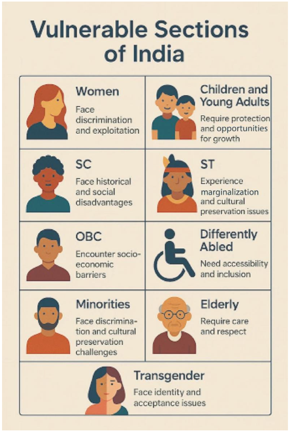
- Vulnerable sections refer to groups of people who face higher risks and disadvantages due to various socio-economic, cultural, and environmental factors. These populations experience systemic exclusion, marginalization, and inequitable access to resources, rights, and opportunities. - Vulnerability is often influenced by the intersectionality of factors such as economic status, gender, caste, disability, age, and ethnicity. Vulnerable groups typically lack the power to influence social, political, and economic decisions and are subject to discrimination, neglect, or abuse. - Rationale of Welfare Schemes for Vulnerable Sections - Constitutional Basis - The Preamble of the Constitution promotes justice, equality, and dignity. - Fundamental Rights protect and promote the idea of equality, the right to live with dignity, and rights against untouchability and exploitation. - Directive Principles emphasize the state’s responsibility for citizens' welfare, helping India become a Welfare State. - Economic Reasons - The Idea of Inclusive growth is considered vital for sustained economic progress of any nation. - Welfare schemes for vulnerable sections help reduce poverty, support the labor force, and facilitate active participation of Vulnerables in economic development. - Nation Building - Excluding vulnerable groups leads to social resentment and inequality, hindering nation-building efforts. - Ensuring equitable access improves societal harmony, fostering a sense of unity and inclusion. - 1.1. Women in India - "When one woman is empowered, she becomes a catalyst for change" - Michelle Bachelet (Former Chilean President) - Women in India are recognized as a vulnerable section of the population, facing systemic disadvantages due to socio-cultural, economic, and political factors. This vulnerability is often structured, stemming from imperfect or unjust societal systems. Women specifically face significant barriers in terms of access to education, economic independence, legal justice, and healthcare. - Key Data Regarding Women's Vulnerabilities - Health & Social Vulnerabilities - Child Marriage (2019–21): - 23.3% of women aged 20–24 were married before reaching the legal age of 18. - Sex Ratio at Birth (2018–20): - The ratio remains unfavorably low at 907 female births for every 1,000 male births, pointing to the persistence of son preference. - Maternal Mortality (2018–20): - The Maternal Mortality Ratio (MMR) stood at 97 deaths per 100,000 live births, compared to the SDG benchmark of 70. - Malnutrition (2019–21): - 18.7% of women between the ages of 15–49 have a Body Mass Index (BMI) that is below normal. - Health Awareness (2019–21): - Only 21.6% of women have comprehensive knowledge of HIV/AIDS. - Economic Vulnerabilities - Labour Force Participation (2023–24): - The Labour Force Participation Rate for females aged 15 and above is only 41.7%. - Wage Gap (Jan–Mar 2024): In casual labour, women earned significantly less than men. - Rural: - Women earned an average of ₹286 per day compared to men's ₹407. - Urban: - Women earned an average of ₹358 per day compared to men's ₹529. - Burden of Unpaid Work (2024): - On an average day, female participants spend 330 minutes on unpaid domestic services, while male participants spend only 101 minutes on the same. - Educational Disadvantages - Gender Gap in Literacy (2017–18): - A significant literacy gap of 14.4 percentage points persists between men and women aged 7 and above. - Dropout Rate (2023–24): - The dropout rate for girls increases significantly with the level of education, reaching 12.60% at the secondary level (Class IX–X). - Crime and Violence - Domestic Violence (2019–21): - 29.3% of ever-married women aged 18–49 have experienced physical, sexual, or emotional violence committed by their husband. - Major Crimes (2022): - "Cruelty by Husband or his Relatives" was the most reported major crime against women, with 140,546 cases filed. - Rape and Cyber Crimes (2022): - There were 31,516 reported victims of rape. 15,969 cases of cybercrimes targeting women were reported. - 1.1.1. Key Challenges Faced by Women in India - Deep-Rooted Patriarchy & Social Discrimination - From Birth to Adulthood: - Discrimination starts early—female foeticide, child marriage, and dowry practices reinforce inequality. - Restricted Roles: - Patriarchal norms confine women to household duties, limiting education and career growth. - Stigma & Shame: - Menstruation remains taboo, forcing many girls to drop out of school, while working women lack menstrual leave policies. - Honor & Control: - Practices like honor killings and acid attacks suppress women’s freedom under the guise of "family reputation." - Violence & Exploitation – A Daily Battle - Rising Crimes: - 87 rape cases are reported daily (NCRB), and domestic abuse remains widespread. - Unsafe Public Spaces: - Fear of harassment restricts mobility and independence. - Economic Inequality – The Invisible Struggle - Low Workforce Participation: - Only 36.9% of women are in formal jobs (2025), far below global averages. - Gender Pay Gap: - Women earn just 39.8% of men’s wages for the same work. Most working women are in low-paying, unstable jobs with no social security. - Ownership Trends Image: -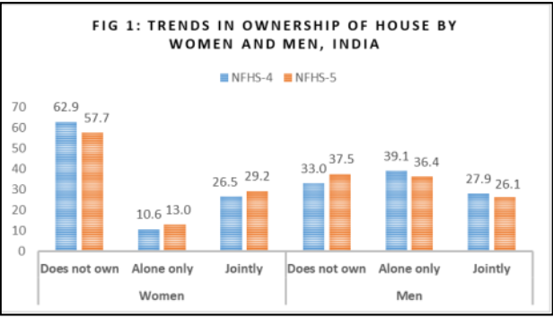
- Unpaid Labor Burden: - Women spend 5.6 hours daily on unpaid care work—equivalent to an invisible tax, draining their potential. - Unequal Ownership of Assets: - Women in India consistently have lower ownership levels than men across key assets, including houses (42.3% for women vs. 62.5% for men), land (31.7% vs. 43.9%), mobile phones (54% vs. 91%), and bank accounts (79% vs. 86%). - Health & Nutrition – Ignored & Underserved - Anemia & Malnutrition: - Half of Indian women suffer from anemia (NFHS-5). - Maternal Health Risks: - High maternal mortality and lack of proper healthcare endanger mothers. - Cancer & Neglect: - Cervical cancer (2nd most common among women) lacks awareness and HPV vaccine access. - Cervical Cancer Statistics Image: -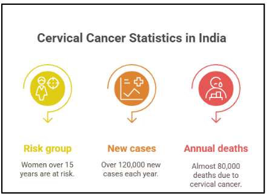
- Aging Without Care: - Widows and elderly women face neglect, with little support for their health needs. - Lack of Representation & Power - Political Marginalization: - Only 14.4% of Lok Sabha MPs are women. - Sarpanch Pati Culture: - Often husbands take oaths for elected women leaders, mocking grassroots empowerment. - Limited Access to Rights: - Many women lack property ownership, legal aid, and digital literacy, keeping them dependent. - Limited Access to Rights: - Many women lack property ownership, legal aid, and digital literacy, keeping them dependent. - Side note - The Shadow Pandemic- Gender Violence and Mental Health Crisis - The Shadow Pandemic refers to the rise in gender-based violence (GBV), especially domestic violence, during the COVID-19 lockdowns (UN Women). - Factors like isolation, economic stress, and social unrest worsened violence, impacting women, children, and vulnerable groups. - Simultaneously, mental health issues like stress, depression, and anxiety increased due to the lockdown. - Policy responses included emergency helplines, shelters, and mental health services to support affected individuals. - Invisible Labor- The Unacknowledged Tax - The "Invisible Labor Tax" highlights the disproportionate burden of unpaid care work on women. - This unacknowledged "tax" consumes time and energy, limiting women’s economic participation and well-being. - Addressing this requires re-engineering societal structures. Investing in universal care infrastructure (like childcare) and promoting shared responsibilities can reduce this burden. - Support for Working Women and Survivors of Violence - Sakhi Niwas: - Provides safe, affordable housing for working women and job seekers. These hostels offer daycare facilities for children, helping women maintain economic independence. States receive financial aid to run these centers. - Sakhi Centres (OSCs): - Over 800 operational centres provide essential services like medical, legal, and psycho-social support to women affected by violence. These centres have assisted over 1.1 million beneficiaries, offering crucial relief and safety. - 1.1.2. Government Schemes and Policies for Women's Protection and Empowerment - Constitutional Safeguards - Fundamental Rights (Articles 14, 15, 21, 23): - Guarantee equality, protection from discrimination, and the right to live with dignity. - Article 42 and 73rd Constitutional Amendment (Article 243D): - Article 42 ensures humane conditions for women in workplaces. Article 243D mandates one-third reservation for women in Panchayati Raj Institutions. - Legislative Interventions - Prohibition of Child Marriage Act (2006): - Aims to protect women from child marriage. - Domestic Violence Act (2005): - Aims to protect women from domestic violence. - Sexual Harassment of Women at Workplace Act (2013) and Maternity Benefit Act (2017): - Sexual Harassment Act mandates mechanisms to combat workplace harassment. Maternity Benefit Act provides 26 weeks of paid maternity leave. - Welfare Schemes for Girls - Beti Bachao Beti Padhao (BBBP): - Addresses gender-biased sex selection and promotes girls' education. - Sukanya Samriddhi Yojna: - Encourages saving for girls' education and marriage. - Udaan Scheme: - Provides scholarships for girls from minority communities for higher education. - Welfare Schemes for Women's Safety - One Stop Centre Scheme: - Provides support to women affected by violence. - Swadhar and Short Stay Homes: - Offer shelter and rehabilitation for destitute women. - Nirbhaya Fund: - Finances initiatives for women's safety and dignity. - Economic Empowerment of Women - Pradhan Mantri Mudra Yojana (PMMY): - Facilitates collateral-free loans for women entrepreneurs. - Deendayal Antyodaya Yojana: - Empowers rural women through Self-Help Groups (SHGs). - Rashtriya Mahila Kosh (RMK): - Provides micro-financing to poor women for income-generating activities. - Stand Up India Scheme: - Supports SC/ST and women entrepreneurs with bank loans for greenfield enterprises. - Health and Social Security - Pradhan Mantri Jan Arogya Yojana (PMJAY): - Provides health insurance to vulnerable women, including Anganwadi workers and their families. - Pradhan Mantri Ujjwala Yojana: - Ensures free LPG connections for BPL women to safeguard their health and well-being. -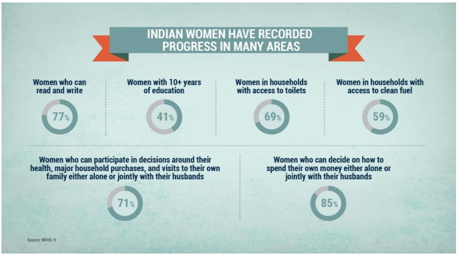
- Nari Shakti Vandan Adhiniyam (Women's Reservation Act) -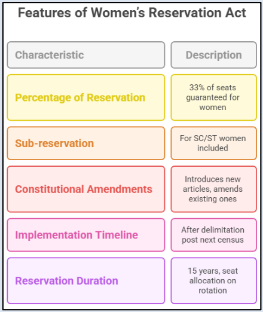
- The Nari Shakti Vandan Adhiniyam, passed in 2023, is a landmark constitutional amendment aimed at improving women’s participation in Indian politics. - It mandates the reservation of one-third of seats for women in the Lok Sabha, State Legislative Assemblies, and the Delhi Assembly. - Though hailed as a long-pending reform, its full implementation depends on future census and delimitation exercises. - Implementation Challenges - The rotational nature of reserved seats may discourage long-term investment by elected women. - There is also concern over proxy representation by male relatives, limited inclusion of OBC and minority women, and lack of broader electoral reforms to support genuine empowerment. - Learning from an Example- Women Empowerment in Norway - Norway offers a powerful case study in using policy reform to accelerate women’s representation in leadership. In 2003, it mandated a 40 percent quota for women on corporate boards, raising female representation from just 9 percent to over 40 percent in a few years. This is a clear example of how strong legal mandates can drive visible change. - However, the move also revealed a crucial lesson. While quotas can open doors at the top, they do not automatically dismantle deeper structural and cultural barriers that prevent women from becoming CEOs or holding key executive roles. - Key takeaway- True empowerment requires a two-pronged approach. - First, there must be affirmative policies to ensure women get a seat at the table. - Second, there must be long-term investment in equality of opportunity through mentorship, skill development, inclusive work cultures, and access to leadership pipelines. Empowerment must reach every level, not just the boardroom. - 1.2. Children - "Every child comes with the message that God is not yet discouraged of man" - Rabindranath Tagore - In India, children are defined as individuals under the age of 18 years, unless they reach adulthood earlier by applicable law. Children account for 39% of the population of India according to Census 2011. - Children represent one of the most vulnerable sections of society, and are highly susceptible to exploitation, abuse, and neglect. - Their vulnerability is further heightened in difficult circumstances such as being orphans, refugees, child laborers, or victims of abuse. - 1.2.1. Key Challenges Faced by Children -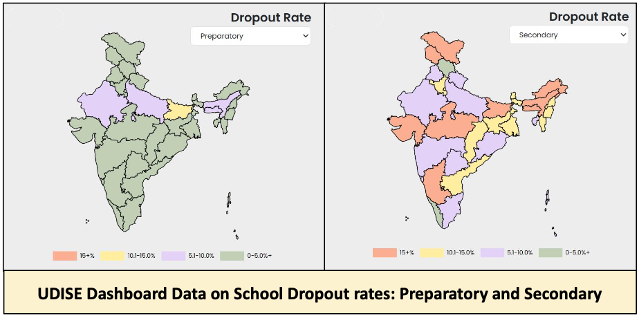
- Education - Learning Gaps and Dropout Rates: - Malnutrition and inadequate early childhood education contribute to learning gaps. 1.72 crore children dropped out, and school enrolment fell from 26.5 crore in 2021-22 to 24.8 crore in 2023-24. - Access to Pre-Primary Education: - Children from economically weaker sections are less likely to access pre-primary education, which impedes their learning journey. - Best Practices: - Shala Praveshotsav - Gujarat's annual school enrollment drive has reduced dropout rates from 35% in 2003 to just 0.85% in 2024, enrolling children in kindergarten and Classes 1, 9, and 11. - Thalliki Vandanam Scheme: - Andhra Pradesh's initiative provides ₹13,000 per student to mothers of 42.69 lakh school-going children, aiming to support education costs and reduce dropout rates. - Child Abuse and Exploitation - Crime Rates Image: -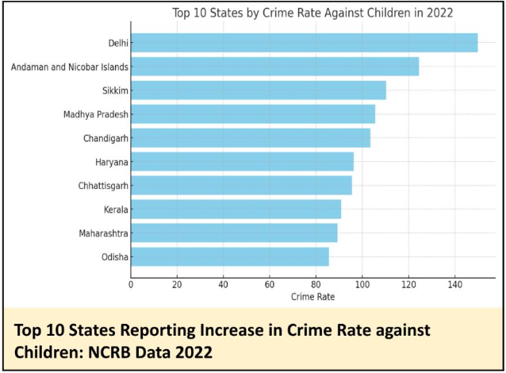
- Child Marriage: - Driven by poverty and patriarchal norms, child marriage forces early pregnancies and limits education, perpetuating the poverty cycle. - Crimes Against Children: - According to the NCRB 2022, 18 crimes against children occur every hour, with one-third under the POCSO Act. Family members or acquaintances are often perpetrators. - Child Labor: - India has the largest number of working children globally, with over 10 million children aged 5-14 involved in child labor. - Health and Nutrition - Malnutrition: - India faces a high rate of malnutrition, with 32.1% underweight, 35.5% stunted, and 19.3% wasted children. This, along with poor early childhood education, exacerbates learning difficulties. - Mortality and Health Indicators: - India has one of the highest Infant Mortality Rates (IMR) at 34 per 1,000 live births. Diarrhea and malnutrition are primary causes of death for children under five. - Health Comparison Image: -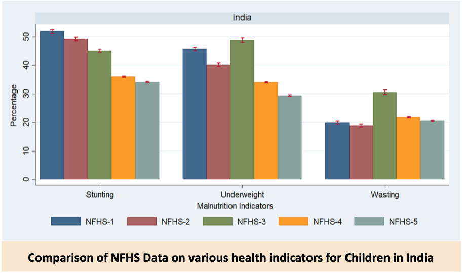
- Best Practices: - Rajiv Aarogyasri Scheme - Telangana has extended health insurance coverage to 2,215 orphans and BPL children in Child Care Institutions, offering cashless treatment up to ₹10 lakh for over 1,835 procedures. - ICDS and Bharat Ratna Dr APJ Abdul Kalam Amrut Aahar Yojana: - Maharashtra reported a 51,141 decrease in severely malnourished children from 2023 to 2025, attributed to initiatives like ICDS and the 'Bharat Ratna Dr APJ Abdul Kalam Amrut Aahar Yojana'. - Gender Discrimination - Child Marriage and Violence: - Female children face infanticide, neglect of nutritional needs, lack of education, and gender-based violence. 7% of girls aged 15 or younger were married between 2014-2020. - Child Sex Ratio: - The child sex ratio (0-6 years) was 919 girls per 1,000 boys in 2011, reflecting ongoing gender imbalances. - Other Vulnerabilities - Digital Well-Being: - The digital well-being of children in India is a growing concern, with 60% of children at risk of digital addiction. 70-80% of children exceed recommended screen time, leading to issues like cyberbullying, mental health concerns, and behavioral changes. - Digital Safety Image: -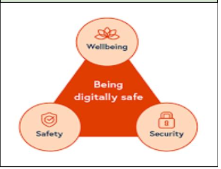
- Climate Change Impact: - Children are disproportionately affected by natural disasters and climate change, exacerbating their vulnerabilities. In 2023, approximately 24.1 million children in India were impacted annually by climate-related disasters such as floods, cyclones, and heatwaves. - Side note - Learning through Example- A Special Start- Finland's Baby Box - Finland’s Baby Box policy is a powerful example of how governments can promote equal opportunity from birth. Since 1949, every new mother has received a free "Baby Box" containing essential items for newborn care. - This initiative does more than offer material support. It encourages prenatal care, fosters early child well-being, and has played a role in significantly reducing infant mortality rates in Finland. - Key takeaway: - Social policies that provide universal access to early life resources can have lasting impacts. The Baby Box illustrates how state-led interventions can bridge gaps in healthcare, reduce inequality, and promote a strong, healthy start for every child, regardless of background. - 1.2.2. Government Schemes and Policies for Children - Constitutional Safeguards - Article 39(f): - Ensures children's development in a healthy and dignified environment, protecting them from exploitation. - Article 21A: - Guarantees free and compulsory education for children aged 6-14 years. - Articles 23 & 24: - Prohibit child trafficking and forced labor, with specific restrictions on hazardous labor. - Article 45: - Directs the provision of early childhood care and education for children up to six years. - Welfare and Development Schemes - Integrated Child Development Services (ICDS): - Focuses on the nutritional and health development of children under six. - POSHAN Abhiyaan: - Targets reduction of malnutrition in children. - Samagra Shiksha Abhiyan: - Aims to improve learning outcomes for disadvantaged children, focusing on quality education. - National Education Policy (NEP) 2020: - Prioritizes Early Childhood Care and Education (ECCE) for foundational literacy and numeracy. - Childline-1098 and Mission Vatsalya: - Childline-1098 is a 24-hour emergency helpline for children in distress. Mission Vatsalya has supported 1.7 lakh children under non-institutional care programs in 2024–25, aiming to provide family-based care and rehabilitation. - Protection and Legal Frameworks - Juvenile Justice (Care and Protection of Children) Act, 2015: - Focuses on the care, protection, and rehabilitation of children in need. - Protection of Children from Sexual Offences (POCSO) Act, 2012 and Prohibition of Child Marriage Act, 2006: - POCSO Act provides strict protection against child sexual abuse. Prohibition of Child Marriage Act criminalizes child marriage. - 1.3. Young Adults (Youth) - "The youth are the living messages we send to a future we will never see." - John F. Kennedy - In India, the National Youth Policy 2014 defines youth as individuals between the ages of 15 and 29 years. - Youth is considered a period of transition from dependence to independence, encompassing the age groups of adolescents (10-19 years) and young adults (15-24 years). - With 65% of India's population under 35 years, youth form a critical demographic for national development. - 1.3.1. Key Challenges Faced by Young Adults - Employment Crisis and Skill Mismatch - High Unemployment: - Youth unemployment remains high, with a significant portion of the youth population either underemployed or disengaged from both employment and learning. Youth unemployment Rate: 17.9% in Urban areas and 13.7% in Rural regions as of May 2025. - Skill Gap: - A substantial mismatch exists between available talent and the needs of the industry. Only 4.4% of the workforce aged 15-29 has received formal skills training, contributing to a high unemployment rate. - Informalization: - An increasing trend toward informal, short-term contracts in the job market pushes youth into the informal economy, where social security benefits are absent. - Exploitation under Gig Economy: - Precarious working conditions in the gig economy leads to exploitation of youth. Key factors for such conditions include poor pay, lack of social security, and absence of worker protection regulations. - Mental Health Crisis, Drug Abuse and Suicide Epidemic - Addiction Image: -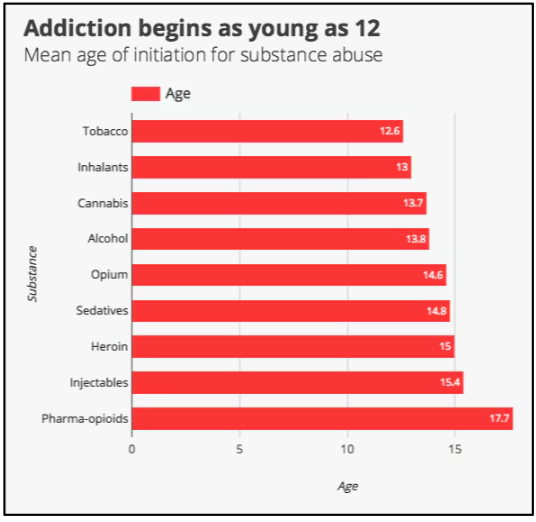
- Drug Abuse: - Around 13% of drug users in India are under 20 years old, exacerbating physical and mental health issues. - Mental Health Issues: - A growing crisis of mental health problems, including depression and suicidal tendencies, especially among LGBTQIA+ youth, calls for urgent attention. - Suicide Epidemic: - Student suicides highlight the immense social and psychological pressures faced by youth mainly due to mental health issues, social pressures as well as drug abuse. India reported 13,044 student suicides in 2022 (NCRB data), nearly doubling in a decade. - Side note - Learning through Example- Switzerland's Secret to Youth Success - Switzerland offers a strong example of how practical education can prepare youth for meaningful careers. Around 70% of Swiss teenagers choose vocational apprenticeships after school rather than traditional academic routes. - These apprenticeships combine classroom learning with on-the-job training. Companies like Nestlé pay students as they work and learn, ensuring they gain real-world skills and income at the same time. As a result, Switzerland enjoys one of the lowest youth unemployment rates in the world. - Key takeaway: - A well-designed vocational training system equips youth with job-ready skills, reduces unemployment, and bridges the gap between education and industry. It highlights the importance of aligning education with practical experience and market needs. - 1.3.2. Government Schemes and Policies for Youth - Youth Development and Engagement - National Youth Policy 2014: - Aims for holistic youth development to empower youth for nation-building. - Nehru Yuva Kendra Sangathan: - Provides rural youth with opportunities for nation-building and skill development. - National Service Scheme (NSS) and Life Skill Training for Adolescents: - NSS promotes volunteerism and social service. Life Skill Training equips youth with skills to cope with pressures and make healthy life choices. - Mera Yuva Bharat (MY Bharat): - A platform launched in 2023 to engage youth in volunteerism and nation-building activities. - Skill Development and Employment Generation - National Skill Development Mission (NSDM) and Pradhan Mantri Kaushal Vikas Yojana (PMKVY): - NSDM provides a framework to coordinate skill development efforts. PMKVY provides skill training to improve youth employability. - Employment-Linked Incentive (ELI) Scheme: - The Indian government approved an ₹1 trillion Employment-Linked Incentive (ELI) scheme, aiming to create approximately 35 million jobs between August 2025 and July 2027. - Start-Up India and Stand Up India: - Facilitates entrepreneurship by providing financial support to youth entrepreneurs, especially from SC/ST backgrounds. - Social Security and Health - Code on Social Security (2020): - Expands social security benefits to include gig and platform workers, where majority of those employed are youth. - Pradhan Mantri Jeevan Jyoti Bima Yojana (PMJJBY) and Pradhan Mantri Suraksha Bima Yojana (PMSBY): - Affordable insurance schemes for underprivileged youth. - Mental Health Care Act (2017): - Aims to reduce stigmatization and improve access to mental health care for youth. - National Youth Policy (in detail) -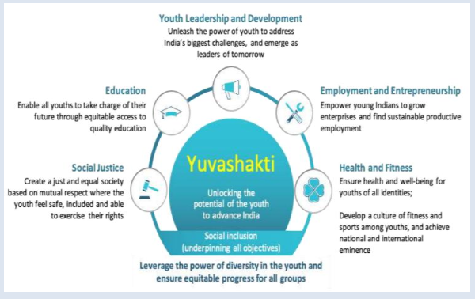
- The National Youth Policy (NYP) provides a structured approach to youth development in India. The last finalized version, NYP 2014, focused on empowering individuals aged 15–29 to achieve their full potential. - It aimed to align youth energy with the goals of national development through five key priority areas: education, employment and entrepreneurship, health and sports, youth leadership, and social justice. - The policy emphasized inclusion, skill-building, and active participation in civic life, and was aligned with national policies like NEP 2020 and international frameworks such as the Sustainable Development Goals. - Over time, the need for an updated framework became clear due to changing economic realities, rapid technological shifts, and rising mental health concerns among youth. - Responding to this, the government released the Draft National Youth Policy 2024, building on past learnings and aiming for deeper impact during the Amrit Kaal period. - Key Features Draft National Youth Policy 2024: - Tackling NEET Crisis: - Aims to reduce the NEET (Not in Education, Employment or Training) rate, which is 32.9% of youth aged 15–29 (NSSO 2020–21). - Focus on Youth Demographic: - Targets individuals aged 15–29 years, who constitute India’s largest working-age population segment. - Skill, Up-skill, Re-skill Model: - Emphasizes readiness for Industry 4.0 through continuous skill enhancement aligned with market needs. - Digital Empowerment via YUVA Portal: - Introduces a one-stop online platform for internships, job opportunities, mentoring, and career counseling. - Entrepreneurship and Job Creation: - Encourages youth to become job creators by promoting innovation, startup ecosystems, and e-commerce access. - Leadership Development: - Proposes a School of Leadership at RGNIYD and platforms like Youth Parliament Festival to shape future leaders. - Inclusion of Vulnerable Groups: - Prioritizes outreach to dropouts, rural, disabled, and disadvantaged youth through tailored programs. - Mental Health and Well-being: - Integrates counseling, stress management, and awareness around substance abuse into youth health strategy. - Fitness as Daily Culture: - Promotes “Fitness ki Dose, Aadha Ghanta Roz” and strengthens youth engagement in sports and adventure activities. - Data-Driven Governance: - Recommends District Youth Information & Resource Centers and analytics for real-time youth tracking and support. - The draft aims to create a youth ecosystem that not only supports individuals but positions them as leaders of change in a rapidly evolving India. - 1.4. Elderly (Senior Citizens) in India - "A society that abandons its elders cuts its own roots." - Confucius - In India, "elderly" refers to citizens aged 60 and above. According to the 2011 Census, there were nearly 104 million senior citizens, constituting 8.6% of the population. - This number is projected to triple by 2050, reaching 300 million (18%), with a rising proportion of elderly women, particularly in rural areas, facing issues like poverty, dependency, and loneliness. -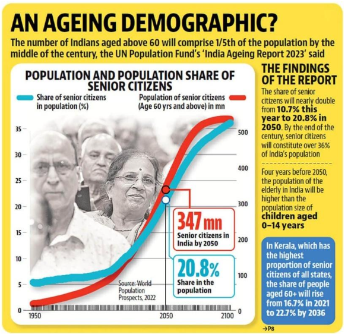
-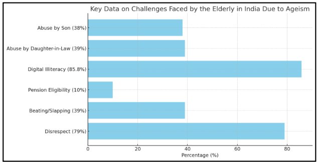
- 1.4.1. Key Challenges Faced by the Elderly - Health Concerns - Chronic Illnesses: - High prevalence of chronic illnesses like diabetes, heart diseases, and cataracts. - Limited Geriatric Care: - Limited access to geriatric care, with few healthcare providers trained for elderly-specific health needs. - Rising Treatment Costs: - Rising treatment costs for conditions like cancer, leading families into financial distress. - Mental Health Issues: - Mental health issues, including depression, loneliness, and identity crises, are common, as they face emotional neglect. Approximately 18% of elderly individuals experience depression, with loneliness affecting about 35% of seniors, particularly in urban areas. - Social Challenges - Changing Family Structures: - The rise of nuclear families has led to a lack of companionship and caregiving. Many elderly thus suffer from social isolation, especially those living alone. A study indicates that 34% of seniors experience social isolation, with 55.4% reporting feelings of loneliness. - Elder Abuse: - Elder abuse is rampant, with incidents of physical, verbal, and emotional abuse, particularly by family members. Elder abuse remains a significant issue, with prevalence rates varying from 9.6% to 61.7% across different states. - Economic Challenges - Limited Pension Coverage: - Only 10% of India's workforce has access to pensions. Even through government schemes, the amount paid is a meagre Rs 200-500 per month, which is insufficient to meet basic needs. - Dependence on Children: - Due to limited pension access, many elderly individuals rely on their children for financial support. - Lack of Health Insurance: - A large portion of elderly individuals work in the informal sector, leaving them without health insurance. This leads to high medical costs and inadequate healthcare. - Housing Challenges: - Many elderly individuals struggle to access adequate housing due to limited financial resources. - Challenges Faced by Elderly Women - Widowhood: - Widowhood is more prevalent among elderly women, leading to increased financial vulnerability. - Gender-Based Discrimination: - Older women are more likely to face abuse and denied property rights due to gender discrimination and traditional societal norms. - Technology Barriers - Digital Literacy Challenges: - Many elderly face challenges with digital literacy, hindering their ability to access services that are increasingly digitalized. - Aadhaar Exclusions: - Elderly individuals' fingerprint degradation can lead to exclusion from welfare schemes that require Aadhaar verification. - Side note - Learning through Example- The Graying Globe - As the world sees a rapid rise in the elderly population, Japan’s experience offers valuable lessons. Often called a “Silver Democracy”, Japan’s political landscape is increasingly shaped by its ageing voters, with policy focus shifting toward pensions, healthcare, and elderly welfare. - One major issue Japan faces is the growing burden of elderly care. To tackle this, it has turned to technological solutions, such as the Robear Care Robot, which assists caregivers and showcases how innovation can ease care responsibilities. - Key takeaway: - Preparing for an aging society requires more than just policy—it demands foresight, welfare planning, and the use of technology. Japan’s approach reminds us that ensuring dignity, inclusion, and support for the elderly is not optional, but essential for social justice in aging democracies. - 1.4.2. Government Schemes and Policies for the Elderly - Constitutional and Legal Framework - Article 41: - Ensures the right to public assistance for old age. - Maintenance and Welfare of Parents and Senior Citizens Act, 2007 (Amended 2019): - Mandates children to provide maintenance to elderly parents and ensures protection of life and property. - Welfare Schemes for the Elderly - Indira Gandhi National Old Age Pension Scheme (IGNOAPS): - Provides monthly pensions to BPL elderly citizens. - Pradhan Mantri Vaya Vandana Yojana (PMVVY): - Ensures a pension for senior citizens with an 8% return on lump sum investments. - National Programme for the Health Care for the Elderly (NPHCE): - Provides preventive and curative healthcare for the elderly. - Rashtriya Vayoshri Yojana (RVY): - Distributes assistive devices (e.g., wheelchairs, hearing aids) to BPL senior citizens. - Senior Citizens Health Insurance Scheme (SCHIS): - Offers health insurance coverage to elderly people in BPL families. - Specific Government Policies and Schemes - National Policy for Senior Citizens, 2011 and Elder Line: - National Policy focuses on welfare, promoting preventive care, income security, and social participation. Elder Line provides a helpline for senior citizens in distress. - Pradhan Mantri Jan Arogya Yojana (AB-PMJAY): - Extended to include all citizens aged 70 and above, covering healthcare costs up to ₹5 lakh. - The Second Demographic Dividend - The second demographic dividend occurs when a large working-age population enters their highest income-earning years, typically between 40-49 years. During this period, individuals focus more on saving for retirement and are at their most productive, contributing to economic growth. - India’s Case: - India should focus on the second demographic dividend by addressing challenges like skill deficits (NEP 2020's goal to improve GER), employment issues (underemployment, especially in the informal sector), and promoting savings, investment, and social security to support future growth. Empowering women and managing urbanization challenges are also critical. - Maximizing Benefits from India's Second Demographic Dividend| S.No. | Strategy | Example |
|---|---|---|
| 1 | Investing in Human Capital | South Korea fueled growth by investing in universal education and vocational training, creating a skilled workforce. |
| 2 | Generating Productive Employment | China absorbed rural workers into urban industrial jobs using SEZs and export-oriented policies during its demographic dividend peak. |
| 3 | Promoting Savings and Investment | Singapore mobilized savings through CPF, supporting infrastructure development and economic diversification. |
| 4 | Strengthening Social Security and Healthcare Systems | Japan supported its aging population with universal healthcare and pension systems. |
| 5 | Empowering Women | Vietnam boosted female labor force participation through investments in education, childcare, and gender equality policies. |
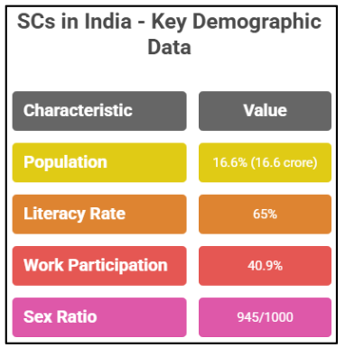
- 1.5.1. Key Challenges Faced by Scheduled Castes - Social Exclusion - Social Ostracism: - SCs face social ostracism due to the entrenched caste system. Discrimination persists in public spaces, restricting access to resources, including basic necessities. - Discriminatory Practices: - Social practices like honour killing, female foeticide, child marriage, and manual scavenging continue to affect them. - Economic Disadvantage - Poverty: - As per Census 2011, 34% of SCs lived below the poverty line, much higher than the national average of 9%. - Landlessness: - Approximately 45% of SC households are landless. - Wealth Distribution: - SCs own only 7% of India’s wealth, despite comprising 25.2% of the population. - Informal Sector Employment: - Many SCs work in low-skilled, informal sectors, facing job insecurity and earning lower wages than other castes. - Political Underrepresentation - Limited Representation: - Despite constitutional provisions for reservations, SCs remain underrepresented in decision-making bodies, holding only 4% of senior positions in the government. - Vulnerability and Exploitation - Anti-Dalit Crimes Image: -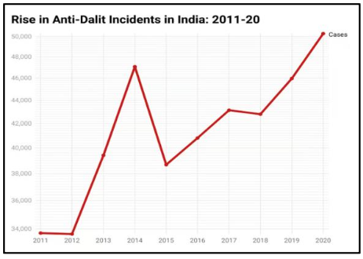
- Violence and Human Rights Violations: - SCs are disproportionately affected by violence and human rights violations. In 2022, 57,582 crimes were reported against SCs. - Manual Scavenging: - Manual scavenging, primarily undertaken by Dalit women, remains a practice of exploitation. - Overrepresentation in Prisons: - SCs are overrepresented in prisons, constituting 20.74% of the prison population. - Access to Basic Services - Education: - Malnutrition and lack of early childhood education hamper SC children’s learning. - Health: - IMR among SCs is 83 per 1,000 live births, significantly higher than the national average of 61.8. - Basic Amenities: - Only 28% of SCs had access to electricity in 2011, compared to the national average of 48%. - Internal Disparities - Inequalities within SC Communities: - There are significant inequalities within SC communities, with advanced SC sub-groups benefiting more from reservations than marginalized sub-groups. - Manual Scavenging in India- Persistence of a Grave Injustice -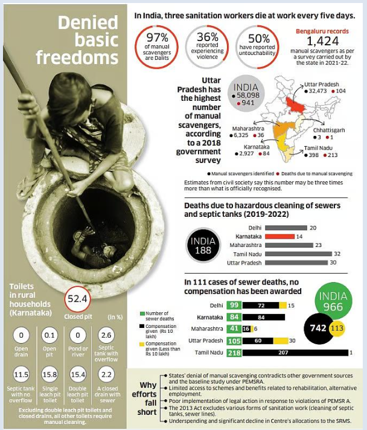
- Manual scavenging remains one of India’s most pressing social and human rights challenges, disproportionately impacting Dalits, especially Dalit women. Although outlawed under the Employment of Manual Scavengers and Construction of Dry Latrines (Prohibition) Act, 1993, and further criminalized by the Prohibition of Employment as Manual Scavengers and their Rehabilitation Act, 2013, the practice continues due to a nexus of caste hierarchies, economic deprivation, and poor enforcement. - Scale and Impact - Caste and Gender: - An estimated 98% of manual scavengers are Dalits, and 95% are women (Shah et al., 2015; UN Women, 2014), indicating intersectional marginalisation rooted in caste and patriarchy. - Deaths and Lack of Justice- Over 40 deaths were reported in just six months of 2024 (Safai Karmachari Andolan). - From 1993 to 2020, 1,013 deaths were officially recorded, yet convictions remain rare. - Most cases are labelled as "accidents," and affected families often do not receive compensation or meaningful rehabilitation. - Structural Reasons for Persistence of Manual Scavenging - Entrenched Caste System and social stigma - Lack of alternative livelihoods, education, or land - Poor sanitation infrastructure and slow mechanization - Weak implementation of laws and accountability mechanisms - Apathy from authorities and wider society - Way Forward - Strict enforcement of existing laws with accountability mechanisms - Full mechanization of sanitation work and modern sewage systems - Robust rehabilitation programs, including land, education, and employment - Skill development and financial inclusion for liberated manual scavengers - Societal change through education, media, and sustained public discourse to end caste-based occupational segregation - Sub-Classification of Scheduled Castes (SCs) - The Supreme Court of India, in the State of Punjab & Others v Davinder Singh & Others case, has ruled that sub-classification of Scheduled Castes (SCs) is permissible. - This landmark judgment allows for creating separate quotas for more backward groups within the SC category, addressing specific needs and ensuring better representation in education and employment. - Key Highlights of the Judgment - Constitutional Clarity: - The Supreme Court affirmed that sub-classification within SCs does not violate Article 341(2), as the reservation list is flexible. - State’s Responsibility and Data Collection: - States are allowed to sub-classify SCs based on inadequate representation in public services. However, the state must provide empirical data supporting the claim of backwardness in these groups. - Creamy Layer Principle: - The debate on extending the "creamy layer" concept to SCs and STs was discussed, but the judgment does not mandate its implementation. - Arguments Supporting Sub-Classification of SCs: - Substantive Equality: - The approach ensures the most marginalized within SCs are given targeted support. - Efficient Governance: - Sub-classification can improve governance efficiency by addressing the unique challenges faced by various SC groups. - Recognition of Diversity: - Acknowledges the heterogeneity of SCs, with some groups facing more severe discrimination and social exclusion than others. - Arguments Opposing Sub-Classification of SCs: - Risk of Division: - Critics fear that it could lead to fragmentation within the SC community, weakening their collective voice in socio-political matters. - Potential for Political Exploitation: - There are concerns about the manipulation of sub-classification for vote bank politics. - Data Limitations: - Lack of accurate caste data makes it difficult to substantiate claims of underrepresentation within specific SC subgroups. - The Supreme Court’s ruling on sub-classification marks a significant shift in India’s reservation policies for SCs. However, the government has clarified on multiple occasions that subclassification shall not be done for SCs. -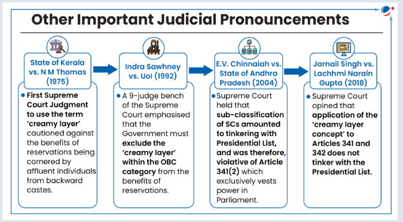
- Learning through Example- Japan - Dowa Education Movement - Japan’s Burakumin community, once treated as social outcasts, faced generations of systemic discrimination. In response, they initiated the Dowa Education Movement, using education as a transformative tool. - Schools were encouraged to teach about Burakumin history and human rights, aiming to challenge prejudice early in life. By raising awareness among children, this approach helped shift mindsets and promote dignity and equality. - Key takeaway: - Long-term social change often begins in the classroom. Curriculum reform and inclusive education are powerful means to challenge stereotypes and build a more equitable society from the ground up. - 1.5.2. Government Schemes and Policies for Scheduled Castes - Constitutional and Legal Safeguards - Article 14: - Ensures equality before the law for SCs. - Article 15(4) & 15(5): - Enables the State to make provisions for the advancement of SCs in education and public services. - Article 17: - Abolishes untouchability and prohibits its practice in any form. - Article 46: - Directs the State to promote the welfare and protect SCs from social injustice and exploitation. - Key Acts for Protection - Protection of Civil Rights Act, 1955: - Legal safeguards against caste-based discrimination. - Scheduled Castes and Scheduled Tribes (Prevention of Atrocities) Act, 1989: - Prevents atrocities and provides financial assistance to victims. - Prohibition of Employment as Manual Scavengers and their Rehabilitation Act, 2013: - Bans manual scavenging and mandates rehabilitation. - Government Initiatives and Schemes - SC Sub-Plan (SCSP): - Allocates funds specifically for the development of SCs across various sectors. - Post-Matric Scholarships: - Financial assistance for SC students pursuing higher education. - Mahila Adhikarita Yojana: - Financial assistance for SC women to promote income generation. - National Safai Karamchari Finance and Development Corporation (NSKFDC): - Provides financial assistance for income-generating schemes for SCs. - Health and Social Welfare - NAMASTE Scheme: - Aims to train sewer/septic tank workers and provide PPE kits. - Rashtriya Swasthya Bima Yojana (RSBY): - Health insurance component for SCs and other vulnerable groups. - Economic Empowerment - Stand Up India and PM Mudra Yojana: - Stand Up India facilitates bank loans for SC/ST and women entrepreneurs to promote self-employment. PM Mudra Yojana provides collateral-free loans to promote micro-enterprises, including those owned by SCs. - Institutional Support - National Commission for Scheduled Castes (NCSC) and National Commission for Safai Karamcharis (NCSK): - NCSC monitors and safeguards the socio-economic interests of SCs. NCSK focuses on the welfare of manual scavengers. - 1.6. Scheduled Tribes (STs) in India - "The land does not belong to us; we belong to the land." - Gond proverb (Tribal Wisdom) - Scheduled Tribes (STs) in India are social groups identified by the Constitution as suffering from poverty, powerlessness, and social stigma. The Constitution of India defines Scheduled Tribes under Article 366 (25), which designates them for special treatment and ensures their protection and welfare. - According to the 2011 Census, STs constitute approximately 8% of India's total population, with a literacy rate of 60%, lower than the national average of 75%. They also face high levels of poverty, unemployment, and social exclusion. -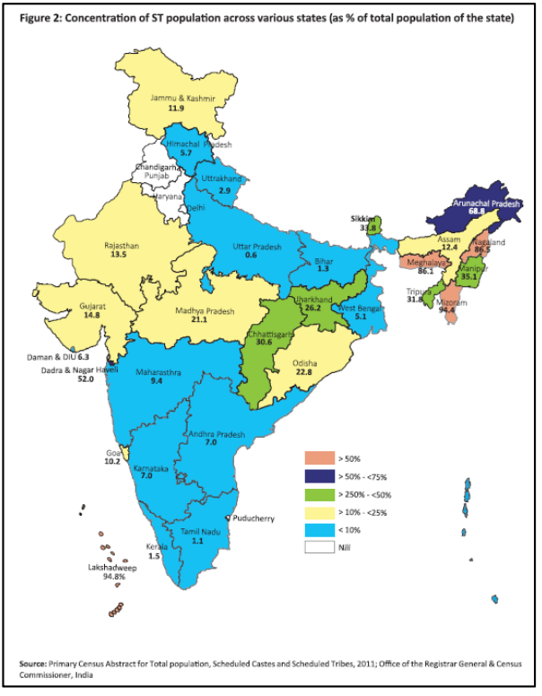
-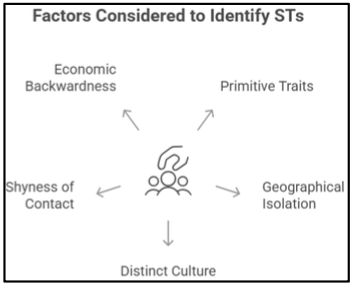
- 1.6.1. Key Challenges Faced by Scheduled Tribes - Poverty and Economic Disadvantage - High Poverty Rates: - 45.3% of rural ST populations live below the poverty line, a significantly higher proportion compared to other social groups. - Limited Economic Opportunities: - Many ST households are landless or have limited access to economic opportunities, contributing to their economic disadvantage. - Land Alienation and Resource Depletion - Impact of Development Projects: - Development projects, such as mining and dam constructions, have led to land alienation, depriving STs of their traditional land and natural resources, thereby impacting their livelihood and culture. - Educational and Health Disadvantages - Poor Health and Education Outcomes: - STs face poor health outcomes, including higher infant mortality rates (IMR), under-five mortality rates (U5MR), and high levels of anemia among women. They also suffer from low literacy rates (59% in 2011) and high dropout rates, hindering educational progress. - Crime and Violence - Rising Hate Crimes Image: -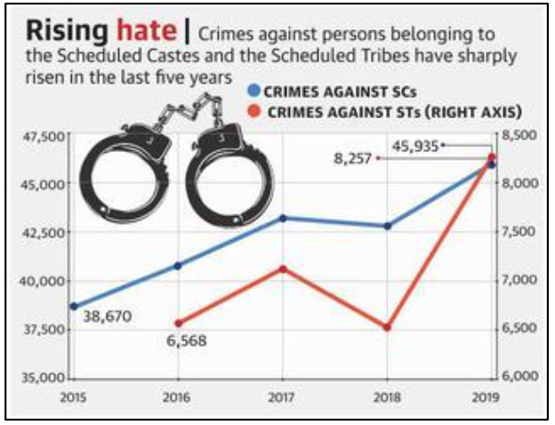
- Violence Against Tribal Women: - Tribal communities, particularly tribal women, are disproportionately affected by violence. In 2022, there were 1,347 rape cases and 1,022 assault cases reported against tribal women, highlighting their vulnerability and lack of protection. - How the Forest Rights Act (FRA) Gives Power Back to Forest-Dwelling Tribes - For generations, STs living in forests faced injustice, with governments taking away their land and rights. The Forest Rights Act (FRA), passed in 2006, aims to correct these wrongs and give STs and other traditional forest dwellers legal control over their ancestral forests. - 1. Fixing Past Injustices- Recognizing Land & Resource Rights - Legal Ownership: - The FRA gives STs legal recognition of their rights over the forest land they’ve lived on for generations. - Types of Rights Granted: - Individual Forest Rights (IFR): - The right for families to live on and use forest land for their livelihood. - Community Forest Rights (CFR): - The right for entire villages to manage common resources like grazing land, water sources, and Minor Forest Produce (MFP) such as bamboo and herbs. - Community Forest Resource Rights (CFRR): - The right and responsibility to protect, regenerate, and manage local forests sustainably. - 2. Empowering Tribal Communities- Putting Decisions in Local Hands - Gram Sabha is Key: - The Gram Sabha (village assembly) has the power to decide on forest rights, giving STs authority over local governance. - Protection from Forced Removal: - The Act protects STs from illegal evictions and ensures proper rehabilitation and resettlement if land is taken for important projects. - Securing Tribal Homelands: - For Particularly Vulnerable Tribal Groups (PVTGs), the FRA secures their rights to their entire traditional habitat, even if some parts are classified as revenue land. - 3. Building Better Livelihoods & Economic Security - Access to Forest Bounty: - Legal rights to collect, use, and sell Minor Forest Produce (MFP) help create sustainable livelihoods and improve food security. - Development Needs Met: - The Act allows the use of small amounts of forest land for building essential community services like schools, health clinics, and roads. - 4. Protecting Culture & Conserving Forests Together - Valuing Traditional Knowledge: - The FRA protects the traditional knowledge of STs about biodiversity and conservation. - Community-Led Conservation: - The Act empowers STs to manage forests sustainably, helping preserve biodiversity, combat climate change, and protect cultural heritage. - Changes to the Act- Steps Forward & Concerns - Positive Change (2017): - Reclassifying bamboo as Minor Forest Produce (MFP) allowed STs to harvest and sell bamboo freely, boosting incomes. - Recent Concerns (2023 Amendments): - Amendments to the Forest Conservation Act (FCAA 2023) raised concerns that changes could weaken the requirement for Gram Sabha consent and FRA compliance before diverting forest land for projects, threatening ST rights. - Implementation Problems: - Despite positive changes, slow and inconsistent FRA implementation across many states remains a challenge. - Particularly Vulnerable Tribal Groups (PVTGs) -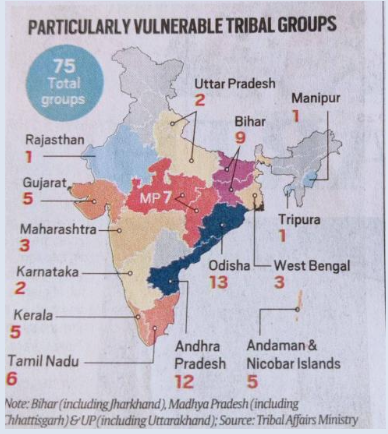
- PVTGs are a sub-class of Scheduled Tribes recognized by the Government of India as the most socio-economically marginalized tribal communities. There are currently 75 PVTGs spread across 18 states and the Andaman & Nicobar Islands. - Identification Criteria for PVTGs - Pre-agricultural level of technology - Stagnant or declining population - Extremely low literacy levels - Subsistence-level economy - Key Issues faced by PVTGs - Displacement and Loss of Livelihoods: - Displaced by development, conservation, and infrastructure projects with poor rehabilitation support. - Denial of Land and Habitat Rights: - Despite laws like the Forest Rights Act, many remain alienated from ancestral lands and resources. - Extreme Poverty and Malnutrition: - High levels of hunger, health issues, and literacy rates around only 30–40%. - Exploitation and Market Exclusion: - Limited access to markets for forest produce and vulnerability during health or climate crises. - Data Gaps and Outdated Lists: - Inadequate surveys and demographic data result in ineffective targeting of welfare programs. - Government Initiatives - PM-JANMAN Scheme: - It is a new scheme launched by Government of India, especially focused on saturating PVTG habitations with basic amenities such as: - Housing - Drinking water - Healthcare and nutrition - Road connectivity - Education and skill development - ₹24,000 crore allocated for implementation. - Way Forward - Ensure community-led planning and culturally sensitive development. - Improve infrastructure and access to public services. - Guarantee legal and land rights, with effective implementation of the Forest Rights Act. - Promote livelihood diversification through skill training and forest-based enterprises. - Strengthen data collection and regularize PVTG lists to enable targeted delivery. -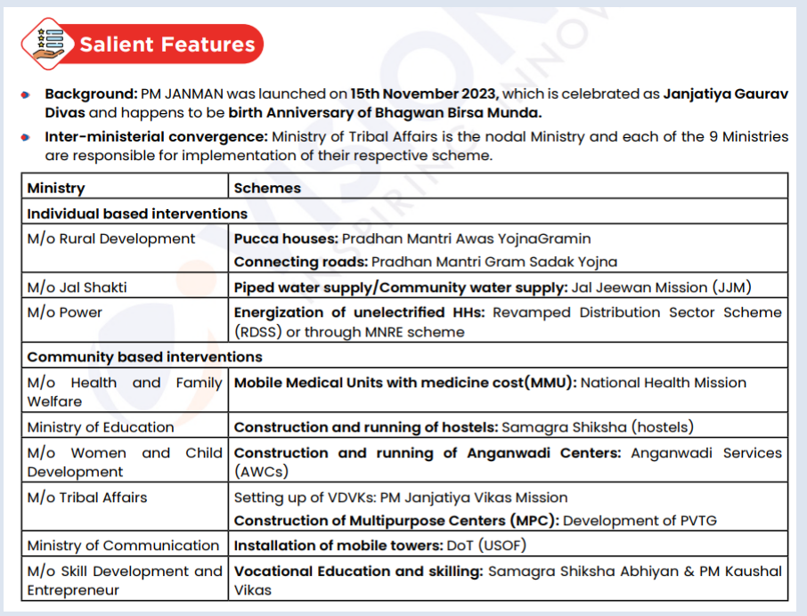
- Side note - Learning through Example- First Nations Education Stewardship (Canada) -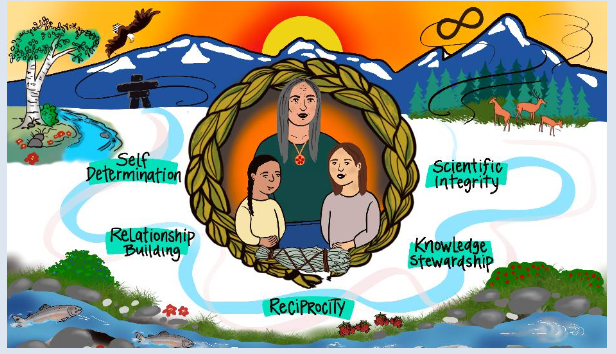
- In Canada, First Nations communities have reclaimed control over their children’s education through a model called Education Stewardship. - Instead of following externally imposed curricula, tribal councils now design their own content—teaching indigenous languages, traditional skills like hunting, and land-based knowledge. - This model moves beyond colonial systems to build cultural pride, relevance, and resilience. Children learn in ways that affirm their identity, heritage, and community values, fostering both educational engagement and strong self-worth. - Key Takeaway: - When communities shape their own education: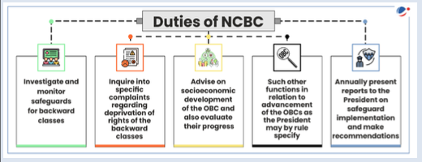
- Welfare Schemes and Initiatives - Pre and Post-Matric Scholarships: - Provides financial support to OBC students for primary, secondary, and higher education. - National Fellowship for OBCs: - Financial support for OBC students pursuing M.Phil. and Ph.D. studies. - Shilp Sampada Scheme: - Enhances technical skills of OBC communities, especially in traditional crafts. - PM-DAKSH (Pradhan Mantri Dakshta Aur Kushalta Sampann Hitgrahi): - Provides skill development opportunities for OBC communities via a portal and mobile app. - New Swarnima Scheme for Women: - Provides loans up to ₹1,00,000 to OBC women for self-reliance without requiring personal investment. - Saksham Scheme: - Offers term loans for young professionals from OBC backgrounds. - Stand Up India and PM-YASASVI: - Stand Up India facilitates bank loans for SC/ST and OBC women entrepreneurs to promote greenfield enterprises. PM-YASASVI provides scholarships for OBC, EBC, and DNT students pursuing higher education. - State Initiatives - Uttar Pradesh OBC Hostel Funding: - In Uttar Pradesh, the government allocated ₹2 crore to improve hostel facilities for OBC students, benefiting over 30 lakh students through scholarships and fee reimbursements. - Side note - Subcategorisation of Backward Classes - Subcategorisation refers to dividing the broader OBC, SC, and ST categories into smaller sub-groups to ensure a fairer distribution of reservation benefits. It stems from evidence showing that dominant sub-castes often corner most benefits, leaving the most marginalized underrepresented. The move aims to make affirmative action more inclusive, equitable, and effective. - Key Arguments and Recent Developments: - Supports Social Justice: - Aligns with Articles 14, 16(4), and 46 of the Constitution, ensuring adequate representation for all deprived groups. - Empirical Backing: - Supported by data from the Rohini Commission and state-level studies, showing intra-group disparities. - Legal Shift: - The 2024 Supreme Court verdict overruled Chinnaiah (2004), allowing data-based subcategorisation within SCs and STs without excluding any group. - State Initiatives: - States like Telangana, Karnataka, and Bihar have already piloted sub-group quotas or rationalised reservation structures. - Concerns Raised: - Critics warn of political misuse, administrative complexity, and the risk of excluding deserving castes if not carefully implemented. - Implementation Needs: - Relies on robust data from sources like the 2025 caste census and regular policy reviews to ensure impact and fairness. - The move towards subcategorisation represents a critical evolution in India’s reservation system. If implemented transparently and backed by strong data, it can deepen social justice by ensuring that benefits reach the most deprived within deprived groups, fulfilling the true spirit of affirmative action. - 1.8. Minorities in India - "The essence of democracy is minority protection." - Gandhian Insight - In India, minorities are those social groups that face specific challenges due to social, political, and economic systems that create disparities. The Constitution of India uses the term 'minority' in several articles, but does not provide a direct definition. - The National Commission for Minorities Act, 1992 identifies religious minorities such as Muslims, Sikhs, Christians, Buddhists, Zoroastrians (Parsis), and Jains, and linguistic minorities at the state level. According to the 2011 Census, religious minorities make up approximately 19.3% of India's population, with Muslims being the largest group at 14.2%. - 1.8.1. Key Challenges Faced by Minorities - Socio-Economic Disparities - Poverty and Inequality: - Minorities often face lower literacy rates, poorer health indicators, and limited access to basic services. For instance, the 66th round NSSO survey indicated that Muslims generally had lower literacy and education rates than other communities. - Employment Barriers: - Many minorities face underrepresentation in formal employment and high-paying jobs. The Sachar Committee report highlighted Muslims’ overrepresentation in informal sectors like street vending and underrepresentation in public services. - Social Discrimination and Exclusion - Prejudice and Marginalization: - Minorities face societal prejudice, leading to social exclusion and identity-based discrimination. - Communal Tensions: - The persistence of communal riots and violence affects the security and well-being of minority groups. - Political Underrepresentation - Limited Representation: - Minorities often have limited representation in key political and civil service bodies, preventing their issues from being adequately addressed in policy formulation. - Challenges for Minority Women - Intersectional Disadvantages: - Minority women face intersectional disadvantages related to gender and community, which compound their vulnerability and inequality. - Threats to Culture and Identity - Cultural Erosion: - Rapid socio-economic changes and urbanization pose risks to the traditional cultures of minority groups, sometimes leading to the erosion of unique practices. - Side note - The Waqf (Amendment) Act, 2025 - Enhance transparency and accountability in the administration of waqf properties. - Ensure representation of Muslim women on waqf boards and protect inheritance rights. - Promote sectarian inclusivity by mandating representation from various Muslim sects on waqf boards. - Learning through Example- Ensuring Minority Voice- A New Zealand Model - New Zealand offers a powerful model of minority empowerment. Since 1867, the Māori people—its indigenous population—have had reserved seats in Parliament. Today, 7 out of 120 seats are guaranteed, and Māori voters can choose whether to vote on the general or Māori electoral roll. - This system has worked: - Māori now hold 21% of Parliament seats, exceeding their 17% population share, with many leaders in prominent positions. - Key Takeaway: - Dedicated political pathways can ensure real representation for minority communities - Such inclusion builds trust in democratic institutions and reflects the nation's diversity - India can explore inclusive electoral reforms to uplift underrepresented groups, ensuring equity goes beyond social schemes and into the heart of decision-making - 1.8.2. Government Schemes and Policies for Minority Welfare - Constitutional Safeguards and Institutional Frameworks - Article 15: - Prohibits discrimination based on religion, race, caste, sex, or place of birth. - Article 29 & 30: - Protects the rights of minorities to preserve their distinct culture and establish educational institutions. - National Commission for Minorities (NCM): - Established to safeguard and protect the interests of notified minority communities. - Ministry of Minority Affairs: - Formed in 2006, oversees policies, plans, and programs for the development of minority communities. - Welfare Schemes and Educational Empowerment - Educational Scholarships: - Scholarships for minority students through Pre-Matric, Post-Matric, and Merit-cum-Means Scholarships. - Maulana Azad National Fellowship (MANF): - Provides support for higher education for minority students. - Nai Udaan & Naya Savera: - Free coaching for competitive exams and skill development for minorities. - Madrasa Modernization: - Includes schemes like Nai Manzil to bridge the gap between madrasa education and the mainstream education system. - Skill Development and Economic Empowerment - Seekho Aur Kamao and USTTAD: - Focus on imparting employable skills and preserving traditional crafts for minorities. - NMDFC and Nai Roshni: - NMDFC provides microfinance and loans to minorities for economic empowerment. Nai Roshni empowers minority women through leadership programs. - Social and Cultural Protection - Hamari Dharohar: - Preserves the cultural heritage of minorities. - Jiyo Parsi Scheme: - Addresses the declining population of Parsis. - Waqf Management and Pradhan Mantri Jan Vikas Karyakram (PMJVK): - Includes initiatives for computerization and financial support for waqf properties. PMJVK focuses on infrastructure development in districts with significant minority populations. - 1.9. Differently-Abled Persons (PwDs) in India - "Disability is a matter of perception" - Sudha Chandran (Indian classical dancer with prosthetic leg) - In India, Differently-Abled Persons (PwDs), also known as Persons with Disabilities, are recognized as a vulnerable section of the population facing systemic disadvantages due to various physical, social, and economic factors. - The United Nations Declaration on the Rights of Disabled Persons (1975) defines a disabled person as someone unable to ensure, wholly or partly, the necessities of normal life due to deficiencies in physical or mental abilities. - Globally, 1.3 billion people live with disabilities, with a significant portion residing in developing countries and rural areas. - As per the 2011 Census, approximately 2.21% of India’s population is affected by one or more disabilities, the majority of whom live in rural areas. - 1.9.1. Key Challenges Faced by Differently-Abled Persons - Health Challenges - Preventable Disabilities: - Many disabilities are preventable, resulting from issues like birth complications, maternal conditions, malnutrition, and accidents. - Limited Healthcare Access: - PwDs face limited access to affordable healthcare services and essential aids such as wheelchairs, hearing aids, and prosthetics. - Educational Barriers - Lack of Inclusive Education: - The education system in India often lacks inclusivity, with less than 1% of institutions being disabled-friendly. - Scarcity of Special Schools: - Special schools are scarce, and there is a lack of trained teachers and suitable educational materials, leading to low literacy rates among PwDs, with 45% of PwDs being illiterate. For example, only 5% of deaf children attend school, and their course structure often does not accommodate their needs. - Employment Disparities - Employment Discrimination: - PwDs face significant employment discrimination, with a lower employment rate compared to the general population. - Low Representation in Corporate Sector: - Among the Nifty 50 companies, only five have more than 1% PwDs on their payrolls. This contributes to their higher incidence of poverty and informality in the workforce. - Accessibility Hurdles - Physical Barriers: - There are physical barriers in public infrastructure such as buildings, public transport, and essential services, making it difficult for PwDs to navigate daily life. - Inaccessible Services for DHH: - Many services and communications (such as public transport announcements and TV shows) are inaccessible for Deaf and Hard of Hearing (DHH) individuals due to the lack of sign language interpreters and other support services. - Discrimination and Social Exclusion - Stigma and Discrimination: - PwDs face stigma and discrimination, particularly for those with mental illness or intellectual disabilities. This leads to social exclusion and negative self-perception among PwDs, further exacerbating their isolation. - Lack of Data and Coordination - Inconsistent Disability Data: - Inconsistencies in disability data across different censuses and lack of standard reporting mechanisms hinder effective policymaking. - Poor Sectoral Coordination: - Poor coordination between various sectors, ministries, and NGOs impedes access to relevant data for planning and implementation. - Side note - Universal Design- From Barriers to Inclusion - Universal Design Thinking is an approach that asserts disability stems from the environment, not the individual. - It advocates designing everything to be inherently usable by all, moving beyond mere compliance (like ramps) towards truly inclusive solutions from inception. - Policies must mandate these principles across infrastructure, digital platforms, and education. - This cultivates designers who instinctively create accessible environments, ensuring future spaces and technologies are built for everyone's equitable use. - Learning through Example- Empowering the Differently-Abled- A Global Ripple -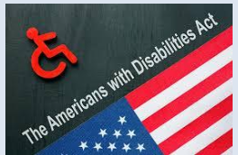
- The Americans with Disabilities Act (ADA) of 1990 was a game-changer in treating disability as a societal issue, not just a personal challenge. It mandated equal rights and accessibility in public spaces, jobs, education, and transport. - India took cues from this progressive approach. The Rights of Persons with Disabilities (RPwD) Act, 2016 reflects similar principles, emphasizing dignity, inclusion, and non-discrimination. - Key Takeaway: - Strong legal frameworks can shift societal mindsets and infrastructure toward true inclusion - Global examples like the ADA show how legislation can lead to awareness, accountability, and accessibility - India must keep strengthening implementation to ensure the law translates into lived reality for all differently-abled citizens - 1.9.2. Government Schemes and Policies for Their Protection - Constitutional Safeguards and Institutional Frameworks - Preamble: - Secures justice, liberty, and equality for all citizens, including PwDs. - Article 14: - Right to Equality, extends to PwDs. - Article 15: - Prohibits discrimination on grounds of disability. - Article 41 and Article 46: - Article 41 mandates the provision of right to work, education, and assistance for PwDs. Article 46 directs the State to promote the educational and economic interests of weaker sections, including PwDs. - Department of Empowerment of Persons with Disabilities (DEPwD): - Formed in 2012, focuses on policies and support for PwDs. - Legal Frameworks - Rights of Persons with Disabilities Act, 2016 (RPwD Act): - Expands definition of disability, provides reservations and ensures accessibility. - Mental Healthcare Act, 2017: - Provides rights and mental healthcare services for persons with mental illness. - Marrakesh Treaty: - Facilitates the production and international exchange of accessible books for the visually impaired. - Welfare Programs and Initiatives - National Policy for Persons with Disabilities, 2006: - Aims to create an inclusive environment for PwDs by ensuring equal opportunities. - Accessible India Campaign (Sugamya Bharat Abhiyan): - Aims to build a barrier-free environment in public spaces, transport, and ICT. - Assistance to Disabled Persons for Purchase of Aids and Appliances (ADIP): - Provides financial assistance for aids like wheelchairs and hearing aids. - Deendayal Disabled Rehabilitation Scheme: - Promotes social justice and empowerment by creating an enabling environment. - Rajiv Gandhi Fellowship Scheme/National Fellowship for Students with Disabilities (RGMF) and SMILE-75 Initiative: - RGMF provides scholarships for PwDs pursuing higher education like M.Phil. and Ph.D. SMILE-75 focuses on rehabilitating persons engaged in begging, providing medical aid, counseling, education, and skill development. - Global Measures India Supports - UN Convention on the Rights of Persons with Disabilities (UNCRPD): - India ratified the UNCRPD in 2007, aligning its national legislation on rights of disabled persons with these international principles. - Biwako Millennium Framework: - A framework for ensuring a barrier-free and inclusive society for PwDs in Asia. - Incheon Strategy: - An initiative to realize the rights of PwDs across Asia and the Pacific. - International Day of Persons with Disabilities: - Promotes awareness and understanding of disability issues globally. - 1.10. Transgender Persons in India - "I don't want to be tolerated; I want to be celebrated." - Laxmi Narayan Tripathi - In India, transgender is an umbrella term which is defined under the Transgender Persons (Protection of Rights) Act, 2019 as a "transgender person" refers to an individual whose gender does not align with the gender assigned at birth. - This includes trans-men and trans-women, whether or not they have undergone sex reassignment surgery, hormone therapy, or other treatments. - It also includes people with intersex variations, gender-queer individuals, and those with socio-cultural identities such as kinner, hijra, aravani, and jogta. - India’s transgender population, as per the 2011 Census, is approximately 4.9 lakh (490,000). -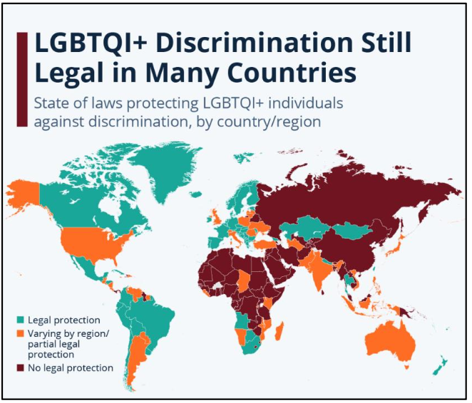
- 1.10.1. Key Challenges Faced by Transgender Persons in India - Discrimination and Social Exclusion - Social Rejection: - Transgender people encounter prejudice in employment, housing, healthcare, and education. 99% of transgender individuals have faced repeated instances of social rejection, according to a study by the National Human Rights Commission (NHRC). - Stigma and Mental Health: - Social stigma, homophobia, and transphobia frequently lead to marginalization, contributing to mental health issues. - Under-Representation: - Given the social stigma and injustice they face, their participation as an electorate has remained abysmal. They have remained underrepresented in decision-making bodies like assembly, Parliament and urban local bodies. Till 2019, only about eight percent of transgender population have registered as ‘Other’ voters and only one percent have exercised their voting right. During 2019 polls, ‘Others’ voter count increased by 73 percent, however only 14.6 percent of registered third genders voted. - Violence and Abuse - High Prevalence of Violence: - High prevalence of violence, including rape, sexual abuse, harassment, and exploitation. - Family Rejection: - Transgender individuals often face family rejection, leading to homelessness. - Educational Barriers - Inadequate Education System: - The education system is unequipped to handle transgender students, leading to high dropout rates. Almost 60% of transgender persons never attended school due to harassment from both peers and teachers. - Employment Disparities - Widespread Unemployment: - Transgender individuals experience widespread unemployment despite qualifications, with 89% facing employment challenges. - Forced into Marginal Professions: - Many are pushed into professions such as prostitution or begging for survival. - Health Challenges - Healthcare Discrimination: - Transgenders face discrimination in healthcare, making it difficult to access essential medical care. - HIV/AIDS Susceptibility: - They are more susceptible to HIV/AIDS, with a prevalence rate of 3.1% among transgenders in India (2017). - Mental Health Issues: - Mental health issues such as depression, anxiety, and suicidal tendencies are prevalent. - Accessibility Barriers - Lack of Inclusive Infrastructure: - Lack of gender-neutral or separate transgender toilets and barriers to public transport and healthcare facilities prevent full societal participation. - Legal and Policy Gaps - Inadequate Enforcement: - Enforcement of the Transgender Persons (Protection of Rights) Act, 2019 has not been adequate. - Legal Identification Concerns: - Transgender Persons often face challenges with obtaining consistent identification documents, leading to Legal Identification concerns. -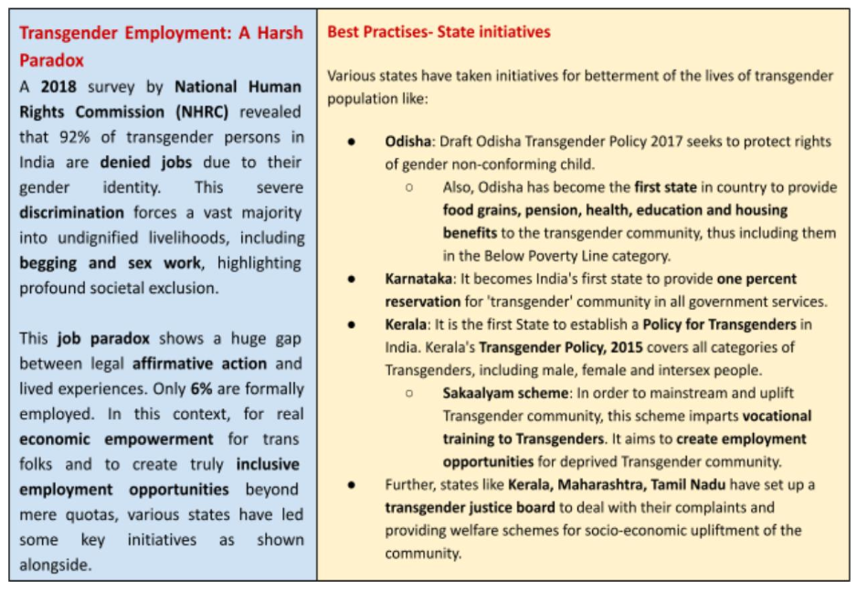
- Side note - Learning through Example- Lessons for Transgender Inclusion -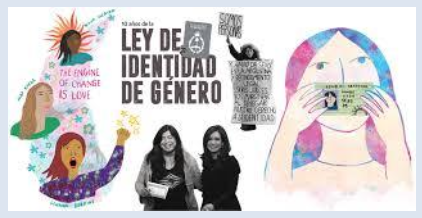
- In 2012, Argentina became a global pioneer with its Gender Identity Law, allowing individuals to legally change their gender based on self-identification—without medical or psychological requirements. This marked a major victory for transgender rights and dignity. - But the story didn’t end there. Despite the progressive law, trans persons in Argentina continue to struggle for formal employment, revealing a gap between legal recognition and economic inclusion. - Key Takeaway: - Legal reforms are vital, but economic and social integration must follow - India’s similar challenge is stark—over 92% of transgender people remain in informal work - The next step in empowerment must include affirmative hiring, education access, and skill development, so rights on paper translate into real opportunity and dignity - 1.10.2. Government Schemes and Policies for Protection and Welfare - Constitutional Safeguards - Preamble: - Ensures justice, liberty, and equality for all citizens, including transgender individuals. - Article 14: - Guarantees equality before the law for all citizens. - Article 15 & 16: - Prohibits discrimination based on sex, caste, creed, or religion. - Article 21: - Right to life and personal liberty for all citizens, including transgender persons. - Article 23: - Prohibits forced labor and human trafficking, ensuring personal dignity. - Legal Frameworks and Judicial Interventions - NALSA v. Union of India Judgment (2014): - Recognized the third gender and affirmed constitutional rights of transgender persons. - Navtej Singh Johar v. Union of India (2018): - Decriminalized same-sex relationships, striking down part of Section 377 of the IPC. - Transgender Persons (Protection of Rights) Act, 2019: - Prohibits discrimination in education, employment, healthcare, and access to public goods. Recognizes self-perceived gender identity, allowing transgender persons to self-identify. Establishes the National Council for Transgender Persons (NCTP) to address grievances. - Institutional Support - National Council for Transgender Persons (NCT): - Constituted by MoSJE under Transgender Persons (Protection of Rights) Act, 2019. It consists of Chairperson (Union Minister of MoSJE- ex-officio), Vice-Chairperson (Union Minister of State for SJE- ex-officio). -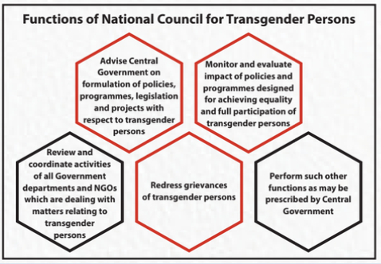
- National Portal for Transgender Persons: - Launched in consonance with Transgender Persons (Protection of Rights) Rules, 2020, it would help transgender community in digitally applying for a certificate and identity card from anywhere in the country. - Welfare Programs and Initiatives - Department of Empowerment of Persons with Disabilities (Divyangjan): - Coordinates policy formulation and support for PwDs and transgender persons. - Garima Greh: - Shelter homes provide food, clothing, recreation, and skill development for transgender persons. - SMILE Scheme: - Comprehensive rehabilitation for transgender persons through skill training, housing, and healthcare. - Ayushman Bharat TG Plus and PM-DAKSH: - Ayushman Bharat TG Plus provides health insurance coverage of ₹5 lakh annually for transgender persons, including coverage for gender-affirmation surgeries. PM-DAKSH imparts skill development training to Transgender beneficiaries of SMILE Scheme through PM-DAKSH- skill development scheme of MoSJE. - Side note - Yogyakarta Principles- Affirming Universal Rights for LGBTQ+ Persons -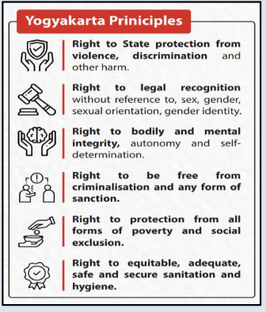
- The Yogyakarta Principles (YP) are a set of 29 principles aimed at affirming the human rights of individuals with diverse sexual orientations and gender identities. - These principles were adopted in Yogyakarta, Indonesia, in 2006, with signatories from various countries, including India, the USA, and the UK. In 2017, the YP Plus 10 was adopted in Geneva, Switzerland, to further strengthen these rights. - These principles are binding international standards that apply to all individuals, ensuring equality and non-discrimination based on sexual orientation, gender identity, gender expression, and sex characteristics. - They highlight the universal rights of LGBTQ+ persons, demanding that all states comply with these standards to promote equality, dignity, and protection from violence and discrimination. - 1.11. Assessment of Government Schemes & Policies for Vulnerable Sections - The Government of India (GoI) aims to enhance the welfare and upliftment of various vulnerable groups, such as children, women, the elderly, persons with disabilities, SCs, STs, minorities, migrants, and those living in poverty. However, despite these efforts, the schemes and policies have not yielded the expected outcomes due to several limitations and challenges, which have undermined the effectiveness of these initiatives. - Effectiveness- Tangible Strides Towards Inclusivity - Poverty Reduction - Welfare Program Effectiveness: - Welfare programs have been instrumental in lifting millions out of poverty by providing direct support and opportunities. - NITI Aayog MPI Report: - Example: NITI Aayog's Multidimensional Poverty Index (MPI) 2024 report indicated that 24.82 crore people moved out of multidimensional poverty in the last 9 years, because of the impact of various welfare programs like Pradhan Mantri Jan Dhan Yojana (PMJDY) and Pradhan Mantri Awas Yojana (PMAY). - Financial Inclusion & DBT Efficiency - Universal Banking Access: - Universal access to banking has empowered vulnerable groups and revolutionized subsidy delivery, reducing leakages. - PMJDY Achievements: - Example: PMJDY has opened over 55.69 crore bank accounts as of June 25, 2025 (PIB, 2025), a significant portion belonging to women and rural poor, enabling efficient Direct Benefit Transfers (DBTs) and ensuring money reaches beneficiaries. - Enhanced Social Security & Health Protection - Safety Nets for Vulnerability: - Critical safety nets for food security, health, and basic income support have reduced vulnerability to shocks. - NFSA Coverage: - Example: The National Food Security Act (NFSA) ensures highly subsidized food grains for over 80 crore beneficiaries (PIB, 2025). - Ayushman Bharat - PMJAY Impact: - Ayushman Bharat - PMJAY provides health coverage up to ₹5 lakh/family/year, with over 41.34 crore Ayushman Cards issued as of July 3, 2025 (PIB, 2025), drastically reducing out-of-pocket health expenditures for the poor. - Empowerment of Specific Groups - Targeted Interventions: - Targeted interventions have demonstrably improved socio-economic indicators and legal protections for historically marginalized communities. - BBBP Success: - Example: Beti Bachao Beti Padhao (BBBP) contributed to the improvement of the Sex Ratio at Birth (SRB) from 918 (2014-15) to 930 (2023-24) (PIB, MWCD 2024). - FRA Recognition: - The Forest Rights Act (FRA) has recognized over 20 lakh individual and 1.15 lakh community forest rights titles (Ministry of Tribal Affairs, 2024), empowering tribal communities. - Limitations- Persistent Bottlenecks Hindering Full Potential - Implementation Gaps & Bureaucratic Hurdles - Last-Mile Delivery Issues: - Last-mile delivery remains problematic, often due to complex procedures, corruption, and insufficient ground-level capacity. Example: Historically, delays in scholarship disbursement (e.g., Post-Matric Scholarships for SCs) have been a persistent issue, leading to student dropouts. - Awareness Deficit & Accessibility Barriers - Lack of Awareness: - Many eligible beneficiaries, especially in remote or marginalized communities, remain unaware of schemes or face difficulties accessing services. Example: A Supreme Court ruling in April 2025 highlighted that digital KYC processes (e.g., facial recognition) exclude visually impaired or acid attack survivors. - Elderly Scheme Awareness: - A July 2024 HelpAge India report found that one in three elders had no income in the past year, and only 29% accessed social security schemes, indicating widespread unawareness of existing benefits. - Insufficient Funding & Meagre Benefits - Inadequate Financial Support: - While budgets are large, the actual quantum of financial support or resource allocation inadequate for dignified living or comprehensive development. Example: The 2025 Union Budget maintained the National Social Assistance Programme (NSAP) allocation stagnant at ₹9,652 crore, meaning the central contribution to old-age pensions (₹200-500) has not increased since 2007, eroding real value due to inflation. - Lack of Inter-sectoral Convergence - Fragmented Efforts: - Schemes often operate in silos, leading to fragmentation of effort, reduced efficiency, and failure to provide holistic support. Example: Despite the comprehensive mandate of Integrated Child Development Services (ICDS), actual convergence with health and education departments at the ground level remains poor in many Anganwadi Centres, affecting holistic child development. - Data Reliability & Monitoring Weaknesses - Weak Monitoring Systems: - While data collection is improving, robust, real-time, and outcome-based monitoring is often lacking, hindering effective evaluation and course correction. Example: While the e-Shram portal has registered 28.97 crore unorganised workers (IJLSI, Jan 2025), ensuring seamless linkage of all registered workers to relevant social security benefits and tracking their actual access remains a significant challenge. - Suggestions for Enhancement- Towards a More Equitable Future - Strengthen Last-Mile Delivery & Digital Governance - Technology and Accountability: - Leverage technology to simplify processes and ensure accountability, while simultaneously strengthening human capital at the grassroots. Example: Implement real-time, blockchain-enabled DBT systems to ensure transparent and tamper-proof delivery, as explored in some pilot projects. "Digital India" initiatives, if fully leveraged with adequate digital literacy programs, can significantly bridge the last-mile gap. - Enhance Awareness & Community Participation - Community Ownership: - Move beyond top-down communication to foster genuine community ownership and awareness. Case Study: Replicate Kerala's "Janamaithri Suraksha Project" where community beat policing fosters trust and local participation in crime prevention and dissemination of welfare information. Community resource persons from National Rural Livelihood Mission (NRLM) Self-Help Groups (SHGs) could also be trained as welfare scheme facilitators, as seen in parts of Andhra Pradesh. - Rationalize Benefits & Ensure Adequacy - Adequate Support: - Periodically review and adjust benefit amounts to align with living costs and ensure a dignified existence, while expanding eligibility where genuinely needed. - Best Practice: - Study models like Brazil's Bolsa Familia, which links cash transfers to conditions like school attendance and health check-ups, ensuring multi-dimensional impact and adequate support, rather than just minimal aid. - Foster Inter-Ministerial Convergence - Integrated Planning: - Break down silos through integrated planning frameworks and shared platforms to ensure holistic development. Example: Implement "NITI Aayog-style" multi-sectoral working groups at state and district levels, with clear mandates for convergence, inspired by the success of coordinated efforts during the initial phases of the Swachh Bharat Mission. - Robust Outcome-Based Monitoring & Evaluation - Impact-Focused Monitoring: - Shift focus from mere expenditure to actual impact on beneficiaries' lives, using data for continuous learning and adaptation. - Best Practice: - Adopt models similar to the Aspirational Districts Programme, which uses real-time data dashboards and competitive federalism to track key performance indicators (KPIs) across various development sectors, encouraging districts to learn from each other. - Address Structural Inequities & Discrimination - Legal Enforcement and Empowerment: - Strengthen legal enforcement against discrimination and couple welfare with direct economic empowerment initiatives. Case Study: Learn from Colombia's "Resource Curse" management, which, despite complexities, aimed for royalty-sharing with local communities in mining zones to address resource exploitation. Similarly, ensuring full implementation of the PESA Act and FRA in tribal areas, empowering Gram Sabhas, can prevent alienation. - Counter Exclusion in Urban Economies: - Implement strong anti-discrimination laws in hiring and housing in urban areas, similar to those in developed economies. Promote inclusive incubation centers and mentorship programs specifically for entrepreneurs from vulnerable groups in urban settings, beyond just providing initial capital. - UNIT 2- ISSUES RELATING TO DEVELOPMENT AND MANAGEMENT OF SOCIAL SECTOR - 1. Part A- Health - Definition by WHO: - Health is a state of complete physical, mental, and social well-being and not merely the absence of disease or infirmity. - Determinants of Good Health: - Access to various types of health services - An individual’s lifestyle choices - Personal, family, and social relationships - Healthcare in the Constitution of India - Fundamental Rights (Part III) - Article 21- Right to life, including health, as per Supreme Court. - Directive Principles of State Policy -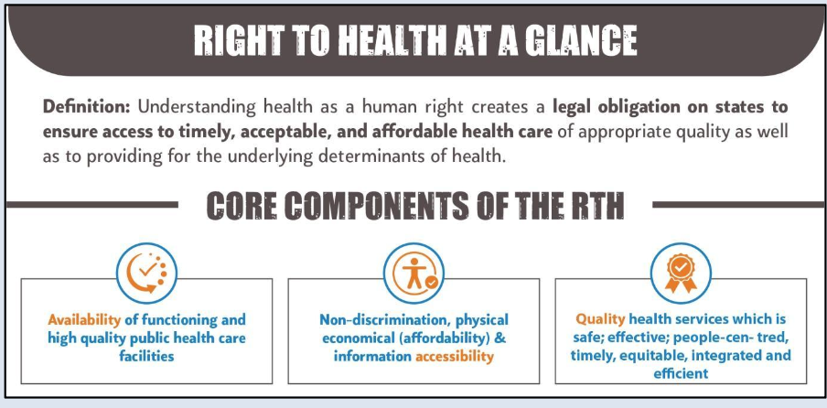
- Article 39(e)- Health of workers. - Article 41- Assistance for sick and disabled. - Article 42- Maternity benefits. - Article 47- Nutrition, living standards, public health. - Article 48A- Pollution-free environment for health. - Right to Health- The Supreme Court has often affirmed the Right to Health under Article 21 as a fundamental right. Important Cases: - CESC Ltd. vs. Subash Chandra Bose - Paschim Banga Khet Mazdoor Samity - Murali S. Deora - N. D. Jayal - 1.1. Healthcare Infrastructure in India -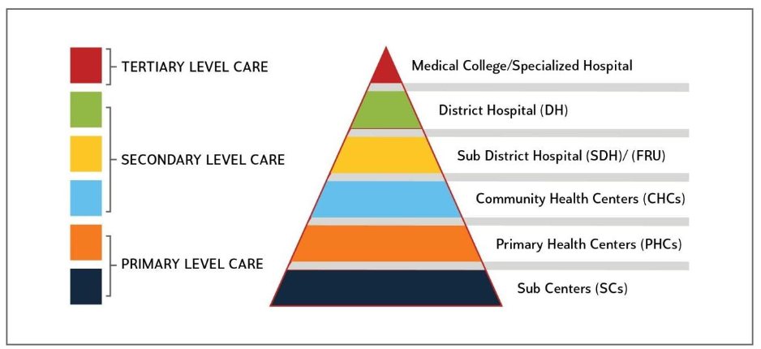
- 1.1.1. India’s Health Profile- Key Indicators - The National Family Health Survey (NFHS-5, 2019-21) and Sample Registration System (SRS) data reveal key health metrics for India:| Indicator | Value | Source |
|---|---|---|
| Total Fertility Rate (TFR) | 2.0 (below the replacement level) | NFHS-5 (2019-21) |
| Contraceptive Prevalence Rate | 67% | NFHS-5 (2019-21) |
| Institutional Deliveries | Increased to 88.6%, reaching 91.1% in 2021 | NFHS-5 (2019-21) |
| Full Immunization | Improved to 76.4% | NFHS-5 (2019-21) |
| Anaemia Prevalence | High among women (57%) and children (67.1%) | NFHS-5 (2019-21) |
| Child Malnutrition | Stunting at 35.5%, underweight at 32.1%, and wasting at 19.3% | NFHS-5 (2019-21) |
| Dual-Disease Burden | India faces both communicable diseases (e.g., tuberculosis) and a rising prevalence of non-communicable diseases (e.g., diabetes, hypertension) | - |
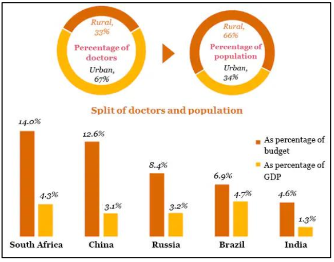
- Low Public Expenditure - Insufficient Healthcare Spending: - India spends 1.8% of GDP (2021-22) on healthcare, below WHO's 5% recommendation. - High Out-of-Pocket Expenditure - Reliance on Private Facilities: - While the OOPE for India has declined from 64% in 2013 to 39% in 2021, still around 70% rural and 80% urban populations use private facilities, leading to high personal expenses (World Bank). - Rising Costs of Treatment - Affordability Issues: - Increased public spending, but affordability remains a concern; cancer treatment can push families into debt (Public Health Foundation of India, 2022). - Limited Health Insurance Coverage - Coverage Gaps: - Health insurance sector growing at 12.8% CAGR (2024–2028), yet coverage gaps persist. Over 80% of the population lacks health insurance, increasing financial vulnerability (FICCI report 2022). - Inadequate Infrastructure - Low Hospital Bed Availability: - India has 1.3 hospital beds per 1000 population, compared to China's 2.3 and the US's 3.2 (2018). - Human Resource Crunch - Shortage of Healthcare Professionals: - Shortage of over 8 lakh doctors and 24 lakh nurses despite meeting WHO's doctor ratio (NITI Aayog, 2021). - 1.3. Addressing Challenges to Issues in Healthcare - For Strengthening Primary Health Care in India - Srinath Reddy Committee Report Recommendations - Increased Public Spending - Prioritize Primary Care: - Allocate at least 70% of healthcare budget to primary care, aligning with WHO's 50% recommendation. - Expanding Workforce and Infrastructure - Strengthen Rural Healthcare: - Increase healthcare professionals, especially in rural areas; establish an "all-India service of public health workers" like Tamil Nadu. - New Medical and Nursing Schools - Address Workforce Gaps: - Establish more schools to address workforce gaps. - Successful Models - Cuba's Decentralized Care: - Community-based polyclinics and neighborhood family doctor-and-nurse offices serve populations of 30,000-60,000, fostering community relationships. - Thailand's Health System: - By heavily investing in primary care through its Health Insurance System (HIS), Thailand achieved Universal Health Coverage (UHC) with low GDP spending (around 4.5%). - For Strengthening Secondary Health Care in India - District Health Plan - Comprehensive Healthcare Strategy: - Develop a comprehensive plan addressing bed availability (NHP 2017 targets), surgical capacity (4520 surgeries per 100,000 population), and emergency preparedness (serving 15% of the population). - Urban Peripheral Hospitals - Enhance Secondary Care: - Establish 100-150 bedded government hospitals for every 3 lakh population in urban areas to enhance secondary care. - Human Resource Development - Public–Private Partnership (PPP) Model for Training: - Implement NITI Aayog's PPP model by linking private medical colleges with district hospitals to increase medical seats, specialist availability, and provide practical training for students in real-world settings. - Case Study - Kenya's successful PPP model for staffing public hospitals with qualified professionals demonstrates the potential of this strategy. - Colombia's successful public-private partnerships for building and managing hospitals showcases the potential of attracting private investment for expanding healthcare access. - Common Strategies for Strengthening Overall Health Care in India - Leveraging Technology - Description: - Telemedicine: - Offers remote consultations and specialist support in rural areas. - Health Information Exchange (HIE): - Enables sharing of patient data between PHCs and secondary facilities to improve care coordination. - Mobile Health (mHealth): - Uses mobile technology for appointment reminders and medication adherence. - Example: - Rwanda's telemedicine connects rural centers with urban specialists. HIE systems in the US reduce medical errors and test duplications. Singapore's mHealth initiatives enhance patient care. - Decentralized Institutions - Description: - Involve SHGs, PRIs, ANMs, and ASHAs to create teams for basic care, health awareness, and referrals in rural areas. - Example: - Ethiopia's Health Extension Program improves access to basic healthcare with trained health workers in rural communities. - Increasing Insurance Coverage - Description: - Expand health insurance to improve access to secondary care and reduce financial hardships. - Example: - Ghana's National Health Insurance Scheme (NHIS) enhances healthcare access through expanded insurance coverage. - 1.4. Burden of Disease & Key Health Issues in India - India faces a complex health landscape shaped by multiple, overlapping challenges, including rising non-communicable diseases, persistent communicable diseases, and widespread mental health concerns. - 1.4.1. Communicable Diseases - 1. Tuberculosis (TB) -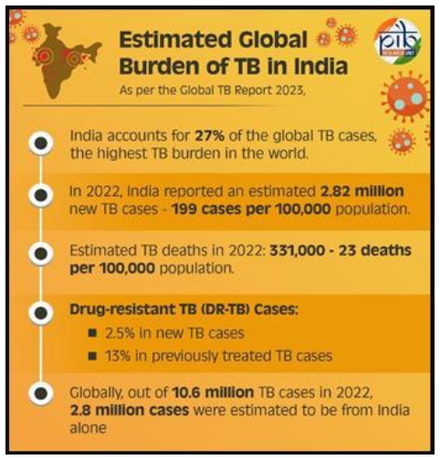
- India’s TB Burden: - India accounts for 27% of the global TB burden. In 2023, 25.1 lakh TB cases were reported in India. - Government Initiatives: - The National TB Elimination Programme (NTEP) aims for TB elimination by 2025 (ahead of the global target of 2030). - The Nikshay Poshan Yojana provides nutritional support to TB patients. - Challenges: - Long treatment regimens, drug resistance, and poor access to advanced diagnostics in rural areas remain significant hurdles. Poverty and poor living conditions exacerbate transmission of TB. - 2. AIDS/HIV - National Goals- The 95-95-95 goal by 2025 aims for: - 95% of HIV-positive people are diagnosed. - 95% of diagnosed individuals on ART (Anti Retroviral Therapy). - 95% of ART patients achieve viral suppression. - Important Initiatives for Eradication of AIDS: - Since 2004, free ART has been provided to patients suffering from AIDS. - The fifth phase of the National AIDS Control Programme (NACP) targets 80% reduction in new HIV infections and AIDS-related deaths. - India's Progress in the Fight Against AIDS: - On World AIDS Day 2024, the theme "Take the Rights Path" was emphasized, focusing on equal rights and healthcare access for those affected by HIV/AIDS. - India's efforts have significantly reduced the HIV epidemic, with new infections in 2023 almost 44% lower than in 2010, surpassing the global reduction rate. AIDS-related deaths declined by 79%. - India aims to eradicate epidemic diseases, including AIDS, by 2030. - Current Status as per MoHFW: - 81% of cases identified, 88% receiving antiretroviral therapy (ART), and 97% of identified people having their viral load suppressed. - India has become a net supplier of affordable and effective HIV medicines globally, providing them for free. - A state within India also aims to end AIDS as a public health threat by 2028. - Challenges: - Delays in ART initiation, non-compliance, and the need for integration with other health programs (e.g., hepatitis, NCDs). - 1.4.2. Non-Communicable Diseases (NCDs) - India faces a dual-disease burden with a rising prevalence of lifestyle diseases such as cardiovascular diseases, diabetes, and cancer, alongside persistent communicable diseases. - Dominant Causes of Mortality: - NCDs account for over 60% of all deaths. By 2030, they are projected to cause 75% of deaths. - Economic Impact: - NCDs are expected to cost India $6 trillion by 2030. - Key Risk Factors: - Unhealthy diets, sedentary lifestyles, and aging are driving the increase in obesity and NCD prevalence. - Policy Strategies to control NCDs: - India Hypertension Control Initiative (IHCI) and WHO’s SHAKE the Salt Habit program aim to reduce salt consumption and manage diabetes and hypertension. - Multi-sectoral efforts are focused on preventing NCDs, promoting active lifestyles, and nutritional literacy. - Fighting Obesity by Reducing Oil Intake: - Recently the Prime Minister during his Mann Ki Baat address, urged citizens to reduce monthly edible oil consumption by 10% to combat rising obesity, especially among families. - Citing support from athletes Neeraj Chopra and Nikhat Zareen, he emphasized how small lifestyle changes can lead to significant health benefits. - Universal Immunisation and U-WIN Portal -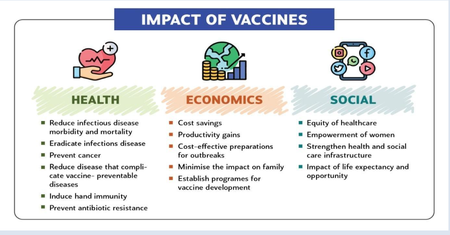
- Universal Immunization is a public health program providing free or subsidized vaccinations to all children, ensuring protection against preventable diseases. - The U-WIN portal is a digital platform under India’s Universal Immunisation Programme, aimed at digitizing vaccination records for pregnant women and children up to 16 years. - It offers self-registration, flexible scheduling, SMS reminders, QR-based e-certificates, and links to Ayushman Bharat Health Accounts (ABHA). - The portal supports multilingual access in 11 languages and enables anytime, anywhere vaccination. - As of November 2024, U-WIN had registered 7.44 crore beneficiaries, conducted 1.26 crore sessions, and tracked over 27 crore vaccine doses. - By early November, 1.7 crore pregnant women and 5.4 crore children were digitally enrolled. - 1.4.3. Mental Healthcare - WHO Definition: - Mental health is a state of mental well-being that enables people to cope with the stresses of life, realize their abilities, learn well, work well, and contribute to their community. It is an integral component of health, underpinning individual and collective decision-making, relationships, and world-shaping capacities. - Mental health is a basic human right crucial to personal, community, and socio-economic development. - India’s Mental Health Crisis: -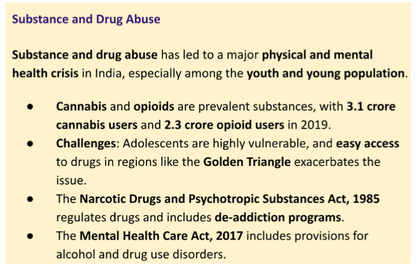
- 1 in 7 people are affected by mental illness, yet 80% lack access to treatment. - The suicide rate remains high, with 1.30 lakh suicides reported in 2019. - Challenges include stigma, lack of professionals (0.75 psychologists per lakh population), and poor utilization of mental health budgets. -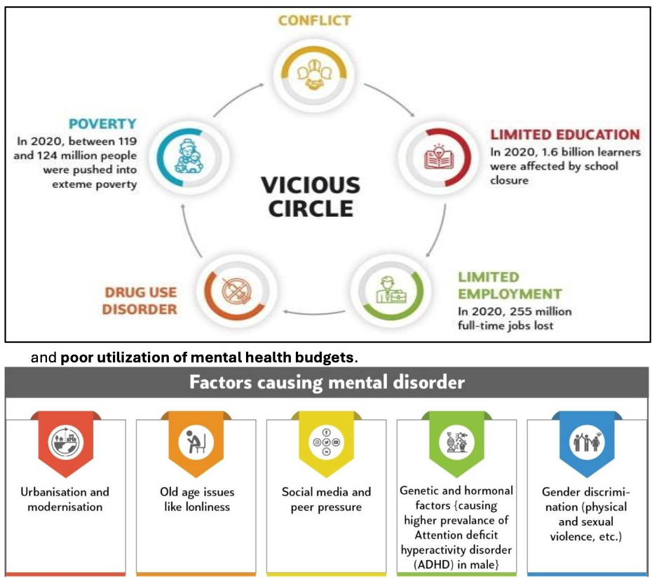
- Strategies for Handling Mental Health Crisis: - Increase public spending on health to 2.5% of GDP by 2025, and allocate proportionately to Mental Healthcare. - Strengthen primary healthcare and develop district health plans for Mental Healthcare. - Address socioeconomic determinants of mental health such as poverty and discrimination. - Key Government Initiatives: - KIRAN Helpline: - Provides early screening, first-aid, psychological support, and stress management. - Tele MANAS: - Offers free tele-mental health services across the country, 24/7. - MANODARPAN: - Provides psychosocial support to students. - National Mental Health Programme and 'REDS' path for suicide prevention. - 1.4.3.1. Mental Healthcare Act, 2017 -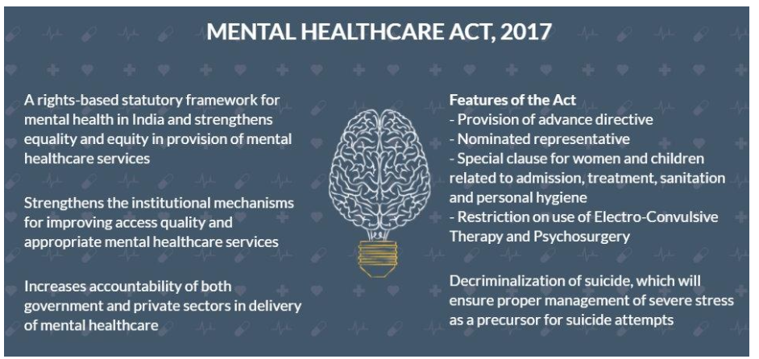
- Provides affordable, accessible mental healthcare services for individuals with mental health issues. - Decriminalization of suicide attempts for mentally ill individuals. - Treatment Gap: - 80% treatment gap in mental health, compounded by inadequate funding and a shortage of professionals. - Mental Health Abuse- Chaining Continues - A grim reality persists in rural India (UP/Bihar)- people with mental illnesses are chained, often in facilities disguised as "de-addiction centers." This represents a severe human rights violation, fueled by pervasive stigma and a critical absence of formal mental healthcare facilities. - This highlights an urgent systemic failure. Beyond mere confinement, comprehensive reform, including stringent regulation and expanded access to humane treatment, is essential to eradicate such abusive practices and ensure dignified care for all with mental illness. - MindTech Vital Role in Bridging the Gap: - The MindTech Gap reveals India's dire mental health crisis- with only 0.75 psychiatrists per 100,000 people, access to care is severely limited. - AI therapists like Wysa are stepping in, having handled over 1 billion chats, offering crucial mental health support where human resources are scarce. - Challenges In Implementing Mental Healthcare Act: - Stigma - Social Barriers: - Mental health continues to be stigmatized, hindering access to care. - Shortage of Professionals - Insufficient Workforce: - India has 0.3 psychiatrists per 100,000 people, far below the required ratio. - Accessibility - Urban-Centric Services: - Limited services in rural areas, with a focus on urban centers. - Disability-Adjusted Life Year (DALY) in India- A Simple Overview - Definition: - A Disability-Adjusted Life Year (DALY) is a measure that combines two factors: - Years of Life Lost (YLL)- Due to premature death. - Years Lived with Disability (YLD)- Due to living with illness or disability. - One DALY equals one lost year of "healthy" life. It helps to understand the total burden of disease on a population. - 14.1 Million DALYs were lost in 2020 due to COVID-19, with urban areas and men being more affected. - Key Insights on DALY in India: - Poverty Reduction - Welfare programs have been instrumental in lifting millions out of poverty by providing direct support and opportunities. - Example: - NITI Aayog's Multidimensional Poverty Index (MPI) 2024 report indicated that 24.82 crore people moved out of multidimensional poverty in the last 9 years, because of the impact of various welfare programs like Pradhan Mantri Jan Dhan Yojana (PMJDY) and Pradhan Mantri Awas Yojana (PMAY). - Financial Inclusion & DBT Efficiency - Universal access to banking has empowered vulnerable groups and revolutionized subsidy delivery, reducing leakages. - Example: - PMJDY has opened over 55.69 crore bank accounts as of June 25, 2025 (PIB, 2025), a significant portion belonging to women and rural poor, enabling efficient Direct Benefit Transfers (DBTs) and ensuring money reaches beneficiaries. - Enhanced Social Security & Health Protection - Critical safety nets for food security, health, and basic income support have reduced vulnerability to shocks. - Example: - The National Food Security Act (NFSA) ensures highly subsidized food grains for over 80 crore beneficiaries (PIB, 2025). Ayushman Bharat - PMJAY provides health coverage up to ₹5 lakh/family/year, with over 41.34 crore Ayushman Cards issued as of July 3, 2025 (PIB, 2025), drastically reducing out-of-pocket health expenditures for the poor. - Empowerment of Specific Groups - Targeted interventions have demonstrably improved socio-economic indicators and legal protections for historically marginalized communities. - Example: - Beti Bachao Beti Padhao (BBBP) contributed to the improvement of the Sex Ratio at Birth (SRB) from 918 (2014-15) to 930 (2023-24) (PIB, MWCD 2024). The Forest Rights Act (FRA) has recognized over 20 lakh individual and 1.15 lakh community forest rights titles (Ministry of Tribal Affairs, 2024), empowering tribal communities. - 1.5. Key Government Schemes & Missions on Healthcare - 1.5.1. National Health Policy (2017) - The National Health Policy 2017 emphasizes universal health coverage (UHC), prioritizing primary healthcare, prevention, and health promotion. -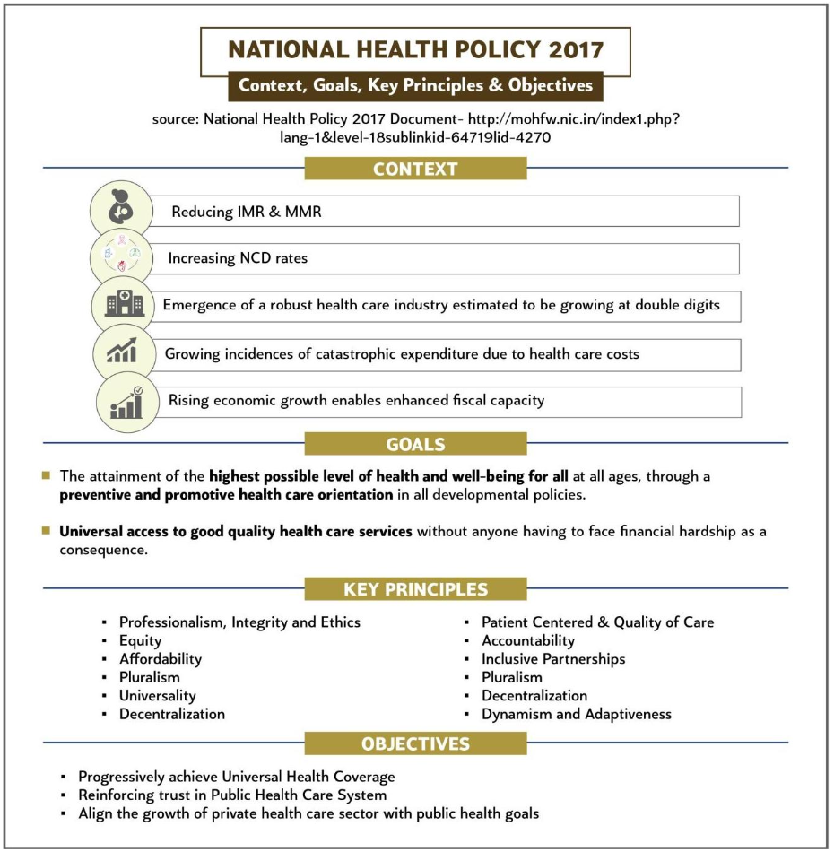
- 1.5.2. Ayushman Bharat - Ayushman Bharat is a flagship health initiative launched by the Government of India in 2018, with the objective of achieving universal health coverage (UHC) and providing comprehensive healthcare services to all citizens. It aims to reduce the financial burden of healthcare and ensure affordable, accessible services for the population, with a strong focus on wellness. - Key Components of Ayushman Bharat Scheme: - Health and Wellness Centres (HWCs) - Also known as Ayushman Arogya Mandirs (AAMs), these centers are designed to bring healthcare closer to people’s homes. The goal is to establish 1.5 lakh centers, offering primary healthcare services. - Pradhan Mantri Jan Arogya Yojana (PMJAY) - A comprehensive health insurance scheme targeting over 10 crore poor and vulnerable families, providing ₹5 lakh per family for secondary and tertiary care hospitalization. - Key features include: - Coverage of pre-existing diseases from the day of enrollment. - Cashless and paperless services at empanelled hospitals across India. - Portability across the country, allowing beneficiaries to access services anywhere. -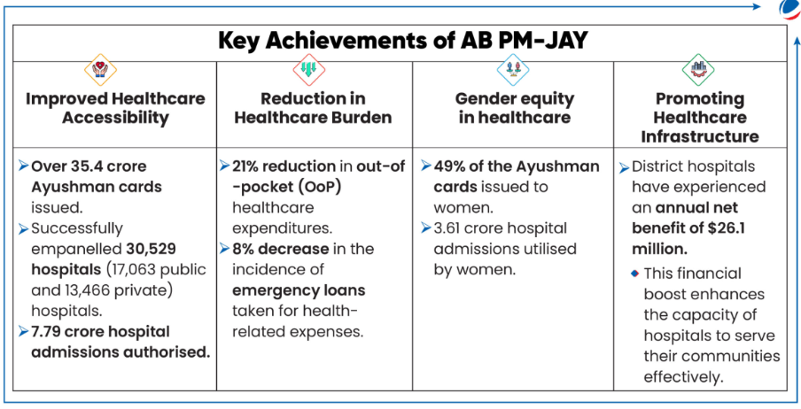
- Recent Updates to PM-JAY Scheme: - Scheme benefits extended to 37 lakh ASHA workers and Anganwadi workers. - Elderly individuals (aged 70+), regardless of income or pre-existing conditions, benefitting approximately 6 crore elderly people, especially women (58% of elderly). - PMJAY merged the earlier Rashtriya Swasthya Bima Yojana (RSBY), which had been covering vulnerable sections since 2008. - Challenges: - Inaccurate beneficiary databases, with over 50% grievances linked to registration issues. - Its narrow coverage excludes outpatient and elderly care, while infrastructure gaps in rural areas limit access. - Variable care quality and budget shortfalls further hinder its effectiveness. - Recommendations for Improvement: - Ensure physical verification of hospitals, timely payments, and strong anti-fraud measures. - Establish district grievance units and design policies for long-term elderly care. - Health Insurance in India- Progress and Persistent Gaps - By 2023, 40% of India’s population was insured, with projections estimating coverage to reach 50% by 2025. - Government schemes like Ayushman Bharat–PMJAY, which now covers over 55 crore people, have driven this expansion. - Yet, out-of-pocket expenditure (OOPE) continues to be among the highest globally, undermining the effectiveness of health insurance and exposing millions to medical impoverishment. - Key Features of India’s Health Insurance Ecosystem: - Ayushman Bharat–PMJAY - Covers the poorest 40% of the population, recently extended to all citizens aged 70+. - State-level schemes - Telangana (Rajiv Aarogyasri), Tamil Nadu (CMCHIS), and others complement central coverage. - Private sector participation - Offers tax benefits (under Section 80D) and growing urban adoption. - Digital push - Ayushman Bharat Digital Mission aims to unify health records and improve service delivery. - Challenges- Why Health Insurance Hasn't Reduced OOPE Enough - OOPE still high - Despite growing coverage, 47.1% of total health expenditure in 2021–22 was OOPE (down from 62.6% in 2014–15). - Exclusions - Many plans don’t cover outpatient care, diagnostics, or medicines—main contributors to OOPE. - Affordability barriers - Premiums, co-payments, and lack of cashless services affect low-income households. - Awareness and digital literacy - Rural and underprivileged groups often remain unaware or unable to enrol. - Claim process inefficiencies - Delays, rejections, and opaque procedures erode public trust. - Way Forward: - Expand coverage scope: - Include outpatient services, medicines, and preventive care under standard policies. - Subsidize premiums for the poor and informal sector workers. - Invest in public health infrastructure to reduce dependence on costly private providers. - Regulate claim processes and ensure transparency and standardization in policy terms. - Boost awareness through mass campaigns and local facilitation centers, especially in rural areas. - Conclusion: - Health insurance in India has made important strides but remains insufficiently protective due to design flaws, gaps in access, and persistent OOPE. To truly achieve Universal Health Coverage, India must reorient its insurance ecosystem toward inclusivity, affordability, and comprehensive care. - 1.5.3. National Medical Commission (NMC) - The National Medical Commission (NMC) replaced the Medical Council of India (MCI) to regulate medical education and healthcare standards. -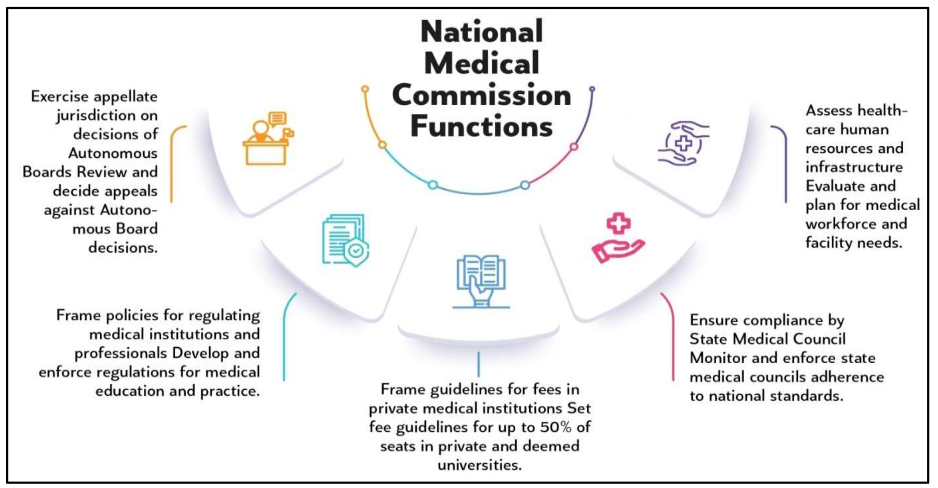
- Challenges: - Lack of diverse stakeholders - Limited representation from public health experts in decision-making. - Limited state involvement - Reducing local participation in health reforms. - Focus on documentation - Rather than quality education. - 1.5.4. Human Resources for Health (HRH) - India faces a critical shortage of healthcare professionals, particularly in rural areas. According to NITI Aayog’s 2021 report, there is a deficit of over 8 lakh doctors and 24 lakh nurses. The imbalance is exacerbated by the concentration of professionals in urban centers, resulting in inadequate healthcare access in rural regions. - Efforts to address these gaps: - Expanding medical and nursing schools. - Public-Private Partnerships (PPP) to strengthen healthcare delivery. - Improved rural postings for medical professionals. - Addressing Human Resource Issues with ASHA and Anganwadi Workers: - ASHA (Accredited Social Health Activists) - Role: - Community health workers serving as the first point of contact for rural populations, focusing on maternal health, immunization, and family planning. - Number: - Over 9 lakh ASHAs across India, including those under the National Urban Health Mission (NUHM). - Challenges: - Inadequate recognition and compensation, heavy workload, insufficient training, and lack of safety and support mechanisms. - Anganwadi Workers - Role: - Central to Early Childhood Care and Education (ECCE), providing nutrition and health services under the ICDS scheme. - Number: - Work in Anganwadi centers under ICDS (no specific figure mentioned). - Challenges: - Shortage of trained workers, poor infrastructure and sanitation, and limited resources for early childhood education and care. - Transforming India’s Healthcare Workforce: - Over the last decade, India has undertaken major reforms to expand and strengthen its healthcare workforce. Key efforts have focused on increasing capacity, improving educational quality, and reducing rural–urban disparities. - Healthcare workforce size has grown to nearly 1 crore, including: - 13.9 lakh doctors, 7.5 lakh AYUSH practitioners. - 39.4 lakh nurses (largest segment), and 17.6 lakh pharmacists. - The doctor-population ratio now meets the WHO norm of 1:1000. - Medical and nursing education expansion: - Medical colleges increased from 387 (2014) to 780 (2024) — a 102% rise. - MBBS seats grew from 51,000 to 1.18 lakh (130% increase). - PG seats expanded from 32,000 to 74,000 (135% increase). - B.Sc. Nursing institutions grew by 45%, with a 53% rise in seats. - M.Sc. Nursing saw a 29% increase in institutions and 39% in seats. - Addressing rural disparities: - New medical colleges are set up in rural areas to improve access and train local health workers. - Innovative initiatives: - Over 1.25 lakh Community Health Officers (CHOs) have deployed at Ayushman Arogya Mandirs since 2018 to deliver primary care, elderly care, and NCD services. - Regulatory reforms introduced: - New acts for medical, nursing, and dental education to improve transparency and standards. - Focus on quality: - Implementation of Competency-Based Medical Education (CBME). - Introduction of District Residency Program for PG students in public hospitals. - Use of digital tools and simulation labs for training. - Conclusion: - India’s decadal healthcare workforce reform has focused on capacity building, quality education, and rural outreach. Continued efforts are needed in specialty training and allied health professional development. - Contemporary Issues- Violence Against Healthcare Workers - Prevalence: - Reports show that 75% of doctors in India face violence. The causes include low patient satisfaction, poor doctor-patient communication, and inadequate security. - Solutions: - The Epidemic Diseases (Amendment) Act, 2020 provides legal protection to healthcare workers during pandemics, with severe penalties for violence. A comprehensive law beyond epidemics is needed to ensure long-term protection for healthcare professionals. - 1.5.5. Pandemic Preparedness and the 'One Health' Approach -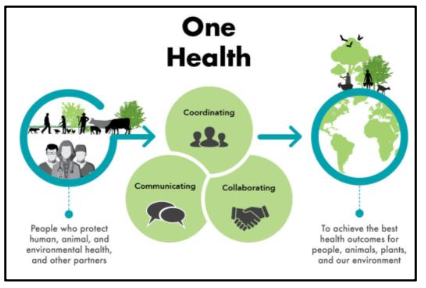
- The COVID-19 pandemic highlighted the weaknesses in global health systems and vaccine inequities. The WHO's Global Pandemic Treaty aims to ensure equitable access to health products in future pandemics. - One Health Approach: - The 'One Health' approach connects human health, animal health, and the environment. - Many diseases, like COVID-19, start in animals and spread to people. - It aims to prevent zoonotic diseases and antibiotic resistance by encouraging collaboration across sectors. - With 'One Health', doctors, veterinarians, and environmental experts work together to identify risks early. - This teamwork improves surveillance, shares information, and stops diseases at their source. Clean water, safe food, and healthy animals help keep people safe. - Side note - KARMI-Bot- A COVID-Era Innovation - Kerala's KARMI-Bot was initially developed to serve COVID-19 patients by delivering food and medicine. Its primary aim was to reduce healthcare workers' exposure and conserve PPE, highlighting robotics' potential in infection control during crises. - WHO Pandemic Treaty- A Global Step for Future Preparedness - The WHO Pandemic Treaty, adopted on 20 May 2025 at the 78th World Health Assembly, is a legally binding agreement to improve global pandemic prevention, preparedness, and response. This treaty is the first global effort to reduce pandemic risks, promoting transparency and cooperation to make the world safer and more equitable. - Key Features: - Global Collaboration - Encourages a whole-of-society approach to strengthen health systems and ensure fair access to vaccines and treatments. - Equity Focus - Aims to address inequities seen during COVID-19, ensuring a fair distribution of resources. - Legal Framework - The treaty will take effect after 60 countries ratify it and an annex on Pathogen Access and Benefit-Sharing (PABS) is adopted. - Multilateral Commitment - Dr. Tedros Adhanom Ghebreyesus called it a victory for public health and global cooperation. - Challenges: - Lack of Enforcement - Critics say the treaty lacks enforcement and funding mechanisms. - Deferred Issues - Some issues, like vaccine inequity, will be addressed later. - Political Concerns - Some countries question the WHO’s authority. - 1.6. The Future of Health in India - India aims to achieve Universal Health Coverage (UHC) for all by 2030, ensuring that every individual has access to affordable, appropriate, and accountable health services of assured quality. In this context, the digital space offers significant opportunities to strengthen service delivery, enhance access, and improve healthcare outcomes across the country. - 1.6.1. Digital Health Ecosystem -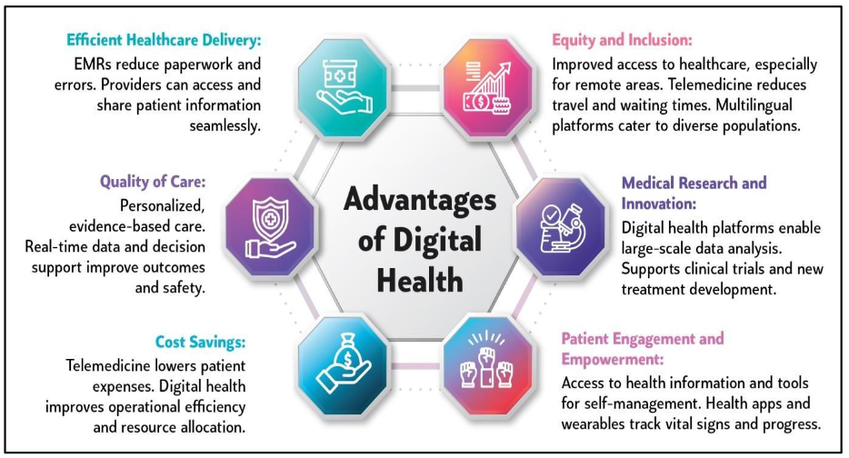
- Digital Health integrates technology with healthcare delivery: - Key Components: - Telemedicine, e-health records, robot-assisted surgeries, e-pharmacies, and e-insurance are reshaping patient care. - The National Digital Health Mission (NDHM) aims to digitize healthcare across India. -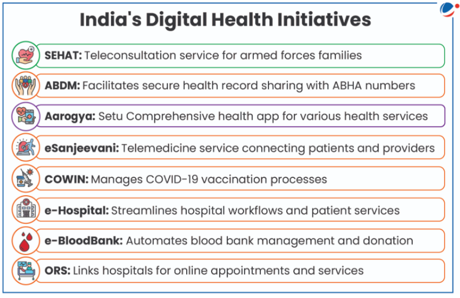
- National Digital Health Mission (NDHM): -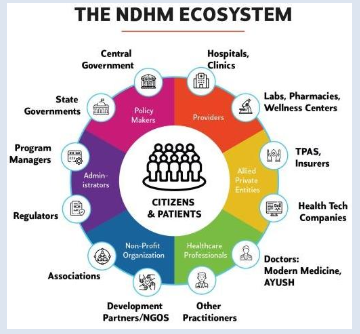
- Purpose: - Digitize healthcare in India by connecting various stakeholders through digital platforms. - Goals: - Improve efficiency, effectiveness, and transparency in health services, and help achieve health-related Sustainable Development Goals (SDGs). - Other Initiatives: - National Digital Health Blueprint (NDHB): - Plan for integrated and comprehensive digital health services. - Support under National Health Mission (NHM): - Funding for services like telemedicine, tele-radiology, tele-oncology, tele-ophthalmology, and hospital information systems. - National Health Stack by Niti Aayog: - A shared digital infrastructure for both central and state use, aiding in the rapid development of health solutions. - The Ayushman Bharat Digital Mission (ABDM): - Aims to connect digital health solutions across Indian hospitals, creating a unified ecosystem. This system facilitates digital consultations, patient consent, and ensures data privacy. - ABDM's key principles include inclusivity, free registration, voluntary participation, and a single source of truth for medical records. - The National Health Authority oversees its implementation under the Union Ministry of Health & Family Welfare. - Components of ABDM Architecture: - Ayushman Bharat Health Account (ABHA) ID - A unique 14-digit number to store and manage health records. - Healthcare Professionals Registry (HPR) - A unified repository of healthcare professionals across all medicine. - Health Facility Registries (HFR) - Repository of health facilities of the nation (both public and private). - Health Information Exchange and Consent Manager (HIE-CM) - To ensure that data exchange is driven by informed consent. - Unified Health Interface (UHI) - To facilitate the discovery and delivery of health services. - National Health Claims Exchange (HCX) - To standardize the insurance payment ecosystem. -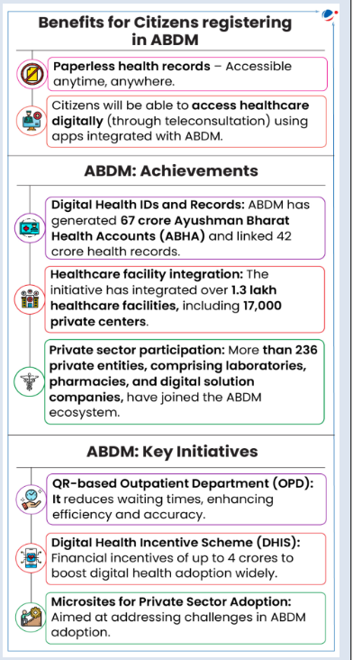
- Challenges of Digital Health Ecosystem: - Lack of Standardization in Digital Cards - India struggles to standardize coverage and quality of existing digital health cards (e.g., ESIC card, PM-JAY card), leading to data migration and transfer issues. - Equity and Access Issues - Unequal access to digital health technologies, digital literacy skills, etc., can exclude vulnerable populations, particularly in remote and rural areas. For example, the National Health Authority (NHA) reports that nearly 30% of healthcare institutions in India suffer from poor data connectivity. - Privacy and Security Issues - Unauthorized data access and breaches can compromise patient privacy and lead to identity theft. For instance, in November 2022, AIIMS experienced a cyber-attack, causing server downtime, disrupting the outpatient department (OPD), and withholding sensitive data of around 4 crore patients. - Algorithmic Bias - Technologies like AI can lead to unfair or discriminatory treatment, causing racial and ethnic disparities in healthcare. For example, AI in US health systems exhibited bias by prioritizing healthier white patients over sicker black patients for additional care, due to AI's training on cost data instead of care needs. - Conclusion: - India's digital healthcare infrastructure has great potential to improve accessibility and efficiency. With ongoing policy support (like cybersecurity frameworks), infrastructure development (such as BharatNet and Blockchain-based health records), public-private collaborations, and technological advancements, India's healthcare system is set to become a globally recognized model. - 1.6.2. Telemedicine- eSanjeevani -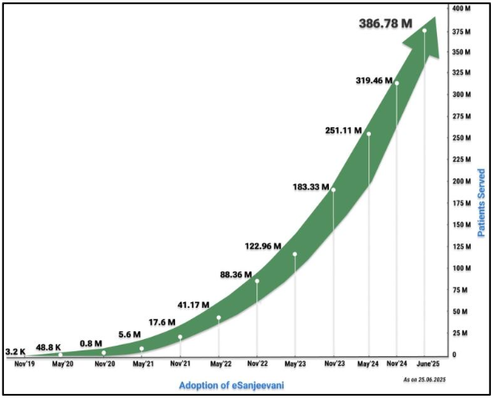
- Potential: - Telemedicine, particularly platforms like e-Sanjeevani, offers remote consultations, expanding access to healthcare in rural areas. - eSanjeevani is India’s national telemedicine platform offering both doctor-to-doctor and patient-to-doctor services. - The eSanjeevaniAB-HWC variant connects over 1,00,000 Ayushman Bharat Health and Wellness Centres with district hospitals, enabling teleconsultations. - Launched in 2022, it supports hub-and-spoke models for rural care. - The eSanjeevaniOPD platform has facilitated over 22 crore consultations, marking a significant step in digital healthcare delivery. - Hurdles: - The digital divide poses significant challenges. Issues include poor internet connectivity, lack of computerization in public health centers, and privacy concerns regarding digital health data. - 1.6.3. AI & Robotics in Healthcare -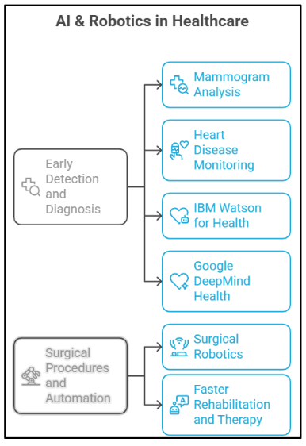
- AI in Healthcare: - AI holds the potential to transform diagnostics and drug discovery, reducing human error and improving efficiency. - Concerns about the "black box" problem (lack of transparency in AI decision-making) and privacy remain. - Robotics in Healthcare: - Robot-assisted surgeries offer precision, but remote surgery by AI remains a future possibility that requires significant infrastructure investment and regulatory frameworks. - Ethical Concerns: - AI requires large amounts of personal data, raising concerns about data privacy and standardization. - India needs a comprehensive regulatory framework for AI in healthcare to ensure ethical use. - 1.6.4. Medical Tourism - India is a global hub for medical tourism, driven by its low-cost, high-quality care, and expertise in pharmaceuticals. It contributed USD 9 billion to India’s economy in 2023 and is projected to grow further. -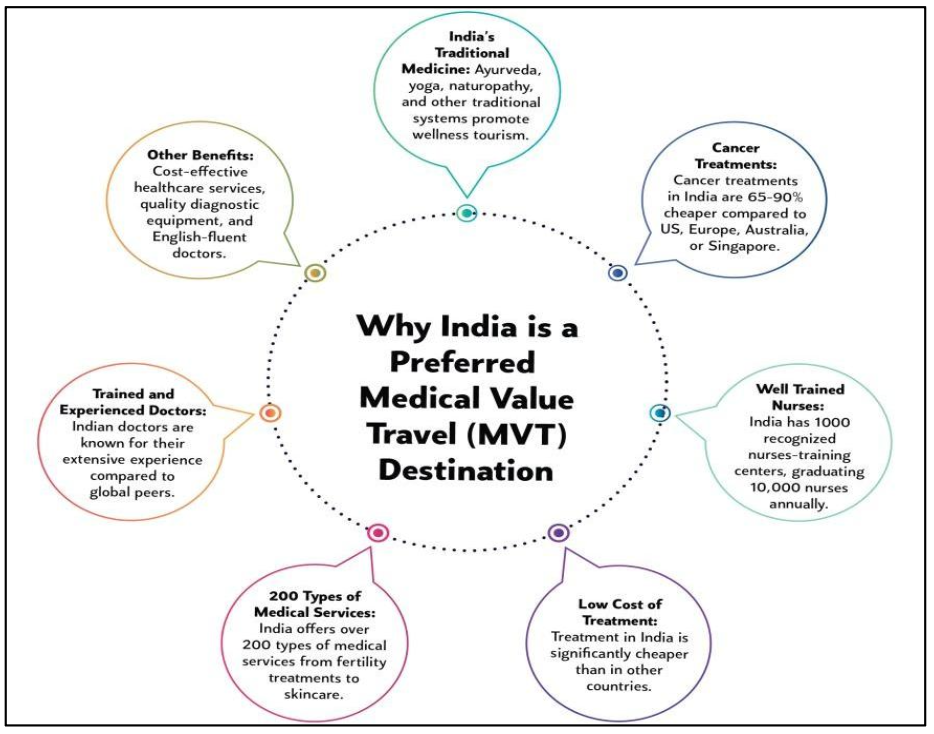
- Government Measures: - India has introduced Medical Visas and a centralized portal for booking services. - Challenges: - Challenges remain in infrastructure, skills development, and policy coordination. - Medical Tourism- Diplomacy & Dilemmas - India views medical tourism as a way to enhance its global reputation and build international partnerships by showcasing its healthcare strengths. This strategy attracts foreign patients seeking quality and affordable treatments. - However, the challenge is to maintain a strong domestic healthcare infrastructure while ensuring equitable access to healthcare for all Indian citizens. The goal is to benefit from medical tourism without compromising the essential healthcare services needed for India’s vast population. - 2. Part B- Education -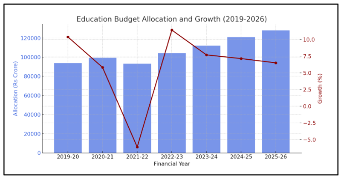
- Education is a powerful instrument of social justice, enabling individuals to break cycles of poverty and exclusion. Rooted in India’s civilizational values, it empowers minds to drive inclusive growth. - Yet, persistent inequities and underfunding hinder progress toward SDG 4, which envisions equitable, quality education for all. - Constitutional and Legal Provisions on Education - The Indian Constitution underscores the importance of education, particularly for vulnerable sections of society through various sections: - Article 29 - Ensures equality of opportunity in educational institutions and protects the culture, language, and script of minorities. - Article 30 - Grants religious and linguistic minorities the right to establish and administer their own educational institutions. - Articles 15(3) & 15(4) - Allow the state to make special provisions for the advancement of children and women, and for the admission of backward classes, SCs, or STs in private educational institutions. - Article 21A - Guarantees free and compulsory education for all children aged 6 to 14 years as a fundamental right (inserted by the 86th Amendment Act, 2002). - Articles 39(e) and 39(f) - Directs the state to prevent the abuse of children at an early age and ensure they have the opportunities and resources to grow in a healthy and dignified environment. - Article 45 - Mandates the state to provide early childhood care and education for children up to the age of six years. - Article 46 - Emphasizes the promotion of educational and economic interests of the weaker sections, especially SCs and STs. - Article 51A(k) - A fundamental duty for parents to ensure education for children aged 6 to 14 years. - Right to Education Act, 2009 - The Right of Children to Free and Compulsory Education (RTE) Act, 2009 came into effect on April 1, 2010, enforcing Article 21A as a fundamental right. - Objectives: - To ensure free and compulsory primary education for children aged 6 to 14 years. - Key Provisions: - No child shall be held back, expelled, or required to pass a board examination until elementary education is completed. - Prohibits physical punishment, mental harassment, screening procedures, and capitation fees. - Mandates 25% reservation for economically disadvantaged children in private schools for Class I admissions. - Establishes norms for student-teacher ratios, school buildings, and teacher working hours. - Limitations: - Critics argue it is input-oriented rather than outcome-focused, and does not emphasize quality of learning. It also originally excluded children aged 0-6 and 14-18. - 2.1. Education System of India - 2.1.1. Early Childhood Care and Education (ECCE) - Early Childhood Care and Education (ECCE) encompasses the holistic development of children from birth to age eight, focusing on their physical, cognitive, social, and emotional growth. This critical period lays the foundation for lifelong learning and well-being. - India has 158.7 million children in the 0-6 years age group (Census 2011) and catering to this important segment of the population to ensure holistic development is imperative. - - Challenges in ECCE: - Affordability and Accessibility - High costs and geographical disparities, especially in rural and marginalized communities. - Quality and Standards - Focus on literacy and numeracy at the expense of holistic development (social-emotional learning, creativity, motor skills). - Shortage of Centers and Trained Personnel - Lack of qualified educators and training in child development. - 2.1.2. School Education - - In India, formal school education commences after Early Childhood Care and Education (ECCE), which covers children aged 3 to 6 years. Following ECCE, the education system is structured into the 5+3+3+4 model as per the National Education Policy (NEP) 2020: - Foundational Stage (Ages 3–8): - This includes 3 years of preschool or Anganwadi followed by Classes 1 and 2. The focus is on activity-based learning to develop cognitive and socio-emotional skills. - Preparatory Stage (Ages 8–11): - Classes 3 to 5 introduce subjects like languages, mathematics, science, and arts, aiming to build foundational literacy and numeracy. - Middle Stage (Ages 11–14): - Classes 6 to 8 delve into more abstract concepts in subjects such as mathematics, sciences, social sciences, arts, and humanities. - Secondary Stage (Ages 14–18): - Classes 9 to 12 focus on multidisciplinary study, critical thinking, and depth in chosen subjects. Board exams are conducted at the end of Classes 10 and 12. - 2.1.2.1. Key Challenges in School Education - The Learning Crisis - ASER Report Findings - Poor foundational skills in reading and arithmetic. A significant percentage of 14-18-year-olds cannot read simple texts or perform basic arithmetic. - Rote Learning - Emphasis on rote memorization leads to a lack of real-life application of knowledge. - Fragmented Ecosystem - - Varied quality of education - Varied quality of education across different institutions (e.g., Madrasas, tribal schools). - Affordability, Access, and Equity - Dropout Rates - High dropout rates due to poverty, lack of infrastructure, and gender disparities. For example, in Bihar, the dropout rate at the secondary level is reported to be as high as 83%, indicating severe retention issues in certain regions. - Out-of-School Children - Over 1.4 million children aged 6-11 are out of school due to poverty and lack of digital access during the pandemic. - Social Gaps - Gender disparities and social norms (e.g., child marriage) limit education for girls and marginalized children. The ASER 2023 report indicates that 40% of girls aged 15-18 remain out of school due to early marriages, domestic duties, and gender-based violence. - High School Fees - Rising cost of private schools makes quality education inaccessible for many. In Telangana, private school fees have risen by up to 30% over the last decade, limiting the affordability of quality education. - Infrastructure and Resource Gaps - Lack of Basic Amenities - Many schools, especially in rural areas, lack essential facilities like clean water, toilets, and playgrounds. - Digital Gaps - Rural areas face lack of digital infrastructure, hindering access to e-learning opportunities. Only 53.9% of schools in India have access to the internet, with rural areas facing significant barriers to digital learning. In rural areas, only 35% of students have access to digital devices for education. - Underfunding - Education expenditure remains well below the recommended 6% of GDP. The current education expenditure in India remains around 3.1% of GDP, well below the 6% recommended by experts and global organizations like UNESCO. - 2.1.2.2. Major Government Initiatives - Samagra Shiksha Abhiyan - A comprehensive initiative that aims to improve learning outcomes and infrastructure development across schools. - Mid-Day Meal (PM-POSHAN) Scheme - Provides free nutritious meals to school children, improving attendance and addressing hunger. - NIPUN Bharat Mission - Targets foundational literacy and numeracy for all children by Class 3, ensuring universal foundational skills. - Madrasa Modernization - Efforts to modernize Madrasa education and integrate it into the formal school system to improve educational infrastructure. - NIPUN Bharat: - Foundational Literacy and Numeracy (FLN) is crucial for early childhood development, influencing long-term educational outcomes. Under NEP 2020, the NIPUN Bharat Mission promotes joyful, activity-based learning from preschool to grade 3, aiming to reduce dropouts and build strong foundations for learning. - - Madarsa Education System in India: - The madarsa education system is a traditional Islamic network focusing primarily on religious education—Quran, Hadith, Fiqh (Islamic law), and Arabic. Over time, many madarsas have introduced secular subjects like mathematics, science, and English to enhance student outcomes. - Structure and Reach: - Operates at primary to higher education levels, offering degrees like Maulvi (Class 10), Alim (Class 12), Kamil (Bachelor’s), Fazil (Master’s). - As of 2018–19, India had 24,010 madarsas with 19,132 recognised and 4,878 unrecognised madarsas. - Uttar Pradesh houses the largest number of madarsas. - Modernisation Efforts: - Launched in the early 2000s, aimed at integrating modern subjects and enhancing infrastructure. - Key schemes: - SPQEM (Scheme for Providing Quality Education in Madrasas). - SPEMM (Scheme for Providing Education to Madrasas/Minorities). - Focus areas: - Teacher training, curriculum upgrades, and infrastructure development. - Recent reforms: - Uttarakhand introduced NCERT curriculum and Sanskrit as options. - The 2024 Allahabad High Court struck down the UP Madarsa Board Act, raising legal and administrative questions. - UP Madarsa Board Act, 2004 is the law that was passed by the Uttar Pradesh government in 2004. It established the UP Board of Madarsa Education, which regulated Islamic educational institutions (madarsas) across the state. - The court decision delivered in March 2024, which struck down the 2004 Act as unconstitutional. - Key Provisions of the UP Madarsa Board Act, 2004 - The Act provided a legal framework for madarsa education in Uttar Pradesh. - It establishes the Uttar Pradesh Board of Madarsa Education which is tasked with preparing and prescribing course material, and conducting examinations for courses from Maulvi (equivalent of Class 10) up to Fazil (equivalent to postgraduate) under its scheme. - It defines “Madarsa education” to include instruction in Arabic, Urdu, Persian, Islamic studies, philosophy (and other branches specified by the Board). - The Act gives the state the power to regulate recognised madrasas in terms of standards of education, ensuring competency so that students can participate in mainstream education and society. - It also included provisions for granting certain higher degrees such as Fazil and Kamil. - Reason for Striking Down the UP Madarsa Board Act, 2004 - 1. Violation of Constitutional Principles (Secular Education) - The Court held that the Act violated the principles of secularism — a basic feature of the Constitution. - It said that the State cannot promote or administer education primarily based on religion, as education under the Constitution must be secular in nature. - Since the Madarsa Board Act’s main purpose was to regulate and promote religious education (Islamic studies), it was seen as religion-centric and not neutral. - 2. Contrary to Article 28 & Article 30 - Article 28(1) prohibits religious instruction in institutions wholly maintained by the State. - The Act allowed madarsas (many fully funded by the government) to impart religious education, which was seen as a direct violation of Article 28. - The court also observed that while Article 30 gives minorities the right to establish and administer educational institutions, the State itself cannot create or control religious boards for any one faith. - 3. Unconstitutional Delegation of Powers - The Madarsa Board, created under the Act, was given extensive powers over curriculum, recognition, and examinations — all centered around religious instruction. - The court noted this as an excessive and arbitrary delegation of State authority to a religion-specific body. - 4. Exclusion from Mainstream Education - The judgment highlighted that madarsa students were being isolated from mainstream education, leading to educational inequality. - It stated that every child has the right to modern, secular, and scientific education under the Right to Education Act (Article 21A) — something the Act failed to ensure. - 5. Public Money Used for Religious Instruction - The court found that public funds were being used to run and support institutions that imparted religious teaching. - This was considered unconstitutional since taxpayer money cannot be used for promoting any religion. - Side note - Anjum Kadari & Another v. Union of India (2024): - Supreme Court reversed the Allahabad High Court’s judgment that struck down the UP Madarsa Act. - The court held that a law can be struck down only for violating Fundamental Rights, not the basic structure. - Confirmed the Act is within state legislative competence under Entry 25, Concurrent List (Education). - Stressed that the Act aims to ensure educational standards and socio-economic inclusion for madarsa students. - Struck down provisions awarding degrees like Fazil and Kamil for violating Section 22 of UGC Act. - Reaffirmed minority educational rights under Article 30(1) and the role of NCMEI in safeguarding them. - Key Challenges and Way Forward: - Key Challenges - Outdated religious curricula in many institutions. - Shortage of trained teachers for modern subjects. - Inadequate funding and poor infrastructure. - Resistance to change from within communities. - Lack of formal certification, reducing employability and access to higher education. - Social stigma and exclusion from mainstream education spaces. - Way Forward - Strengthen modernization schemes and ensure state recognition of madarsas. - Introduce vocational training, digital literacy, and skill-based learning. - Focus on teacher capacity building and community engagement. - Promote a balanced approach to preserve tradition while ensuring mainstream integration and economic empowerment. - The Impact of COVID-19 on Education in India: - The COVID-19 pandemic led to one of the longest school closures in India, lasting over 73 weeks by September 2021. This caused disruptions in school enrollment, access to learning, and a significant learning loss among children. - Shift in Enrollment- Private to Public Schools: - Private to Government Shift: - Enrollment in private schools for children (age 6-14) in rural India dropped from 32.5% in 2018 to 24.4% in 2021, while government school enrollment rose from 64.3% to 70.3%. - Reasons for Shift: - Financial distress made private schools unaffordable, while government schools offered free textbooks and food rations. - Increase in Tuition: - The number of students taking paid tuition jumped from 29% in 2018 to 40% in 2021. - Digital Divide in Remote Learning: - Smartphone Access: - Although smartphone access increased, children from less-educated families had less access (45%) compared to those with highly educated parents (79%). - Learning Materials: - Over 80% of children received textbooks, but only 35% received additional materials like worksheets and online resources. - Equity Gap: - 26.7% of children with low parental education got extra learning materials, compared to 49% with more educated parents. - Learning Loss: - Evidence of Loss: - A study found 92% of children in grades 2-6 lost at least one language skill, and 82% lost math skills. - State-Level Data: - Surveys in Karnataka, Chhattisgarh, and West Bengal showed sharp drops in basic reading and arithmetic skills. - Magnitude of Loss: - In Karnataka, learning progress was less than half of what it would have been in a normal year, showing a learning loss of over a year. - Recommendations for Recovery: - The Standing Committee on Education chaired by Dr. Vinay Sahasrabuddhe proposed several key measures to address these challenges: - Reopening Schools: - Safely reopen schools by vaccinating staff and students, holding classes in shifts, providing free masks, and offering incentives like food and study materials to re-enroll dropouts. - Bridging Learning Gaps: - Assess learning gaps, create bridge courses, and provide personalized remedial classes for students needing extra support. - Strengthening Digital Education: - Invest in digital infrastructure, distribute subsidized devices, train teachers for online content, and develop a hybrid model combining online and classroom learning. - Rethinking Exams: - Establish a continuous assessment system alongside traditional exams, using workbooks and presentations. - 2.1.3. Teacher’s Training - Teacher education is essential for developing skilled, knowledgeable, and value-driven educators who can shape young minds and strengthen the overall education system. Well-trained teachers not only deliver curriculum effectively but also inspire critical thinking and lifelong learning in students. - To enhance the quality of teacher training, improved selection processes are necessary. These may include: - General knowledge tests - Subject-specific assessments - Intelligence and language proficiency tests - Interviews to assess attitude and interest - Such multi-dimensional evaluations can ensure only competent and passionate individuals enter the teaching profession. - Government Initiatives for Teacher Training: - DIKSHA (Digital Infrastructure for Knowledge Sharing) - Offers online and offline teacher training resources, helping educators collaborate, upgrade skills, and access diverse content anytime. - Prashikshak Portal - Developed by the Ministry of Education and Central Square Foundation, it supports District Institutes of Education and Training (DIETs) in improving teacher preparation programs. - RTE Act Amendment (2017) - Mandated all in-service teachers to acquire minimum qualifications as per NCTE norms by March 31, 2019, aiming to enhance classroom teaching standards. - 2.1.4. Higher Education Ecosystem - Higher education refers to formal education beyond secondary school, typically provided by universities and colleges. It involves in-depth study of a specific subject area or field, leading to qualifications like bachelor's degrees, master's degrees, and PhDs. - India's higher education system is the third largest in the world, next to the United States and China. - - 2.1.4.1. State of Higher Education - Gross Enrolment Ratio (GER) rose from 24.3% (2014–15) to 27.1% (2019–20) and 28.4% (2020–21 and 2021–22). - Gender Parity Index (GPI) improved, showing greater access for women in higher education. - PhD enrolments nearly doubled from 1.17 lakh (2014–15) to 2.03 lakh (2019–20). - 2.1.4.2. Key Issues in Higher Education - 1. Bottlenecks in Regulation of Higher Education - A complex and often opaque regulatory environment stifles institutional autonomy and innovation. This leads to inefficiencies and delays in implementing necessary reforms. - - 2. Quality and Accreditation (NAAC) of Institutions - - The National Assessment and Accreditation Council (NAAC) assesses the quality of Indian institutions, and reports indicate that 68% of institutions are of mediocre or poor quality. - In global rankings, Indian institutions are making progress but still face significant challenges: - QS World University Rankings: - No Indian university is in the top 100. - However, in the recent QS World University Rankings India has a record 54 institutions featured, the fourth highest globally after the US, UK, and China. - 3. Faculty Shortage and Quality of Research - India faces a critical faculty shortage across universities: - 35% professor, 46% associate professor, and 26% assistant professor vacancies remain unfilled. - Research output is low, with India's R&D expenditure at 0.64% of GDP (2020-21). - Indian businesses contribute only 37% of Gross Expenditure on R&D (GERD), which hinders innovation and industry-academia collaborations. - 37% seems high, but only when seen in isolation. For example China's is 76%, South Korea is 80%, etc - So, in most innovation-driven economies, the private sector (industry) contributes the majority of R&D spending — two-thirds or more. - - Revamping India's Research Ecosystem- The Role of NRF - India’s research ecosystem has long suffered from fragmented funding, low R&D investment (about 0.7% of GDP), bureaucratic hurdles, and weak industry-academia collaboration. This has constrained India's global scientific standing and innovation capacity, especially when compared to nations like the US and China. - To address these issues, the Anusandhan National Research Foundation (NRF) was established through the NRF Act, 2023, replacing the Science and Engineering Research Board (SERB). - NRF’s Mandate and Structure: - Acts as an apex body to provide strategic direction and seed research across universities, R&D labs, and colleges. - Covers STEM fields, agriculture, health, and social sciences and humanities. - Operates with a ₹50,000 crore budget for 2023–28 (28% public, 72% private/philanthropy). - Governed by a board of scientists, industry leaders, and officials, with the Prime Minister as ex-officio President. - Key Features and Reforms: - Democratises research funding by supporting peripheral and rural institutions alongside elite centres. - Streamlines processes by reducing bureaucratic delays and standardising funding mechanisms. - Strengthens industry-academia linkages and promotes international research partnerships. - Encourages interdisciplinary work, including priority areas like clean energy, sustainability, and climate change. - Includes social sciences and humanities, broadening the research landscape. - Challenges: - Mobilising private sector contributions at such scale is untested. - Ensuring inclusive access to smaller institutions remains a concern. - Bureaucratic inertia may hinder reforms. - Translating research into tangible societal or economic impact is still a systemic weakness. - Way Forward: - Incentivise private and philanthropic investment in research. - Ensure merit-based and transparent funding through robust evaluation systems. - Actively support underrepresented regions and disciplines. - Focus on applied research that addresses real-world challenges. - Foster global collaborations and align efforts with India’s target of 2% of GDP in R&D by 2047. - 4. Financing of Higher Education (HEFA): - The Higher Education Financing Agency (HEFA) was launched in 2017 as a joint initiative of the Ministry of Education and Canara Bank, to provide low-interest loans for the development of infrastructure and research facilities in India’s premier educational institutions. This model marked a shift from traditional direct grants to loan-based funding, aiming to raise the global competitiveness of Indian institutions. - By March 2025, HEFA had sanctioned over ₹43,438 crore across 109 institutions, supporting the creation of labs, hostels, libraries, and innovation ecosystems. - This financing mechanism aligns with the vision of the NEP 2020 to improve educational quality and outcomes, especially amidst concerns of chronic underfunding—India’s education spending still hovers below 3% of GDP, far short of the 4–6% recommended by global standards. - Emerging Challenges of the Loan-Based Model: - Rising Student Fees - To service the HEFA loans, institutions—particularly IITs and Central Universities—have resorted to steep fee hikes. This undermines affordability, disproportionately impacting students from marginalized and low-income backgrounds. - Risk of Commercialization and Exclusion - The shift towards self-financing models pushes public institutions towards a quasi-private framework, potentially eroding their public character and inclusive mission. - Diversion from Core Functions - Institutions are compelled to divert funds for debt servicing, which can compromise investment in academic quality, teaching resources, and research. - Neglect of State Public Universities - While HEFA has focused on centrally funded institutions, 81% of India’s higher education students are in state public universities, which remain underfunded and excluded from HEFA support, relying on unpredictable state grants and limited fee-based income. - - Way Forward: - Increase Public Education Spending: - The government should progressively raise education funding to 6% of GDP, reducing the burden on institutions to rely on fee income or loans. - Expand Grants and Scholarships: - Scale up need-based scholarships and targeted grants to cushion vulnerable groups from rising educational costs. - Transparent Fee Regulation: - Introduce strong oversight mechanisms to regulate tuition and prevent arbitrary fee hikes, ensuring financial predictability for students. - State-Level Financing Innovations: - Establish state-specific education finance agencies, as recommended by NITI Aayog, and explore alumni engagement models, corporate partnerships, and philanthropy to diversify funding sources for state universities. - Balance Growth with Equity: - While HEFA can continue to support capital-intensive expansion, it should be complemented by direct public grants, particularly for essential teaching infrastructure and student support services. - 2.2. Miscellaneous Topics for Education - 2.2.1. Internationalization of Higher Education- Foreign Universities in India - The entry of foreign universities into India’s higher education sector is poised to transform the academic landscape well beyond just adding prestigious names. - These institutions bring internationally benchmarked curricula, globally recognized degrees, and experienced faculty, allowing Indian students access to world-class education without incurring high overseas costs or facing visa hurdles. - This not only makes quality education more affordable and inclusive but also helps retain talent and reduce the outflow of foreign exchange. - Foreign campuses foster research collaboration, faculty exchange, and governance reforms, raising academic standards and research output in Indian institutions. - Their industry-aligned programs focus on practical skills, internships, and entrepreneurship, directly enhancing the employability of Indian graduates in both domestic and global markets. - Additionally, India’s strategic location and youthful, English-speaking population position it as a potential global education hub, attracting students from South Asia, Africa, and the Middle East. - - Challenges: - High Tuition Costs - Risk of catering only to affluent students, excluding marginalized sections. - Limited Reach - Only a few campuses are operational in the short term, limiting system-wide impact. - Cultural Disconnects - Differences in pedagogy, governance styles, and student support systems may affect assimilation. - Regulatory Uncertainty - Approval processes, taxation, and autonomy concerns could deter full-scale participation. - Commercialization Risk - Risk of profit-driven models overtaking quality and public interest goals. - Way Forward: - Robust Regulatory Framework: - Ensure clear, transparent rules with academic safeguards and grievance redressal mechanisms. - Equitable Access: - Offer scholarships, cross-subsidies, and inclusion mandates to prevent elitism. - Domestic Collaboration: - Encourage partnerships with Indian universities for joint degrees, research, and faculty development. - Local Integration: - Promote community engagement, Indian context-based courses, and bilingual pedagogy where needed. - Gradual Expansion with Quality Focus: - Prioritize quality over quantity in approving new foreign institutions. - Conclusion: - Foreign universities can raise India’s academic standards, improve employability, and internationalize education. However, their success depends on inclusive policies, regulatory clarity, and integration with local priorities to ensure that excellence goes hand-in-hand with equity. - Expanding India's Academic Footprint- Indian Universities Going Global: - The international expansion of Indian higher education institutions—such as IITs, IIMs, and leading private universities—into countries like the UAE, Tanzania, and Malaysia is reshaping India’s global academic presence. These overseas campuses offer Indian curricula, degrees, and pedagogical models, delivering affordable and quality education to both the Indian diaspora and local students. - This move enhances India’s soft power, fosters cross-cultural collaboration, promotes joint research, and strengthens global academic networks, thereby raising the international profile of Indian institutions and contributing to the global talent pool. - Challenges and Way Forward: - Challenges - Navigating diverse regulatory frameworks across countries. - Ensuring consistent academic standards and infrastructure abroad. - Facing stiff competition from well-established Western institutions. - Faculty shortages and the complexity of managing cross-border operations. - Adapting Indian curricula to local socio-cultural and economic contexts without compromising quality. - Way Forward - Establish robust quality assurance mechanisms to ensure academic integrity overseas. - Invest in faculty development and global exposure to prepare teams for international roles. - Forge strategic partnerships with local universities and industries for contextual relevance. - Ensure government support through streamlined approvals, diplomatic facilitation, and incentive structures. - Maintain a balance between global ambition and academic excellence, ensuring relevance in diverse educational ecosystems. - Conclusion: - As Indian institutions expand internationally, success will depend on maintaining quality, building local relevance, and leveraging this opportunity to position India as a global leader in affordable, high-impact education. - 2.2.2. AI in Education- Personalized Learning and Ethical Challenges - Artificial Intelligence (AI) is revolutionizing Indian education through personalized learning, where AI platforms customize content, pace, and assessments based on each student’s needs and strengths. - - Key Highlights: - Market Growth - Valued at $4.74 billion in 2024, reflecting rapid expansion. - Adoption - Over 75% of higher education institutions use hybrid or AI-enabled models. - Government Push - e-Adhigam and 2025: Year of AI initiative target 40 million students. - Learning Outcomes - AI boosts academic performance by 17% and retention by 15%. - Challenges: - Digital Divide - Limited access in rural areas due to poor connectivity and devices. - Teacher Readiness - Many educators lack training to integrate AI in classrooms. - Ethical Concerns - Issues of data privacy, algorithmic bias, and tech over-dependence. - Affordability - AI tools may be too costly for underfunded institutions. - Way Forward: - Invest in digital infrastructure and affordable AI solutions. - Ensure teacher training in tech integration. - Strengthen data protection laws and ethical AI frameworks to ensure equity and inclusion. - Case Study- AI Maker Labs – Learning by Doing in Indian Education: - AI-enabled maker labs represent a transformative shift in education, moving from passive textbook learning to hands-on experimentation. These labs allow students to interact directly with AI tools and applications, bridging the gap between abstract theory and real-world practice. Such experiential learning fosters deeper understanding, creativity, and problem-solving—skills essential for the AI-driven future. - Key Features and Implementation: - Real-World Application - Students train AI models (e.g., object classification in environmental science), learning core AI functions and ethical considerations like bias. - AI Made Tangible - Labs help students grasp AI mechanics and limitations through direct interaction. - Atal Tinkering Labs (ATLs) - Over 10,000 labs under the Atal Innovation Mission provide foundational infrastructure for AI integration. - Challenges - Common issues include undertrained facilitators, underutilized tools, and lack of a creative experimentation culture. - Targeted Outreach - With 60% of labs in government schools, inclusive implementation needs state and community collaboration. - Strategic Needs - Success depends on teacher training, strong leadership, mentorship, and curriculum support. - Conclusion: - AI maker labs hold great promise in democratizing AI education. With the right support systems, they can prepare India’s students to innovate, adapt, and lead in an AI-powered world. - 2.2.3. Private Sector in Education - - There may be two types of providers of education in the Indian system- public and private. Private institutions are further classified as: - Partly funded by the government (aided) or - Entirely self-funded (unaided). - Public institutions are established, funded and managed by the government. Private providers of education often step in when the government has limited resources to provide universal access to education. - Over the past two decades, India has witnessed a rapid increase in privatization within its education sector. - In 2021-22, private unaided schools accounted for over 32 percent of total schools imparting education in India. - In higher education, 67% of universities and 37% colleges in India are private. - Challenges and Issues in Private Sector Participation: - Inequality and Affordability - A study by the National Sample Survey Office (NSSO) found a significant correlation between household income and the likelihood of children attending private schools. - The rising costs of private professional colleges, such as medical and engineering institutions, have made them financially out of reach for many students. - Quality Concerns - Studies by organizations like the Centre for Policy Research have highlighted inconsistencies in teaching quality, infrastructure, and learning outcomes across private schools. - Studies by the National Institutional Ranking Framework (NIRF) have shown a wide range in quality parameters among private universities and colleges. - Commercialization and Profit Motive - The profit-oriented nature of some private institutions can lead to a compromise on academic integrity, focus on employability over holistic development, and unethical practices like capitation fees. - The case of private universities offering degrees in dubious disciplines or with questionable academic rigor highlights the commercialization concerns. - 2.2.4. Vocational Education and Skill Development - India’s youth population presents an opportunity for a demographic dividend, but vocational education faces several challenges: - Low Penetration: - Only 3% of the workforce receives formal vocational training. - - Government Initiatives: - Pradhan Mantri Kaushal Vikas Yojana (PMKVY) - This flagship scheme provides skill training to the youth to enhance their employability. - National Skill Development Mission (NSDM) - NSDM acts as the overarching framework for coordinating skill development efforts across the country. - National Apprenticeship Promotion Scheme (NAPS) - This scheme promotes apprenticeships as a means of skill development and employment. - Deen Dayal Upadhyaya Grameen Kaushalya Yojana (DDU-GKY) - This scheme focuses on skill development for rural youth. - Skill India Mission - This is a broader campaign encompassing various initiatives to create a skilled workforce. - Jan Shikshan Sansthan (JSS) - These institutes provide vocational training to adults and out-of-school youth. - 2.2.5. National Testing Agency (NTA) and Exam Paper Leak - The National Testing Agency (NTA), established in 2017 under the Ministry of Education, is India’s premier autonomous body for conducting standardized and transparent entrance exams for higher education. It aims to ensure equity, quality, and reliability in assessments using scientific and fair testing systems. - Key exams conducted by NTA include: - NEET (UG) - JEE Main - CUET (UG & PG) - UGC-NET - Paper Leak Controversy: - - In recent months, NTA has come under scrutiny due to serious paper leak allegations, especially in NEET-UG and CUET. These have highlighted major systemic issues: - Lapses in test security and confidentiality - Outdated exam conduct practices (offline pen-paper mode) - Insufficient vetting of exam center staff and IT systems - These failures have eroded public trust, triggered widespread protests, and raised concerns about fairness and transparency in national-level exams. - Government Response & Legislative Action: - To address these concerns, the Central Government announced major NTA reforms in December 2024: - NTA to exit recruitment exams and focus solely on higher education entrance exams from 2025. - Restructuring of NTA: - Creation of an empowered governing council with domain experts. - Addition of 10 verticals including test security, research, and infrastructure. - Launch of computer-adaptive testing systems and AI-enabled monitoring tools. - A shift towards online testing for major exams like NEET is under active discussion. - Way Forward: - Strengthen digital infrastructure and adopt adaptive computer-based testing. - Enhance exam security through biometric verification, AI-based proctoring, and real-time surveillance. - Ensure transparency and accountability through audits, public disclosures, and strict penalties. - Legislative measures to criminalize organized exam fraud and plug legal gaps in enforcement. - Side note - Public Examinations (Prevention of Unfair Means) Act, 2024: - Enacted in February 2024, effective June 21, 2024, to curb exam paper leaks in tests like NEET and UGC-NET. First national law specifically addressing unfair means in public exams. - Objective: - To restore public trust by ensuring exam integrity, accountability, and severe deterrence against malpractice. - Key Provisions: - Strict Punishments - Paper leak offenders: 3–5 years’ jail + ₹10 lakh fine. - Organized crime: 5–10 years’ jail + ₹1 crore minimum fine. - Cognisable & Non-bailable - Police can arrest without a warrant; offences are non-compoundable. - Institutional Accountability - Exam service providers failing to report offences: fined up to ₹1 crore. - Institutions involved may face property seizure and cost recovery. - Targets Organised Crime - Covers leaks, impersonation, hacking, and related offences. - Student Protection - Genuine candidates are shielded from punishment. - Conclusion: - The NTA is pivotal to India’s higher education admission system, but recent paper leaks have exposed critical weaknesses. With the government's reform push, there is an opportunity to rebuild credibility, modernize exam conduct, and ensure that merit, not malpractice, determines opportunity. - 2.2.6. National Education Policy - Early Childhood Education (3-6 years) - Policy Recommendation: - Incorporate Early Childhood Care and Education (ECCE) into the school curriculum through a 5+3+3+4 design. - It should be play-based and activity-based learning. - Potential Impact: - This recommendation will ensure that children receive a strong foundation in their early years, promoting brain development. - It could lead to better learning outcomes in later stages of education, as early childhood education is critical for cognitive and emotional development. - Foundational Stage (3-8 years) - Policy Recommendation: - Establish foundational literacy and numeracy by grade 3 through the National Mission on Foundational Literacy and Numeracy. - Potential Impact: - Ensuring that every child achieves foundational literacy and numeracy by grade 3 will enhance long-term academic success and reduce dropout rates. - It will also improve student performance in higher grades, contributing to a more competent workforce in the future. - Preparatory Stage (8-11 years) - Policy Recommendation: - Reducing curriculum load to focus on core subjects and enhancing critical thinking and analytical skills. - Potential Impact: - By reducing the content load and focusing on critical thinking, students will be better prepared for complex subjects in the later stages of education. - This could make learning more engaging and help students retain knowledge better, moving away from rote memorization. - Middle Stage (11-14 years) - Policy Recommendation: - Introduce flexibility in subject selection, offering a broader range of choices to students in secondary school. - Potential Impact: - Allowing students to choose subjects will lead to more personalized learning experiences, encouraging exploration of different areas of interest. - This could reduce stress related to rigid subject structures and promote a more well-rounded skill set in students. - Secondary Stage (14-18 years) - Policy Recommendation: - Reform board exams to assess core concepts and allow multiple attempts. - Promote the use of local languages as a medium of instruction. - Potential Impact: - These reforms will reduce the pressure associated with high-stakes exams, allowing students to focus on conceptual understanding. - The shift towards using local languages will enhance comprehension and inclusivity, enabling students from diverse linguistic backgrounds to better grasp subjects. - Higher Education - Policy Recommendation: - Increase Gross Enrolment Ratio (GER) to 50% by 2035 through online and open distance learning options. - Restructure institutions into multidisciplinary universities. - Potential Impact: - Improving GER will promote greater access to higher education, especially for marginalized communities. - The restructuring of institutions into multidisciplinary entities will foster cross-disciplinary learning, preparing students for the complexities of the global workforce. - Vocational Education - Policy Recommendation: - Integrate vocational education into all levels of school and higher education, aiming for 50% exposure by 2025. - Potential Impact: - This policy will address the skills gap in India, as many students currently graduate without job-ready skills. - Expanding vocational education will enable more students to acquire practical skills that can enhance employability and economic productivity, particularly in industries requiring specialized knowledge. - Teacher Training and Management - Policy Recommendation: - Replace B.Ed. with a 4-year integrated program and ensure continuous professional development for teachers. - Potential Impact: - This reform will improve the quality of teacher education, ensuring teachers are well-prepared and updated with the latest teaching methods. - Continuous development will contribute to better classroom practices, leading to improved student outcomes. - Governance and Regulation - Policy Recommendation: - Establish school complexes and independent state school standards authorities for better governance and quality. - Potential Impact: - This will create more efficient school management systems, pooling resources and teachers to improve the quality of education in rural and underserved areas. - It will also decentralize power, ensuring that local governments have more autonomy to cater to regional needs. - Research and Innovation in Higher Education - Policy Recommendation: - Establish a National Research Foundation to fund and promote quality research. - Potential Impact: - Increased funding and support for research will boost innovation, contributing to scientific, technological, and social progress. - It could also enhance India's global academic standing, leading to more collaboration with international institutions and attracting global talent. - UNIT 3- POVERTY AND DEVELOPMENT ISSUES IN INDIA - 1. Poverty in India - Poverty in India is a complex and multidimensional issue which has been conventionally understood through the lens of low income or inadequate calorie intake. - Modern definition of Poverty is characterized by deprivation in multiple aspects of life, such as health, education, access to basic goods and services, and opportunity for self-improvement. - While income is a central component in defining it, poverty also involves social exclusion, lack of physical security, and disempowerment. These factors contribute to an overall sense of deprivation that severely impacts an individual's quality of life. - This multifaceted nature of poverty leads to intergenerational transmission of poverty, where the children of poor families are more likely to remain poor due to limited access to education, nutrition, and employment opportunities. - - Types of Poverty - - - The Poverty Trap - Economists often describe poverty as a "trap"—a self-reinforcing condition where deprivation perpetuates further deprivation. In India, this trap is sustained by multiple interlinked factors: - Lack of Income and Purchasing Power - Individuals living below the poverty line often lack the resources to afford basic necessities like food, shelter, healthcare, and education. - Underemployment and Low Productivity - Scarcity of quality jobs, informal employment, and low agricultural productivity limit income generation, reinforcing poverty across generations. - Inadequate Social Infrastructure - Poor access to education, healthcare, sanitation, and housing further reduces human capital development, keeping individuals in a state of marginalization. - Understanding the Vicious Cycle of Poverty - - This complex situation leads to a vicious cycle of poverty as shown below: - Poor families can’t invest in their children’s education or health. - Children grow up with fewer skills and limited job prospects. - They enter adulthood trapped in the same conditions, repeating the cycle. - This intergenerational transfer of poverty is further worsened by limited access to credit, insecure land rights, social exclusion, and ineffective safety nets. - Breaking the Cycle- Towards a Virtuous Loop - - The Economic Survey of India has consistently argued for a transition from a vicious cycle to a virtuous cycle of growth. This requires: - Strategic public investment in education, health, and infrastructure. - Skill development and entrepreneurship promotion to enhance productivity. - Job creation through industrial diversification and formalization. - Social mobility initiatives, including credit access and targeted welfare. - Poverty in India is not merely a result of income deficiency, but a multidimensional trap that reinforces itself through poor capabilities and limited opportunities. Breaking this trap demands holistic policy efforts that empower individuals and enable them to participate meaningfully in economic growth. - Creating a virtuous cycle, where higher incomes lead to better health and education—and, in turn, higher productivity—offers the most sustainable path to poverty eradication. - Note: - Detailed Discussion on Poverty is provided in VISIONIAS Economics Value Added Material accessible from UPSC Mains Corner. The discussion in this document is limited to Poverty and its association with Hunger (& Malnutrition) - 2. Hunger and Malnutrition - Hunger is defined as prolonged food insecurity, where individuals are unable to access enough food due to financial constraints or a lack of resources. - According to the WHO, hunger arises when people are unable to obtain sufficient calories or essential nutrients to maintain good health. - - Malnutrition is another significant problem. It refers to deficiencies in the intake of necessary nutrients, which can either be caused by undernutrition or overnutrition. - Undernutrition leads to problems like stunting, wasting, and micronutrient deficiencies. On the other hand, overnutrition, resulting from excessive consumption of unhealthy foods, leads to obesity, cardiovascular diseases, and diabetes. - One major aspect of undernutrition is hidden hunger, which occurs when individuals do not consume enough vitamins and minerals despite sufficient calorie intake. Hidden hunger significantly impacts children, pregnant women, and adults, contributing to poor cognitive development, illness, and reduced productivity. - - Hidden Hunger and Malnutrition - Despite significant strides in poverty reduction, hidden hunger and malnutrition continue to affect millions, particularly children and women, hindering overall health and productivity. - Hidden Hunger - Hidden hunger refers to micronutrient deficiencies—the lack of essential vitamins and minerals such as vitamin A, iron, and iodine—despite an adequate caloric intake. It remains a silent epidemic in India, especially among children and pregnant women. - This type of hunger significantly impacts cognitive development, immune function, and overall health, leading to poor educational outcomes and reduced productivity in adulthood. Hidden hunger is particularly prevalent in rural and marginalized urban areas, where access to diverse and nutritious food remains limited. - Malnutrition - Malnutrition continues to be a pervasive issue in India, contributing to high rates of child stunting, wasting, and underweight. According to the Global Hunger Index (GHI) 2023, India ranks 111th out of 125 countries, reflecting its serious hunger levels. - Child wasting, defined as low weight-for-height, remains a major concern, with India holding the highest global rate of 18.7% for child wasting. High rates of anemia in women (57%) and stunting (35.5%) among children are also prominent indicators of the scale of malnutrition in India. - - Causes of Hunger and Malnutrition - Poverty - Families below the poverty line cannot afford nutritious food, leading to issues like stunting and wasting. For instance, 31.4% of children in India are stunted due to chronic malnutrition caused by poverty. The World Bank estimates that 22% of India’s population lives below the poverty line, limiting their access to nutritious food. - Social and Cultural Factors - Gender inequality is a critical factor. Women often have limited access to food within households, particularly in patriarchal societies. Cultural norms also play a role, where children and girls are sometimes deprived of adequate nutrition, leading to nutritional deficiencies. A study by UNICEF India found that gender inequality leads to food insecurity, where girls in rural Bihar were often fed last in their households, leading to nutritional deficiencies. Cultural norms prioritize male family members over females for food intake. - Economic Factors - Insufficient government expenditure on child nutrition, food wastage, and underutilization of welfare funds exacerbate hunger and malnutrition. Additionally, low agricultural productivity and underemployment in rural areas contribute to food insecurity. According to the Food and Agriculture Organization (FAO), India faces significant food wastage—about 40% of food production is wasted annually. The Government of India’s Economic Survey 2020-21 highlighted that underutilization of funds allocated for child nutrition and low agricultural productivity contribute to malnutrition. - Governance Issues - Corruption, mismanagement, and inefficient monitoring of welfare schemes, such as the Public Distribution System (PDS), hinder the effective distribution of food and nutrition to the poor. Despite numerous government schemes, leakage, and ineffective implementation continue to pose significant challenges. A 2018 report by the Comptroller and Auditor General of India (CAG) found that 30-40% of food grains allocated for the Public Distribution System (PDS) in Bihar were lost due to leakage and mismanagement, preventing effective delivery to vulnerable populations. - Environmental Factors - Climate change is increasingly affecting agriculture and food production, leading to food insecurity. Poor sanitation and hygiene also result in diseases that hinder nutrient absorption, exacerbating malnutrition. A 2019 report by the Indian Meteorological Department (IMD) highlighted that climate change is affecting food production in India. For example, wheat and rice production in states like Punjab and Haryana have been impacted by shifting monsoon patterns, leading to food insecurity. Moreover, poor sanitation continues to hinder nutrient absorption, exacerbating malnutrition. - 2.1. Link Between Poverty and Hunger - - Limited Access to Food: - Poverty restricts financial resources, making it difficult for families to afford enough food, let alone nutritious options. A significant portion of the population in developing nations cannot afford a healthy diet, leading to undernutrition and food insecurity. - Impact on Human Capital: - Hunger, especially in children, impairs physical growth, cognitive development, and learning abilities. This affects educational outcomes, leading to reduced opportunities for better employment in the future, and contributes to the intergenerational transmission of poverty. - Reduced Productivity in Adults: - Malnutrition weakens the body’s immunity and causes fatigue, making it difficult for adults to work at full capacity. This leads to underemployment or unemployment, which deepens the cycle of poverty. - Poor Sanitation and Healthcare: - In impoverished areas, poor access to clean water, sanitation, and healthcare contributes to diseases like diarrhea, which further hinders nutrient absorption and worsens malnutrition. This health crisis increases medical costs, taking away resources from food. - Vicious Cycle: - Poverty leads to hunger, and hunger reduces the capacity to work, earn, and thrive, making it harder to break free from the cycle of poverty and malnutrition. Both issues need to be tackled together to disrupt this ongoing loop. - Ultra Processed Food and Hunger - The increasing consumption of ultra-processed foods (UPFs) in India highlights the intersection between health, hunger, and poverty. These foods are affordable, convenient, and widely accessible, making them particularly attractive to low-income populations who often struggle to afford healthier, fresh food. As a result, UPFs contribute to hidden hunger, where individuals consume sufficient calories but lack essential nutrients, leading to malnutrition. - Health Implications: - UPFs are linked to chronic conditions like obesity, cardiovascular diseases, and type 2 diabetes, which disproportionately affect impoverished communities. This exacerbates their already vulnerable health status and limits their ability to work or attend school, reinforcing the cycle of poverty. - Economic Burden: - The affordability of UPFs often comes at the cost of nutrient-rich alternatives, such as fruits and vegetables, which are more expensive and less accessible. This imbalance leads to nutrient deficiencies and poor long-term health outcomes, increasing healthcare costs. - In essence, the rise of UPF consumption in poverty-stricken areas creates a vicious cycle of poor health and limited opportunities. Addressing this issue requires multi-pronged policy measures, focusing on education, regulation, and promotion of healthy food options. - 3. Government Response to Eliminate Poverty and Hunger - Poverty Alleviation Programs - The Indian government has implemented several key welfare programs aimed at tackling poverty and hunger, especially among marginalized and vulnerable groups. These programs seek to address both economic deprivation and social exclusion, with a focus on improving the living standards of the poor, ensuring access to essential services, and empowering individuals to improve their socio-economic conditions. - National Rural Employment Guarantee Act (MGNREGA) - MGNREGA is a flagship program aimed at providing guaranteed employment to rural households. It ensures that at least one adult member of a household is employed for a minimum of 100 days per year, providing income support for rural families. - The program focuses on creating rural infrastructure through public works projects such as road construction, irrigation works, and afforestation. By providing employment opportunities, MGNREGA helps reduce rural poverty and improves the standard of living for millions of rural households. - Public Distribution System (PDS) - The PDS is one of the largest food security systems in the world, designed to provide subsidized food grains to the poor. It aims to ensure that vulnerable populations, especially those in rural and remote areas, have access to essential food items like rice, wheat, and sugar at affordable prices. - The system is essential in preventing hunger and malnutrition by guaranteeing access to basic food for those unable to purchase it from the open market. However, challenges related to leakage, corruption, and inefficient distribution have hampered its effectiveness in some regions. - Pradhan Mantri Awas Yojana (PMAY) - PMAY is a housing scheme aimed at providing affordable housing to the urban poor. With a goal to construct millions of affordable homes for the homeless and those living in inadequate conditions, PMAY focuses on urban slums and underdeveloped rural areas. - The program aims to reduce homelessness and improve living standards, ensuring that the poor have access to safe and secure housing. It is part of the government's broader strategy to tackle urban poverty and create sustainable cities. - Swachh Bharat Abhiyan - The Swachh Bharat Abhiyan (Clean India Mission) is an initiative to improve sanitation and hygiene nationwide, with a particular focus on rural areas. The mission aims to eliminate open defecation, improve access to clean drinking water, and promote the use of toilets. - By improving sanitation, the program directly impacts public health, reducing the incidence of waterborne diseases like diarrhea and malaria, which are prevalent in poor communities. Improved hygiene practices also contribute to reducing malnutrition and hidden hunger by ensuring safe environments for food consumption. - Programs for Removal of Hunger and Malnutrition - India has implemented multiple programs to address hunger and malnutrition, focusing on both immediate food access and long-term nutrition improvement. - National Food Security Act (NFSA): - Covers around 81 crore people. - Targets 75% of the rural population and 50% of the urban population. - Provides subsidized food grains through the Targeted Public Distribution System (TPDS). - Pradhan Mantri Garib Kalyan Anna Yojana (PMGKAY): - - Extended till 2029. - Ensures free food grains to 81.35 crore beneficiaries. - Acts as a buffer for the poor against economic shocks. - Integrated Child Development Services (ICDS): - Targets children under six, as well as pregnant and lactating women. - Provides supplementary nutrition, health checkups, and early education support. - Mid-Day Meal Scheme (now PM POSHAN): - Provides nutritious meals to school children. - Aims to improve child nutrition, increase school attendance, and reduce dropout rates. - POSHAN Abhiyaan - Goals: - Reduce stunting, wasting, underweight, and anemia in children and women. NFHS-5 data shows modest improvements in all indicators. Promotes breastfeeding, dietary diversity, and hygiene during the critical first 1,000 days. - Technology Use: - Real-time tracking via the ICDS-CAS app enables data-driven planning. - Community Engagement: - Jan Andolan campaigns have reached over 30 crore people to spread nutrition awareness. - Convergence: - Integrates efforts across 18 ministries, with localized action plans. - Progress in Poverty Reduction - - The government’s poverty alleviation programs have made significant strides in reducing poverty across India, with substantial improvements in key poverty indicators. - Reduction in Poverty Rates - According to the NITI Aayog’s Multidimensional Poverty Index (MPI) report, 13.5 crore people were lifted out of poverty between 2015-16 and 2019-21. - The national poverty rate declined from 24.85% to 14.96%, showing a marked improvement in the socio-economic conditions of millions. The decline in poverty has been more pronounced in rural areas, which have traditionally had higher poverty rates. - Government Commitment to Poverty Reduction - These improvements reflect the government's commitment to addressing multidimensional poverty, which includes not just income but also access to healthcare, education, and basic services like water and sanitation. - However, challenges remain in fully eradicating hunger and malnutrition, particularly in regions with historical and social inequalities. - 4. Multidimensional Poverty Index (MPI)- Improvements and Challenges - India has made significant progress in reducing multidimensional poverty, as highlighted by the latest United Nations and Human Development Reports. Unlike income-based poverty measures, the MPI captures simultaneous deprivations across health, education, and living standards using indicators like nutrition, child mortality, years of schooling, sanitation, and access to electricity. - Key Data on MPI (2025 Human Development Report) -| Indicator | Details |
|---|---|
| Multidimensionally Poor | 16.4% of Indians are multidimensionally poor |
| Severe Poverty | 4.2% are in severe poverty |
| Vulnerable to Poverty | 18.7% are vulnerable to falling into poverty |
| Poverty Reduction | Poverty fell from 24.85% in 2015–16 to 14.96% in 2019–21 |
| People Escaped Poverty | About 415 million people escaped poverty in 15 years |
| Urban Poverty | Urban poverty is now 5.5% |
| Rural and State Disparities | Rural areas and poorer states like Bihar, Jharkhand, and Uttar Pradesh saw the fastest reductions but still have high absolute numbers |